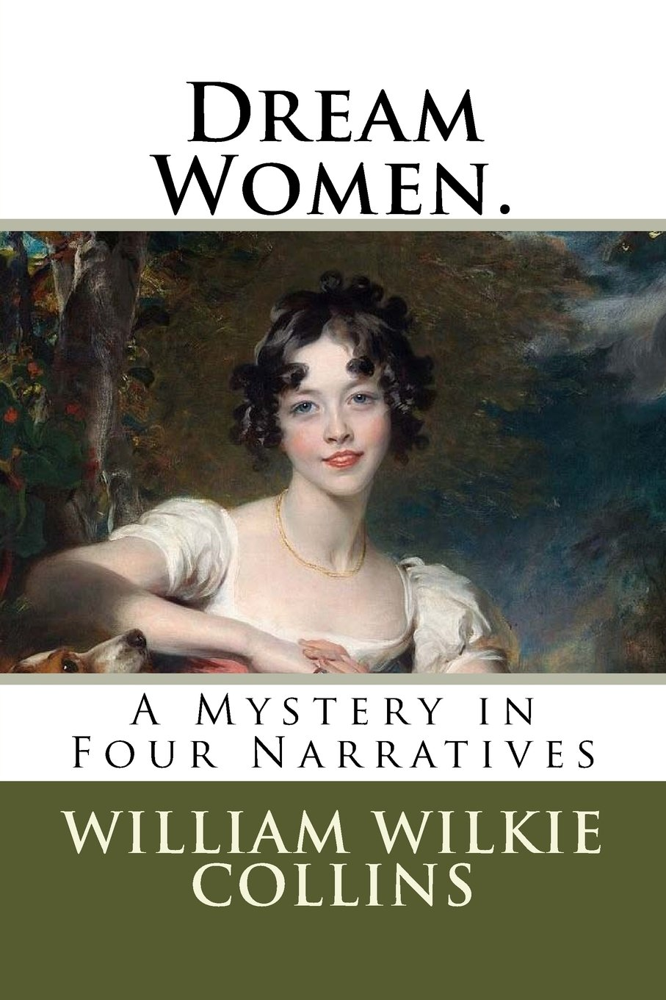

0
стр. з
0
сторінок

завантаження...

Уилки Коллинз
Женщина из сна. Мистерия в четырех рассказах
Перевел Андрей Еремин
Метод чтения Ильи Франка
Сontents
THE FIRST NARRATIVE. INTRODUCTORY STATEMENT OF THE FACTS BY PERCY FAIRBANKTHE SECOND NARRATIVE. THE HOSTLER'S STORY. — TOLD BY HIMSELF.THE THIRD NARRATIVE. THE STORY CONTINUED BY PERCY FAIRBANK.FOURTH (AND LAST) NARRATIVE. STATEMENT OF JOSEPH RIGOBERT ADDRESSED TO THE ADVOCATE WHO DEFENDED HIM AT HIS TRIAL.
THE FIRST NARRATIVE.
(первый рассказ;
narrative — рассказ, повесть)
INTRODUCTORY STATEMENT OF THE FACTS BY PERCY FAIRBANK.
(предварительное изложение обстоятельств /дела/ Перси Фэрбанком;
introductory — вступительный, вводный; предварительный; statement — заявление; изложение; fact — факт, обстоятельство)
I
"Hullo, there! Hostler! Hullo-o-o (эй, /там/! конюх! добрый день; hullo — привет!; эй!; приветственный возглас, оклик; hostler — конюх /особ. на постоялом дворе/)!"
"My dear! why don't you look for the bell (мой дорогой, почему бы тебе не поискать звонок; dear — дорогой, милый; дорогая, милая; don't = do not; to look — смотреть; to look for — искать; bell — колокол; колокольчик; звонок)?"
"I have looked — there is no bell (я уже искал — звонка нет)."
"And nobody in the yard (и никого во дворе). How very extraordinary (как очень необычайно = как странно; ordinary — обычный, обыкновенный; заурядный)! Call again, dear (позови снова, дорогой; to call — кричать; звать; окликать)."
"Hostler! Hullo, there! Hostler-r-r (конюх! эй! коню-у-у-х)!"
My second call echoes through empty space, and rouses nobody (мой второй оклик отдается эхом в пустоте: «через/сквозь пустое пространство», и никого не тревожит; call — крик; зов; оклик; to rouse — будить, поднимать; побуждать /к действию/) — produces, in short, no visible result (не производит, коротко говоря, никакого видимого результата; to produce — производить, выпускать; порождать; служить причиной; in short — вкратце, короче говоря, одним словом; short — краткое содержание; суть; short — короткий; краткий). I am at the end of my resources (я исчерпал все свои возможности: «в конце моих возможностей»; resources — ресурсы, запасы; возможности, средства) — I don't know what to say or what to do next (я не знаю, что говорить и что делать дальше; next — следующий; потом, затем).
hostler [`hPslq], yard [jRd], extraordinary [Ik`strLd(q)n(q)rI], echoes [`ekqVz], rouses [`raVzIz], result [rI`zAlt], resources [rI`zLsIz; rI`sLsIz]
"Hullo, there! Hostler! Hullo-o-o!"
"My dear! why don't you look for the bell?"
"I have looked — there is no bell."
"And nobody in the yard. How very extraordinary! Call again, dear."
"Hostler! Hullo, there! Hostler-r-r!"
My second call echoes through empty space, and rouses nobody — produces, in short, no visible result. I am at the end of my resources — I don't know what to say or what to do next.
Here I stand in the solitary inn yard of a strange town (вот я стою на безлюдном дворе гостиницы в чужом городе; here — здесь, тут; вот; solitary — одинокий; одиночный; уединенный; редко посещаемый; inn — гостиница; постоялый двор; strange — чужой; незнакомый, неизвестный), with two horses to hold (с двумя лошадьми; horse — конь, лошадь; to hold — держать; удерживать), and a lady to take care of (и дамой на попечении; lady — леди, дама; to take care of — заботиться /о ком-л., чем-л./, присматривать /за кем-л., чем-л./; to take — брать; принимать; care — забота, попечение). By way of adding to my responsibilities (вдобавок к моим обязанностям; by way of — в виде, в качестве; ради, с целью; way — путь; дорога; способ, метод; to add — прибавлять, добавлять; responsibility — ответственность; обязанность), it so happens that one of the horses is dead lame (так случилось, что одна из лошадей ужасно хрома; to happen — происходить, случаться; dead — мертвый; неисправный; /усил./ крайне, совершенно, до смерти), and that the lady is my wife (а дама — моя жена).
Who am I? — you will ask (кто я /такой/? — вы спросите).
There is plenty of time to answer the question (/у нас/ много времени, чтобы ответить на этот вопрос; plenty — изобилие; множество, избыток). Nothing happens; and nobody appears to receive us (ничего не происходит; и никто не выходит нас встретить; to appear — появляться, показываться; to receive — получать; принимать /гостей, посетителей/). Let me introduce myself and my wife (позвольте мне представить себя и свою жену = представиться и представить свою жену; to let — позволять, разрешать).
I am Percy Fairbank — English gentleman (я Перси Фэрбанк, английский джентльмен) — age (let us say) forty (возраст (скажем) сорок /лет/) — no profession (профессии нет = не служу) — moderate politics (умеренных политических взглядов; politics — политика; политические взгляды, убеждения) — middle height (среднего роста; height — высота, вышина; рост) — fair complexion (светлолицый; fair complexion — светлый/белый цвет лица /в противоположность смуглому/) — easy character (с легким характером; easy — легкий; покладистый, уживчивый) — plenty of money (/у меня/ много денег).
solitary [`sPlIt(q)rI], town [taVn], responsibilities [rI,spPnsq`bIlItIz], answer [`Rnsq], receive [rI`sJv], politics [`pPlItIks], height [haIt], character [`kxrIktq]
Here I stand in the solitary inn yard of a strange town, with two horses to hold, and a lady to take care of. By way of adding to my responsibilities, it so happens that one of the horses is dead lame, and that the lady is my wife.
Who am I? — you will ask.
There is plenty of time to answer the question. Nothing happens; and nobody appears to receive us. Let me introduce myself and my wife.
I am Percy Fairbank — English gentleman — age (let us say) forty — no profession — moderate politics — middle height — fair complexion — easy character — plenty of money.
My wife is a French lady (моя жена — француженка: «французская дама»). She was Mademoiselle Clotilde Delorge (она была мадемуазелью Клотильдой Делорж) — when I was first presented to her at her father's house in France (когда я был впервые представлен ей в доме ее отца во Франции; first — первый; впервые). I fell in love with her — I really don't know why (я влюбился в нее — я в самом деле не знаю, почему; to fall — падать; приходить, впадать в какое-л. состояние; really — действительно, на самом деле). It might have been because I was perfectly idle (может быть, это потому, что я был совершенно праздным; idle — неработающий; праздный), and had nothing else to do at the time (и мне больше нечего было делать в то время; else — еще, кроме). Or it might have been because all my friends said (или потому, /что/ все мои друзья говорили) she was the very last woman whom I ought to think of marrying (/что/ она — самая неподходящая женщина, на которой мне даже думать нельзя жениться; last — последний; самый неподходящий, нежелательный; to marry — жениться, выходить замуж; женить, выдавать замуж; ought — выражает долженствование, целесообразность). On the surface, I must own (внешне, должен признаться; surface — поверхность; внешность, наружность; to own — иметь, владеть; признавать/ся/), there is nothing in common between Mrs. Fairbank and me (нет ничего общего между миссис Фэрбанк и мной; common — общий; Mrs. = Mistress). She is tall (она высокая); she is dark (смуглая; dark — темный; смуглый); she is nervous, excitable, romantic (нервная, возбудимая, романтичная; to excite — возбуждать, волновать); in all her opinions she proceeds to extremes (во всех своих мнениях она впадает в крайности; to proceed — продолжать, возобновлять /что-л./; приступать, переходить /к чему-л./).
presented [prI`zentId], because [bI`kPz], ought [Lt], surface [`sE:fIs], nervous [`nE:vqs], excitable [Ik`saItqb(q)l], extremes [Ik`strJmz]
My wife is a French lady. She was Mademoiselle Clotilde Delorge — when I was first presented to her at her father's house in France. I fell in love with her — I really don't know why. It might have been because I was perfectly idle, and had nothing else to do at the time. Or it might have been because all my friends said she was the very last woman whom I ought to think of marrying. On the surface, I must own, there is nothing in common between Mrs. Fairbank and me. She is tall; she is dark; she is nervous, excitable, romantic; in all her opinions she proceeds to extremes.
What could such a woman see in me (что могла такая женщина увидеть во мне; to see — видеть; находить, обнаруживать)? what could I see in her (что мог я найти в ней)? I know no more than you do (я знаю /об этом/ не больше, чем вы). In some mysterious manner we exactly suit each other (каким-то таинственным образом мы прекрасно подходим друг другу; manner — метод, способ; манера; exactly — точно, в точности; вполне, совершенно; exact — точный; точно соответствующий; each — каждый; other — другой, иной; второй, другой /из двух, трех/). We have been man and wife for ten years (мы являемся мужем и женой /уже/ десять лет; man — мужчина, человек; муж), and our only regret is, that we have no children (и наше единственное огорчение в том, что у нас нет детей; regret — сожаление, огорчение; child — ребенок, дитя). I don't know what you may think (не знаю, что вы можете подумать); I call that — upon the whole — a happy marriage (я называю это — в общем/в целом — счастливым браком; whole — целое).
So much for ourselves (достаточно о нас: «так много для нас»; so much for — это все, что касается…; довольно, хватит о…). The next question is — what has brought us into the inn yard (следующий вопрос — что привело нас во двор этой гостиницы; to bring — приносить; приводить)? and why am I obliged to turn groom, and hold the horses (и почему я вынужден стать грумом и /сам/ держать лошадей; to turn — поворачивать/ся/; превращаться /в кого-л., что-л./; становиться /кем-л., чем-л./)?
We live for the most part in France (мы живем большей частью во Франции) — at the country house in which my wife and I first met (в загородном доме, в котором моя жена и я впервые встретились; country — деревенский, сельский; country — страна; сельская местность; провинция; to meet — встречать/ся/). Occasionally, by way of variety (время от времени, для разнообразия; occasionally — изредка, время от времени; occasional — случающийся время от времени, иногда; occasion — случай), we pay visits to my friends in England (мы наносим визиты нашим друзьям в Англии; to pay — платить; наносить /визит/).
mysterious [mI`stI(q)rIqs], exactly [Ig`zxktlI], other [`ADq], brought [brLt], obliged [q`blaIGd], France [frRns], country [`kAntrI], occasionally [q`keIZ(q)nqlI], England [`INglqnd]
What could such a woman see in me? what could I see in her? I know no more than you do. In some mysterious manner we exactly suit each other. We have been man and wife for ten years, and our only regret is, that we have no children. I don't know what you may think; I call that — upon the whole — a happy marriage.
So much for ourselves. The next question is — what has brought us into the inn yard? and why am I obliged to turn groom, and hold the horses?
We live for the most part in France — at the country house in which my wife and I first met. Occasionally, by way of variety, we pay visits to my friends in England.
We are paying one of those visits now (мы наносим один из тех визитов теперь). Our host is an old college friend of mine (наш хозяин — мой старый приятель по колледжу), possessed of a fine estate in Somersetshire (владеющий прекрасным поместьем в Сомерсетшире; to possess — владеть, обладать); and we have arrived at his house — called Farleigh Hall (мы прибыли в его дом, называемый Фарли-Холл; to arrive — прибывать, приезжать; hall — зал, холл; помещичий дом, усадьба) — toward the close of the hunting season (к концу охотничьего сезона; close — конец, завершение, окончание; to close — закрывать/ся/; заканчивать/ся/; to hunt — охотиться).
On the day of which I am now writing (в тот день, о котором я теперь пишу) — destined to be a memorable day in our calendar (/и которому/ суждено стать памятным днем в нашем календаре; to destine — предназначать, предопределять; destiny — судьба; участь, доля; memorable — незабываемый, /досто/памятный; memory — память; воспоминание) — the hounds meet at Farleigh Hall (свора гончих собирается в Фарли-Холле; hound — охотничья собака /особ. гончая/; to meet — встречать/ся/; собираться; meet — сбор охотников). Mrs. Fairbank and I are mounted on two of the best horses in my friend's stables (нас с миссис Фэрбанк сажают на /двух из/ лучших коней в конюшне моего друга; to mount — подниматься, взбираться; садиться или сажать /на лошадь /). We are quite unworthy of that distinction (мы совсем не заслуживаем такого почета; worthy — достойный; заслуживающий /чего-л./; worth — ценность, значение; достоинство; distinction — различие, отличие; почтительное отношение); for we know nothing and care nothing about hunting (поскольку ничего не знаем об охоте и не питаем к ней интереса; to care — заботиться; любить, проявлять интерес /к кому-л., чему-л./). On the other hand, we delight in riding (с другой стороны, мы наслаждаемся верховой ездой; hand — рука /кисть/; сторона, точка зрения; to delight — восхищать; доставлять, удовольствие; наслаждаться, получать удовольствие; delight — удовольствие, наслаждение; riding — верховая езда; to ride — ездить верхом, скакать), and we enjoy the breezy spring morning (и свежим весенним утром; to enjoy — наслаждаться; получать удовольствие /от чего-л./; breezy — свежий, прохладный /о погоде/; ветреный; breeze — легкий ветерок, бриз; spring — весна; весенний) and the fair and fertile English landscape surrounding us on every side (прекрасной и богатой английской природой, окружающей нас со всех сторон: «с каждой стороны»; fair — светлый; красивый; ясный, солнечный; fertile — плодородный; богатый, изобильный; landscape — ландшафт, пейзаж; land — земля; -scape — имеет значение «вид», «пейзаж»).
possessed [pq`zest], Somersetshire [`sAmqsetSIq], toward [tq`wLd], writing [`raItIN], unworthy [An`wE:DI], distinction [dIs`tIN(k)S(q)n]
We are paying one of those visits now. Our host is an old college friend of mine, possessed of a fine estate in Somersetshire; and we have arrived at his house — called Farleigh Hall — toward the close of the hunting season.
On the day of which I am now writing — destined to be a memorable day in our calendar — the hounds meet at Farleigh Hall. Mrs. Fairbank and I are mounted on two of the best horses in my friend's stables. We are quite unworthy of that distinction; for we know nothing and care nothing about hunting. On the other hand, we delight in riding, and we enjoy the breezy spring morning and the fair and fertile English landscape surrounding us on every side.
While the hunt prospers, we follow the hunt (пока охота идет удачно, мы следуем за охотниками; hunt — охота; группа охотников со сворой собак; to prosper — преуспевать, процветать; to follow — следовать, идти за /кем-л., чем-л./). But when a check occurs (но когда происходит задержка; check — препятствие, остановка; задержка; to check — останавливать; препятствовать) — when time passes and patience is sorely tried (когда /же/ время проходит и терпение /охотников/ ужасно испытывается; to pass — идти, проходить мимо; проходить, протекать /о времени/; sorely — жестоко, мучительно; крайне, очень; sore — рана, язва; болезненный; крайний, острый; to try — пытаться, пробовать; испытывать); when the bewildered dogs run hither and thither (когда сбитые с толку собаки бегают туда и сюда; to bewilder — смущать; ставить в тупик, сбивать с толку), and strong language falls from the lips of exasperated sportsmen (и крепкие словечки слетают с губ раздраженных охотников; strong language — сильные, крепкие выражения, ругательства: «сильный язык»; to fall — падать; опускаться; срываться с уст; to exasperate — сердить, раздражать; sportsman — спортсмен; охотник, рыболов /любитель/; sport — спорт; любительская охота, рыбная ловля) — we fail to take any further interest in the proceedings (мы теряем дальнейший интерес к происходящему; to fail — потерпеть неудачу; не суметь сделать /что-л./; to take interest in — интересоваться /кем-л., чем-л./, проявлять интерес /к кому-л., чему-л./; proceedings — поступок, действие; to proceed — продолжать /что-л./; поступать, действовать). We turn our horses' heads in the direction of a grassy lane (мы поворачиваем головы наших коней в направлении = мы направляем коней к поросшей травой тропинке; grassy — покрытый травой; травянистый; grass — трава; lane — узкая дорожка, тропинка /обычно между живыми изгородями/), delightfully shaded by trees (прелестно затененной деревьями; delightful — восхитительный, очаровательный; to shade — затенять; заслонять /от света/; shade — тень; полумрак). We trot merrily along the lane (мы весело пускаем /коней/ рысью по тропинке; to trot — идти рысью /о лошади/; пускать рысью /лошадь/; along — вдоль, по), and find ourselves on an open common (и оказываемся: «находим себя» на открытом общинном выгоне; to find — находить, обнаруживать; common — общинная земля; общинный выгон; common — общий; общественный, общинный). We gallop across the common (галопом скачем через выгон), and follow the windings of a second lane (и следуем изгибами второй тропинки; winding — извилина, изгиб, поворот; to wind — виться, извиваться). We cross a brook (пересекаем ручей), we pass through a village (проезжаем /через/ деревню; village — деревня, село, селение), we emerge into pastoral solitude among the hills (и обретаем пасторальное уединение среди холмов: «выныриваем в…»; to emerge — появляться, выходить; solitude — уединение, одиночество; sole — единственный; одиночный; уединенный /о месте/).
occurs [q`kE:z], patience [`peIS(q)ns], further [`fE:Dq], grassy [`grRsI], through [TrH], emerge [I`mE:G], pastoral [`pRst(q)rql], solitude [`sPlItjHd]
While the hunt prospers, we follow the hunt. But when a check occurs — when time passes and patience is sorely tried; when the bewildered dogs run hither and thither, and strong language falls from the lips of exasperated sportsmen — we fail to take any further interest in the proceedings. We turn our horses' heads in the direction of a grassy lane, delightfully shaded by trees. We trot merrily along the lane, and find ourselves on an open common. We gallop across the common, and follow the windings of a second lane. We cross a brook, we pass through a village, we emerge into pastoral solitude among the hills.
The horses toss their heads (кони вскидывают головы; to toss — бросать, кидать; вскидывать /голову/), and neigh to each other (и ржут друг другу), and enjoy it as much as we do (и наслаждаются этим = тишиной так же, как мы). The hunt is forgotten (охота забыта; to forget — забывать). We are as happy as a couple of children (мы счастливы, словно пара детей); we are actually singing a French song (мы даже поем французскую песню; actually — фактически, на самом деле; как ни странно; даже) — when in one moment our merriment comes to an end (когда в один миг наше веселье приходит к концу; moment — миг, минута, момент, мгновение). My wife's horse sets one of his forefeet on a loose stone, and stumbles (конь моей жены ставит одну из передних ног на шаткий камень и спотыкается; to set — ставить, помещать; foot — ступня; лапа /животного/; loose — свободный; незакрепленный; шатающийся). His rider's ready hand saves him from falling (проворная рука всадницы спасает его от падения; ready — готовый /к действию, использованию и т.д./; легкий, быстрый). But, at the first attempt he makes to go on (но при первой /же/ попытке пойти дальше, которую делает конь; to go on — идти дальше; продолжать путь), the sad truth shows itself — a tendon is strained (выясняется: «проявляет себя» печальная правда — сухожилие растянуто; sad — грустный, печальный; to show — показывать/ся/; проявлять/ся/; to strain — натягивать/ся/; растягивать/ся/); the horse is lame (конь охромел).
What is to be done (что делать: «что должно быть сделано»)? We are strangers in a lonely part of the country (мы чужие в этой безлюдной /части/ местности; stranger — незнакомец; чужестранец; lonely — одинокий; пустынный, малолюдный). Look where we may, we see no signs of a human habitation (куда бы мы ни смотрели, мы не видим никаких следов человеческого присутствия; sign — знак; признак; свидетельство; habitation — проживание; место жительства, жилище).
neigh [neI], couple [`kAp(q)l], actually [`xkCVqlI], falling [`fLlIN], truth [trHT], done [dAn], signs [saInz], human [`hjHmqn]
The horses toss their heads, and neigh to each other, and enjoy it as much as we do. The hunt is forgotten. We are as happy as a couple of children; we are actually singing a French song — when in one moment our merriment comes to an end. My wife's horse sets one of his forefeet on a loose stone, and stumbles. His rider's ready hand saves him from falling. But, at the first attempt he makes to go on, the sad truth shows itself — a tendon is strained; the horse is lame.
What is to be done? We are strangers in a lonely part of the country. Look where we may, we see no signs of a human habitation.
There is nothing for it but to take the bridle road up the hill (ничего не остается, кроме как выбрать верховую тропу, /идущую/ вверх по склону; to take — брать; выбирать; bridle road — верховая тропа, дорога для всадников; bridle — узда, уздечка; road — дорога; up the hill — в гору, вверх по склону), and try what we can discover on the other side (и посмотреть, что мы можем обнаружить на другой стороне /холма/; to discover — открывать, делать открытие; обнаруживать; side — сторона; склон /горы, холма/). I transfer the saddles (я меняю седла; to transfer — переносить, перемещать), and mount my wife on my own horse (и сажаю жену на своего собственного коня). He is not used to carry a lady (он не привык возить даму; to be used to — быть привыкшим, иметь привычку /к кому-л., чему-л./; to carry — /пере/носить, /пере/возить); he misses the familiar pressure of a man's legs on either side of him (ему не хватает привычного давления мужских ног на каждом боку = на боках; to miss — недоставать; скучать; чувствовать отсутствие; familiar — близкий, привычный; хорошо знакомый; pressure — давление; сжатие, нажим; to press — жать, давить; side — сторона; склон; бок); he fidgets, and starts, and kicks up the dust (он нервничает, вздрагивает, поднимает копытами пыль; to fidget — беспокойно двигаться, вертеться, проявлять нетерпение; to start — начинать/ся/; вздрагивать, пугаться; to kick up — поднимать, швырять вверх; to kick — ударять ногой; лягать). I follow on foot (я следую пешком), at a respectful distance from his heels (на почтительном расстоянии от его копыт; respect — уважение; почтение; heel — пятка; задняя часть копыта), leading the lame horse (ведя хромого коня). Is there a more miserable object on the face of creation than a lame horse (есть ли более жалкое зрелище на свете: «на поверхности мироздания», чем хромой конь; miserable — жалкий, несчастный; object — предмет, вещь; /разг./ жалкий человек; нелепая вещь; face — лицо; поверхность; creation — соз/и/дание; творение; мироздание; to create — творить, создавать)? I have seen lame men and lame dogs who were cheerful creatures (я видел хромых людей и хромых собак, которые были веселыми созданиями; cheerful — бодрый, веселый, неунывающий; cheer — веселье; оживление; настроение /преим. хорошее/; creature — создание, творение, существо); but I never yet saw a lame horse (но я никогда еще не видел хромого коня; yet — до сих пор; /пока/ еще) who didn't look heartbroken over his own misfortune (который не выглядел бы с разбитым сердцем над своей бедой = не убивался бы из-за своей беды; didn't = did not; to look — смотреть; выглядеть, иметь вид; heartbroken — убитый горем; с разбитым сердцем; to break — ломать/ся/; разбивать/ся/; misfortune — беда, несчастье; fortune — счастье, удача).
discover [dIs`kAvq], mount [maVnt], pressure [`preSq], either [`aIDq], distance [`dIst(q)ns], object /сущ./ [`PbGekt; `PbGIkt], creatures [`krJCqz]
There is nothing for it but to take the bridle road up the hill, and try what we can discover on the other side. I transfer the saddles, and mount my wife on my own horse. He is not used to carry a lady; he misses the familiar pressure of a man's legs on either side of him; he fidgets, and starts, and kicks up the dust. I follow on foot, at a respectful distance from his heels, leading the lame horse. Is there a more miserable object on the face of creation than a lame horse? I have seen lame men and lame dogs who were cheerful creatures; but I never yet saw a lame horse who didn't look heartbroken over his own misfortune.
For half an hour my wife capers and curvets sideways along the bridle road (полчаса моя жена /то и дело/ отскакивает в сторону на этой верховой тропе; half — половина; to caper — скакать, прыгать; to curvet — делать курбет /прыжок верховой лошади с поджатыми ногами/; прыгать). I trudge on behind her (я устало тащусь за ней; to trudge — идти с трудом, устало тащиться; behind — позади, за); and the heartbroken horse halts behind me (несчастная лошадь хромает за мной; to halt — останавливать/ся/; запинаться; /уст./ хромать). Hard by the top of the hill (рядом с вершиной холма; hard by — рядом, близко; hard — твердо, крепко; близко, рядом), our melancholy procession passes a Somersetshire peasant at work in a field (наша печальная процессия проходит мимо сомерсетширского крестьянина, работающего: «за работой» в поле; melancholy — унылый, мрачный, подавленный). I summon the man to approach us (я кричу этому человеку, чтобы он подошел к нам; to summon — позвать, вызвать; to approach — подходить, приближаться); and the man looks at me stolidly (он смотрит на меня флегматично; stolid — флегматичный, бесстрастный), from the middle of the field, without stirring a step (с середины поля, не делая ни шагу; without — без; без того, чтобы; to stir — шевелить/ся/, двигать/ся/). I ask at the top of my voice how far it is to Farleigh Hall (я /кричу/ во весь голос, спрашивая, как далеко до Фарли-Холла; at the top of one`s voice — во весь голос, во всю силу легких; top — вершина; высшая степень, высшая ступень). The Somersetshire peasant answers at the top of his voice (сомерсетширский крестьянин отвечает, /крича/ во весь свой голос):
"Vourteen mile. Gi' oi a drap o' zyder (= Fourteen miles. Give me a drop of cider. Четырнадцать миль. Дайте мне глоток сидра; mile — миля /единица длины = 1609 м/; drop — капля; небольшое количество; глоток)."
half [hRf], hour [`aVq], heartbroken [`hRt,brqVkqn], melancholy [`melqnk(q)lI], peasant [`pez(q)nt], work [wE:k], field [fJld], without [wI`DaVt], ask [Rsk], far [fR]
For half an hour my wife capers and curvets sideways along the bridle road. I trudge on behind her; and the heartbroken horse halts behind me. Hard by the top of the hill, our melancholy procession passes a Somersetshire peasant at work in a field. I summon the man to approach us; and the man looks at me stolidly, from the middle of the field, without stirring a step. I ask at the top of my voice how far it is to Farleigh Hall. The Somersetshire peasant answers at the top of HIS voice:
"Vourteen mile. Gi' oi a drap o' zyder."
I translate (for my wife's benefit) from the Somersetshire language into the English language (я перевожу (для жены) с сомерсетширского языка на английский; benefit — польза, благо). We are fourteen miles from Farleigh Hall (мы /находимся/ в четырнадцати милях от Фарли-Холла); and our friend in the field desires to be rewarded (и наш друг в поле желает быть вознагражденным), for giving us that information, with a drop of cider (за то, что дал нам эти сведения, глотком сидра). There is the peasant, painted by himself (вот крестьянин, изображенный самим собой = вот крестьянин во всей красе/истинный портрет крестьянина; to paint — красить; рисовать, писать /красками/; изображать, описывать)! Quite a bit of character, my dear (боже мой, ну и характер; quite a bit — довольно много; bit — кусочек; небольшое количество; quite a character — большой оригинал, чудак; dear — дорогой; боже мой!, вот те на! /выражает сожаление, удивление, досаду и т.д./)! Quite a bit of character!
Mrs. Fairbank doesn't view the study of agricultural human nature with my relish (миссис Фэрбанк не разделяет моего интереса к изучению земледельческой человеческой природы = натуры земледельца; to view — осматривать; оценивать, судить /о чем-л/; видеть; study — изучение, исследование; relish — удовольствие, вкус; склонность /к чему-л./). Her fidgety horse will not allow her a moment's repose (ее беспокойный конь /всё/ не даст ей ни минуты покоя; to allow — позволять, разрешать; давать возможность /чего-л./; repose — отдых, передышка; покой); she is beginning to lose her temper (она начинает терять самообладание; to lose one`s temper — выйти из себя, потерять самообладание, вспылить; temper — нрав, характер; самообладание, сдержанность).
translate [trxnz`leIt; trxns`leIt], benefit [`benIfIt], language [`lxNgwIG], fourteen [,fL`tJn], friend [frend], rewarded [rI`wLdId], doesn't [dAznt]
I translate (for my wife's benefit) from the Somersetshire language into the English language. We are fourteen miles from Farleigh Hall; and our friend in the field desires to be rewarded, for giving us that information, with a drop of cider. There is the peasant, painted by himself! Quite a bit of character, my dear! Quite a bit of character!
Mrs. Fairbank doesn't view the study of agricultural human nature with my relish. Her fidgety horse will not allow her a moment's repose; she is beginning to lose her temper.
"We can't go fourteen miles in this way," she says (мы не можем пройти четырнадцать миль так/таким образом, — говорит она). "Where is the nearest inn (где ближайшая гостиница)? Ask that brute in the field (спроси того грубияна в поле; brute — животное, тварь; жестокий, глупый или грубый человек)!"
I take a shilling from my pocket and hold it up in the sun (я достаю шиллинг из кармана и выставляю его на солнце; shilling — шиллинг /монета чеканилась до 1971; = 1/20 фунта стерлингов или 12 пенсам/; to hold up — показывать, выставлять).
The shilling exercises magnetic virtues (шиллинг проявляет магнетические свойства; to exercise — упражнять/ся/; осуществлять; проявлять; magnetic — магнитный; магнетический, притягательный; magnet — магнит; virtue — добродетель; сила, действие). The shilling draws the peasant slowly toward me from the middle of the field (шиллинг медленно притягивает крестьянина ко мне с середины поля; to draw — тянуть, тащить; притягивать; slow — медленный). I inform him that we want to put up the horses and to hire a carriage to take us back to Farleigh Hall (я сообщаю ему, что мы хотим /где-нибудь/ оставить лошадей и нанять экипаж, чтобы он отвез нас обратно в Фарли-Холл; to inform — сообщать, информировать; to put up — принимать, давать приют /гостям/; останавливаться, размещаться /где-л./; to put — класть; помещать, размещать; carriage — экипаж; карета; коляска; to take — брать; доставлять, отводить, отвозить /кого-л., что-л./). Where can we do that (где мы можем это сделать)? The peasant answers (with his eye on the shilling) (крестьянин отвечает со взором на шиллинге = не сводя глаз с шиллинга; eye — глаз; взгляд, взор):
"At Oonderbridge, to be zure." (= At Underbridge, to be sure. В Андербридже, конечно; under — под, ниже; bridge — мост; sure — уверенный; несомненный, бесспорный).
"Is it far to Underbridge (далеко до Андербриджа)?"
brute [brHt], exercises [`eksqsaIzIz], virtues [`vE:tjHz; `vE:CHz], sure [SVq]
"We can't go fourteen miles in this way," she says. "Where is the nearest inn? Ask that brute in the field!"
I take a shilling from my pocket and hold it up in the sun.
The shilling exercises magnetic virtues. The shilling draws the peasant slowly toward me from the middle of the field. I inform him that we want to put up the horses and to hire a carriage to take us back to Farleigh Hall. Where can we do that? The peasant answers (with his eye on the shilling):
"At Oonderbridge, to be zure." (At Underbridge, to be sure.).
"Is it far to Underbridge?"
The peasant repeats, "Var to Oonderbridge (крестьянин повторяет: «Далеко ли до Андербриджа?»)?" — and laughs at the question (и смеется над этим вопросом). "Hoo-hoo-hoo!" (Underbridge is evidently close by — if we could only find it.) («Ого-го!» — Андербридж, очевидно, находится поблизости — если мы только сможем его найти; hoo — ого-го!, ау! /выражение удивления, радости или призыва/; evident — очевидный, явный) "Will you show us the way, my man (не покажете ли нам дорогу, любезный: «мой человек»; man — человек, мужчина; /разг./ приятель, милый)?" "Will you gi' oi a drap of zyder (а вы дадите мне глоток сидра)?" I courteously bend my head, and point to the shilling (я учтиво наклоняю голову и указываю на шиллинг; courteous — вежливый, учтивый, любезный; court — двор /при правителе/; to bend — гнуть/ся/, сгибать/ся/; наклонять/ся/). The agricultural intelligence exerts itself (земледельческий ум проявляет себя; intelligence — ум, интеллект; умственные способности; to exert — напрягать /силы/; прилагать /усилия/; проявлять). The peasant joins our melancholy procession (крестьянин присоединяется к нашей печальной процессии). My wife is a fine woman, but he never once looks at my wife (моя жена красивая женщина, но он ни разу не смотрит на нее; fine — прекрасный, превосходный; never — никогда; ни разу; once — /один/ раз; однажды) — and, more extraordinary still, he never even looks at the horses (и, что еще удивительнее, он ни разу даже не смотрит на лошадей; extraordinary — необычайный, странный; удивительный; still — еще; все же). His eyes are with his mind (его глаза следуют за мыслью; mind — ум, разум; мысли; стремление) — and his mind is on the shilling (а его мысль /направлена/ на шиллинг).
laughs [lRfs], courteously [`kE:tIqslI], agricultural [,xgrI`kAlC(q)rql], intelligence [In`telIG(q)ns], exerts [Ig`zE:ts], procession [prq`seS(q)n]
The peasant repeats, "Var to Oonderbridge?" — and laughs at the question. "Hoo-hoo-hoo!" (Underbridge is evidently close by — if we could only find it.) "Will you show us the way, my man?" "Will you gi' oi a drap of zyder?" I courteously bend my head, and point to the shilling. The agricultural intelligence exerts itself. The peasant joins our melancholy procession. My wife is a fine woman, but he never once looks at my wife — and, more extraordinary still, he never even looks at the horses. His eyes are with his mind — and his mind is on the shilling.
We reach the top of the hill (мы достигаем вершины холма) — and, behold on the other side, nestling in a valley (и вот, на другой стороне, укрывшись в долине; to behold — увидеть, заметить; созерцать; behold! — вот!, смотри!; to nestle — уютно устроиться; ютиться; укрываться; nest — гнездо), the shrine of our pilgrimage, the town of Underbridge (находится цель нашего паломничества — город Андербридж; shrine — святыня, место поклонения; pilgrim — пилигрим, паломник; странник)! Here our guide claims his shilling (здесь наш проводник требует свой шиллинг; to claim — требовать, заявлять о своих правах /на что-л./), and leaves us to find out the inn for ourselves (и покидает нас /предоставив/ нам самим искать гостиницу; to leave — уходить; покидать, оставлять). I am constitutionally a polite man (я по характеру вежливый человек; constitutionally — сообразно телосложению, складу ума, характеру; constitution — конституция, телосложение; склад ума; характер). I say "Good morning" at parting (я говорю «Всего доброго!» на прощание; good morning! — доброе утро!; до свидания!, всего доброго! /при расставании утром/; parting — расставание; прощание; to part — разделяться; разлучаться, расставаться). The guide looks at me with the shilling between his teeth to make sure that it is a good one (проводник смотрит на меня с шиллингом между зубами = пробуя шиллинг на зуб, чтобы убедиться, что он настоящий; tooth — зуб; good — хороший; настоящий, неподдельный). "Marnin!" he says savagely (и вам! — говорит он грубо; marnin = morning; savage — дикий; жестокий, свирепый; грубый) — and turns his back on us, as if we had offended him (и поворачивает свою спину на нас = поворачивается к нам спиной, как будто мы его обидели; to offend — обижать, оскорблять). A curious product, this, of the growth of civilization (занятный же плод приносит развитие цивилизации; curious — любопытный; чудной, курьезный; product — продукт, изделие; плод, результат; growth — рост, развитие; to grow — расти, произрастать). If I didn't see a church spire at Underbridge (если бы я не видел церковный шпиль в Андербридже; church — церковь; spire — стрелка /злака/; росток; шпиль; остроконечная верхушка), I might suppose that we had lost ourselves on a savage island (то мог бы подумать, что мы потерялись: «потеряли себя» на диком острове; to suppose — думать, /пред/полагать).
nestling [`neslIN], pilgrimage [`pIlgrImIG], guide [gaId], constitutionally [,kPnstI`tjHS(q)nqlI], savagely [`sxvIGlI], church [CE:C], island [`aIlqnd]
We reach the top of the hill — and, behold on the other side, nestling in a valley, the shrine of our pilgrimage, the town of Underbridge! Here our guide claims his shilling, and leaves us to find out the inn for ourselves. I am constitutionally a polite man. I say "Good morning" at parting. The guide looks at me with the shilling between his teeth to make sure that it is a good one. "Marnin!" he says savagely — and turns his back on us, as if we had offended him. A curious product, this, of the growth of civilization. If I didn't see a church spire at Underbridge, I might suppose that we had lost ourselves on a savage island.
II
Arriving at the town, we had no difficulty in finding the inn (прибыв в город, мы без труда нашли гостиницу: «не имели трудности в нахождении гостиницы»; difficult — сложный, трудный). The town is composed of one desolate street (город состоит из одной безлюдной улицы; to compose — сочинять, создавать /лит. или муз. произведение/; составлять /из частей/; desolate — заброшенный; пустынный, безлюдный); and midway in that street stands the inn (и в середине той улицы стоит гостиница; midway — на полпути, на полдороге) — an ancient stone building sadly out of repair (старинное каменное здание в печальном состоянии: «печально вне /хорошего/ состояния»; ancient — древний; старинный, старый; to build — строить, сооружать; создавать; repair — ремонт; состояние /здания и т.д./; годность, исправность). The painting on the sign-board is obliterated (картинка на вывеске стерта; painting — живопись; картина; изображение; sign — знак; вывеска; board — доска; to obliterate — стирать, удалять, изглаживать). The shutters over the long range of front windows are all closed (ставни на длинном ряде фасадных окон = на окнах по длинному фасаду все закрыты; shutter — ставень; to shut — закрывать, затворять; range — ряд, линия, вереница; front — передний; front — передняя сторона; фасад). A cock and his hens are the only living creatures at the door (петух и его куры — единственные живые существа у двери). Plainly, this is one of the old inns of the stage-coach period (/всё/ ясно, это одна из старых гостиниц эпохи дилижансов; plainly — ясно, очевидно; plain — ясный, очевидный; stage-coach — почтовая карета, дилижанс; stage — станция, остановка; coach — почтовая или пассажирская карета, экипаж; period — период; эпоха, время), ruined by the railway (разоренная железной дорогой; to ruin — разрушать; разорять; rail — рельс). We pass through the open arched doorway (мы проходим сквозь открытый сводчатый проем; arched — арочный, сводчатый; arch — арка; свод; doorway — дверной проем), and find no one to welcome us (и не находим никого, кто бы нас встретил; to welcome — приветствовать /гостя/; радушно принимать; встречать).
difficulty [`dIfIk(q)ltI], desolate /прил./ [`desqlqt], ancient [`eInS(q)nt], building [`bIldIN], front [frAnt], door [dL], period [`pI(q)rIqd], ruined [`rHInd]
Arriving at the town, we had no difficulty in finding the inn. The town is composed of one desolate street; and midway in that street stands the inn — an ancient stone building sadly out of repair. The painting on the sign-board is obliterated. The shutters over the long range of front windows are all closed. A cock and his hens are the only living creatures at the door. Plainly, this is one of the old inns of the stage-coach period, ruined by the railway. We pass through the open arched doorway, and find no one to welcome us.
We advance into the stable yard behind (мы проходим в конный двор позади; to advance — двигать/ся/ вперед); I assist my wife to dismount (я помогаю жене спешиться) — and there we are in the position (и тут мы попадаем в положение) already disclosed to view at the opening of this narrative (/которое/ уже было описано: «открыто для обозрения» в начале этого рассказа; to view — осматривать; видеть; view — вид; осмотр, обозрение; to disclose — раскрывать, открывать; показывать; opening — отверстие, брешь; начало; вступление). No bell to ring (звонка /чтобы позвонить/ нет). No human creature to answer when I call (ни одна живая душа: «человеческое существо» не отвечает, когда я зову). I stand helpless, with the bridles of the horses in my hand (я стою, беспомощный, держа в руке поводья лошадей; help — помощь). Mrs. Fairbank saunters gracefully down the length of the yard (миссис Фэрбанк грациозно прогуливается по двору: «вниз по длине двора»; to saunter — прогуливаться, прохаживаться; grace — грация, изящество; length — длина; протяженность) and does — what all women do, when they find themselves in a strange place (и делает /то/, что все женщины делают, когда они оказываются в незнакомом месте). She opens every door as she passes it, and peeps in (она открывает каждую дверь, когда проходит мимо нее, и заглядывает внутрь; to peep — заглядывать; смотреть сквозь маленькое отверстие; подглядывать). On my side, I have just recovered my breath (что касается меня: «на моей стороне», я только что перевел дыхание; to recover one`s breath — отдышаться, перевести дух/дыхание; to recover — вновь обретать; восстанавливать), I am on the point of shouting for the hostler for the third and last time (и собираюсь криком позвать конюха в третий и последний раз; to be on the point of doing smth. — собираться сделать что-л.: «быть на грани делания чего-л.»; point — точка; порог; край; грань; time — время; раз, случай), when I hear Mrs. Fairbank suddenly call to me (когда слышу, как миссис Фэрбанк вдруг зовет меня; suddenly — вдруг, внезапно; sudden — внезапный, неожиданный):
"Percy! come here (Перси! иди сюда)!"
advance [qd`vRns], position [pq`zIS(q)n], already [Ll`redI], saunters [`sLntqz], does [dAz], women [`wImIn], shouting [`SaVtIN], call [kLl]
We advance into the stable yard behind; I assist my wife to dismount — and there we are in the position already disclosed to view at the opening of this narrative. No bell to ring. No human creature to answer when I call. I stand helpless, with the bridles of the horses in my hand. Mrs. Fairbank saunters gracefully down the length of the yard and does — what all women do, when they find themselves in a strange place. She opens every door as she passes it, and peeps in. On my side, I have just recovered my breath, I am on the point of shouting for the hostler for the third and last time, when I hear Mrs. Fairbank suddenly call to me:
"Percy! come here!"
Her voice is eager and agitated (ее голос нетерпелив и взволнован; eager — жаждущий /чего-л/; нетерпеливый; to agitate — волновать, возбуждать). She has opened a last door at the end of the yard (она открыла последнюю дверь в конце двора), and has started back from some sight which has suddenly met her view (и отпрянула/отскочила назад от какого-то зрелища, которое внезапно предстало ее взору: «встретило ее взгляд»; view — вид; видимость, поле зрения). I hitch the horses' bridles on a rusty nail in the wall near me, and join my wife (я привязываю поводья к ржавому гвоздю в стене возле меня и присоединяюсь к жене; to hitch — закреплять, прикреплять; привязывать; rusty — ржавый, заржавленный; rust — ржавчина; to join — соединять; присоединяться /к кому-л./). She has turned pale (она побледнела: «стала бледной»; to turn — поворачивать/ся/; становиться, делаться), and catches me nervously by the arm (и нервно хватает меня за руку; to catch — ловить; хватать).
"Good heavens!" she cries (боже мой: «благие небеса»! — восклицает она); "look at that (посмотри на это)!"
I look — and what do I see (я смотрю — и что же я вижу)? I see a dingy little stable, containing two stalls (я вижу грязную маленькую конюшню, в которой два стойла; dingy — тусклый; грязный; to contain — содержать, включать в себя). In one stall a horse is munching his corn (в одном стойле лошадь жует овес; to munch — жевать; грызть; corn — зерно, зерновые хлеба /в Англии — пшеница, в Шотландии и Сев. Ирландии — овес/). In the other a man is lying asleep on the litter (в другом — человек лежит спящим = спит на соломе; litter — подстилка для скота /из соломы, сена/).
agitated [`xGIteItId], last [lRst], view [vjH], stalls [stLlz]
Her voice is eager and agitated. She has opened a last door at the end of the yard, and has started back from some sight which has suddenly met her view. I hitch the horses' bridles on a rusty nail in the wall near me, and join my wife. She has turned pale, and catches me nervously by the arm.
"Good heavens!" she cries; "look at that!"
I look — and what do I see? I see a dingy little stable, containing two stalls. In one stall a horse is munching his corn. In the other a man is lying asleep on the litter.
A worn, withered, woebegone man in a hostler's dress (измученный, изможденный, печального вида человек в одежде конюха; worn — изношенный, потертый; усталый, изможденный; to wear — носить /одежду/; изнашивать/ся/; истощать/ся/; изнурять; to wither — вянуть, сохнуть; иссушать, лишать сил или свежести; woebegone — удрученный, горестный /о виде человека/; woe — горе, печаль; dress — платье, одежда). His hollow wrinkled cheeks (его впалые морщинистые щеки; hollow — пустой; впалый, ввалившийся; to wrinkle — морщить/ся/, покрывать/ся/ морщинами, складками; wrinkle — морщина; складка), his scanty grizzled hair (редкие седые волосы; scanty — скудный, недостаточный; to grizzle — делать/ся/ серым; седеть; grizzle — серый цвет; седина), his dry yellow skin (сухая желтая кожа), tell their own tale of past sorrow or suffering (красноречиво свидетельствуют: «рассказывают свою собственную историю» о пережитом горе или страдании; tale — рассказ; история; past — прошлый, былой; sorrow — горе, печаль, скорбь; suffering — страдание, мука; to suffer — страдать). There is an ominous frown on his eyebrows (его брови угрюмо сдвинуты; ominous — зловещий, угрожающий; frown — сдвинутые, насупленные брови; хмурый, недовольный вид; eye — глаз; brow — бровь) — there is a painful nervous contraction on the side of his mouth (мучительное нервное сокращение на половине рта = рот перекошен от какого-то тягостного переживания; painful — болезненный; мучительный, тягостный; pain — боль; contraction — сокращение, сжатие). I hear him breathing convulsively when I first look in (я слышу, как он судорожно дышит, когда впервые заглядываю внутрь /конюшни/); he shudders and sighs in his sleep (он вздрагивает и вздыхает во сне). It is not a pleasant sight to see (это неприятное зрелище, чтобы видеть = на это зрелище неприятно смотреть), and I turn round instinctively to the bright sunlight in the yard (и я инстинктивно поворачиваюсь к яркому солнечному свету во дворе; to turn round — оборачиваться; поворачиваться; round — вокруг, кругом). My wife turns me back again in the direction of the stable door (моя жена опять поворачивает меня обратно /по направлению/ к двери конюшни).
"Wait!" she says (подожди! — говорит она; to wait — ждать, ожидать). "Wait! he may do it again (подожди! он может сделать это снова)."
woebegone [`wqVbIgPn], wrinkled [`rINk(q)ld], ominous [`PmInqs], frown [fraVn], mouth [maVT], breathing [`brJDIN]
A worn, withered, woebegone man in a hostler's dress. His hollow wrinkled cheeks, his scanty grizzled hair, his dry yellow skin, tell their own tale of past sorrow or suffering. There is an ominous frown on his eyebrows — there is a painful nervous contraction on the side of his mouth. I hear him breathing convulsively when I first look in; he shudders and sighs in his sleep. It is not a pleasant sight to see, and I turn round instinctively to the bright sunlight in the yard. My wife turns me back again in the direction of the stable door.
"Wait!" she says. "Wait! he may do it again."
"Do what again (сделать что снова)?"
"He was talking in his sleep, Percy, when I first looked in (он говорил во сне, Перси, когда я заглянула в первый раз). He was dreaming some dreadful dream (ему снился какой-то страшный сон; to dream — видеть сон; видеть во сне; dread — /благоговейный/ страх; ужас; dream — сон, сновидение). Hush! he's beginning again (тише! он начинает опять; hush — тишина, молчание; тише!, тс!)."
I look and listen (я смотрю и слушаю). The man stirs on his miserable bed (человек ворочается на своем жалком ложе; miserable — жалкий; убогий, скверный; bed — кровать, постель; ложе). The man speaks in a quick, fierce whisper through his clinched teeth (он говорит быстрым, горячим шепотом сквозь стиснутые зубы; fierce — свирепый, лютый; горячий, пылкий; to clinch — заклепывать, закреплять скобой; захватить противника /в боксе/; clinch — зажим; скоба). "Wake up! Wake up, there! Murder (проснитесь! проснитесь же! убийство; to wake — просыпаться; будить)!"
There is an interval of silence (наступает минута тишины; interval — промежуток времени; интервал, пауза; silence — тишина; молчание). He moves one lean arm slowly until it rests over his throat (он медленно поднимает одну тощую руку, пока она не ложится на его горло; to move — /пере/двигать/ся/; шевелить/ся/; lean — худой, тощий; to rest — отдыхать; лежать, покоиться; класть, прислонять); he shudders, and turns on his straw (он вздрагивает и поворачивается /на бок/ на соломе); he raises his arm from his throat (он отнимает руку от горла; to raise — поднимать), and feebly stretches it out (и слабо протягивает ее = роняет; to stretch — растягивать/ся/; тянуть/ся); his hand clutches at the straw on the side toward which he has turned (его рука вцепляется в солому с того боку, на который он повернулся; to clutch — схватиться; сжать, стиснуть); he seems to fancy that he is grasping at the edge of something (похоже, ему кажется, что он держится за край чего-то; to seem — казаться, представляться; to fancy — воображать, представлять себе; полагать; fancy — фантазия, воображение; to grasp — хватать/ся/, сжимать /рукой/).
talking [`tLkIN] listen [`lIs(q)n], miserable [`mIz(q)rqb(q)l], murder [`mE:dq], interval [`Intqv(q)l], moves [mHvz], straw [strL]
"Do what again?"
"He was talking in his sleep, Percy, when I first looked in. He was dreaming some dreadful dream. Hush! he's beginning again."
I look and listen. The man stirs on his miserable bed. The man speaks in a quick, fierce whisper through his clinched teeth. "Wake up! Wake up, there! Murder!"
There is an interval of silence. He moves one lean arm slowly until it rests over his throat; he shudders, and turns on his straw; he raises his arm from his throat, and feebly stretches it out; his hand clutches at the straw on the side toward which he has turned; he seems to fancy that he is grasping at the edge of something.
I see his lips begin to move again (я вижу, как его губы снова начинают шевелиться); I step softly into the stable (я тихонько вхожу в стойло; to step — шагать, ступать; softly — мягко; тихо, бесшумно; soft — мягкий; тонкий, едва уловимый; тихий); my wife follows me, with her hand fast clasped in mine (жена следует за мной, с рукой, крепко сжатой в моей = крепко сжав мою руку; fast — быстро; крепко, сильно; to clasp — застегивать /на пряжку и т.д./; сжимать; пожимать). We both bend over him (мы оба склоняемся над ним; both — оба, обе; и тот и другой). He is talking once more in his sleep (он опять говорит во сне; once more — еще раз, снова) — strange talk, mad talk, this time (странные слова, безумные слова на этот раз; talk — разговор, беседа; mad — сумасшедший, ненормальный; безумный).
"Light gray eyes" (we hear him say) (светло-серые глаза, — слышим мы, как он говорит; light — светлый, светлого цвета; light — свет), "and a droop in the left eyelid (припухшее левое веко; droop — наклон, склон; to droop — наклонять/ся/, свисать; закрываться /о глазах/; lid — крышка; веко) — flaxen hair, with a gold-yellow streak in it (соломенные волосы с золотистым отливом; flaxen — льняной; светло-желтый, соломенный /о волосах/; flax — лен; yellow — желтый; золотистый; streak — полоска; жилка, прожилка) — all right, mother (хорошо: «все верно/правильно», мама; all right! — ладно!, хорошо!, идет!)! fair, white arms with a down on them (красивые белые руки с пушком /на них/; down — пух, пушок) — little, lady's hand, with a reddish look round the fingernails (маленькая дамская кисть с красноватыми ногтями: «с красноватым видом вокруг ногтей пальцев»; reddish — красноватый; red — красный; look — взгляд; вид, наружность; fingernail — ноготь пальца /руки/; finger — палец руки; nail — ноготь) — the knife — the cursed knife (нож… проклятый нож; to curse — проклинать; curse — проклятие) — first on one side, then on the other (сначала с одной стороны, потом с другой) — aha, you she-devil (ах ты чертовка/дьяволица; devil — дьявол, черт, бес)! where is the knife (где нож)?"
eyelid [`aIlId], mother [`mADq], down [daVn], cursed [`kE:sId], knife [naIf]
I see his lips begin to move again; I step softly into the stable; my wife follows me, with her hand fast clasped in mine. We both bend over him. He is talking once more in his sleep — strange talk, mad talk, this time.
"Light gray eyes" (we hear him say), "and a droop in the left eyelid — flaxen hair, with a gold-yellow streak in it — all right, mother! fair, white arms with a down on them — little, lady's hand, with a reddish look round the fingernails — the knife — the cursed knife — first on one side, then on the other — aha, you she-devil! where is the knife?"
He stops and grows restless on a sudden (он замолкает и вдруг делается беспокойным; to stop — останавливать/ся/; замолкать; to grow — расти; делаться, становиться; sudden — /уст./ неожиданность; sudden — внезапный, неожиданный). We see him writhing on the straw (мы видим, как он корчится на соломе; to writhe — скручивать, сплетать; корчиться /от боли/). He throws up both his hands and gasps hysterically for breath (он вскидывает обе руки и судорожно ловит ртом воздух; to throw up — подбрасывать; вскидывать; to throw — бросать; hysterical — истеричный, истерический; to gasp — дышать с трудом, задыхаться; ловить воздух; breath — дыхание; вздох). His eyes open suddenly (его глаза внезапно открываются). For a moment they look at nothing, with a vacant glitter in them (с минуту они смотрят в никуда: «на ничто» с пустым блеском; vacant — пустой; безучастный, отсутствующий; glitter — яркий блеск, сверкание) — then they close again in deeper sleep (затем снова закрываются в более глубоком сне = и он засыпает еще глубже). Is he dreaming still (он все еще грезит; still — до сих пор; /все/ еще)? Yes; but the dream seems to have taken a new course (да; но сон, похоже, принял новый оборот; course — курс, направление; ход, течение; to take its course — идти своим чередом). When he speaks next, the tone is altered (когда он снова говорит, тон его /голоса/ изменен; next — следующий; затем; снова; tone — тон; интонация, окраска голоса; to alter — изменять/ся/); the words are few — sadly and imploringly repeated over and over again (слов мало — печально и умоляюще /они/ повторяются снова и снова; few — немногие, немного; to implore — умолять, просить). "Say you love me (скажи, что любишь меня)! I am so fond of you (я так тебя люблю; fond — любящий; to be fond of /smb.,smth./ — любить /кого-л.,что-л./). Say you love me! say you love me!" He sinks into deeper and deeper sleep (он погружается во все более глубокий сон; to sink — тонуть; погружаться; впадать /в какое-л. состояние/), faintly repeating those words (чуть слышно повторяя те слова; faintly — бледно; слабо; едва; faint — слабый; неясный, неотчетливый). They die away on his lips (они замирают на его губах; to die away — ослабевать, постепенно исчезать; замирать, стихать /о звуке, ветре/; to die — умирать; исчезать). He speaks no more (больше он /ничего/ не говорит).
writhing [`raIDIN], hysterically [hI`sterIk(q)lI], course [kLs], altered [`Lltqd], few [fjH], love [lAv], those [DqVz], words [wE:dz]
He stops and grows restless on a sudden. We see him writhing on the straw. He throws up both his hands and gasps hysterically for breath. His eyes open suddenly. For a moment they look at nothing, with a vacant glitter in them — then they close again in deeper sleep. Is he dreaming still? Yes; but the dream seems to have taken a new course. When he speaks next, the tone is altered; the words are few — sadly and imploringly repeated over and over again. "Say you love me! I am so fond of you. Say you love me! say you love me!" He sinks into deeper and deeper sleep, faintly repeating those words. They die away on his lips. He speaks no more.
By this time Mrs. Fairbank has got over her terror (к этому времени миссис Фэрбанк поборола свой страх; to get — доставать, получать; попадать /куда-л./; to get over — перелезть /через забор и т.д./; оправиться /от болезни, потрясения/; победить, преодолеть); she is devoured by curiosity now (теперь она снедаема любопытством; to devour — пожирать; поглощать). The miserable creature on the straw has appealed to the imaginative side of her character (несчастное создание на соломе затронуло поэтическую струну ее характера; to appeal — взывать /к кому-л./; волновать, трогать; imaginative — одаренный богатым воображением; творческий; образный; to imagine — воображать, представлять себе; image — образ; изображение; side — сторона, бок; аспект, черта). Her illimitable appetite for romance hungers and thirsts for more (ее безграничная страсть к романтике жаждет большего; limit — граница, предел; appetite — аппетит; вкус, жажда, страсть /к чему-л./; romance — роман; романтика; to hunger — голодать; сильно желать, жаждать; hunger — голод; сильное желание, жажда /чего-л./; to thirst — хотеть пить; жаждать /чего-л./; thirst — жажда; томление, желание /чего-л./). She shakes me impatiently by the arm (она нетерпеливо трясет меня за руку; patient — терпеливый; patience — терпение, терпеливость).
"Do you hear (ты слышишь)? There is a woman at the bottom of it, Percy (тут замешана женщина, Перси: «женщина находится в основании этого»; to be at the bottom of smth. — лежать в основе чего-л., быть /истинной/ причиной; bottom — низ, нижняя часть; дно /моря, реки, озера/; суть, основа)! There is love and murder in it, Percy (тут есть любовь и убийство, Перси)! Where are the people of the inn (где люди из гостиницы)? Go into the yard, and call to them again (пойди во двор и позови их снова)."
My wife belongs, on her mother's side, to the South of France (моя жена происходит — со стороны матери — с юга Франции; to belong — принадлежать, быть частью; происходить, быть родом).
terror [`terq], devoured [dI`vaVqd], curiosity [,kjV(q)rI`PsItI], appetite [`xpItaIt], impatiently [Im`peIS(q)ntlI], people [`pJp(q)l], South [saVT]
By this time Mrs. Fairbank has got over her terror; she is devoured by curiosity now. The miserable creature on the straw has appealed to the imaginative side of her character. Her illimitable appetite for romance hungers and thirsts for more. She shakes me impatiently by the arm.
"Do you hear? There is a woman at the bottom of it, Percy! There is love and murder in it, Percy! Where are the people of the inn? Go into the yard, and call to them again."
My wife belongs, on her mother's side, to the South of France.
The South of France breeds fine women with hot tempers (юг Франции взращивает прекрасных женщин с горячим нравом; to breed — вынашивать /детенышей/; высиживать /птенцов/; порождать, вызывать; hot temper — горячность, вспыльчивость; взрывной характер; hot — горячий; пылкий, страстный; неистовый). I say no more (больше я /ничего/ не говорю). Married men will understand my position (женатые мужчины поймут мое положение). Single men may need to be told that there are occasions (холостякам, возможно, необходимо сказать, что бывают случаи; single — один, единственный; одинокий; лицо, не состоящее в браке; to need — нуждаться, иметь потребность /в чем-л./; требоваться) when we must not only love and honor (когда мы должны не только любить и почитать; to honor — почитать, уважать; honor — честь; уважение, почтение) — we must also obey — our wives (мы должны также слушаться наших жен; to obey — слушаться, подчиняться).
I turn to the door to obey my wife (я поворачиваюсь к двери /конюшни/, чтобы подчиниться моей жене), and find myself confronted by a stranger who has stolen on us unawares (и нахожу себя столкнувшимся /лицом к лицу/ с незнакомцем = оказываюсь лицом к лицу с незнакомцем, который подкрался к нам незаметно; to confront — встретиться лицом к лицу; столкнуться; to steal — воровать, красть; делать что-л. незаметно, тайком; прокрадываться; unawares — неожиданно, врасплох; aware — /о/сознающий /что-л./, знающий /о чем-л./). The stranger is a tiny, sleepy, rosy old man (это крошечный, сонный, румяный старичок: «старый человек»; rosy — розовый; румяный; цветущий /о человеке/), with a vacant pudding-face (с толстой бездумной физиономией; pudding-face — толстая, невыразительная физиономия; pudding — пудинг, запеканка; что-л., напоминающее пудинг /видом или консистенцией/; /брит., разг./ толстяк; face — лицо, физиономия), and a shining bald head (и блестящей лысой головой; to shine — светить/ся/, сиять; блестеть). He wears drab breeches and gaiters (он носит коричневые брюки и гетры; drab — ткань серо-коричневого цвета; тускло-коричневый; breeches — бриджи; /разг./ брюки, штаны), and a respectable square-tailed ancient black coat (и представительный старомодный черный фрак с широкими /прямоугольными/ фалдами; respectable — почтенный, представительный; приличный; square — квадратный; широкий; tail — хвост; задняя или нижняя часть; фалда, пола; coat — пиджак; куртка; tail-coat — фрак). I feel instinctively that here is the landlord of the inn (я интуитивно понимаю, что вот /стоит/ хозяин гостиницы; to feel — чувствовать; понимать, сознавать; landlord — помещик, сдающий землю в аренду; хозяин гостиницы, пансиона и т.д.; land — земля; lord — господин; повелитель, властелин).
honor [`Pnq], also [`LlsqV], confronted [kqn`frAntId], who [hH], bald [bLld], instinctively [In`stINktIvlI]
The South of France breeds fine women with hot tempers. I say no more. Married men will understand my position. Single men may need to be told that there are occasions when we must not only love and honor — we must also obey — our wives.
I turn to the door to obey my wife, and find myself confronted by a stranger who has stolen on us unawares. The stranger is a tiny, sleepy, rosy old man, with a vacant pudding-face, and a shining bald head. He wears drab breeches and gaiters, and a respectable square-tailed ancient black coat. I feel instinctively that here is the landlord of the inn.
"Good morning, sir," says the rosy old man (доброе утро, сэр, — говорит румяный старик). "I'm a little hard of hearing (я немного туговат на ухо; hard — твердый; трудный, требующий усилий; hearing — слух; предел слышимости). Was it you that was a-calling just now in the yard (это вы кричали только что во дворе)?"
Before I can answer, my wife interposes (прежде чем я могу ответить, вмешивается жена; to interpose — вставлять, помещать между; вклиниваться; вмешиваться). She insists (in a shrill voice, adapted to our host's hardness of hearing) on knowing (она требует (пронзительным голосом, приспособленным к тугоухости = рассчитанным на тугоухость /хозяина/), чтобы ей рассказали; to insist — настаивать; настойчиво требовать; to know — знать; узнавать) who that unfortunate person is sleeping on the straw (кто этот несчастный, спящий на соломе; person — человек; личность, особа). "Where does he come from (откуда он родом; to come from — происходить, иметь происхождение)? Why does he say such dreadful things in his sleep (почему он говорит такие ужасные вещи во сне)? Is he married or single (женат он или холост)? Did he ever fall in love with a murderess (был ли когда-нибудь влюблен в убийцу; murderess — женщина-убийца; murder — убийство; to murder — убивать)? What sort of a looking woman was she (как выглядела та женщина; sort — сорт, вид, род; тип человека; what sort of? — что за?, какой?)? Did she really stab him or not (она действительно ударила его ножом или нет; to stab — наносить удар, колоть /ножом, кинжалом/)? In short, dear Mr. Landlord, tell us the whole story (короче говоря, дорогой мистер Хозяин, расскажите нам всю историю; Mr. = Mister; whole — весь, целый)!"
hearing [`hI(q)rIN], interposes [,Intq`pqVzIz], knowing [`nqVIN], whole [hqVl]
"Good morning, sir," says the rosy old man. "I'm a little hard of hearing. Was it you that was a-calling just now in the yard?"
Before I can answer, my wife interposes. She insists (in a shrill voice, adapted to our host's hardness of hearing) on knowing who that unfortunate person is sleeping on the straw. "Where does he come from? Why does he say such dreadful things in his sleep? Is he married or single? Did he ever fall in love with a murderess? What sort of a looking woman was she? Did she really stab him or not? In short, dear Mr. Landlord, tell us the whole story!"
Dear Mr. Landlord waits drowsily until Mrs. Fairbank has quite done (дорогой мистер Хозяин сонно ждет, пока миссис Фэрбанк не закончит; drowsily — сонно; вяло; drowse — сонливость, дремота; quite — вполне, совершенно; совсем; to do — делать; заканчивать, кончать) — then delivers himself of his reply as follows (затем произносит следующий ответ: «ответ как следует /ниже/»; to deliver — доставлять; произносить, читать /лекцию, речь/; высказаться):
"His name's Francis Raven (его имя/его зовут Фрэнсис Рейвен). He's an Independent Methodist (он независимый методист; to depend — зависеть). He was forty-five year old last birthday (ему исполнилось сорок пять лет в прошлый день рождения; birth — рождение). And he's my hostler (он мой конюх). That's his story (такова его история)."
My wife's hot southern temper finds its way to her foot (горячая южная кровь моей жены устремляется: «находит свой путь» в ее ногу), and expresses itself by a stamp on the stable yard (и выражает себя = выражается в топанье об конюшенный двор; stamp — штамп, печать; топанье /ногами/; to stamp — штамповать, ставить печать; топать /ногами/).
The landlord turns himself sleepily round, and looks at the horses (хозяин сонно оборачивается: «поворачивает себя вокруг» и смотрит на лошадей). "A fine pair of horses, them two in the yard (прекрасная пара лошадей, эти две во дворе). Do you want to put 'em in my stables (вы хотите поставить их в мою конюшню; ' em = them)?" I reply in the affirmative by a nod (я отвечаю утвердительно кивком; affirmative — утверждение, заявление; утвердительный; to affirm — подтверждать; утверждать).
drowsily [`draVzIlI], reply [rI`plaI], independent [,IndI`pendqnt], southern [`sADqn], affirmative [q`fE:mqtIv]
Dear Mr. Landlord waits drowsily until Mrs. Fairbank has quite done — then delivers himself of his reply as follows:
"His name's Francis Raven. He's an Independent Methodist. He was forty-five year old last birthday. And he's my hostler. That's his story."
My wife's hot southern temper finds its way to her foot, and expresses itself by a stamp on the stable yard.
The landlord turns himself sleepily round, and looks at the horses. "A fine pair of horses, them two in the yard. Do you want to put 'em in my stables?" I reply in the affirmative by a nod.
The landlord, bent on making himself agreeable to my wife (хозяин гостиницы, твердо решив угодить моей жене: «сделать себя приятным»; to bend — гнуть/ся/, сгибать/ся/; to be bent on /making/ smth. — твердо решиться на что-л., твердо решить сделать что-л.: «быть склонным сделать что-л.»; agreeable — приятный, милый; /разг./ выражающий согласие /сделать что-л./; to agree — соглашаться; /разг./ быть полезным, подходящим), addresses her once more (обращается к ней еще раз). "I'm a-going to wake Francis Raven (я собираюсь разбудить Фрэнсиса Рейвена; to be going to do smth. — собираться сделать что-л.). He's an Independent Methodist. He was forty-five year old last birthday. And he's my hostler. That's his story."
Having issued this second edition of his interesting narrative, the landlord enters the stable (выдав это второе издание своего интересного рассказа, хозяин входит в конюшню; to issue — выпускать, издавать). We follow him to see how he will wake Francis Raven (мы следуем за ним, чтобы посмотреть, как он разбудит Фрэнсиса Рейвена), and what will happen upon that (и что при этом произойдет). The stable broom stands in a corner (конюшенная метла стоит в углу); the landlord takes it — advances toward the sleeping hostler (хозяин берет ее, приближается к спящему конюху) — and coolly stirs the man up with a broom (и спокойно тычет в него метлой; cool — прохладный; спокойный, невозмутимый; to stir up — приводить в движение, побуждать; расшевелить, разбудить) as if he was a wild beast in a cage (словно тот был дикий зверь в клетке).
birthday [`bE:TdeI], issued [`ISHd; `IsjHd], edition [I`dIS(q)n], narrative [`nxrqtIv], corner [`kLnq], stirs [stE:z]
The landlord, bent on making himself agreeable to my wife, addresses her once more. "I'm a-going to wake Francis Raven. He's an Independent Methodist. He was forty-five year old last birthday. And he's my hostler. That's his story."
Having issued this second edition of his interesting narrative, the landlord enters the stable. We follow him to see how he will wake Francis Raven, and what will happen upon that. The stable broom stands in a corner; the landlord takes it — advances toward the sleeping hostler — and coolly stirs the man up with a broom as if he was a wild beast in a cage.
Francis Raven starts to his feet with a cry of terror (Фрэнсис Рейвен вскакивает на ноги с криком ужаса) — looks at us wildly, with a horrid glare of suspicion in his eyes (смотрит на нас дико, со страшным огнем подозрения в глазах = опасливо сверкая глазами; wild — дикий; бурный, безудержный; исступленный; horrid — страшный, ужасный; отвратительный; glare — яркий, ослепительный свет; взгляд /особ. пристальный, проницательный, свирепый/; огонь во взгляде) — recovers himself the next moment (приходит в себя в следующий миг; to recover — вновь обретать; приходить в себя, оправляться /от болезни, удивления, испуга и т.д./) — and suddenly changes into a decent, quiet, respectable serving-man (и неожиданно превращается в скромного, тихого, приличного слугу: «служащего человека»; to change — /из/менять/ся/; превращать/ся/; decent — приличный, порядочный; скромный, пристойный; quiet — тихий; спокойный; respect — уважение; почтение; to serve — служить, быть слугой).
"I beg your pardon, ma'am (прошу прощения, мэм; ma'am = madam — мэм, мадам; мэм /обращение прислуги к хозяйке/). I beg your pardon, sir (прошу прощения, сэр)."
The tone and manner in which he makes his apologies (тон и манера, в которой он приносит извинения) are both above his apparent station in life (/оба/ находятся выше его очевидного положения в жизни; apparent — видимый; очевидный, явный; station — место; станция; общественное положение). I begin to catch the infection of Mrs. Fairbank's interest in this man (я начинаю заражаться: «подхватывать заражение» интересом миссис Фэрбанк к этому человеку; to catch — поймать, схватить; заразиться, подхватить /болезнь/; infection — инфекция, заражение; заразительность /примера/). We both follow him out into the yard to see (мы оба следуем за ним во двор, чтобы посмотреть) what he will do with the horses (что он будет делать с лошадьми).
suspicion [sq`spIS(q)n], recovers [rI`kAvqz], decent [`dJs(q)nt], pardon [`pRd(q)n], apologies [q`pPlqGIz], interest [`Int(q)rqst]
Francis Raven starts to his feet with a cry of terror — looks at us wildly, with a horrid glare of suspicion in his eyes — recovers himself the next moment — and suddenly changes into a decent, quiet, respectable serving-man.
"I beg your pardon, ma'am. I beg your pardon, sir."
The tone and manner in which he makes his apologies are both above his apparent station in life. I begin to catch the infection of Mrs. Fairbank's interest in this man. We both follow him out into the yard to see what he will do with the horses.
The manner in which he lifts the injured leg of the lame horse (манера, в которой = то, как он поднимает поврежденную ногу хромого коня; to injure — ушибить, повредить, ранить) tells me at once that he understands his business (сразу же говорит мне, что он смыслит в своем деле; to understand — понимать; смыслить, быть сведущим /в чем-л./). Quickly and quietly, he leads the animal into an empty stable (быстро и спокойно он заводит животное в пустое стойло); quickly and quietly, he gets a bucket of hot water (быстро и спокойно берет ведро горячей воды; to get — доставать и приносить), and puts the lame horse's leg into it (и ставит в него ногу хромого коня). "The warm water will reduce the swelling, sir (теплая вода уменьшит опухоль, сэр; to reduce — снижать, ослаблять, уменьшать; to swell — надувать/ся/, раздувать/ся/; опухать). I will bandage the leg afterwards (потом я перевяжу ногу; to bandage — бинтовать, перевязывать; bandage — бинт; перевязка; afterwards — впоследствии, позже)." All that he does is done intelligently (все, что он делает, делается с толком; intelligently — умно, разумно, с пониманием /дела/); all that he says, he says to the purpose (все, что он говорит, он говорит по делу; to the purpose — к делу, кстати; purpose — намерение, цель; замысел).
Nothing wild, nothing strange about him now (ничего дикого, ничего странного в нем теперь нет). Is this the same man whom we heard talking in his sleep (неужели это тот же самый человек, который, как мы слышали, говорил во сне)? — the same man who woke with that cry of terror (тот же самый человек, который проснулся с тем криком ужаса) and that horrid suspicion in his eyes (и тем страшным подозрением в глазах)? I determine to try him with one or two questions (я решаю задать ему один или два = пару вопросов; to determine — определять; решать/ся/, принимать решение /сделать что-л./; to try — пытаться, пробовать; испытывать; расследовать /дело, случай/).
injured [`InGqd], business [`bIznIs], animal [`xnIm(q)l], water [`wLtq], reduce [rI`djHs], determine [dI`tE:mIn]
The manner in which he lifts the injured leg of the lame horse tells me at once that he understands his business. Quickly and quietly, he leads the animal into an empty stable; quickly and quietly, he gets a bucket of hot water, and puts the lame horse's leg into it. "The warm water will reduce the swelling, sir. I will bandage the leg afterwards." All that he does is done intelligently; all that he says, he says to the purpose.
Nothing wild, nothing strange about him now. Is this the same man whom we heard talking in his sleep? — the same man who woke with that cry of terror and that horrid suspicion in his eyes? I determine to try him with one or two questions.
III
"Not much to do here," I say to the hostler (не много здесь работы: «не много делать здесь», — говорю я конюху).
"Very little to do, sir," the hostler replies (очень мало, сэр, — отвечает конюх).
"Anybody staying in the house (кто-нибудь живет в гостинице; to stay — оставаться; останавливаться, гостить)?"
"The house is quite empty, sir (гостиница совсем пуста, сэр)."
"I thought you were all dead (я думал, вы все умерли; to think; dead — мертвый, умерший). I could make nobody hear me (я мог заставить никого услышать меня = я ни до кого не мог докричаться; to make — делать; заставлять, побуждать /кого-л. сделать что-л./)."
"The landlord is very deaf, sir (хозяин очень глух, сэр), and the waiter is out on an errand (а коридорный ушел по поручению; waiter — официант: «ждущий»; служащий, посыльный /на Лондонской фондовой бирже/; to be out — не быть дома, на месте; отсутствовать; errand — поручение, задание)."
"Yes; and you were fast asleep in the stable (да; а вы крепко спали в конюшне; asleep — спящий). Do you often take a nap in the daytime (вы часто дремлете в дневное время; nap — дремота; короткий сон)?"
house [haVs], thought [TLt], deaf [def], errand [`erqnd], often [`Pfqn]
"Not much to do here," I say to the hostler.
"Very little to do, sir," the hostler replies.
"Anybody staying in the house?"
"The house is quite empty, sir."
"I thought you were all dead. I could make nobody hear me."
"The landlord is very deaf, sir, and the waiter is out on an errand."
"Yes; and you were fast asleep in the stable. Do you often take a nap in the daytime?"
The worn face of the hostler faintly flushes (изможденное лицо конюха слегка краснеет; to flush — вспыхнуть, /по/краснеть; внезапно хлынуть; приливать /о крови, краске/). His eyes look away from my eyes for the first time (он в первый раз отводить глаза от моих = в сторону; to look away — отводить взгляд, смотреть в сторону; отворачиваться /от чего-л./). Mrs. Fairbank furtively pinches my arm (миссис Фэрбанк украдкой щиплет меня за руку; furtive — скрытый, тайный; незаметный). Are we on the eve of a discovery at last (неужели мы наконец на пороге раскрытия /тайны/; eve — канун; on the eve of smth. — накануне чего-л., на пороге чего-л.; discovery — открытие; раскрытие, разоблачение; to discover — открывать, делать открытие; обнаруживать, раскрывать)? I repeat my question (я повторяю мой вопрос). The man has no civil alternative but to give me an answer (человек не имеет вежливого выбора, кроме как дать мне ответ = как вежливый человек, он вынужден мне ответить; civil — гражданский; вежливый; alternative — альтернатива, выбор). The answer is given in these words (ответ дается в этих словах):
"I was tired out, sir (я очень устал, сэр; tired out — измученный, очень уставший). You wouldn't have found me asleep in the daytime but for that (вы бы не увидели меня спящим днем, если бы не это /усталость/; to find — находить, обнаруживать; найти, застать /где-л., за каким-л. занятием/)."
"Tired out, eh (устали, да; eh? — да?, вот как?, правда?)? You had been hard at work, I suppose (полагаю, вы тяжело работали; work — работа, труд)?"
"No, sir (нет, сэр)."
"What was it, then (что же тогда)?"
furtively [`fE:tIvlI], eve [Jv], civil [`sIv(q)l], wouldn't [`wVd(q)nt]
The worn face of the hostler faintly flushes. His eyes look away from my eyes for the first time. Mrs. Fairbank furtively pinches my arm. Are we on the eve of a discovery at last? I repeat my question. The man has no civil alternative but to give me an answer. The answer is given in these words:
"I was tired out, sir. You wouldn't have found me asleep in the daytime but for that."
"Tired out, eh? You had been hard at work, I suppose?"
"No, sir."
"What was it, then?"
He hesitates again, and answers unwillingly (он снова колеблется и отвечает неохотно; to hesitate — колебаться, медлить; willing — готовый /сделать что-л./; охотно делающий /что-л./), "I was up all night (я не ложился всю ночь; to be up — проснуться; быть на ногах, бодрствовать; up — наверху; направленный вверх; бодрствующий; указывает на изменение положения из горизонтального в вертикальное)."
"Up all night (не ложились всю ночь)? Anything going on in the town (что-то происходило в городе)?"
"Nothing going on, sir (ничего не происходило, сэр)."
"Anybody ill (кто-то заболел; ill — больной, нездоровый)?"
"Nobody ill, sir (никто не заболел, сэр)."
That reply is the last (этот ответ последний). Try as I may, I can extract nothing more from him (сколько я ни пытаюсь, я больше ничего не могу вытянуть из него; to extract — извлекать, вытягивать; получать экстракт; извлекать, получать с трудом /сведения и т.д./). He turns away and busies himself in attending to the horse's leg (он отворачивается и занимается лошадиной ногой; to busy — занять, дать работу; busy — занятой, поглощенный /каким-л. делом/; to attend — посещать; ухаживать, заботиться /о больном/). I leave the stable to speak to the landlord about the carriage (я выхожу из конюшни, чтобы поговорить с хозяином насчет экипажа; to leave — уходить, уезжать; покидать) which is to take us back to Farleigh Hall (который отвезет нас обратно в Фарли-Холл; to be to — означает событие, которое должно произойти по плану или договоренности; to take — брать; доставлять, отводить, отвозить /кого-л., что-л./).
hesitates [`hezIteIts], busies [`bIzIz], carriage [`kxrIG]
He hesitates again, and answers unwillingly, "I was up all night."
"Up all night? Anything going on in the town?"
"Nothing going on, sir."
"Anybody ill?"
"Nobody ill, sir."
That reply is the last. Try as I may, I can extract nothing more from him. He turns away and busies himself in attending to the horse's leg. I leave the stable to speak to the landlord about the carriage which is to take us back to Farleigh Hall.
Mrs. Fairbank remains with the hostler (миссис Фэрбанк остается с конюхом), and favors me with a look at parting (и поддерживает меня взглядом на прощание; to favor — благоволить; поддерживать; оказывать внимание, проявлять любезность). The look says plainly (этот взгляд ясно говорит), "I mean to find out why he was up all night (я собираюсь выяснить, почему он не спал всю ночь; to mean — иметь в виду, намереваться). Leave him to me (предоставь его мне)."
The ordering of the carriage is easily accomplished (заказ экипажа легко сделан; to order — приказывать; заказывать; to accomplish — совершать, выполнять; завершать). The inn possesses one horse and one chaise (гостиница владеет одной лошадью и одним фаэтоном; chaise — фаэтон; почтовая карета). The landlord has a story to tell of the horse (у хозяина есть история, чтобы рассказать о лошади = припасена история лошади), and a story to tell of the chaise (и история фаэтона). They resemble the story of Francis Raven (они напоминают историю Фрэнсиса Рейвена) — with this exception, that the horse and chaise belong to no religious persuasion (с тем исключением, что ни лошадь, ни фаэтон не принадлежат ни к какой религиозной секте; persuasion — убеждение; система взглядов, убеждений /религиозных/; секта, группа, фракция; to persuade — убеждать; уговаривать).
favors [`feIvqz], ordering [`Ld(q)rIN], chaise [SeIz], resemble [rI`zemb(q)l], religious [rI`lIGqs], persuasion [pq`sweIZ(q)n]
Mrs. Fairbank remains with the hostler, and favors me with a look at parting. The look says plainly, "I mean to find out why he was up all night. Leave him to me."
The ordering of the carriage is easily accomplished. The inn possesses one horse and one chaise. The landlord has a story to tell of the horse, and a story to tell of the chaise. They resemble the story of Francis Raven — with this exception, that the horse and chaise belong to no religious persuasion.
"The horse will be nine year old next birthday (лошади будет девять лет в следующий день рождения). I've had the shay for four-and-twenty year (фаэтон у меня двадцать четыре года: «четыре и двадцать»; I've = I have; shay — /диал./ фаэтон). Mr. Max, of Underbridge, he bred the horse (мистер Макс из Андербриджа вырастил эту лошадь; to breed — вынашивать /детенышей/; высиживать /птенцов/; разводить /животных/); and Mr. Pooley, of Yeovil, he built the shay (а мистер Пули из Йовила сделал фаэтон; to build — строить; создавать). It's my horse and my shay (это моя лошадь и мой фаэтон). And that's their story (такова их история)!" Having relieved his mind of these details (освободив голову от этих подробностей; to relieve — облегчать, ослаблять; освобождать /от чего-л./; mind — ум, разум; память; detail — деталь, подробность), the landlord proceeds to put the harness on the horse (хозяин начинает запрягать лошадь; to proceed — приступать, переходить /к чему-л./; to put — класть, ставить; harness — упряжь, сбруя). By way of assisting him, I drag the chaise into the yard (чтобы помочь ему, я выкатываю фаэтон во двор; by way of — ради, с целью; to drag — тащить, волочить). Just as our preparations are completed, Mrs. Fairbank appears (как только наши приготовления завершены, появляется миссис Фэрбанк; to prepare — готовить/ся/, приготавливать/ся/). A moment or two later the hostler follows her out (через минуту-две конюх следом за ней выходит конюх; later — позже). He has bandaged the horse's leg (он перевязал ногу лошади), and is now ready to drive us to Farleigh Hall (и теперь готов отвезти нас в Фарли-Холл; to drive — водить /машину/; править /лошадью/; подвозить, отвозить /кого-л., что-л. куда-л./).
built [bIlt], relieved [rI`lJvd], harness [`hRnIs], completed [kqm`plJtId]
"The horse will be nine year old next birthday. I've had the shay for four-and-twenty year. Mr. Max, of Underbridge, he bred the horse; and Mr. Pooley, of Yeovil, he built the shay. It's my horse and my shay. And that's their story!" Having relieved his mind of these details, the landlord proceeds to put the harness on the horse. By way of assisting him, I drag the chaise into the yard. Just as our preparations are completed, Mrs. Fairbank appears. A moment or two later the hostler follows her out. He has bandaged the horse's leg, and is now ready to drive us to Farleigh Hall.
I observe signs of agitation in his face and manner (я наблюдаю/замечаю следы волнения на его лице и в поведении; sign — знак; признак, примета; agitation — волнение; беспокойство, тревога), which suggest that my wife has found her way into his confidence (которые свидетельствуют о том, что моя жена втерлась к нему в доверие: «нашла свой путь в его доверие»; to suggest — предлагать; намекать, наводить на мысль; to find one`s way — проникать, входить; пробираться). I put the question to her privately in a corner of the yard (я тайком задаю ей вопрос в углу двора; private — частный, личный; тайный, конфиденциальный; уединенный).
"Well? Have you found out why Francis Raven was up all night (ну что? ты выяснила, почему Фрэнсис Рейвен не спал всю ночь)?"
Mrs. Fairbank has an eye to dramatic effect (миссис Фэрбанк имеет склонность к драматическим эффектам; eye — глаз; взгляд; вкус /к чему-л./; to have an eye for smth. — быть знатоком, ценителем чего-л., знать толк в чем-л.; effect — результат, следствие; воздействие, эффект). Instead of answering plainly, Yes or No (вместо того, чтобы ответить четко «да» или «нет»), she suspends the interest and excites the audience by putting a question on her side (она распаляет интерес и волнует публику, задавая вопрос со своей стороны = встречный вопрос; to suspend — вешать, подвешивать; /временно/ откладывать; to excite — волновать, возбуждать; пробуждать /интерес и т.д./; audience — публика, зрители).
"What is the day of the month, dear (какое сегодня число: «день месяца», дорогой)?"
"The day of the month is the first of March (сегодня первое марта)."
"The first of March, Percy, is Francis Raven's birthday (первого марта, Перси, день рождения Фрэнсиса Рейвена)."
observe [qb`zE:v], suggest [sq`Gest], confidence [`kPnfId(q)ns], privately [`praIvItlI], audience [`LdIqns], month [mAnT]
I observe signs of agitation in his face and manner, which suggest that my wife has found her way into his confidence. I put the question to her privately in a corner of the yard.
"Well? Have you found out why Francis Raven was up all night?"
Mrs. Fairbank has an eye to dramatic effect. Instead of answering plainly, Yes or No, she suspends the interest and excites the audience by putting a question on her side.
"What is the day of the month, dear?"
"The day of the month is the first of March."
"The first of March, Percy, is Francis Raven's birthday."
I try to look as if I was interested — and don't succeed (я стараюсь выглядеть так, будто я заинтересован, — и у меня не получается; to succeed — достичь цели; преуспеть; суметь сделать /что-л./).
"Francis was born," Mrs. Fairbank proceeds gravely (Фрэнсис родился: «был рожден», — серьезно продолжает миссис Фэрбанк; to bear — рождать, производить на свет; grave — серьезный, важный), "at two o'clock in the morning (в два часа утра; o'clock /сокр. от of the clock/ — по часам, на часах /используется для обозначения времени без указания минут; clock — часы /настольные, стенные, башенные/)."
I begin to wonder whether my wife's intellect is going the way of the landlord's intellect (я начинаю сомневаться, уж не уподобился ли: «не пошел ли по дороге» ум моей жены уму хозяина гостиницы; to wonder — удивляться; интересоваться, спрашивать себя; сомневаться; whether — ли /в косвенном вопросе/). "Is that all?" I ask (это все? — спрашиваю я).
"It is not all," Mrs. Fairbank answers (это не все, — отвечает миссис Фэрбанк). "Francis Raven sits up on the morning of his birthday (Фрэнсис Рейвен не спит в утро своего дня рождения; to sit — сидеть, садиться; to sit up — садиться /из лежачего положения/; не ложиться спать, бодрствовать) because he is afraid to go to bed (потому что он боится ложиться спать: «идти в постель»; afraid — испуганный; боящийся)."
"And why is he afraid to go to bed (а почему он боится ложиться спать)?"
"Because he is in peril of his life (потому что его жизнь в опасности; peril — опасность, риск; in peril of one`s life — рискуя жизнью)."
"On his birthday (в день его рождения)?"
succeed [sqk`sJdId], wonder [`wAndq], morning [`mLnIN], why [waI]
I try to look as if I was interested — and don't succeed.
"Francis was born," Mrs. Fairbank proceeds gravely, "at two o'clock in the morning."
I begin to wonder whether my wife's intellect is going the way of the landlord's intellect. "Is that all?" I ask.
"It is not all," Mrs. Fairbank answers. "Francis Raven sits up on the morning of his birthday because he is afraid to go to bed."
"And why is he afraid to go to bed?"
"Because he is in peril of his life."
"On his birthday?"
"On his birthday. At two o'clock in the morning (в два часа утра). As regularly as the birthday comes round (так же регулярно, как день рождения наступает = всякий раз в день рождения; to come round — объезжать, обходить кругом; наступать, происходить /о регулярно повторяющихся событиях/)."
There she stops (тут она смолкает). Has she discovered no more than that (она выяснила только это: «не больше, чем это»)? No more thus far (пока больше ничего; thus far — до сих пор, к этому времени; thus — так, таким образом; до, до такой степени). I begin to feel really interested by this time (я начинаю чувствовать себя по-настоящему заинтересованным = проявлять большой интерес к этому времени). I ask eagerly what it means (я спрашиваю нетерпеливо, что это значит)? Mrs. Fairbank points mysteriously to the chaise (миссис Фэрбанк загадочно указывает на фаэтон; mysterious — таинственный; загадочный, непостижимый; mystery — тайна, загадка) — with Francis Raven (hitherto our hostler, now our coachman) waiting for us to get in (где Фрэнсис Рейвен (до этого — наш конюх, теперь — наш кучер) ждет, пока мы сядем; hitherto — до настоящего времени, до сих пор; coach — карета, экипаж; to get in — входить, влезать; садиться /в машину и т.д./). The chaise has a seat for two in front (фаэтон имеет место для двоих спереди; seat — место /для сидения/; сиденье; стул, скамья; in front — впереди, спереди; front — передняя сторона), and a seat for one behind (и место для одного сзади). My wife casts a warning look at me (жена бросает предупредительный взгляд на меня; warning — предупреждающий; предупредительный; to warn — предупреждать; предостерегать), and places herself on the seat in front (и садится: «помещает себя» на место спереди).
The necessary consequence of this arrangement is that (неизбежное следствие этого маневра состоит в том; necessary — необходимый; неизбежный; consequence — /по/следствие, результат /чего-л./; arrangement — приведение в порядок; расположение /определенным образом/; to arrange — приводить в порядок; располагать в определенном порядке; устраивать, организовывать) Mrs. Fairbank sits by the side of the driver during a journey of two hours and more (что миссис Фэрбанк сидит рядом с кучером в течение более чем двухчасовой поездки: «поездки двух часов и более»; driver — водитель, шофер; кучер; during — в течение, в продолжение, во время; journey — поездка, путешествие /обычно сухопутное/). Need I state the result (нужно ли говорить о результате; to state — заявлять; излагать; констатировать)? It would be an insult to your intelligence to state the result (это было бы оскорблением вашего ума — рассказать о результате = говорить об этом — значит оскорбить ваши умственные способности). Let me offer you my place in the chaise (позвольте мне предложить вам мое место в фаэтоне). And let Francis Raven tell his terrible story in his own words (и позвольте Фрэнсису Рейвену рассказать свою ужасную историю своими собственными словами).
regularly [`regjVlqlI], casts [kRsts], warning [`wLnIN], necessary [`nesIs(q)rI], consequence [`kPnsIkwqns], journey [`GE:nI], insult /сущ./ [`InsAlt]
"On his birthday. At two o'clock in the morning. As regularly as the birthday comes round."
There she stops. Has she discovered no more than that? No more thus far. I begin to feel really interested by this time. I ask eagerly what it means? Mrs. Fairbank points mysteriously to the chaise — with Francis Raven (hitherto our hostler, now our coachman) waiting for us to get in. The chaise has a seat for two in front, and a seat for one behind. My wife casts a warning look at me, and places herself on the seat in front.
The necessary consequence of this arrangement is that Mrs. Fairbank sits by the side of the driver during a journey of two hours and more. Need I state the result? It would be an insult to your intelligence to state the result. Let me offer you my place in the chaise. And let Francis Raven tell his terrible story in his own words.
THE SECOND NARRATIVE.
(второй рассказ)
THE HOSTLER'S STORY. — TOLD BY HIMSELF.
(история конюха - рассказанная им самим)
IV
It is now ten years ago since I got my first warning of the great trouble of my life in the Vision of a Dream (прошло уже десять лет с тех пор, как я получил первое предостережение о большой беде моей жизни в сонном видении: «видении сна»; ago — тому назад; since — с тех пор; тому назад; great — большой, огромный; великий; trouble — беспокойство, волнение; беда, неприятность, горе; vision — зрение; видение, образ).
I shall be better able to tell you about it (я смогу лучше рассказать вам об этом; better — лучше; полнее, в большей степени; to be able to do smth. — мочь, быть в состоянии сделать что-л.) if you will please suppose yourselves to be drinking tea along with us (если вы изволите представить себя пьющими чай вместе с нами; to please — хотеть, желать; соизволить /сделать что-л./; to suppose — /пред/полагать, допускать) in our little cottage in Cambridgeshire, ten years since (в нашем маленьком домике в Кембриджшире десять лет назад; cottage — небольшой сельский дом; хижина).
The time was the close of day (время было конец дня = день кончался; close — конец, завершение), and there were three of us at the table (и нас было трое за столом), namely, my mother, myself (а именно: моя мать, я сам; to name — давать имя; называть, перечислять поименно), and my mother's sister, Mrs. Chance (и сестра матери, миссис Чанс). These two were Scotchwomen by birth, and both were widows (эти двое = обе они были шотландками: «шотландскими женщинами» по рождению, и обе вдовы). There was no other resemblance between them that I can call to mind (не было другого сходства между ними, которое я могу припомнить: «вызвать в памяти»; to call to mind — вспоминать, припоминать; напоминать).
trouble [`trAb(q)l], vision [`vIZ(q)n], please [plJz], widows [`wIdqVz]
It is now ten years ago since I got my first warning of the great trouble of my life in the Vision of a Dream.
I shall be better able to tell you about it if you will please suppose yourselves to be drinking tea along with us in our little cottage in Cambridgeshire, ten years since.
The time was the close of day, and there were three of us at the table, namely, my mother, myself, and my mother's sister, Mrs. Chance. These two were Scotchwomen by birth, and both were widows. There was no other resemblance between them that I can call to mind.
My mother had lived all her life in England (моя мать прожила всю свою жизнь в Англии), and had no more of the Scotch brogue on her tongue than I have (и в ее речи шотландского акцента было не больше, чем у меня; brogue — провинциальный акцент /особ. ирландский/; tongue — язык /орган/; язык, диалект; речь; манера говорить). My aunt Chance had never been out of Scotland (моя тетя Чанс никогда не покидала /пределов/ Шотландии) until she came to keep house with my mother after her husband's death (пока не переехала, чтобы вести хозяйство вместе с моей матерью, после смерти мужа; to keep — держать; содержать /дом, хозяйство/). And when she opened her lips (и когда она открывала рот) you heard broad Scotch, I can tell you, if you ever heard it yet (вы слышали сильный шотландский акцент, могу вам сказать, если вы вообще когда-либо слышали его = такого сильного шотландского акцента вам, поверьте, никогда не доводилось слышать; broad — широкий; заметный, сильный /об акценте/; I can tell you — уверяю вас, поверьте мне; yet — когда-нибудь; до сих пор; /пока/ еще)!
As it fell out, there was a matter of some consequence in debate among us that evening (случилось так, что мы обсуждали дело некоторой = довольно большой важности в тот вечер; to fall out — выпадать; случаться; matter — дело, вопрос; тема, предмет обсуждения; consequence — /по/следствие, результат; важность, значимость; in debate — обсуждаемый; debate — дебаты, дискуссия, обсуждение). It was this: whether I should do well or not to take a long journey on foot the next morning (оно было таким: поступлю ли я хорошо или нет, если совершу длительное путешествие пешком на следующее утро).
brogue [brqVg], tongue [tAN], aunt [Rnt], husband [`hAzbqnd], debate [dI`beIt]
My mother had lived all her life in England, and had no more of the Scotch brogue on her tongue than I have. My aunt Chance had never been out of Scotland until she came to keep house with my mother after her husband's death. And when she opened her lips you heard broad Scotch, I can tell you, if you ever heard it yet!
As it fell out, there was a matter of some consequence in debate among us that evening. It was this: whether I should do well or not to take a long journey on foot the next morning.
Now the next morning happened to be the day before my birthday (дело в том, что следующее утро оказывалось днем перед моим днем рождения = утро приходилось на канун дня моего рождения; to happen — случаться, происходить; to happen to be — случайно оказаться; приходиться); and the purpose of the journey was to offer myself for a situation as groom (а цель путешествия заключалась в том, чтобы предложить себя на место грума; situation — положение; место, служба; groom — грум, конюх; to groom — ходить за лошадью, чистить лошадь) at a great house in the neighboring county to ours (в большом доме в соседнем /с нашим/ графстве; to neighbor — граничить, соседствовать; neighbor — сосед; соседка). The place was reported as likely to fall vacant in about three weeks' time (это место, как говорили, может освободиться недели через три: «в примерно трехнедельное время/срок»; to report — сообщать, рассказывать; likely — вероятно; vacant — пустой; свободный; вакантный /о должности/). I was as well fitted to fill it as any other man (я так же подходил для него, как и любой другой /человек/; as well — точно так же, тоже; равным образом; fitted — соответствующий, подходящий; to fit — подходить, годиться, соответствовать; to fill — наполнять, заполнять; занимать /должность/). In the prosperous days of our family (в дни благосостояния нашей семьи; prosperous — процветающий, преуспевающий; зажиточный; благоприятный; to prosper — преуспевать, процветать), my father had been manager of a training stable (отец заведовал конюшнями, где тренировали лошадей; manager — управляющий, заведующий; тренер; to manage — управлять, заведовать; укрощать; выезжать /лошадь/; training stable — конюшни для тренировки скаковых лошадей; to train — тренировать/ся/, обучать/ся/; дрессировать /животных/; объезжать /лошадь/), and he had kept me employed among the horses from my boyhood upward (и он держал меня занятым среди лошадей = я постоянно помогал ему с лошадьми с детства; to employ — предоставлять работу; держать на службе; пользоваться услугами; boyhood — отрочество; boy — мальчик; -hood — с составе существительного означает состояние, общественное положение; upward — направленный вверх; больше, старше). Please to excuse my troubling you with these small matters (пожалуйста, извините, если я утомляю вас этими пустяками: «маленькими делами»; to trouble — тревожить; беспокоить, мучить). They all fit into my story farther on (они все пригодятся для моего рассказа в дальнейшем; farther — дальше, далее), as you will soon find out (как вы скоро убедитесь). My poor mother was dead against my leaving home on the morrow (моя бедная мать была решительно против моего ухода из дома /следующим/ утром; dead — мертвый; неисправный; /усил./ крайне, совершенно, до смерти; morrow — /уст., поэт./ утро; следующий день).
purpose [`pE:pqs], neighboring [`neIb(q)rIN], county [`kaVntI], prosperous [`prPsp(q)rqs], family [`fxm(q)lI], excuse /гл./ [Ik`skjHz]
Now the next morning happened to be the day before my birthday; and the purpose of the journey was to offer myself for a situation as groom at a great house in the neighboring county to ours. The place was reported as likely to fall vacant in about three weeks' time. I was as well fitted to fill it as any other man. In the prosperous days of our family, my father had been manager of a training stable, and he had kept me employed among the horses from my boyhood upward. Please to excuse my troubling you with these small matters. They all fit into my story farther on, as you will soon find out. My poor mother was dead against my leaving home on the morrow.
"You can never walk all the way there (ты не сможешь пройти весь путь туда; never — никогда; /усил./ никоим образом, нисколько; to walk — идти, ходить пешком) and all the way back again by to-morrow night," she says (и весь путь обратно снова к завтрашнему вечеру, — говорит она; night — ночь; вечер). "The end of it will be that you will sleep away from home on your birthday (концом этого будет то, что ты будешь спать вдали от дома в свой день рождения). You have never done that yet, Francis, since your father's death (ты еще никогда этого не делал, Фрэнсис, после смерти отца), I don't like your doing it now (мне не нравится, что ты делаешь это теперь). Wait a day longer, my son — only one day (подожди еще один день, мой сын, только один день; longer — длиннее; дольше, больше)."
For my own part (что касается меня; for my /own/ part — с моей стороны, что касается меня; part — часть, доля; сторона /в споре/), I was weary of being idle (я устал от безделья; weary — утомленный; уставший, потерявший терпение /от чего-л./; idle — неработающий; праздный), and I couldn't abide the notion of delay (и не мог вынести /даже/ мысли о задержке; to abide — выносить, терпеть; notion — понятие, представление; delay — задержка; промедление). Even one day might make all the difference (даже один день может все изменить: «сделать всю разницу»; to make all the difference — существенно менять дело, решать все дело; difference — разница, различие). Some other man might take time by the forelock, and get the place (какой-нибудь другой человек может воспользоваться случаем и получить место; to take time by the forelock — воспользоваться случаем, не зевать, ловить момент: «брать время за чуб» /в Англии изображают время в виде лысого старика с единственной прядью волос, падающей на лоб/; forelock — челка, прядь волос на лбу; fore- — расположенный впереди, перед; lock — локон; пучок /волос/).
walk [wLk], son [sAn], weary [`wI(q)rI], difference [`dIf(q)rqns], notion [`nqVS(q)n], forelock [`fLlPk]
"You can never walk all the way there and all the way back again by to-morrow night," she says. "The end of it will be that you will sleep away from home on your birthday. You have never done that yet, Francis, since your father's death, I don't like your doing it now. Wait a day longer, my son — only one day."
For my own part, I was weary of being idle, and I couldn't abide the notion of delay. Even one day might make all the difference. Some other man might take time by the forelock, and get the place.
"Consider how long I have been out of work (подумай, как долго я без работы; to consider — рассматривать; обдумывать; принимать во внимание)," I says, "and don't ask me to put off the journey (и не проси меня отложить путешествие; to ask — спрашивать; просить). I won't fail you, mother (я не подведу тебя, мама; won't = will not; to fail — терпеть неудачу; подводить, не оправдать ожиданий). I'll get back by to-morrow night (я вернусь к завтрашнему вечеру; I'll — I will), if I have to pay my last sixpence for a lift in a cart (/даже/ если мне придется заплатить последний шестипенсовик за поездку в телеге; lift — подъем; услуга, при которой пешехода подвозят на короткое расстояние; to lift — поднимать/ся/; подвозить, подбрасывать /до какого-л. места/)."
My mother shook her head (мать покачала головой; to shake — трясти/сь/; качать/ся/). "I don't like it, Francis — I don't like it (мне это не нравится, Фрэнсис, не нравится)!" There was no moving her from that view (не было перемещения ее с этой точки зрения = ее никак нельзя было переубедить; to move — передвигать/ся/, перемещать/ся/; view — вид; мнение, точка зрения). We argued and argued, until we were both at a deadlock (мы спорили и спорили, пока оба не зашли в тупик; deadlock — мертвая точка; тупик; lock — замок, запор; затор /в уличном движении/). It ended in our agreeing to refer the difference between us to my mother's sister, Mrs. Chance (это закончилось тем, что мы решили обратиться со спором между нами, к сестре мамы, миссис Чанс; to agree — соглашаться; уславливаться, договариваться; to refer — направлять, отсылать /к кому-л., чему-л./; обращаться /за помощью/; difference — разница, различие; разногласие, спор).
consider [kqn`sIdq], won't [wqVnt], cart [kRt], argued [`RgjHd], refer [rI`fE:]
"Consider how long I have been out of work," I says, "and don't ask me to put off the journey. I won't fail you, mother. I'll get back by to-morrow night, if I have to pay my last sixpence for a lift in a cart."
My mother shook her head. "I don't like it, Francis — I don't like it!" There was no moving her from that view. We argued and argued, until we were both at a deadlock. It ended in our agreeing to refer the difference between us to my mother's sister, Mrs. Chance.
While we were trying hard to convince each other (пока мы изо всех сил пытались переубедить друг друга; to convince — убеждать), my aunt Chance sat as dumb as a fish (моя тетя Чанс сидела немая как рыба; to sit), stirring her tea and thinking her own thoughts (помешивая чай и думая о чем-то своем: «свои собственные мысли»). When we made our appeal to her (когда мы обратились к ней /за помощью/; appeal — воззвание, обращение; мольба, просьба /о чем-л./), she seemed as it were to wake up (она, казалось, словно пробудилась). "Ye baith refer it to my puir judgment (= You both refer it to my pure judgment? — Вы оба отправляете свой спор на мой честный суд?; ye — /уст., диал./ вы /мн. число/; pure — чистый; безупречный; честный, правдивый; judgment — приговор, решение суда; мнение, суждение)?" she says, in her broad Scotch (говорит она со своим сильным шотландским акцентом). We both answered Yes (мы оба отвечаем «да»). Upon that my aunt Chance first cleared the tea-table (на это = при этих словах тетушка Чанс сначала убрала /все/ с чайного столика; to clear — очищать/ся/; удалять, убирать), and then pulled out from the pocket of her gown a pack of cards (а затем вытащила из кармана платья колоду карт; gown — платье /женское/; pack — пакет; упаковка; пачка).
Don't run away, if you please, with the notion that this was done lightly (не берите, пожалуйста, в голову мысль, что это было сделано ради шутки; to run away — убегать, удирать; to run away with the notion that… — увлечься мыслью, вбить себе в голову, что…; to run — бегать, бежать; if you please — пожалуйста, будьте любезны; с вашего позволения; lightly — легко; несерьезно), with a view to amuse my mother and me (с целью позабавить матушку и меня; view — вид; мнение; цель, намерение; to amuse — забавлять, развлекать). My aunt Chance seriously believed (моя тетушка Чанс всерьез верила) that she could look into the future by telling fortunes on the cards (что может заглянуть в будущее, предсказав судьбу на картах; to tell fortunes — гадать, предсказывать судьбу; fortune — счастье, удача; судьба, жребий).
convince [kqn`vIns], dumb [dAm], gown [gaVn], amuse [q`mjHz], future [`fjHCq]
While we were trying hard to convince each other, my aunt Chance sat as dumb as a fish, stirring her tea and thinking her own thoughts. When we made our appeal to her, she seemed as it were to wake up. "Ye baith refer it to my puir judgment?" she says, in her broad Scotch. We both answered Yes. Upon that my aunt Chance first cleared the tea-table, and then pulled out from the pocket of her gown a pack of cards.
Don't run away, if you please, with the notion that this was done lightly, with a view to amuse my mother and me. My aunt Chance seriously believed that she could look into the future by telling fortunes on the cards.
She did nothing herself without first consulting the cards (сама она ничего не делала, не посоветовавшись сперва с картами). She could give no more serious proof of her interest in my welfare (она не могла дать более серьезного доказательства своей заинтересованности в моем благополучии; welfare — благосостояние, благополучие; to fare — жить, поживать) than the proof which she was offering now (чем то доказательство, которое она предлагала теперь). I don't say it profanely (я не говорю, что это богохульно; profane — мирской, светский; богохульный; языческий); I only mention the fact (я только отмечаю факт; to mention — упоминать, ссылаться на) — the cards had, in some incomprehensible way (карты каким-то непостижимым образом; incomprehensible — непонятный, непостижимый; to comprehend — понимать, постигать), got themselves jumbled up together with her religious convictions (смешивались вместе с ее религиозными убеждениями; to jumble — смешивать/ся/, перемешивать/ся/; приходить в смятение /о мыслях, чувствах/). You meet with people nowadays (в наше время вы встречаете людей = встречаются люди; nowadays — в наше время, в наши дни, нынче) who believe in spirits working by way of tables and chairs (которые верят в духов, действующих посредством столов и стульев; to work — работать; действовать; двигаться, приводить в движение). On the same principle (if there is any principle in it) (по такому же принципу — если в этом вообще есть какой-то принцип) my aunt Chance believed in Providence working by way of the cards (моя тетушка Чанс верила в провидение, изъявляющее свою волю через карты).
profanely [prq`feInlI], incomprehensible [In,kPmprI`hensqb(q)l], nowadays [`naVqdeIz], cards [kRdz]
She did nothing herself without first consulting the cards. She could give no more serious proof of her interest in my welfare than the proof which she was offering now. I don't say it profanely; I only mention the fact — the cards had, in some incomprehensible way, got themselves jumbled up together with her religious convictions. You meet with people nowadays who believe in spirits working by way of tables and chairs. On the same principle (if there is any principle in it) my aunt Chance believed in Providence working by way of the cards.
"Whether you are right, Francie, or your mither (прав ли ты, Фрэнси, или твоя мать; mither = mother) — whether ye will do weel or ill (поступишь ли ты хорошо или плохо; ye — /диал./ ты; weel = well; ill — больной; плохой; плохо, дурно), the morrow, to go or stay — the cairds will tell it (завтра идти или остаться — карты скажут это). We are a' in the hands of Proavidence (мы все в руках провидения; a' /шотл./ = all; Proavidence = Providence). The cairds will tell it (карты скажут)."
Hearing this, my mother turned her head aside (услышав это, моя матушка отвернулась: «повернула голову в сторону»), with something of a sour look in her face (с чем-то от недовольного вида на лице = и на лице ее было недовольное выражение; sour — кислый; недовольный, мрачный; look — взгляд; вид, наружность; выражение). Her sister's notions about the cards were little better than flat blasphemy to her mind (по ее мнению, взгляды ее сестры на карты были немногим лучше обычного богохульства; flat — плоский, ровный; прямой, ясный).
But she kept her opinion to herself (однако она держала свое мнение при себе). My aunt Chance, to own the truth (тетушка Чанс, если уж говорить правду; to own — владеть; признавать, допускать), had inherited, through her late husband (унаследовала через покойного мужа; late — поздний; покойный, недавно умерший), a pension of thirty pounds a year (пенсию тридцать фунтов в год).
sour [`saVq], blasphemy [`blxsfImI], opinion [q`pInjqn], inherited [In`herItId]
"Whether you are right, Francie, or your mither — whether ye will do weel or ill, the morrow, to go or stay — the cairds will tell it. We are a' in the hands of Proavidence. The cairds will tell it."
Hearing this, my mother turned her head aside, with something of a sour look in her face. Her sister's notions about the cards were little better than flat blasphemy to her mind.
But she kept her opinion to herself. My aunt Chance, to own the truth, had inherited, through her late husband, a pension of thirty pounds a year.
This was an important contribution to our housekeeping (это было важным вкладом в наше хозяйство; contribution — пожертвование, внос; вклад; housekeeping — домашнее хозяйство; домоводство), and we poor relations were bound to treat her with a certain respect (и мы, бедные родственники, были обязаны относиться к ней с определенным уважением; relation — отношение, связь; родственник; bound — обязанный, вынужденный; связанный /прям. и перен./; to treat — обращаться, обходиться /с кем-л. как-л./; относиться /к кому-л. как-л./; certain — определенный, некоторый). As for myself, if my poor father never did anything else for me before he fell into difficulties (что касается меня, если мой бедный отец никогда не сделал чего-то еще для меня = если мой бедный отец и сделал что-то для меня перед тем, как попал в затруднения), he gave me a good education (то дал мне хорошее образование), and raised me (thank God) above superstitions of all sorts (и поднял меня — слава богу! — над всевозможными суевериями: «суевериями всех видов»). However, a very little amused me in those days (как бы то ни было, очень мало что развлекало меня в те дни); and I waited to have my fortune told (и я ждал = хотел, чтобы мне погадали: «хотел иметь свою судьбу предсказанной»), as patiently as if I believed in it too (так нетерпеливо, словно я тоже в это верил; patient — терпеливый; упорный, настойчивый)!
My aunt began her hocus pocus by throwing out all the cards in the pack under seven (тетушка начала свой фокус-покус /с того/, что выбросила из колоды все карты меньше семерки; to throw — бросать, кидать; under — под, ниже). She shuffled the rest with her left hand for luck (она перетасовала оставшиеся /карты/ левой рукой на счастье; to shuffle — перемешивать; тасовать /карты/; luck — судьба; счастье. удача, везение); and then she gave them to me to cut (а затем дала их мне, чтобы я снял; to cut — /раз/резать; срезать, стесывать; /карт./ снимать колоду).
important [Im`pLt(q)nt], certain [`sE:t(q)n], respect [rI`spekt], superstitions [,s(j)Hpq`stIS(q)nz]
This was an important contribution to our housekeeping, and we poor relations were bound to treat her with a certain respect. As for myself, if my poor father never did anything else for me before he fell into difficulties, he gave me a good education, and raised me (thank God) above superstitions of all sorts. However, a very little amused me in those days; and I waited to have my fortune told, as patiently as if I believed in it too!
My aunt began her hocus pocus by throwing out all the cards in the pack under seven. She shuffled the rest with her left hand for luck; and then she gave them to me to cut.
"Wi' yer left hand, Francie (левой рукой, Фрэнси; Wi' yer = with your). Mind that (помни это; to mind — обращать внимание, считаться /с чем-л./; не забыть сделать /что-л./)! Pet your trust in Proavidence (доверься провидению; pet = put; to put one`s trust in smb., smth. — доверять кому-л., чему-л.; to put — класть; помещать; trust — доверие, вера) — but dinna forget that your luck's in yer left hand (но не забудь, что твоя удача — в левой руке; dinna = do not)!" A long and roundabout shifting of the cards followed (последовало долгое раскладывание карт по кругу; roundabout — окольный; кружной; round — круг, окружность; круговое движение; shifting — перемещение; сдвиг; to shift — перемещать/ся/, передвигать/ся/), reducing them in number until there were just fifteen of them left (сокращавшее их число: «в числе», пока их не осталось только пятнадцать; to leave — оставлять; оставаться /в остатке/), laid out neatly before my aunt in a half circle (разложенных аккуратно перед тетушкой полукругом; to lay — класть, положить; to lay out — выкладывать, раскладывать; neat — опрятный, аккуратный; четкий; half — половина). The card which happened to lie outermost (карта, которая оказалась /лежать/ с самого краю; outermost — наиболее удаленный от середины, от центра), at the right-hand end of the circle (в правом конце круга; right-hand — правый, по правую руку), was, according to rule in such cases (была, согласно правилу в таких случаях; to accord — соответствовать, согласовываться), the card chosen to represent me (картой, выбранной, чтобы обозначать меня; to choose — выбирать; to represent — изображать; представлять, символизировать). By way of being appropriate to my situation as a poor groom out of employment (соответствуя моему положению бедного конюха без работы; by way of being — будучи, считаясь; appropriate — соответствующий, подходящий; employment — служба, работа /по найму/; занятость), the card was — the King of Diamonds (карта была — бубновый король; diamond — алмаз; ромб; /карт./ бубна, карта бубновой масти; diamonds — бубны).
reducing [rI`djHsIN], circle [`sE:k(q)l], outermost [`aVtqmqVst], chosen [`CqVz(q)n], appropriate [q`prqVprIIt]
"Wi' yer left hand, Francie. Mind that! Pet your trust in Proavidence — but dinna forget that your luck's in yer left hand!" A long and roundabout shifting of the cards followed, reducing them in number until there were just fifteen of them left, laid out neatly before my aunt in a half circle. The card which happened to lie outermost, at the right-hand end of the circle, was, according to rule in such cases, the card chosen to represent me. By way of being appropriate to my situation as a poor groom out of employment, the card was — the King of Diamonds.
"I tak' up the King o' Diamants," says my aunt (я забираю короля бубен, — говорит тетушка; to take up — поднимать; снимать, удалять). "I count seven cairds fra' richt to left (= I count seven cards from right to left. — Отсчитываю семь карт справа налево; to count — считать, подсчитывать); and I humbly ask a blessing on what follows (и смиренно прошу благословения на то, что будет; humbly — скромно, робко; смиренно, покорно; blessing — благословение; to bless — благословлять)." My aunt shut her eyes as if she was saying grace before meat (тетушка закрыла глаза, словно читая молитву перед едой; grace — грация, изящество; милость /господня/; молитва /перед едой и после еды/; meat — мясо; /уст./ пища, еда), and held up to me the seventh card (и показала мне седьмую карту; to hold up — поднимать; выставлять, показывать). I called the seventh card — the Queen of Spades (я назвал седьмую карту — пиковая дама; queen — королева; /карт./ дама; spade — лопата; spades — пики, пиковая масть). My aunt opened her eyes again in a hurry (тетушка снова поспешно открыла глаза; hurry — спешка, поспешность), and cast a sly look my way (и бросила хитрый/лукавый взгляд в мою сторону). "The Queen o' Spades means a dairk woman (пиковая дама означает брюнетку: «темноволосую женщину»; dairk = dark — темный; темноволосый; смуглый). Ye'll be thinking in secret, Francie, of a dairk woman (ты, небось, думаешь тайком о брюнетке, Фрэнси; will — зд. выражает предположение; in secret — втайне, тайком; secret — секрет, тайна)?"
When a man has been out of work for more than three months (когда мужчина находится без работы более трех месяцев), his mind isn't troubled much with thinking of women — light or dark (его ум не очень-то обременен мыслями о женщинах — блондинках или брюнетках; light — светлый).
called [kLld], queen [kwJn], secret [`sJkrIt], light [laIt]
"I tak' up the King o' Diamants," says my aunt. "I count seven cairds fra' richt to left; and I humbly ask a blessing on what follows." My aunt shut her eyes as if she was saying grace before meat, and held up to me the seventh card. I called the seventh card — the Queen of Spades. My aunt opened her eyes again in a hurry, and cast a sly look my way. "The Queen o' Spades means a dairk woman. Ye'll be thinking in secret, Francie, of a dairk woman?"
When a man has been out of work for more than three months, his mind isn't troubled much with thinking of women — light or dark.
I was thinking of the groom's place at the great house, and I tried to say so (я думал о месте грума в большом доме и попытался сказать так = об этом). My aunt Chance wouldn't listen (тетушка Чанс не стала слушать). She treated my interpretation with contempt (она отнеслась к моему объяснению с презрением; interpretation — толкование, объяснение; to interpret — толковать, объяснять). "Hoot-toot (тьфу ты!; hoot — ах ты!, тьфу! /выражает досаду, сожаление, нетерпение/; to hoot — ухать /о сове/; гикать, улюлюкать; to toot — трубить, свистеть; трубить в рог или рожок)! there's the caird in your hand (в твоей руке карта)! If ye're no thinking of her the day (если не думаешь о ней сегодня), ye'll be thinking of her the morrow (будешь думать о ней завтра). Where's the harm of thinking of a dairk woman (где вред размышлений о брюнетке = разве вредно думать о брюнетке; harm — вред, ущерб; зло)! I was ance a dairk woman myself, before my hair was gray (я когда-то сама была брюнеткой, до того, как мои волосы стали седыми; ance = once — однажды; когда-то; gray — серый; седой). Haud yer peace, Francie, and watch the cairds (молчи-ка, Фрэнси, и следи за картами; to haud = to hold — держать; удерживать, сохранять; peace — мир; покой, тишина; to hold one`s peace — /уст./ молчать; to watch — следить, наблюдать)."
I watched the cards as I was told (я следил за картами, как мне сказали). There were seven left on the table (на столе осталось семь /карт/). My aunt removed two from one end of the row and two from the other (тетушка убрала две с одного края /ряда/ и две с другого), and desired me to call the two outermost of the three cards now left on the table (и хотела, чтобы я назвал две крайние из трех карт, которые теперь остались на столе). I called the Ace of Clubs and the Ten of Diamonds (я назвал трефового туза и бубновую десятку; club — дубинка; булава; clubs — /карт./ трефы, трефовая масть).
interpretation [In,tE:prI`teIS(q)n], contempt [kqn`tempt], desired [dI`zaIqd]
I was thinking of the groom's place at the great house, and I tried to say so. My aunt Chance wouldn't listen. She treated my interpretation with contempt. "Hoot-toot! there's the caird in your hand! If ye're no thinking of her the day, ye'll be thinking of her the morrow. Where's the harm of thinking of a dairk woman! I was ance a dairk woman myself, before my hair was gray. Haud yer peace, Francie, and watch the cairds."
I watched the cards as I was told. There were seven left on the table. My aunt removed two from one end of the row and two from the other, and desired me to call the two outermost of the three cards now left on the table. I called the Ace of Clubs and the Ten of Diamonds.
My aunt Chance lifted her eyes to the ceiling with a look of devout gratitude (тетушка Чанс подняла глаза к потолку с видом искренней благодарности = с самым благодарным видом; devout — набожный, религиозный; искренний, сердечный) which sorely tried my mother's patience (который жестоко испытывал терпение моей матушки; sorely — жестоко, мучительно; крайне, очень; sore — рана, язва; болезненный; крайний, острый). The Ace of Clubs and the Ten of Diamonds, taken together, signified (трефовый туз и бубновая десятка, взятые вместе, означали) — first, good news (evidently the news of the groom's place) (во-первых, хорошее известие /очевидно, о месте грума/; news — новость, известие, весть); secondly, a journey that lay before me (pointing plainly to my journey to-morrow!) (во-вторых, путешествие, лежащее передо мной = предстоящую дорогу /ясно указывая на мое путешествие завтра!/; second — второй); thirdly and lastly, a sum of money (probably the groom's wages!) waiting to find its way into my pockets (в-третьих и последних, сумму денег /вероятно, жалованье конюха!/, ожидающую найти свой путь в мои карманы = деньги, которые скоро наполнят мои карманы; wages — заработная плата /рабочих/). Having told my fortune in these encouraging terms (предсказав мою судьбу в этих ободряющих выражениях; to encourage — ободрять; воодушевлять; term — термин; выражение), my aunt declined to carry the experiment any further (тетушка отказалась проводить этот опыт дальше; to decline — опускаться; отклонять, отвергать отказываться; to carry — нести; вести, проводить; experiment — опыт, эксперимент).
ceiling [`sJlIN], devout [dI`vaVt], signified [`sIgnIfaId], evidently [`evId(q)ntlI], fortune [`fLC(q)n], encouraging [In`kArIGIN]
My aunt Chance lifted her eyes to the ceiling with a look of devout gratitude which sorely tried my mother's patience. The Ace of Clubs and the Ten of Diamonds, taken together, signified — first, good news (evidently the news of the groom's place); secondly, a journey that lay before me (pointing plainly to my journey to-morrow!); thirdly and lastly, a sum of money (probably the groom's wages!) waiting to find its way into my pockets. Having told my fortune in these encouraging terms, my aunt declined to carry the experiment any further.
"Eh, lad (нет, парень; lad — мальчик, юноша, парень)! it's a clean tempting o' Proavidence to ask mair o' the cairds than the cairds have tauld us noo (= it's a clean tempting oа Providence to ask more of the cards than the cards have told us now. — Это чистое искушение провидения — просить от карт больше, чем они нам уже рассказали; to tempt — соблазнять, искушать; испытывать, искушать /судьбу/). Gae yer ways to-morrow to the great hoose (иди /своим путем/ завтра в этот большой дом; gae = go; hoose = house). A dairk woman will meet ye at the gate (брюнетка встретит тебя у ворот); and she'll have a hand in getting ye the groom's place (и поможет тебе получить место конюха; to have a hand in smth. — участвовать в чем-л., приложить руку к чему-л., вмешаться куда-л.), wi' a' the gratifications and pairquisites appertaining to the same (со всеми чаевыми и дополнительными доходами, присущими этому месту; wi' a' = with all; to gratify — удовлетворять; доставлять удовольствие; /уст./ вознаграждать; gratification — удовольствие, наслаждение; вознаграждение; чаевые; perquisite — приработок, случайный доход; привилегия; to appertain to — принадлежать, относиться; входить в компетенцию; same — тот /же/ самый; /канц./ вышеупомянутый). And, mebbe, when yer poaket's full o' money (и, быть может, когда твой карман будет полон денег; mebbe = maybe; yer poaket's = pocket is), ye'll no' be forgetting yer aunt Chance (ты не будешь забывать твою тетушку Чанс; ye'll no' = you will not), maintaining her ain unblemished widowhood (поддерживающую свое непорочное вдовство; to maintain — поддерживать; содержать; ain = own; unblemished — незапятнанный, неопороченный; to blemish — портить; пятнать, позорить) — wi' Proavidence assisting — on thratty punds a year (с помощью провидения, на тридцать фунтов в год; thratty punds = thirty pounds)!"
I promised to remember my aunt Chance (я обещал вспомнить о тетушке Чанс) (who had the defect, by the way, of being a terribly greedy person after money) on the next happy occasion (которая, между прочим: «по пути», имела такой порок — была ужасно жадной до денег, — при первом же счастливом случае; defect — дефект, недостаток; порок, изъян; next — следующий; ближайший) when my poor empty pockets were to be filled at last (когда мои бедные пустые карманы наконец-то наполнятся).
gratifications [,grxtIfI`keIS(q)nz], money [`mAnI], promised [`prPmIst]
"Eh, lad! it's a clean tempting o' Proavidence to ask mair o' the cairds than the cairds have tauld us noo. Gae yer ways to-morrow to the great hoose. A dairk woman will meet ye at the gate; and she'll have a hand in getting ye the groom's place, wi' a' the gratifications and pairquisites appertaining to the same. And, mebbe, when yer poaket's full o' money, ye'll no' be forgetting yer aunt Chance, maintaining her ain unblemished widowhood — wi' Proavidence assisting — on thratty punds a year!"
I promised to remember my aunt Chance (who had the defect, by the way, of being a terribly greedy person after money) on the next happy occasion when my poor empty pockets were to be filled at last.
This done, I looked at my mother (сделав это, я посмотрел на матушку). She had agreed to take her sister for umpire between us (она согласилась выбрать свою сестру в качестве судьи между нами; umpire — посредник, третейский судья), and her sister had given it in my favor (и ее сестра вынесла решение в мою пользу; to give — давать; выносить /решение, приговор/; in smb`s favor — в чью-л. пользу; favor — благосклонность; любезность, услуга; поддержка). She raised no more objections (она больше не выдвигала возражений; to raise — поднимать; ставить, поднимать /вопрос/; выдвигать /возражение/). Silently, she got on her feet (она молча поднялась: «встала на ноги»), and kissed me (поцеловала меня), and sighed bitterly (горько вздохнула) — and so left the room (и затем вышла из комнаты). My aunt Chance shook her head (тетушка Чанс покачала головой). "I doubt, Francie, yer puir mither has but a heathen notion of the vairtue of the cairds (боюсь, Фрэнси, что твоя бедная мать имеет совершенно дикое представление о силе карт; heathen — языческий; варварский, дикий; to doubt — сомневаться; /уст., диал./ бояться; yer puir mither = your poor mother; vairtue = virtue — добродетель; достоинство, хорошее качество; сила, действенность)!"
By daylight the next morning I set forth on my journey (на рассвете следующим утром я отправился в путь; daylight — дневной свет; рассвет, заря; forth — вперед, дальше). I looked back at the cottage as I opened the garden gate (я оглянулся на домик, когда открыл садовую калитку; garden — сад; gate — ворота; калитка).
umpire [`AmpaIq], sighed [saId], doubt [daVt], virtue [`vE:tjH; `vE:CH], cottage [`kPtIG]
This done, I looked at my mother. She had agreed to take her sister for umpire between us, and her sister had given it in my favor. She raised no more objections. Silently, she got on her feet, and kissed me, and sighed bitterly — and so left the room. My aunt Chance shook her head. "I doubt, Francie, yer puir mither has but a heathen notion of the vairtue of the cairds!"
By daylight the next morning I set forth on my journey. I looked back at the cottage as I opened the garden gate.
At one window was my mother (в одном окне была моя матушка), with her handkerchief to her eyes (с платком у глаз; handkerchief — носовой или шейный платок). At the other stood my aunt Chance (в другом стояла тетушка Чанс), holding up the Queen of Spades by way of encouraging me at starting (показывая пиковую даму, чтобы ободрить меня в начале /пути/; to start — начинать/ся/; отправляться в путь). I waved my hands to both of them in token of farewell (я помахал руками им обеим на прощание; in token of — в знак /чего-л./; farewell — прощание; to fare — жить; /уст./ путешествовать, ехать), and stepped out briskly into the road (и быстро вышел на дорогу; to step out — выходить; быстро шагать; ступать большими шагами; brisk — живой, проворный). It was then the last day of February (тогда был последний день февраля). Be pleased to remember, in connection with this (вспомните, пожалуйста: «будьте добры вспомнить», в связи с этим; to connect — связывать, соединять/ся/), that the first of March was the day (что первого марта был день), and two o'clock in the morning the hour of my birth (а два часа утра — час моего рождения).
handkerchief [`hxNkqCIf], encouraging [In`kArIGIN], February [`febrV(q)rI]
At one window was my mother, with her handkerchief to her eyes. At the other stood my aunt Chance, holding up the Queen of Spades by way of encouraging me at starting. I waved my hands to both of them in token of farewell, and stepped out briskly into the road. It was then the last day of February. Be pleased to remember, in connection with this, that the first of March was the day, and two o'clock in the morning the hour of my birth.
V
Now you know how I came to leave home (теперь вы знаете, как случилось, что я ушел из дома). The next thing to tell is, what happened on the journey (следующее: «следующей вещью», о чем я расскажу, — что случилось во время путешествия).
I reached the great house in reasonably good time considering the distance (я добрался до большого дома за довольно хорошее время = довольно быстро, учитывая расстояние; reasonably — разумно; рассудительно; умеренно; довольно, достаточно; reason — разум, рассудок; благоразумие). At the very first trial of it (при самом первом испытании; trial — испытание, проба), the prophecy of the cards turned out to be wrong (предсказание карт оказалось неверным; prophecy — предсказание, пророчество; to turn out — выворачивать /карманы и т.д./; оказаться, обнаружиться). The person who met me at the lodge gate was not a dark woman (человек, который встретил меня у ворот, не был брюнеткой; person — человек; личность; особа; lodge gate — ворота в парк; въезд /в поместье и т.д./; lodge — домик привратника, сторожка /при въезде в парк, поместье/) — in fact, not a woman at all — but a boy (более того, это вообще была не женщина, а мальчик). He directed me on the way to the servants' offices (он показал мне дорогу в людскую; to direct — направлять; показывать дорогу; servant — слуга; служанка; прислуга; office — офис, контора; служебное помещение; offices — подсобные помещения); and there again the cards were all wrong (и опять же карты совсем ошиблись). I encountered, not one woman, but three (я встретил не одну женщину, а три; to encounter — /неожиданно/ встретиться, столкнуться /с кем-л./) — and not one of the three was dark (и ни одна из трех не была брюнеткой). I have stated that I am not superstitious, and I have told the truth (я уже говорил, что я не суеверен, и я сказал правду; to state — заявлять, утверждать).
prophecy [`prPfIsI], wrong [rPN], directed [d(a)I`rektId], servants [`sE:v(q)nts]
Now you know how I came to leave home. The next thing to tell is, what happened on the journey.
I reached the great house in reasonably good time considering the distance. At the very first trial of it, the prophecy of the cards turned out to be wrong. The person who met me at the lodge gate was not a dark woman — in fact, not a woman at all — but a boy. He directed me on the way to the servants' offices; and there again the cards were all wrong. I encountered, not one woman, but three — and not one of the three was dark. I have stated that I am not superstitious, and I have told the truth.
But I must own that I did feel a certain fluttering at the heart (однако должен признаться, что я действительно испытал некоторое волнение в сердце = сердце мое весьма заколотилось; did — зд. для усиления; fluttering — трепетание; дрожание; to flutter — бить крыльями, перепархивать; трепетать; волноваться; неровно биться /о сердце/) when I made my bow to the steward (когда поклонился: «сделал поклон» управляющему; steward — управляющий /крупным хозяйством, имением/), and told him what business had brought me to the house (и рассказал ему, какое дело привело меня в этот дом). His answer completed the discomfiture of aunt Chance's fortune-telling (его ответ завершил поражение предсказания тетушки Чанс; discomfiture — расстройство, крушение планов; to discomfit — расстраивать, разрушать /планы/). My ill-luck still pursued me (невезение все еще преследовало меня; ill-luck — невезение, неудача; несчастье). That very morning another man had applied for the groom's place, and had got it (в то самое утро другой человек изъявил желание занять место конюха и получил его; to apply — обращаться с просьбой; подавать заявление /о приеме на работу, в учебное заведение и т.д./).
I swallowed my disappointment as well as I could (я подавил разочарование, как мог; to swallow — глотать; терпеть; подавлять, сдерживать), and thanked the steward (поблагодарил управляющего), and went to the inn in the village to get the rest and food (и пошел в гостиницу в деревне, чтобы получить отдых и пищу) which I sorely needed by this time (в которых очень нуждался к этому времени).
heart [hRt], discomfiture [dIs`kAmfICq], pursued [pq`sjHd], steward [`stjHqd]
But I must own that I did feel a certain fluttering at the heart when I made my bow to the steward, and told him what business had brought me to the house. His answer completed the discomfiture of aunt Chance's fortune-telling. My ill-luck still pursued me. That very morning another man had applied for the groom's place, and had got it.
I swallowed my disappointment as well as I could, and thanked the steward, and went to the inn in the village to get the rest and food which I sorely needed by this time.
Before starting on my homeward walk I made some inquiries at the inn (прежде чем отправиться в обратный путь, я навел справки в гостинице; homeward — идущий, ведущий к дому; обратный /о пути/; walk — ходьба; прогулка пешком; inquiry — вопрос; запрос; наведение справок), and ascertained that I might save a few miles, on my return, by following a new road (и выяснил, что могу сэкономить несколько миль по возвращении = на обратном пути, пойдя другой дорогой; to save — спасать; беречь, экономить; new — новый; иной, другой).
Furnished with full instructions, several times repeated (снабженный подробными указаниями, несколько раз повторенными; to furnish — снабжать; предоставлять; full — полный, исчерпывающий), as to the various turnings I was to take (относительно различных поворотов, которые я должен пройти = насчет того, где мне сворачивать; various — различный, разный; turning — поворот /дороги, улицы/; to take turning — поворачивать), I set forth, and walked on till the evening (я отправился в путь и шел до вечера; to walk on — идти вперед; продолжать идти) with only one stoppage for bread and cheese (сделав только одну остановку чтобы /поесть/ хлеба с сыром). Just as it was getting toward dark (едва стало темнеть; to get — доставать; добывать; становиться), the rain came on and the wind began to rise (как пошел дождь и начал подниматься ветер; to come on — наступать; начаться, разразиться /о ветре, шторме и т.д./); and I found myself, to make matters worse, in a part of the country (и я обнаружил себя, чтобы сделать дела хуже = и в довершение всех бед я оказался в местах: «в части местности») with which I was entirely unacquainted (с которыми был совершенно незнаком; acquainted — знакомый /с чем-л./; to acquaint — знакомить), though I guessed myself to be some fifteen miles from home (хотя по моим оценкам находился милях в пятнадцати от дома; to guess — гадать, догадываться; приблизительно определять).
homeward [`hqVmwqd], inquiries [In`kwaI(q)rIz], several [`sev(q)rql], evening [`JvnIN], though [DqV], guessed [gest]
Before starting on my homeward walk I made some inquiries at the inn, and ascertained that I might save a few miles, on my return, by following a new road.
Furnished with full instructions, several times repeated, as to the various turnings I was to take, I set forth, and walked on till the evening with only one stoppage for bread and cheese. Just as it was getting toward dark, the rain came on and the wind began to rise; and I found myself, to make matters worse, in a part of the country with which I was entirely unacquainted, though I guessed myself to be some fifteen miles from home.
The first house I found to inquire at, was a lonely roadside inn (первый дом, который я нашел = куда вошел, чтобы спросить дорогу, оказался одинокой придорожной гостиницей; to inquire — спрашивать, узнавать; наводить справки; roadside — обочина, придорожная полоса), standing on the outskirts of a thick wood (стоящей на опушке густого леса; outskirts — окраина, предместья /города/; опушка /леса/; thick — толстый; густой, частый). Solitary as the place looked (как бы мрачно ни выглядело это место; solitary — одиночный, отдельный; заброшенный, уединенный), it was welcome to a lost man (оно было желанно для заблудившегося человека; welcome — желанный, приятный; долгожданный; lost — потерянный; заблудившийся; to lose — терять; потеряться) who was also hungry (который также был голоден; hunger — голод), thirsty (испытывал жажду; thirsty — испытывающий жажду; thirst — жажда), footsore (стер ноги; footsore — со стертыми ногами; sore — болезненный, больной), and wet (и промок; wet — мокрый, промокший). The landlord was civil and respectable-looking (хозяин был вежлив и почтенного вида; civil — гражданский; воспитанный, вежливый); and the price he asked for a bed was reasonable enough (а цена, которую он запросил за кровать, была достаточно умеренна; reasonable — разумный; обоснованный; приемлемый, умеренный /о цене/). I was grieved to disappoint my mother (меня расстраивало то, что я огорчу матушку; to grieve — огорчать, печалить; горевать; to disappoint — разочаровывать, не оправдывать надежд). But there was no conveyance to be had (но экипажей не было; conveyance — перевозка; транспортное средство; to convey — перевозить, переправлять), and I could go no farther afoot that night (а идти дальше пешком в тот вечер я не мог; afoot — в движении; пешком). My weariness fairly forced me to stop at the inn (моя усталость просто заставила меня остановиться в гостинице; weary — усталый, изможденный; fairly — довольно, в некоторой степени; /усил./ совершенно, весьма; to force — заставлять, принуждать; force — сила; насилие, принуждение).
I may say for myself that I am a temperate man (могу сказать о себе, что я человек умеренный). My supper simply consisted of some rashers of bacon (мой ужин состоял всего из нескольких тонких ломтиков бекона; simply — просто; скромно; только; rasher — тонкий ломтик бекона или ветчины), a slice of home-made bread (ломтя домашнего: «сделанного дома» хлеба; slice — ломтик, ломоть), and a pint of ale (и пинты эля; pint — пинта /мера объема жидких и сыпучих тел = 0,57 л/).
outskirts [`aVtskE:ts], enough [I`nAf], weariness [`wI(q)rInIs]
The first house I found to inquire at, was a lonely roadside inn, standing on the outskirts of a thick wood. Solitary as the place looked, it was welcome to a lost man who was also hungry, thirsty, footsore, and wet. The landlord was civil and respectable-looking; and the price he asked for a bed was reasonable enough. I was grieved to disappoint my mother. But there was no conveyance to be had, and I could go no farther afoot that night. My weariness fairly forced me to stop at the inn.
I may say for myself that I am a temperate man. My supper simply consisted of some rashers of bacon, a slice of home-made bread, and a pint of ale.
I did not go to bed immediately after this moderate meal (я не пошел спать сразу же после этой скромной пищи), but sat up with the landlord, talking about my bad prospects (а сидел с хозяином, говоря о моих скверных видах на будущее; to sit up — не ложиться спать; засиживаться допоздна; prospect — вид; перспектива, виды на будущее) and my long run of ill-luck (и затянувшемся невезении; long run — длительный период времени), and diverging from these topics to the subjects of horse-flesh and racing (и от этих тем мы перешли к лошадям и скачкам; to diverge — расходиться /о лучах и т.д./; отклоняться, отходить; topic — тема, предмет обсуждения; subject — предмет, тема /разговора/; horse-flesh — конина; /собир./ лошади, кони; flesh — тело; мясо). Nothing was said, either by myself, my host (ничего /такого/ не было сказано ни мной, ни хозяином; host — хозяин /принимающий гостя/; хозяин гостиницы, постоялого двора), or the few laborers who strayed into the tap-room (ни редкими рабочими, которые забредали в пивную; few — немногие, незначительное количество; laborer — неквалифицированный рабочий; labor — /физический/ труд; to stray — заблудиться, сбиться с пути; tap-room — бар, пивная; tap — затычка, пробка; сорт, марка /пива, вина/; room — комната; зал), which could, in the slightest degree, excite my mind (что могло в малейшей степени взволновать/взбудоражить мой ум; slight — слабый, незначительный), or set my fancy — which is only a small fancy at the best of times (или заставить мое воображение — которое всего лишь маленькое воображение в лучшие из времен = и так-то бледное; to set — ставить, помещать; приводить в какое-л. состояние; at the best of times — при благоприятном стечении обстоятельств, даже в лучшие времена) — playing tricks with my common sense (сыграть шутки с моим здравым смыслом; trick — обман; шутка, шалость, выходка; common sense — здравый смысл, практический ум: «общее чувство» /по средневековым представлениям, здравый смысл — то общее, что свойственно всем пяти чувствам/; sense — чувство, ощущение; разум; здравый смысл).
At a little after eleven the house was closed (чуть позже одиннадцати дом был закрыт). I went round with the landlord, and held the candle (я с хозяином обошел /гостиницу/, держа свечу) while the doors and lower windows were being secured (пока запирались двери и нижние окна; to secure — защищать, обеспечивать безопасность; закреплять; запирать /дверь/). I noticed with surprise the strength of the bolts, bars, and iron-sheathed shutters (я отметил с удивлением прочность засовов, решеток и обитых железом ставень; to notice — замечать, отмечать; strength — сила; прочность; крепость; bar — брусок; прут; bars — решетка /на окне/; to sheathe — вкладывать в ножны; обшивать /досками, листами/).
immediately [I`mJdIqtlI], prospects /сущ./ [`prPspekts], sense [sens], eleven [I`lev(q)n], iron-sheathed [,aIqn`SJDd]
I did not go to bed immediately after this moderate meal, but sat up with the landlord, talking about my bad prospects and my long run of ill-luck, and diverging from these topics to the subjects of horse-flesh and racing. Nothing was said, either by myself, my host, or the few laborers who strayed into the tap-room, which could, in the slightest degree, excite my mind, or set my fancy — which is only a small fancy at the best of times — playing tricks with my common sense.
At a little after eleven the house was closed. I went round with the landlord, and held the candle while the doors and lower windows were being secured. I noticed with surprise the strength of the bolts, bars, and iron-sheathed shutters.
"You see, we are rather lonely here," said the landlord (видите ли, мы весьма уединенны здесь = место довольно уединенное, — сказал хозяин). "We never have had any attempts to break in yet (пока еще ни разу не делали попыток вломиться к нам: «мы не имели попыток к нам вломиться»; to break in — врываться, вламываться; to beak — ломать/ся/, разрушать/ся/), but it's always as well to be on the safe side (но осторожность никогда не помешает: «всегда также хорошо быть на безопасной стороне»; be on the safe side — на всякий случай, для большей верности). When nobody is sleeping here (когда никто /из постояльцев/ здесь не спит), I am the only man in the house (я единственный мужчина в доме). My wife and daughter are timid (жена и дочь трусихи; timid — застенчивый; робкий; трусливый), and the servant girl takes after her missuses (и служанка следует их примеру; servant girl — служанка; горничная; girl — девочка; девушка; служанка; to take after — походить на кого-л.; следовать примеру; her missus = missis — миссис; госпожа, хозяйка). Another glass of ale, before you turn in (еще стаканчик эля перед тем, как пойдете спать; glass — стекло; стакан, бокал, рюмка; to turn in — /разг./ лечь спать)? — No! — Well, how such a sober man as you comes to be out of a place (нет! — как же такой непьющий человек вроде вас остается без места; well — ну! /выражает удивление, сомнение, согласие и т.д./; sober — трезвый; умеренный /в употреблении спиртных напитков/; to come to — доходить до; приходить к) is more than I can understand for one (это больше, чем я, например, могу понять = это выше моего понимания; for one — например, что касается /для усил./). — Here's where you're to sleep (вот где вы будете спать). You're the only lodger to-night (сегодня вы единственный постоялец; lodger — жилец, квартирант; постоялец /гостиницы/; tonight — сегодня вечером, сегодня ночью), and I think you'll say my missus has done her best to make you comfortable (и, думаю, вы скажете = заметите, что моя хозяйка очень постаралась, чтобы вам было уютно; to do one`s best — сделать все возможное, всячески стараться; comfortable — удобный, уютный). You're quite sure you won't have another glass of ale (вы точно уверены, что не хотите еще стаканчик эля; quite — вполне, совершенно; sure — уверенный; won't = will not)? — Very well (очень хорошо). Good night (спокойной ночи)."
daughter [`dLtq], missus [`mIsIz], glass [glRs]
"You see, we are rather lonely here," said the landlord. "We never have had any attempts to break in yet, but it's always as well to be on the safe side. When nobody is sleeping here, I am the only man in the house. My wife and daughter are timid, and the servant girl takes after her missuses. Another glass of ale, before you turn in? — No! — Well, how such a sober man as you comes to be out of a place is more than I can understand for one. — Here's where you're to sleep. You're the only lodger to-night, and I think you'll say my missus has done her best to make you comfortable. You're quite sure you won't have another glass of ale? — Very well. Good night."
It was half-past eleven by the clock in the passage (было половина одиннадцатого на часах в коридоре) as we went upstairs to the bedroom (когда мы поднялись по лестнице в спальню; upstairs — вверх /по лестнице/; stair — ступенька; stairs — лестница). The window looked out on the wood at the back of the house (окно выходило на лес позади дома; to look out — выглядывать; выходить /на какую-л. сторону/).
I locked my door (я запер дверь), set my candle on the chest of drawers (поставил свечу на комод; chest — ящик; сундук; drawer — выдвижной ящик /стола, комода/; to draw — тянуть/ся/; вытягивать), and wearily got me ready for bed (и устало приготовил себя к кровати = устало разделся и лег на кровать; wearily — утомительно; устало). The bleak wind was still blowing (холодный ветер по-прежнему дул; bleak — открытый ветру; холодный, суровый /о погоде/), and the solemn, surging moan of it in the wood (и его печальный, все нарастающий стон в лесу; solemn — серьезный; торжественный; темный, мрачный /о цвете/; to surge — вздыматься /о волнах/; подниматься; /на/хлынуть; нарастать /о чувстве, звуке/) was very dreary to hear through the night silence (было очень тоскливо слушать сквозь ночную тишину; dreary — грустный, печальный; тоскливый, безрадостный). Feeling strangely wakeful (чувствуя странную бодрость; strangely — странно, необычно; удивительно; wakeful — бодрствующий; бессонный), I resolved to keep the candle alight until I began to grow sleepy (я решил оставить свечу гореть, пока не начну засыпать: «становиться сонным»; alight — зажженный; горящий; to grow — расти; становиться). The truth is, I was not quite myself (правда в том, что я не был вполне собой = по правде сказать, мне было не по себе). I was depressed in mind by my disappointment of the morning (я был подавлен /в душе/ утренним разочарованием; to depress — подавлять; приводить в уныние; to press — нажимать, давить; mind — ум, разум; настроение, состояние духа); and I was worn out in body by my long walk (и ужасно устал физически: «был истощен в теле» длительной ходьбой; to wear out). Between the two, I own I couldn't face the prospect of lying awake in the darkness (между нами /говоря/, признаюсь, я не мог принять перспективу = примириться с мыслью, что буду лежать без сна в темноте; to face — смело встречать; смотреть в лицо /чему-л./ без страха; awake — бодрствующий, не спящий), listening to the dismal moan of the wind in the wood (слушая заунывный стон ветра в лесу; dismal — мрачный, унылый; печальный, гнетущий).
solemn [`sPlqm], resolved [rI`zPlvd], two [tH], listening [`lIs(q)nIN], dismal [`dIzm(q)l]
It was half-past eleven by the clock in the passage as we went upstairs to the bedroom. The window looked out on the wood at the back of the house.
I locked my door, set my candle on the chest of drawers, and wearily got me ready for bed. The bleak wind was still blowing, and the solemn, surging moan of it in the wood was very dreary to hear through the night silence. Feeling strangely wakeful, I resolved to keep the candle alight until I began to grow sleepy. The truth is, I was not quite myself. I was depressed in mind by my disappointment of the morning; and I was worn out in body by my long walk. Between the two, I own I couldn't face the prospect of lying awake in the darkness, listening to the dismal moan of the wind in the wood.
Sleep stole on me before I was aware of it (сон подкрался ко мне прежде, чем я осознал его = незаметно; aware — знающий, осознающий /что-л./); my eyes closed, and I fell off to rest (глаза закрылись, и я погрузился в сон; to fall off — опадать /о листьях/; падать вниз; rest — покой, отдых; сон), without having so much as thought of extinguishing the candle (даже не подумав о том, чтобы погасить свечу; so much as — хотя бы; даже; to extinguish — гасить, тушить).
The next thing that I remember was a faint shivering (следующее, что я помню, это слабая дрожь; to shiver — дрожать, трястись) that ran through me from head to foot (которая пробежала с головы до ног), and a dreadful sinking pain at my heart (и ужасная острая боль в сердце; to sink — тонуть; опускаться; вонзать /зубы/; вонзаться /о зубах/), such as I had never felt before (какой я никогда прежде не испытывал). The shivering only disturbed my slumbers (дрожь только потревожила мой сон; to disturb — волновать, тревожить; приводить в беспорядок; slumbers — сон; дремота) — the pain woke me instantly (боль разбудила меня немедленно). In one moment I passed from a state of sleep to a state of wakefulness (в один миг я перешел от состояния сна к состоянию бодрствования) — my eyes wide open (глаза широко открылись) — my mind clear on a sudden as if by a miracle (ум внезапно стал ясный, словно каким-то чудом; sudden — внезапный, неожиданный). The candle had burned down nearly to the last morsel of tallow (свеча догорела почти до последнего кусочка сала = до самого основания; to burn down — сжигать или сгорать дотла; to burn — сжигать; гореть, сгорать; nearly — почти; близко; tallow — /твердый/ жир, сало), but the unsnuffed wick had just fallen off (но непотушенный фитиль только что упал; to snuff — гасить /свечу/; снимать нагар /со свечи/; snuff — нагар на свече; огарок), and the light was, for the moment, fair and full (и пламя на мгновение вспыхнуло ясно и ярко; light — свет; огонь, пламя; fair — светлый; хороший, ясный; чистый; full — полный; достигший высшей точки, степени; яркий /о свете/).
extinguishing [Ik`stINgwISIN], shivering [`SIvqrIN], disturbed [dIs`tE:bd], miracle [`mIrqk(q)l], morsel [`mLs(q)l]
Sleep stole on me before I was aware of it; my eyes closed, and I fell off to rest, without having so much as thought of extinguishing the candle.
The next thing that I remember was a faint shivering that ran through me from head to foot, and a dreadful sinking pain at my heart, such as I had never felt before. The shivering only disturbed my slumbers — the pain woke me instantly. In one moment I passed from a state of sleep to a state of wakefulness — my eyes wide open — my mind clear on a sudden as if by a miracle. The candle had burned down nearly to the last morsel of tallow, but the unsnuffed wick had just fallen off, and the light was, for the moment, fair and full.
Between the foot of the bed and the closet door (между нижней частью кровати и дверью стенного шкафа; foot — нога, ступня; основание, нижняя часть), I saw a person in my room (я увидел в комнате человека). The person was a woman, standing looking at me (это была женщина, которая стояла и смотрела на меня), with a knife in her hand (с ножом в руке). It does no credit to my courage to confess it (признаюсь, /хотя/ это не делает чести моей храбрости; credit — доверие, вера; хорошая репутация; честь, заслуга; to confess — признавать/ся/) — but the truth is the truth (но правда есть правда). I was struck speechless with terror (я онемел от ужаса; to strike — ударять; поражать; speechless — немой; безмолвный; онемевший; speech — речь). There I lay with my eyes on the woman (я лежал, не сводя глаз с женщины; to lie); there the woman stood (with the knife in her hand) with her eyes on me (женщина стояла — с ножом в руке, — не сводя глаз с меня).
She said not a word as we stared each other in the face (она не сказала ни слова, пока мы вглядывались в лица друг друга; to stare — пристально смотреть, уставиться); but she moved after a little (но вскоре: «после небольшого /времени/» она /стала/ двигаться) — moved slowly toward the left-hand side of the bed (медленно подходить к левой стороне кровати).
closet [`klPzIt], door [dL], courage [`kArIG], stared [steqd]
Between the foot of the bed and the closet door, I saw a person in my room. The person was a woman, standing looking at me, with a knife in her hand. It does no credit to my courage to confess it — but the truth is the truth. I was struck speechless with terror. There I lay with my eyes on the woman; there the woman stood (with the knife in her hand) with her eyes on me.
She said not a word as we stared each other in the face; but she moved after a little — moved slowly toward the left-hand side of the bed.
The light fell full on her face (свет упал прямо на ее лицо; full — прямо, как раз). A fair, fine woman (красивая, привлекательная женщина; fine — прекрасный, превосходный; красивый, привлекательный), with yellowish flaxen hair (с желтовато-соломенными волосами), and light gray eyes (и светло-серыми глазами), with a droop in the left eyelid (с припухшим левым веком; droop — наклон, склон; to droop — наклонять/ся/, свисать; сползать; закрываться /о глазах/; lid — крышка; веко). I noticed these things and fixed them in my mind (я отметил все эти детали и запечатлел их в памяти; thing — вещь; деталь, особенность; to fix — укреплять; закреплять; фиксировать /в памяти, сознании/), before she was quite round at the side of the bed (прежде, чем она успела подойти к краю кровати; to be round — заходить, приходить /к кому-л./). Without saying a word (не произнося ни слова: «без произнесения слова»); without any change in the stony stillness of her face (без какой-либо перемены в каменной неподвижности ее лица = с холодным, неподвижным лицом; stony — каменный; холодный, неподвижный; stone — камень; still — неподвижный, спокойный); without any noise following her footfall (без какого-либо шума, следовавшего за ее поступью = бесшумно ступая; footfall — звук шагов; поступь), she came closer and closer (она подходила все ближе и ближе); stopped at the bed-head (остановилась у изголовья кровати; head — голова; верхняя или передняя часть /чего-л./); and lifted the knife to stab me (и подняла нож, чтобы заколоть меня; to stab — наносить удар, колоть /ножом, кинжалом/). I laid my arm over my throat to save it (я положил руку на горло, чтобы защитить его); but, as I saw the blow coming (но, когда я увидел удар приходящим = увидев, как опускается нож), I threw my hand across the bed to the right side (я переметнул руку через кровать на правую сторону /и схватился за край/; to throw — бросать/ся/, кидать/ся/; across — поперек, на ту сторону; через), and jerked my body over that way (и рывком перебросил туда тело; to jerk — резко дергать, толкать, поворачивать; дергаться), just as the knife came down, like lightning (как раз в то время, когда нож опустился /рядом/, словно молния; to come down — падать; опускаться), within a hair's breadth of my shoulder (на ширину волоска = на волосок от моего плеча; within — внутри; в пределах).
closer [`klqVsq], saw [sL], jerked [GE:kt], breadth [bredT], shoulder [`SqVldq]
The light fell full on her face. A fair, fine woman, with yellowish flaxen hair, and light gray eyes, with a droop in the left eyelid. I noticed these things and fixed them in my mind, before she was quite round at the side of the bed. Without saying a word; without any change in the stony stillness of her face; without any noise following her footfall, she came closer and closer; stopped at the bed-head; and lifted the knife to stab me. I laid my arm over my throat to save it; but, as I saw the blow coming, I threw my hand across the bed to the right side, and jerked my body over that way, just as the knife came down, like lightning, within a hair's breadth of my shoulder.
My eyes fixed on her arm and her hand (мои глаза неотрывно смотрели на ее руку и кисть; to fix — укреплять; закреплять; неотрывно смотреть; приковать /взгляд, внимание/) — she gave me time to look at them (она дала мне время взглянуть на них) as she slowly drew the knife out of the bed (пока она медленно вытаскивала нож из постели). A white, well-shaped arm (белая, стройная рука; well-shaped — имеющий хорошую форму; стройный; shape — форма), with a pretty down lying lightly over the fair skin (с милым легким пушком: «лежащим слегка» на светлой коже; lightly — легко; слегка, чуть-чуть). A delicate lady's hand (изящная дамская ручка; delicate — утонченный, изысканный; изящный; хрупкий), with a pink flush round the finger nails (с розовым румянцем вокруг ногтей пальцев рук = с розоватыми ногтями; flush — внезапное повышение уровня /жидкости/; прилив, приток крови; румянец, краска; fingernail — ноготь пальца /руки/; finger — палец руки; nail — ноготь).
She drew the knife out (она вытащила нож), and passed back again slowly to the foot of the bed (и медленно пошла обратно к изножью постели); she stopped there for a moment looking at me (она остановилась там на секунду, глядя на меня); then she came on without saying a word (потом пошла ко мне, не говоря ни слова; to come on — наступать, надвигаться; приближаться); without any change in the stony stillness of her face (с холодным, неподвижным лицом); without any noise following her footfall (бесшумно ступая) — came on to the side of the bed where I now lay (подошла с той стороны кровати, где я теперь лежал).
drew [drH], delicate [`delIkIt], moment [`mqVmqnt], now [naV]
My eyes fixed on her arm and her hand — she gave me time to look at them as she slowly drew the knife out of the bed. A white, well-shaped arm, with a pretty down lying lightly over the fair skin. A delicate lady's hand, with a pink flush round the finger nails.
She drew the knife out, and passed back again slowly to the foot of the bed; she stopped there for a moment looking at me; then she came on without saying a word; without any change in the stony stillness of her face; without any noise following her footfall — came on to the side of the bed where I now lay.
Getting near me, she lifted the knife again (приблизившись ко мне, она опять подняла нож), and I drew myself away to the left side (а я передвинулся: «перетащил себя» на левую сторону). She struck, as before right into the mattress (она ударила, как и раньше, прямо в матрас), with a swift downward action of her arm (быстрым, направленным вниз движением руки; swift — быстрый, стремительный; action — действие, поступок); and she missed me, as before (и не попала в меня, как и прежде; to miss — промахнуться, не попасть в цель); by a hair's breadth (/промахнулась/ на волосок). This time my eyes wandered from her to the knife (на этот раз я перевел взгляд с нее на нож; to wander — бродить, скитаться; блуждать /о мыслях, взгляде/; отклоняться, уходить в сторону). It was like the large clasp knives (он был похож на большие складные ножи; like — подобный, похожий; clasp — пряжка, застежка) which laboring men use to cut their bread and bacon with (которые рабочие: «работающие люди» используют, чтобы резать хлеб и бекон). Her delicate little fingers did not hide more than two thirds of the handle (ее изящные маленькие пальчики не обхватывали больше, чем две трети рукоятки; to hide — прятать, скрывать; закрывать); I noticed that it was made of buckhorn (я заметил, что она была сделана из оленьего рога; buckhorn — олений рог /материал/; buck — самец оленя, антилопы, зайца и т.д.; horn — рог), clean and shining as the blade was (была гладкой и блестящей, как лезвие; clean — чистый; гладкий, ровный; shining — блестящий; сияющий; to shine — светить/ся/; блестеть, сиять), and looking like new (и выглядела как новая).
knife [naIf], downward [`daVnwqd], laboring [`leIbqrIN]
Getting near me, she lifted the knife again, and I drew myself away to the left side. She struck, as before right into the mattress, with a swift downward action of her arm; and she missed me, as before; by a hair's breadth. This time my eyes wandered from her to the knife. It was like the large clasp knives which laboring men use to cut their bread and bacon with. Her delicate little fingers did not hide more than two thirds of the handle; I noticed that it was made of buckhorn, clean and shining as the blade was, and looking like new.
For the second time she drew the knife out of the bed (во второй раз она вытащила нож из кровати), and suddenly hid it away in the wide sleeve of her gown (и вдруг спрятала его в широкий рукав платья). That done, she stopped by the bedside watching me (сделав это, она остановилась у кровати, наблюдая за мной; bedside — место у кровати, постели). For an instant I saw her standing in that position (какое-то мгновение я видел, как она стоит на этом месте; position — положение; место, позиция) — then the wick of the spent candle fell over into the socket (затем фитиль догоревшей свечи упал в углубление /в сале/; spent — истощенный; использованный; to spend — тратить, расходовать; истощаться; socket — впадина, углубление). The flame dwindled to a little blue point (пламя уменьшилось до маленькой голубой точки; to dwindle — сокращаться, уменьшаться), and the room grew dark (и комната потемнела = погрузилась во тьму).
A moment, or less, if possible, passed so (секунда или меньше, если это возможно, прошла так) — and then the wick flared up, smokily, for the last time (а потом фитиль вспыхнул, коптя, в последний раз; to flare — гореть ярким, неровным пламенем; ярко вспыхивать; smoke — дым; копоть; to smoke — дымить/ся/; коптить /о свече, лампе и т.д./). My eyes were still looking for her over the right-hand side of the bed (мои глаза все еще искали/высматривали ее с правой стороны кровати) when the last flash of light came (когда произошла последняя вспышка света). Look as I might, I could see nothing (сколько я ни смотрел, я не мог ничего увидеть). The woman with the knife was gone (женщина с ножом исчезла; to be gone — пропадать, исчезать).
gown [gaVn], watching [`wPCIN], blue [blH], gone [gPn]
For the second time she drew the knife out of the bed, and suddenly hid it away in the wide sleeve of her gown. That done, she stopped by the bedside watching me. For an instant I saw her standing in that position — then the wick of the spent candle fell over into the socket. The flame dwindled to a little blue point, and the room grew dark.
A moment, or less, if possible, passed so — and then the wick flared up, smokily, for the last time. My eyes were still looking for her over the right-hand side of the bed when the last flash of light came. Look as I might, I could see nothing. The woman with the knife was gone.
I began to get back to myself again (я начал снова приходить в себя). I could feel my heart beating (я чувствовал, как бьется мое сердце); I could hear the woeful moaning of the wind in the wood (слышал горестное завывание ветра в лесу; woeful — скорбный, горестный; woe — горе, скорбь); I could leap up in bed (я мог вскочить с постели; to leap — прыгать, скакать; вскакивать), and give the alarm before she escaped from the house (и поднять тревогу прежде, чем она убежит из дома; to escape — бежать /из заключения/, совершать побег). "Murder (убийство)! Wake up there (эй, там, проснитесь)! Murder!"
Nobody answered to the alarm (никто не ответил на тревогу). I rose and groped my way through the darkness to the door of the room (я встал и стал пробираться на ощупь сквозь темноту = в темноте к двери комнаты; to grope — ощупывать, идти ощупью). By that way she must have got in (этим путем она, должно быть, вошла). By that way she must have gone out (этим путем она, должно быть, вышла).
The door of the room was fast locked (дверь комнаты была крепко заперта), exactly as I had left it on going to bed (в точности как я оставил ее, ложась спать; exact — точный; to leave)! I looked at the window (я посмотрел на окно). Fast locked too (тоже крепко закрыто)!
could [kVd], alarm [q`lRm], murder [`mE:dq], answered [`Rnsqd]
I began to get back to myself again. I could feel my heart beating; I could hear the woeful moaning of the wind in the wood; I could leap up in bed, and give the alarm before she escaped from the house. "Murder! Wake up there! Murder!"
Nobody answered to the alarm. I rose and groped my way through the darkness to the door of the room. By that way she must have got in. By that way she must have gone out.
The door of the room was fast locked, exactly as I had left it on going to bed! I looked at the window. Fast locked too!
Hearing a voice outside, I opened the door (услышав голос снаружи, я открыл дверь). There was the landlord, coming toward me along the passage (там был хозяин, шедший ко мне по коридору), with his burning candle in one hand (с горящей свечой в одной руке), and his gun in the other (и ружьем — в другой; gun — орудие, пушка; огнестрельное оружие, ружье).
"What is it (что такое/в чем дело)?" he says, looking at me in no very friendly way (спрашивает он, глядя на меня не очень-то дружелюбно).
I could only answer in a whisper (я мог ответить только шепотом), "A woman, with a knife in her hand (женщина с ножом в руке). In my room (в моей комнате). A fair, yellow-haired woman (красивая, с золотистыми волосами женщина). She jabbed at me with the knife, twice over (она ударила меня ножом, дважды; over — над, выше; снова, еще раз; to jab — толкать, тыкать; вонзать; колоть /штыком/; пырнуть /ножом/)."
He lifted his candle, and looked at me steadily from head to foot (он поднял свечу и медленно оглядел меня с головы до ног; steady — устойчивый; ровный, равномерный, непоколебимый). "She seems to have missed you — twice over (похоже, она промахнулась — дважды)."
burning [`bE:nIN], friendly [`frendlI], steadily [`stedIlI]
Hearing a voice outside, I opened the door. There was the landlord, coming toward me along the passage, with his burning candle in one hand, and his gun in the other.
"What is it?" he says, looking at me in no very friendly way.
I could only answer in a whisper, "A woman, with a knife in her hand. In my room. A fair, yellow-haired woman. She jabbed at me with the knife, twice over."
He lifted his candle, and looked at me steadily from head to foot. "She seems to have missed you — twice over."
"I dodged the knife as it came down (я уклонялся от ножа, когда он опускался; to dodge — увертываться, уклоняться /от удара/). It struck the bed each time (каждый раз он попадал в кровать). Go in, and see (войдите и посмотрите)."
The landlord took his candle into the bedroom immediately (хозяин тотчас взял свечу /с собой/ в спальню). In less than a minute he came out again into the passage in a violent passion (меньше, чем через минуту он снова вышел в коридор в страшном гневе; violent — неистовый, яростный; сильный, острый; passion — страсть; вспышка гнева, гнев).
"The devil fly away with you and your woman with the knife (черт возьми вас и вашу женщину с ножом; devil — дьявол, черт; to fly — летать; нестись, мчаться; исчезать)! There isn't a mark in the bedclothes anywhere (на постельном белье нигде нет ни одной дырки; mark — знак; след; шрам; порез; clothes — одежда, платье; /постельное/ белье; anywhere — где-нибудь; нигде). What do you mean by coming into a man's place (что вы хотите сказать = на что это похоже: придти к человеку домой; to mean — намереваться, иметь в виду; подразумевать; означать; place — место; город; дом, жилище) and frightening his family out of their wits by a dream (и до смерти напугать его семью каким-то сном; to frighten — /на/пугать; wits — ум, разум)?"
A dream (сном)? The woman who had tried to stab me (женщина, которая пыталась заколоть меня), not a living human being like myself (/разве/ не живой человек, как я; living — живой; живущий; human being — человек; being — жизнь, существование; живое существо)? I began to shake and shiver (я начал дрожать и трястись). The horrors got hold of me at the bare thought of it (ужас овладел мной при одной лишь мысли об этом; to get hold of — схватывать /кого-л., что-л./; овладевать; hold — удерживание; захват; bare — голый, нагой; /усил./ один только, малейший).
minute [`mInIt], passage [`pxsIG], violent [`vaIqlqnt], frightening [`fraItnIN]
"I dodged the knife as it came down. It struck the bed each time. Go in, and see."
The landlord took his candle into the bedroom immediately. In less than a minute he came out again into the passage in a violent passion.
"The devil fly away with you and your woman with the knife! There isn't a mark in the bedclothes anywhere. What do you mean by coming into a man's place and frightening his family out of their wits by a dream?"
A dream? The woman who had tried to stab me, not a living human being like myself? I began to shake and shiver. The horrors got hold of me at the bare thought of it.
"I'll leave the house (я покину ваш дом)," I said. "Better be out on the road in the rain and dark (лучше быть на дороге, под дождем и в темноте), than back in that room, after what I've seen in it (чем вернуться в ту комнату, после того, что я там увидел; I've = I have). Lend me the light to get my clothes by (одолжите мне свечу, чтобы собрать одежду; to lend — давать взаймы, на время), and tell me what I'm to pay (и скажите, сколько я должен заплатить)."
The landlord led the way back with his light into the bedroom (хозяин со свечой /в руке/ проводил меня назад в спальню; to lead the way — идти впереди; показывать дорогу; to lead — вести, быть проводником). "Pay?" says he (заплатить? — произнес он). "You'll find your score on the slate when you go downstairs (вы найдете ваш счет на доске, когда спуститесь; to go downstairs — спускать вниз, по лестнице). I wouldn't have taken you in for all the money you've got about you (я бы не впустил вас за все деньги, какие у вас есть; about — кругом, повсюду; рядом, около; при себе /о наличии чего-л./), if I had known your dreaming, screeching ways beforehand (если бы знал заранее о ваших привычках видеть сны и кричать; to screech — хрипло или визгливо кричать; way — путь; манера поведения; особенность; уклад, привычка; beforehand — заранее; заблаговременно: «перед рукой»). Look at the bed — where's the cut of a knife in it (взгляните на постель — где на ней порез от ножа; cut — порез, разрез)? Look at the window — is the lock bursted (взгляните на окно — разве запор сломан; to burst — разрывать/ся/, взрывать/ся/; врываться; неожиданно сломать/ся/)? Look at the door (which I heard you fasten yourself) — is it broke in (посмотрите на дверь /я слышал, как вы ее сами запирали/ — разве она выломана; to break in — врываться; выламывать /дверь/)? A murdering woman with a knife in my house (женщина-убийца: «убивающая женщина» с ножом в моем доме)! You ought to be ashamed of yourself (вам должно быть стыдно за себя; ashamed — пристыженный; to shame — стыдить; пристыдить; shame — стыд; позор)!"
clothes [klqVDz], score [skL], heard [hE:d], fasten [`fRs(q)n], ought [Lt]
"I'll leave the house," I said. "Better be out on the road in the rain and dark, than back in that room, after what I've seen in it. Lend me the light to get my clothes by, and tell me what I'm to pay."
The landlord led the way back with his light into the bedroom. "Pay?" says he. "You'll find your score on the slate when you go downstairs. I wouldn't have taken you in for all the money you've got about you, if I had known your dreaming, screeching ways beforehand. Look at the bed — where's the cut of a knife in it? Look at the window — is the lock bursted? Look at the door (which I heard you fasten yourself) — is it broke in? A murdering woman with a knife in my house! You ought to be ashamed of yourself!"
My eyes followed his hand as it pointed first to the bed (мои глаза следовали за его рукой, когда он указывал сначала на кровать) — then to the window (потом на окно) — then to the door (потом на дверь). There was no gainsaying it (возразить на это было нечего; to gainsay — отрицать; возражать). The bed sheet was as sound as on the day it was made (простыня была так же цела, как в день, когда ее сделали; sheet — простыня; полотно, холст; лист /бумаги, металла, стекла/; sound — здоровый, крепкий; качественный, хороший). The window was fast (окно было крепко /заперто/; fast — прочный, крепкий). The door hung on its hinges as steady as ever (дверь висела на петлях так же крепко, как всегда; to hang — вешать; висеть). I huddled my clothes on without speaking (я второпях оделся, ничего не говоря; to huddle — сваливать в кучу; собирать вместе; набрасывать, напяливать одежду кое-как). We went downstairs together (мы вместе спустились). I looked at the clock in the bar-room (я взглянул на часы в пивной). The time was twenty minutes past two in the morning (времени было двадцать минут третьего: «после двух» утра). I paid my bill, and the landlord let me out (я оплатил счет, и хозяин выпустил меня). The rain had ceased (дождь перестал; to cease — прекращать/ся/, останавливать/ся/); but the night was dark (однако ночь была темна), and the wind was bleaker than ever (и ветер был холоднее, чем когда-либо; bleak — открытый, не защищенный от ветра; холодный, промозглый).
sound [saVnd], hinges [`hInGIz], ceased [sJst]
My eyes followed his hand as it pointed first to the bed — then to the window — then to the door. There was no gainsaying it. The bed sheet was as sound as on the day it was made. The window was fast. The door hung on its hinges as steady as ever. I huddled my clothes on without speaking. We went downstairs together. I looked at the clock in the bar-room. The time was twenty minutes past two in the morning. I paid my bill, and the landlord let me out. The rain had ceased; but the night was dark, and the wind was bleaker than ever.
Little did the darkness, or the cold, or the doubt about the way home matter to me (темнота, холод и сомнение относительно /верности/ дороги домой мало волновали меня; to matter — иметь значение). My mind was away from all these things (мой ум был далеко от всего этого). My mind was fixed on the vision in the bedroom (мои мысли были сосредоточены на видении в спальне). What had I seen trying to murder me (что я такое видел, что пыталось меня убить)? The creature of a dream (создание /из/ сна)? Or that other creature from the world beyond the grave, whom men call ghost (или то другое создание из потустороннего мира: «мира за могилой», которое люди называют привидением; beyond — вне, за пределами; grave — могила; смерть, гибель)? I could make nothing of it as I walked along in the night (я никак не мог разобраться в этом, идя в ночи; to make — делать; составлять /мнение/, понимать /что-л./; to make nothing of — совершенно не понять /кого-л., чего-л./, не разобраться /в ком-л., чем-л./); I had made nothing by it by midday (я ничего не решил и к полудню) — when I stood at last, after many times missing my road (когда наконец-то стоял, после того, как много раз сбивался с дороги; to miss — промахнуться; пропустить, пройти мимо), on the doorstep of home (на пороге дома).
doubt [daVt], vision [`vIZ(q)n], creature [`krJCq], ghost [gqVst], walked [wLkt]
Little did the darkness, or the cold, or the doubt about the way home matter to me. My mind was away from all these things. My mind was fixed on the vision in the bedroom. What had I seen trying to murder me? The creature of a dream? Or that other creature from the world beyond the grave, whom men call ghost? I could make nothing of it as I walked along in the night; I had made nothing by it by midday — when I stood at last, after many times missing my road, on the doorstep of home.
VI
My mother came out alone to welcome me back (матушка вышла одна встретить меня; to welcome — приветствовать; радушно принимать; встречать). There were no secrets between us two (между нами не было секретов). I told her all that had happened (я рассказал ей все, что произошло), just as I have told it to you (точно так, как рассказал это вам). She kept silence till I had done (она хранила молчание, пока я не закончил). And then she put a question to me (а потом задала мне вопрос).
"What time was it, Francis, when you saw the Woman in your Dream (сколько было времени: «какое было время», Фрэнсис, когда ты увидел женщину во сне)?"
I had looked at the clock when I left the inn (я взглянул на часы, когда уходил из гостиницы), and I had noticed that the hands pointed to twenty minutes past two (и заметил, что стрелки указывали на двадцать минут третьего: «после двух»). Allowing for the time consumed in speaking to the landlord, and in getting on my clothes (учитывая время, потраченное на разговор с хозяином и надевание одежды; to allow — позволять; учитывать, предусматривать; делать поправку на /что-л./), I answered that I must have first seen the Woman at two o'clock in the morning (я ответил, что, должно быть, впервые увидел ту женщину в два часа утра). In other words, I had not only seen her on my birthday (другими словами, я не только видел ее в день своего рождения), but at the hour of my birth (но и в самый час моего рождения).
question [`kwesC(q)n], noticed [`nqVtIst], consumed [kqn`sjHmd]
My mother came out alone to welcome me back. There were no secrets between us two. I told her all that had happened, just as I have told it to you. She kept silence till I had done. And then she put a question to me.
"What time was it, Francis, when you saw the Woman in your Dream?"
I had looked at the clock when I left the inn, and I had noticed that the hands pointed to twenty minutes past two. Allowing for the time consumed in speaking to the landlord, and in getting on my clothes, I answered that I must have first seen the Woman at two o'clock in the morning. In other words, I had not only seen her on my birthday, but at the hour of my birth.
My mother still kept silence (матушка все еще хранила молчание). Lost in her own thoughts (погруженная в собственные мысли; lost — потерянный; погруженный /в мысли/), she took me by the hand, and led me into the parlor (она взяла меня за руку и повела в гостиную; parlor — гостиная, общая комната /в квартире/). Her writing-desk was on the table by the fireplace (ее несессер для письменных принадлежностей был на столе у камина; writing-desk — письменный стол; несессер для письменных принадлежностей; fireplace — камин, очаг: «место огня»). She opened it, and signed to me to take a chair by her side (она открыла его и знаком велела мне сесть на стул: «занять стул» рядом с собой; to sign — выражать жестом; подавать знак; sign — знак).
"My son! your memory is a bad one, and mine is fast failing me (мой сын! твоя память плоха, а моя быстро слабеет; to fail — потерпеть неудачу; ослабеть; терять силы). Tell me again what the Woman looked like (расскажи мне снова, как выглядела та женщина). I want her to be as well known to both of us, years hence, as she is now (я хочу, чтобы она была так же хорошо известна нам обоим годы спустя, как сейчас; hence — с этих пор, с этого времени)."
I obeyed (я послушался); wondering what strange fancy might be working in her mind (задаваясь вопросом/гадая, что за странная причуда пришла ей в голову; fancy — фантазия, воображение; причуда, прихоть; to work — работать; действовать, оказывать воздействие). I spoke; and she wrote the words as they fell from my lips (я рассказывал, а она записывала слова, как они слетали с моих губ; to fall — падать, опускаться):
parlor [`pRlq], signed [saInd], memory [`mem(q)rI], known [nqVn], wrote [rqVt]
My mother still kept silence. Lost in her own thoughts, she took me by the hand, and led me into the parlor. Her writing-desk was on the table by the fireplace. She opened it, and signed to me to take a chair by her side.
"My son! your memory is a bad one, and mine is fast failing me. Tell me again what the Woman looked like. I want her to be as well known to both of us, years hence, as she is now."
I obeyed; wondering what strange fancy might be working in her mind. I spoke; and she wrote the words as they fell from my lips:
"Light gray eyes, with a droop in the left eyelid (светло-серые глаза с припухшим левым веком). Flaxen hair, with a golden-yellow streak in it (соломенные волосы с золотистым отливом; streak — полоска; жилка, прожилка; примесь). White arms, with a down upon them (белые руки с пушком /на них/). Little, lady's hands, with a rosy-red look about the finger nails (маленькие дамские кисти с розово-красными ногтями)."
"Did you notice how she was dressed, Francis (ты заметил, как она была одета, Фрэнсис)?"
"No, mother (нет, мама)."
"Did you notice the knife (ты обратил внимание на нож)?"
"Yes. A large clasp knife, with a buckhorn handle, as good as new (да; большой складной нож, с ручкой из оленьего рога, как новый)."
My mother added the description of the knife (матушка добавила описание ножа).
rosy [`rqVzI], large [lRG], clasp [klRsp], buckhorn [`bAkhLn]
"Light gray eyes, with a droop in the left eyelid. Flaxen hair, with a golden-yellow streak in it. White arms, with a down upon them. Little, lady's hands, with a rosy-red look about the finger nails."
"Did you notice how she was dressed, Francis?"
"No, mother."
"Did you notice the knife?"
"Yes. A large clasp knife, with a buckhorn handle, as good as new."
My mother added the description of the knife.
Also the year, month (а также год, месяц), day of the week (день недели), and hour of the day when the Dream Woman appeared to me at the inn (и час /дня/, когда женщина из сна явилась мне в гостинице; to appear — появляться, показываться). That done, she locked up the paper in her desk (сделав это, она заперла листок бумаги в ящик; paper — бумага; листок или клочок бумаги).
"Not a word, Francis, to your aunt (ни слова тетушке, Фрэнсис). Not a word to any living soul (ни слова ни одной живой душе). Keep your Dream a secret between you and me (держи свой сон в тайне между нами)."
The weeks passed, and the months passed (проходили недели, месяцы). My mother never returned to the subject again (матушка никогда больше не возвращалась к этой теме). As for me, time, which wears out all things (что касается меня, время, которое стирает все вещи /на свете/; to wear out — изнашивать/ся/; стирать, изглаживать), wore out my remembrance of the Dream (стерло и мое воспоминание о том сне).
Little by little, the image of the Woman grew dimmer and dimmer (мало-помалу образ той женщины становился все более тусклым; dim — тусклый; неясный, смутный, туманный). Little by little, she faded out of my mind (постепенно она исчезла из моей памяти; to fade — вянуть /о растениях/; выцветать, тускнеть; постепенно исчезать; затихать, угасать /о звуке/).
hour [`aVq], returned [rI`tE:nd], subject /сущ./ [`sAbGIkt], image [`ImIG]
Also the year, month, day of the week, and hour of the day when the Dream Woman appeared to me at the inn. That done, she locked up the paper in her desk.
"Not a word, Francis, to your aunt. Not a word to any living soul. Keep your Dream a secret between you and me."
The weeks passed, and the months passed. My mother never returned to the subject again. As for me, time, which wears out all things, wore out my remembrance of the Dream.
Little by little, the image of the Woman grew dimmer and dimmer. Little by little, she faded out of my mind.
VII
The story of the warning is now told (история о предостережении теперь рассказана). Judge for yourself if it was a true warning or a false (судите сами, было то настоящее предостережение или ложное), when you hear what happened to me on my next birthday (когда услышите, что случилось со мной на следующий день рождения).
In the Summer time of the year (в летнее время года = летом; summer — лето), the Wheel of Fortune turned the right way for me at last (колесо фортуны повернулось наконец в мою пользу; the right way — правильный способ или метод; правильным образом; так, как надо). I was smoking my pipe one day (как-то раз: «в один день» я курил трубку), near an old stone quarry at the entrance to our village (возле старой каменоломни на въезде в нашу деревню; quarry — каменоломня, карьер; entrance — вход; въезд; village — деревня, село, селение), when a carriage accident happened (когда случилось происшествие с экипажем; accident — несчастный случай; катастрофа; авария), which gave a new turn, as it were, to my lot in life (которое придало новый оборот, так сказать, моей судьбе: «моему жребию в жизни»; turn — поворот; перемена, изменение /состояния/). It was an accident of the commonest kind (это было происшествие самого заурядного/обычного рода) — not worth mentioning at any length (он не заслуживает упоминания даже мимолетно: «на любую продолжительность»; worth — стоящий, имеющий стоимость; заслуживающий; length — длина; длительность, продолжительность; at length — детально, обстоятельно). A lady driving herself (дама, которая правила сама); a runaway horse (понесшая лошадь; runaway — убежавший; понесший /о лошади/; to run away — убегать; понести /о лошади/; потерять управление /об автомобиле и т.д./); a cowardly man-servant in attendance (сопровождавший ее трусливый слуга; coward — трус; attendance — присутствие; публика; свита; to attend — посещать; сопровождать /высокопоставленное лицо/; быть в свите /правителя/), frightened out of his wits (перепуганный до смерти); and the stone quarry too near to be agreeable (и каменоломня, слишком близкая, чтобы быть приятной = в опасной близости; agreeable — приятный; приемлемый) — that is what I saw, all in a few moments (вот что я увидел всего за несколько секунд; moment — миг, мгновение, момент, минута), between two whiffs of my pipe (между двумя затяжками /трубки/; whiff — дуновение, струя; затяжка /при курении/).
true [trH], false [fLls], quarry [`kwPrI], entrance [`entrqns], accident [`xksId(q)nt], cowardly [`kaVqdlI]
The story of the warning is now told. Judge for yourself if it was a true warning or a false, when you hear what happened to me on my next birthday.
In the Summer time of the year, the Wheel of Fortune turned the right way for me at last. I was smoking my pipe one day, near an old stone quarry at the entrance to our village, when a carriage accident happened, which gave a new turn, as it were, to my lot in life. It was an accident of the commonest kind — not worth mentioning at any length. A lady driving herself; a runaway horse; a cowardly man-servant in attendance, frightened out of his wits; and the stone quarry too near to be agreeable — that is what I saw, all in a few moments, between two whiffs of my pipe.
I stopped the horse at the edge of the quarry (я остановил лошадь на краю каменоломни), and got myself a little hurt by the shaft of the chaise (и немного ушибся о дышло фаэтона; to hurt — повредить; поранить; ушибить, ударить; hurt — повреждение; травма; ушиб; shaft — древко /копья/; ручка; дышло, оглобля). But that didn't matter (но это не имело значения). The lady declared I had saved her life (дама заявила, что я спас ей жизнь); and her husband, coming with her to our cottage the next day (а ее муж, придя с ней в наш дом на следующий день), took me into his service then and there (сразу же взял меня к себе на службу; then and there — тотчас же, на месте, тут же: «тогда и там»). The lady happened to be of a dark complexion (оказалось, что у дамы смуглый цвет лица); and it may amuse you to hear (и вам, быть может, будет забавно услышать/узнать) that my aunt Chance instantly pitched on that circumstance as a means of saving the credit of the cards (что тетушка Чанс немедленно ухватилась за это обстоятельство как за средство спасения репутации карт; to pitch — врывать, вбивать в землю; выбрать, остановиться /на ком-л., чем-л./; means — средство, способ). Here was the promise of the Queen of Spades performed to the very letter (тут обещание пиковой дамы было исполнено в точности; to the letter — в точности; буквально: «до буквы»), by means of "a dark woman," just as my aunt had told me (при помощи/посредством «смуглой женщины», прямо как говорила мне тетушка).
horse [hLs], hurt [hE:t], declared [dI`kleqd], amuse [q`mjHz], instantly [`InstqntlI], circumstance [`sE:kqmstxns; `sE:kqmstqns]
I stopped the horse at the edge of the quarry, and got myself a little hurt by the shaft of the chaise. But that didn't matter. The lady declared I had saved her life; and her husband, coming with her to our cottage the next day, took me into his service then and there. The lady happened to be of a dark complexion; and it may amuse you to hear that my aunt Chance instantly pitched on that circumstance as a means of saving the credit of the cards. Here was the promise of the Queen of Spades performed to the very letter, by means of "a dark woman," just as my aunt had told me.
"In the time to come, Francis (в будущем: «во времени, которой придет», Фрэнсис), beware o' pettin' yer ain blinded intairpretation on the cairds (= beware of putting your own blinded interpretation on the cards. — остерегайся давать свое невежественное толкование /воли/ карт; to beware of — беречься, остерегаться /кого-л., чего-л./; blinded — ослепленный; зашторенный; невежественный; to blind — ослеплять). Ye're ower ready, I trow (= You are over ready, I trow. — ты, вижу, всегда готов; over — выше, над; чрезвычайно, сверх; to trow — верить; полагать, думать), to murmur under dispensation of Proavidence that ye canna fathom (роптать на волю провидения, коей не можешь постичь; to murmur — шептать; бормотать; роптать; dispensation — распределение; осуществление /руководства, правосудия/; божий промысел; dispensation of Providence — страдания, испытания, ниспосланные судьбой; canna = can not; to fathom — измерять глубину /воды/; понимать, постигать) — like the Eesraelites of auld (как израильтяне прежних времен; Eesraelites = Israelites; of auld = of old /сокр. от of old times/ — в прежние времена, очень давно). I'll say nae mair to ye (= I'll say no more to you. — больше я тебе ничего не скажу). Mebbe when the mony's powering into yer poakets (= Maybe when the money’s pouring into your pockets. — Быть может, когда деньги повалят в твои карманы; to pour — лить/ся/; щедро одаривать, осыпать; валить; прибывать в большом количестве), ye'll no forget yer aunt Chance (ты не забудешь свою тетушку Чанс; ye'll no forget = you'll not forget), left like a sparrow on the housetop (оставленную = одинокую, точно воробей на кровле; housetop — крыша, кровля: «вершина дома»), wi a sma' annuitee o' thratty punds a year (= with a small annuity of thirty pounds a year. — с маленьким доходом в тридцать фунтов в год; annuity — ежегодная рента; ежегодный доход)."
I remained in my situation (at the West-end of London) until the Spring of the New Year (я оставался на этом месте /службы/ — в западной части Лондона — до весны нового года; West-end — Уэст-Энд /западная, аристократическая часть Лондона/: «западный конец»). About that time, my master's health failed (примерно в то время здоровье моего господина ухудшилось; master — хозяин, владелец; господин). The doctors ordered him away to foreign parts (врачи отправили его в чужие края; to order — приказывать; направлять, посылать; foreign — иностранный; зарубежный; part — часть; parts — край, местность), and the establishment was broken up (и моя служба закончилась; establishment — снование, учреждение /чего-л/; устроенность в жизни; доход; to break up — прекращать; распадаться /о семье, дружбе и т.д./; распускать на каникулы).
beware [bI`weq], ready [`redI], murmur [`mE:mq], London [`lAndqn], health [helT], foreign [`fPrIn]
"In the time to come, Francis, beware o' pettin' yer ain blinded intairpretation on the cairds. Ye're ower ready, I trow, to murmur under dispensation of Proavidence that ye canna fathom — like the Eesraelites of auld. I'll say nae mair to ye. Mebbe when the mony's powering into yer poakets, ye'll no forget yer aunt Chance, left like a sparrow on the housetop, wi a sma' annuitee o' thratty punds a year."
I remained in my situation (at the West-end of London) until the Spring of the New Year. About that time, my master's health failed. The doctors ordered him away to foreign parts, and the establishment was broken up.
But the turn in my luck still held good (но перемена в моей удаче по-прежнему оставалась хорошей; to hold good — быть в силе; оставаться на прежнем уровне; to hold — держать; удерживать; длиться; оставаться в силе; держаться /о погоде/). When I left my place, I left it (когда я покинул свое место, я покинул его) — thanks to the generosity of my kind master (благодаря щедрости моего доброго/милостивого господина) — with a yearly allowance granted to me (с годовым содержанием, предоставленным мне; yearly — годовой; ежегодный; allowance — порция; паек; денежное пособие; содержание; to grant — даровать; оказывать материальную поддержку; давать субсидию, дотацию), in remembrance of the day when I had saved my mistress's life (в память о том дне, когда я спас жизнь своей госпоже; remembrance — память; воспоминание). For the future, I could go back to service or not, as I pleased (что касается будущего, я мог вернуться на службу или не возвращаться, как захочу; to please — желать, хотеть, изволить); my little income was enough to support my mother and myself (моего маленького дохода было достаточно, чтобы содержать матушку и себя; to support — поддерживать; содержать).
My master and mistress left England toward the end of February (мои господин и госпожа покинули Англию к концу февраля). Certain matters of business to do for them detained me in London until the last day of the month (некоторые деловые поручения, которые нужно было выполнить для них, задержали меня в Лондоне до последнего дня месяца; matter of business — деловой вопрос, дело; matter — дело, вопрос; business — дело, работа; бизнес). I was only able to leave for our village by the evening train (я смог выехать в нашу деревню только вечерним поездом; to be able to do smth. — мочь, быть в состоянии сделать что-л.; evening — вечер), to keep my birthday with my mother as usual (чтобы отметить/справить день рождения с матушкой, как обычно).
generosity [,Genq`rPsItI], yearly [`jIqlI], allowance [q`laVqns], income [`INkAm; `InkAm], usual [`jHZVql]
But the turn in my luck still held good. When I left my place, I left it — thanks to the generosity of my kind master — with a yearly allowance granted to me, in remembrance of the day when I had saved my mistress's life. For the future, I could go back to service or not, as I pleased; my little income was enough to support my mother and myself.
My master and mistress left England toward the end of February. Certain matters of business to do for them detained me in London until the last day of the month. I was only able to leave for our village by the evening train, to keep my birthday with my mother as usual.
It was bedtime when I got to the cottage (было /уже/ время ложиться спать: «постельное время», когда я добрался до дома); and I was sorry to find that she was far from well (и я с сожалением обнаружил, что она далеко не здорова; sorry — огорченный, сожалеющий; well — хороший; здоровый). To make matters worse (и в довершение всех неприятностей: «чтобы сделать дела хуже»), she had finished her bottle of medicine on the previous day (она допила склянку с лекарством накануне; to finish — заканчивать/ся/; bottle — бутылка, бутыль; флакон, склянка; medicine — медицина; лекарство; the previous day — предыдущий день), and had omitted to get it replenished (и не наполнила ее снова; to omit — упускать /что-л./; пренебрегать /чем-л./; to replenish — снова наполнять/ся/, пополнять/ся/), as the doctor had strictly directed (как строго приказал доктор). He dispensed his own medicines (он сам готовил и отпускал лекарства; to dispense — распределять; готовить и отпускать /лекарства/), and I offered to go and knock him up (и я предложил пойти и разбудить его; to knock up — /разг./ будить стуком; to knock — стучать/ся/; бить, ударять). She refused to let me do this (она отказалась позволить мне сделать это = запретила это делать); and, after giving me my supper, sent me away to my bed (и, накормив ужином: «подав мне ужин», отправила меня спать; to send — отправлять, посылать).
I fell asleep for a little, and woke again (я заснул ненадолго и снова проснулся). My mother's bed-chamber was next to mine (спальня матушки была рядом с моей; bed-chamber — /уст./ спальня; chamber — комната; покой; /уст./ спальня, опочивальня). I heard my aunt Chance's heavy footsteps going to and fro in the room (я услышал тяжелые шаги тетушки Чанс, ходившей взад и вперед по комнате; footstep — шаг, поступь; to and fro — туда и сюда; взад и вперед), and, suspecting something wrong, knocked at the door (и, подозревая что-то плохое, постучал в дверь).
medicine [`meds(q)n], previous [`prJvIqs], knock [nPk], refused [rI`fjHzd]
It was bedtime when I got to the cottage; and I was sorry to find that she was far from well. To make matters worse, she had finished her bottle of medicine on the previous day, and had omitted to get it replenished, as the doctor had strictly directed. He dispensed his own medicines, and I offered to go and knock him up. She refused to let me do this; and, after giving me my supper, sent me away to my bed.
I fell asleep for a little, and woke again. My mother's bed-chamber was next to mine. I heard my aunt Chance's heavy footsteps going to and fro in the room, and, suspecting something wrong, knocked at the door.
My mother's pains had returned upon her (боли матушки вернулись к ней); there was a serious necessity for relieving her sufferings as speedily as possible (возникла острая необходимость облегчить ее страдания так быстро, как /только/ возможно; serious — серьезный; важный; опасный; speedily — быстро, поспешно; speed — скорость; быстрота), I put on my clothes, and ran off (я надел одежду = оделся и побежал), with the medicine bottle in my hand (со склянкой из-под лекарства в руке), to the other end of the village, where the doctor lived (на другой конец деревни, где жил доктор). The church clock chimed the quarter to two on my birthday (церковные часы пробили без четверти два: «четверть до двух» — в день моего рождения; church — церковь) just as I reached his house (когда я добрался до его дома). One ring of the night bell brought him to his bedroom window to speak to me (один звонок ночного колокольчика заставил доктора подойти к окну спальни и заговорить со мной; bell — колокол, колокольчик; звонок; to bring — приводить, приносить; to bring smb. to do smth. — заставить кого-л. сделать что-л.). He told me to wait, and he would let me in at the surgery door (он сказал мне подождать, пока /он отопрет замок/ и впустит меня через дверь приемной; surgery — хирургия; кабинет или приемная врача с аптекой). I noticed, while I was waiting (я заметил, пока ждал), that the night was wonderfully fair and warm for the time of year (что ночь была удивительно ясной и теплой для этого времени года; wonderful — замечательный, удивительный, поразительный; wonder — чудо; нечто удивительное).
necessity [nI`sesItI], quarter [`kwLtq], surgery [`sE:G(q)rI], wonderfully [`wAndqf(q)lI], warm [wLm]
My mother's pains had returned upon her; there was a serious necessity for relieving her sufferings as speedily as possible, I put on my clothes, and ran off, with the medicine bottle in my hand, to the other end of the village, where the doctor lived. The church clock chimed the quarter to two on my birthday just as I reached his house. One ring of the night bell brought him to his bedroom window to speak to me. He told me to wait, and he would let me in at the surgery door. I noticed, while I was waiting, that the night was wonderfully fair and warm for the time of year.
The old stone quarry where the carriage accident had happened was within view (старая каменоломня, где случилось происшествие с экипажем, была на виду; view — вид; поле зрения, видимость). The moon in the clear heavens lit it up almost as bright as day (луна в ясном небе освещала ее почти так же ярко, как днем; to light up — освещать; озарять; bright — яркий; блестящий; светлый).
In a minute or two the doctor let me into the surgery (через минуту-другую доктор впустил меня в приемную). I closed the door, noticing (я закрыл дверь, отметив; to notice — замечать) that he had left his room very lightly clad (что он вышел из комнаты очень легко одетый; clad — одетый; to clothe — одевать). He kindly pardoned my mother's neglect of his directions (он любезно извинил пренебрежение матушки его указаниями), and set to work at once at compounding the medicine (и сразу же принялся составлять лекарство; to set to work — браться за работу, приниматься за дело; to compound — смешивать, составлять). We were both intent on the bottle (мы оба сосредоточили внимание на склянке; intent — сосредоточенный; погруженный; поглощенный); he filling it, and I holding the light (он наполнял ее, а я держал свечу) — when we heard the surgery door suddenly opened from the street (как вдруг мы услышали, как дверь в приемную внезапно открылась с улицы).
heavens [`hev(q)nz], compounding [kqm`paVndIN], intent [In`tent]
The old stone quarry where the carriage accident had happened was within view. The moon in the clear heavens lit it up almost as bright as day.
In a minute or two the doctor let me into the surgery. I closed the door, noticing that he had left his room very lightly clad. He kindly pardoned my mother's neglect of his directions, and set to work at once at compounding the medicine. We were both intent on the bottle; he filling it, and I holding the light — when we heard the surgery door suddenly opened from the street.
VIII
Who could possibly be up and about in our quiet village (кто же мог быть на ногах в нашей тихой деревне; possibly — возможно; /усил./ просто, только; to be up and about — встать на ноги после болезни; поднять после сна я заняться делом; to be about — быть поблизости; встать, быть на ногах) at the second hour of the morning (во втором часу утра)?
The person who opened the door (человек, открывший дверь; person — человек; личность; особа) appeared within range of the light of the candle (ступил в круг света свечи; range — сфера, зона; область, круг). To complete our amazement (чтобы завершить наше изумление = к нашему полному изумлению), the person proved to be a woman (человек этот оказался женщиной; to prove — доказывать; оказываться)! She walked up to the counter (она подошла к прилавку), and standing side by side with me, lifted her veil (и, стоя рядом/бок о бок со мной, подняла вуаль). At the moment when she showed her face (в тот миг, когда она показала лицо), I heard the church clock strike two (я услышал, как церковные часы пробили два). She was a stranger to me, and a stranger to the doctor (она была незнакома мне и незнакома доктору; stranger — незнакомец; чужестранец). She was also, beyond all comparison (также она была, все всякого сравнения), the most beautiful woman I have ever seen in my life (самой красивой женщиной, что я когда-либо видел в своей жизни).
"I saw the light under the door," she said (я увидела свет под дверью, — сказала она). "I want some medicine (мне нужно лекарство)."
possibly [`pPsqblI], complete [kqm`plJt], person [`pE:s(q)n], proved [prHvd], counter [`kaVntq], beautiful [`bjHtIf(q)l]
Who could possibly be up and about in our quiet village at the second hour of the morning?
The person who opened the door appeared within range of the light of the candle. To complete our amazement, the person proved to be a woman! She walked up to the counter, and standing side by side with me, lifted her veil. At the moment when she showed her face, I heard the church clock strike two. She was a stranger to me, and a stranger to the doctor. She was also, beyond all comparison, the most beautiful woman I have ever seen in my life.
"I saw the light under the door," she said. "I want some medicine."
She spoke quite composedly (она говорила совершенно спокойно; to speak; composedly — спокойно, сдержанно; to compose — cоставлять; успокаивать), as if there was nothing at all extraordinary in her being out in the village at two in the morning (словно не было совсем ничего необычного в том, что она ходит по деревне в два часа утра), and following me into the surgery to ask for medicine (и следует за мной в приемную, чтобы попросить лекарство)! The doctor stared at her as if he suspected his own eyes of deceiving him (доктор уставился на нее, будто сомневался, уж не обманывают ли его глаза; to suspect — подозревать; сомневаться, не доверять /чему-л./; to deceive — вводить в заблуждение, обманывать). "Who are you?" he asked (кто вы? — спросил он). "How do you come to be wandering about at this time in the morning (как оказалось, что вы блуждаете в это время /утра/)?"
She paid no heed to his questions (она не обратила внимания на его вопросы; to pay — платить; обращать /внимание/). She only told him coolly what she wanted (она лишь спокойно/невозмутимо сказала ему, что ей нужно). "I have got a bad toothache (у меня ужасная зубная боль; bad — плохой, дурной; /разг./ сильный, острый; tooth — зуб; ache — боль /особ. продолжительная, тупая/). I want a bottle of laudanum (мне нужен пузырек опиума; laudanum — настойка опия)."
deceiving [dI`sJvIN], toothache [`tHTeIk], laudanum [`lLd(q)nqm]
She spoke quite composedly, as if there was nothing at all extraordinary in her being out in the village at two in the morning, and following me into the surgery to ask for medicine! The doctor stared at her as if he suspected his own eyes of deceiving him. "Who are you?" he asked. "How do you come to be wandering about at this time in the morning?"
She paid no heed to his questions. She only told him coolly what she wanted. "I have got a bad toothache. I want a bottle of laudanum."
The doctor recovered himself when she asked for the laudanum (доктор пришел в себя, когда она спросила настойку опия; to recover — возвращать; вновь обретать; оправляться, приходить в себя от /болезни, испуга и т.д./). He was on his own ground, you know (он был в своей стихии: «на своей земле», знаете ли; ground — земля; основание; предмет, тема /исследования, спора/), when it came to a matter of laudanum (когда речь зашла о настойке опия); and he spoke to her smartly enough this time (и на этот раз он заговорил с ней достаточно резко; smartly — энергично, сильно; грубо, резко /в обращении с кем-л./).
"Oh, you have got the toothache, have you (о, значит, у вас зубная боль)? Let me look at the tooth (позвольте мне взглянуть на зуб)."
She shook her head, and laid a two-shilling piece on the counter (она покачала головой и положила на прилавок два шиллинга; two-shilling piece — флорин /англ. монета, равная двум шиллингам/; piece — кусок; монета). "I won't trouble you to look at the tooth (я не хочу затруднять вас осмотром зуба)," she said. "There is the money (вот деньги). Let me have the laudanum, if you please (позвольте мне иметь = дайте мне настойку опия, будьте любезны)."
The doctor put the two-shilling piece back again in her hand (доктор положил монету обратно в ее руку). "I don't sell laudanum to strangers," he answered (я не продаю опиум незнакомым людям, — ответил он).
recovered [rI`kAvqd], ground [graVnd], smartly [`smRtlI], piece [pJs]
The doctor recovered himself when she asked for the laudanum. He was on his own ground, you know, when it came to a matter of laudanum; and he spoke to her smartly enough this time.
"Oh, you have got the toothache, have you? Let me look at the tooth."
She shook her head, and laid a two-shilling piece on the counter. "I won't trouble you to look at the tooth," she said. "There is the money. Let me have the laudanum, if you please."
The doctor put the two-shilling piece back again in her hand. "I don't sell laudanum to strangers," he answered.
"If you are in any distress of body or mind, that is another matter (если вы чувствуете телесную или душевную боль, это другое дело; distress — физическая боль, недомогание; горе; страдание). I shall be glad to help you (буду рад вам помочь)."
She put the money back in her pocket (она положила деньги обратно в карман). "You can't help me," she said, as quietly as ever (вы не можете мне помочь, — сказала она чуть слышно: «так тихо, как когда-либо»). "Good morning" (до свидания).
With that, she opened the surgery door to go out again into the street (с этими словами она открыла дверь в приемную, чтобы снова выйти на улицу). So far, I had not spoken a word on my side (до сих пор: «так далеко» я не произнес ни слова /со своей стороны/). I had stood with the candle in my hand (not knowing I was holding it) (я стоял со свечой в руке, забыв, что держу ее; to know — знать; осознавать, понимать) — with my eyes fixed on her (устремив на нее взгляд), with my mind fixed on her like a man bewitched (сосредоточив на ней мысли = думая только о ней, словно зачарованный; to bewitch — околдовывать; очаровать, пленять; witch — ведьма, колдунья). Her looks betrayed, even more plainly than her words (ее вид выдавал — даже еще яснее, чем ее слова), her resolution, in one way or another, to destroy herself (твердое намерение тем или иным способом убить себя; resolution — решительность, решимость; твердое намерение; to destroy — разрушать; уничтожать; убивать). When she opened the door (когда она открыла дверь), in my alarm at what might happen I found the use of my tongue (в страхе того, что может произойти, я обрел дар речи: «способность пользования языком»; alarm — тревога; смятение, страх; use — использование; цель, назначение; способность пользования /чем-л./).
quietly [`kwaIqtlI], resolution [,rezq`lHS(q)N], use /сущ./ [jHs], tongue [tAN]
"If you are in any distress of body or mind, that is another matter. I shall be glad to help you."
She put the money back in her pocket. "You can't help me," she said, as quietly as ever. "Good morning."
With that, she opened the surgery door to go out again into the street. So far, I had not spoken a word on my side. I had stood with the candle in my hand (not knowing I was holding it) — with my eyes fixed on her, with my mind fixed on her like a man bewitched. Her looks betrayed, even more plainly than her words, her resolution, in one way or another, to destroy herself. When she opened the door, in my alarm at what might happen I found the use of my tongue.
"Stop!" I cried out (остановитесь! — крикнул я; to cry — кричать; to cry out — вскрикнуть; выкрикнуть). "Wait for me (подождите меня). I want to speak to you before you go away (мне нужно поговорить с вами прежде, чем вы уйдете)." She lifted her eyes with a look of careless surprise and a mocking smile on her lips (она подняла глаза с видом легкого удивления и насмешливой улыбкой на губах; careless — небрежный; беспечный; care — забота, внимание).
"What can you have to say to me (что же вы можете мне сказать: «что вы можете иметь /такого/, чтобы сказать мне»)?" She stopped, and laughed to herself (она остановилась и тихо рассмеялась: «засмеялась самой себе»). "Why not (почему нет)?" she said. "I have got nothing to do, and nowhere to go (мне нечего делать и некуда идти)." She turned back a step, and nodded to me (она ступила шаг назад и кивнула мне; to turn back — повернуть назад; отступить). "You're a strange man (вы странный человек) — I think I'll humor you — I'll wait outside (думаю, мы с вами поладим — я подожду на улице; to humor — потакать; баловать; приспосабливаться; outside — снаружи, на улице)." The door of the surgery closed on her (дверь приемной закрылась за ней). She was gone (она ушла).
I am ashamed to own what happened next (мне стыдно признаться в том, что произошло дальше). The only excuse for me is that I was really and truly a man bewitched (единственное оправдание для меня в том, что я действительно был зачарован; truly — действительно, в самом деле; witch — колдунья, ведьма). I turned me round to follow her out (я повернулся: «повернул себя вокруг», чтобы следовать за ней), without once thinking of my mother (даже не подумав о матушке; once — один раз). The doctor stopped me (доктор остановил меня).
careless [`keqlIs], surprise [sq`praIz], laughed [lRft]
"Stop!" I cried out. "Wait for me. I want to speak to you before you go away." She lifted her eyes with a look of careless surprise and a mocking smile on her lips.
"What can you have to say to me?" She stopped, and laughed to herself. "Why not?" she said. "I have got nothing to do, and nowhere to go." She turned back a step, and nodded to me. "You're a strange man — I think I'll humor you — I'll wait outside." The door of the surgery closed on her. She was gone.
I am ashamed to own what happened next. The only excuse for me is that I was really and truly a man bewitched. I turned me round to follow her out, without once thinking of my mother. The doctor stopped me.
"Don't forget the medicine (не забудьте лекарство)," he said. "And if you will take my advice (и если вы примете мой совет = послушайтесь моего совета), don't trouble yourself about that woman (не утруждайте себя из-за этой женщины). Rouse up the constable (разбудите констебля; to rouse — будить; поднимать; constable — констебль /низший полицейский чин/). It's his business to look after her — not yours (это его забота присмотреть за ней — не ваша; to look after — следить глазами; присмотреть, позаботиться о /ком-л., чем-л./)."
I held out my hand for the medicine in silence (я молча протянул руку за лекарством; silence — тишина; молчание): I was afraid I should fail in respect (я боялся, что буду невежливым; to fail — потерпеть неудачу; испытывать недостаток /в чем-л./; to fail in smth. — иметь какой-л. недостаток) if I trusted myself to answer him (если позволю себе ответить ему; to trust — доверять, верить; полагаться; бояться позволить /в отриц. или вопр. предложениях/). He must have seen, as I saw (он должен был увидеть, как я), that she wanted the laudanum to poison herself (что ей нужна настойка опия, чтобы отравиться: «отравить себя»). He had, to my mind, taken a very heartless view of the matter (по-моему, он избрал очень бессердечную точку зрения на это дело = отнесся к этому делу очень бессердечно; heart — сердце). I just thanked him when he gave me the medicine — and went out (я просто поблагодарил его, когда он дал мне лекарство, и вышел /на улицу/).
rouse [raVz], constable [`kAnstqb(q)l], respect [rI`spekt], poison [`pOIz(q)n]
"Don't forget the medicine," he said. "And if you will take my advice, don't trouble yourself about that woman. Rouse up the constable. It's his business to look after her — not yours."
I held out my hand for the medicine in silence: I was afraid I should fail in respect if I trusted myself to answer him. He must have seen, as I saw, that she wanted the laudanum to poison herself. He had, to my mind, taken a very heartless view of the matter. I just thanked him when he gave me the medicine — and went out.
She was waiting for me as she had promised (она ждала меня, как обещала); walking slowly to and fro (медленно прохаживаясь туда и сюда) — a tall, graceful, solitary figure in the bright moonbeams (высокая, изящная, одинокая фигура в ярких лунных лучах; moonbeam — луч луны, полоса лунного света; moon — луна). They shed over her fair complexion (они роняли на ее белого цвета лицо; to shed — проливать /слезы, кровь/; ронять; испускать /свет, тепло/), her bright golden hair (блестящие золотистые волосы), her large gray eyes (большие серые глаза), just the light that suited them best (именно такой свет, который подходил им больше всего). She looked hardly mortal when she first turned to speak to me (она едва выглядела смертной = совсем не была похожа на простую смертную, когда впервые заговорила со мной; to turn to — приниматься за; обращаться /к кому-л./).
"Well?" she said (итак, — сказала она). "And what do you want (что вам угодно)?"
In spite of my pride (несмотря на гордость), or my shyness, or my better sense (или застенчивость, или здравый смысл; shy — робкий, застенчивый) — whichever it might be (что бы то ни было; whichever — какой бы ни, любой) — all my heart went out to her in a moment (я всем сердцем полюбил ее в один миг: «все мое сердце вышло к ней наружу в /один/ миг»). I caught hold of her by the hands (я схватил ее за руки), and owned what was in my thoughts (и высказал /все/, что было у меня в мыслях), as freely as if I had known her for half a lifetime (так легко, словно знал ее много лет/целую вечность: «половину жизни»; freely — свободно, легко; free — свободный, независимый; lifetime — продолжительность жизни; целая жизнь).
figure [`fIgq], suited [`s(j)HtId], mortal [`mLt(q)l], caught [kLt]
She was waiting for me as she had promised; walking slowly to and fro — a tall, graceful, solitary figure in the bright moonbeams. They shed over her fair complexion, her bright golden hair, her large gray eyes, just the light that suited them best. She looked hardly mortal when she first turned to speak to me.
"Well?" she said. "And what do you want?"
In spite of my pride, or my shyness, or my better sense — whichever it might be — all my heart went out to her in a moment. I caught hold of her by the hands, and owned what was in my thoughts, as freely as if I had known her for half a lifetime.
"You mean to destroy yourself (вы собираетесь погубить себя)," I said. "And I mean to prevent you from doing it (а я собираюсь помешать вам это сделать). If I follow you about all night, I'll prevent you from doing it (если я буду неотступно ходить за вами всю ночь, я помешаю вам это сделать; to follow about — неотступно следовать, ходить по пятам)."
She laughed (она засмеялась). "You saw yourself that he wouldn't sell me the laudanum (вы сами видели, что он не продал мне опиум). Do you really care whether I live or die (вас действительно волнует, буду я жить или умру; to care —беспокоиться, волноваться; заботиться)?" She squeezed my hands gently as she put the question (она легко сжала мои руки, когда задала этот вопрос): her eyes searched mine with a languid, lingering look in them (ее глаза заглядывали в мои, /пытали/ меня томным, долгим взглядом; to search — искать; внимательно рассматривать; изучать; languid — слабый; томный; lingering — длительный, долгий; to linger — засиживаться, задерживаться; медлить) that ran through me like fire (который жег меня, словно огонь; to run through — проткнуть, пронзить: «пробежать сквозь»). My voice died away on my lips (мой голос замер на устах); I couldn't answer her (я не мог ей ответить).
She understood, without my answering (она поняла без моего ответа). "You have given me a fancy for living, by speaking kindly to me (вы вернули мне интерес к жизни, поговорив со мной доброжелательно; fancy — фантазия; вкус, пристрастие; kindly — доброжелательно; любезно; тепло, сердечно)," she said.
prevent [prI`vent], gently [`GentlI], languid [`lxNgwId], died [daId]
"You mean to destroy yourself," I said. "And I mean to prevent you from doing it. If I follow you about all night, I'll prevent you from doing it."
She laughed. "You saw yourself that he wouldn't sell me the laudanum. Do you really care whether I live or die?" She squeezed my hands gently as she put the question: her eyes searched mine with a languid, lingering look in them that ran through me like fire. My voice died away on my lips; I couldn't answer her.
She understood, without my answering. "You have given me a fancy for living, by speaking kindly to me," she said.
"Kindness has a wonderful effect on women (доброта оказывает удивительное воздействие на женщин), and dogs, and other domestic animals (собак и других домашних животных). It is only men who are superior to kindness (только мужчины неподвластны доброте; superior — находящийся выше; недосягаемый). Make your mind easy (успокойтесь: «сделайте ваш ум спокойным»; easy — легкий; спокойный) — I promise to take as much care of myself (обещаю заботиться о себе так) as if I was the happiest woman living (как если бы я была самой счастливой женщиной /живущей/ на свете)! Don't let me keep you here, out of your bed (не позволяйте мне держать вас здесь, не в кровати = не хочу вас держать на улице, вам пора спать). Which way are you going (куда/в какую сторону вы идете)?"
Miserable wretch that I was, I had forgotten my mother (ну и жалкий же я подлец — забыл о матушке; wretch — бедный, несчастный человек; негодяй, подлец) — with the medicine in my hand (с лекарством-то в руке)! "I am going home (я иду домой)," I said. "Where are you staying (где вы остановились)? At the inn (в гостинице)?"
She laughed her bitter laugh (она рассмеялась горьким смехом), and pointed to the stone quarry (и указала на каменоломню). "There is my inn for to-night (вот моя гостиница на сегодня; tonight — сегодня вечером, сегодня ночью)," she said. "When I got tired of walking about, I rested there (когда я устала прогуливаться, я отдыхала там; tired — усталый, уставший)."
domestic [dq`mestIk], superior [s(j)H`pI(q)rIq], easy [`JzI]
"Kindness has a wonderful effect on women, and dogs, and other domestic animals. It is only men who are superior to kindness. Make your mind easy — I promise to take as much care of myself as if I was the happiest woman living! Don't let me keep you here, out of your bed. Which way are you going?"
Miserable wretch that I was, I had forgotten my mother — with the medicine in my hand! "I am going home," I said. "Where are you staying? At the inn?"
She laughed her bitter laugh, and pointed to the stone quarry. "There is my inn for to-night," she said. "When I got tired of walking about, I rested there."
We walked on together, on my way home (мы пошли дальше вместе, в сторону моего дома). I took the liberty of asking her if she had any friends (я осмелился спросить, есть ли у нее друзья; to take the liberty of doing smth. — позволить себе/осмелиться сделать что-л.; liberty — свобода; вольность, дерзость).
"I thought I had one friend left (я думала, что у меня остался один друг)," she said, "or you would never have met me in this place (иначе вы никогда бы не встретили меня в этом месте; to meet). It turns out I was wrong (оказывается, я ошибалась; wrong — неправильный, неверный; ошибочный). My friend's door was closed in my face some hours since (дверь моего друга захлопнулась прямо перед моим носом: «мне в лицо» несколько часов назад; since — с тех пор; тому назад); my friend's servants threatened me with the police (слуги моего друга угрожали мне полицией). I had nowhere else to go (мне больше некуда было идти), after trying my luck in your neighborhood (после того, как я попытала счастья в этой округе; neighborhood — соседство, близость; округа); and nothing left but my two-shilling piece and these rags on my back (и ничего у меня не осталось, кроме двух шиллингов и этих лохмотьев на мне: «на спине»; rag — лоскут, тряпка; rags — лохмотья, тряпье). What respectable innkeeper would take me into his house (какой приличный хозяин гостиницы впустит меня к себе в дом)?
liberty [`lIbqtI], never [`nevq], neighborhood [`neIbqhVd]
We walked on together, on my way home. I took the liberty of asking her if she had any friends.
"I thought I had one friend left," she said, "or you would never have met me in this place. It turns out I was wrong. My friend's door was closed in my face some hours since; my friend's servants threatened me with the police. I had nowhere else to go, after trying my luck in your neighborhood; and nothing left but my two-shilling piece and these rags on my back. What respectable innkeeper would take me into his house?
I walked about, wondering how I could find my way out of the world without disfiguring myself (я бродила, гадая, как найти способ уйти из жизни: «найти путь из мира», не обезобразив себя; way out — выход из положения), and without suffering much pain (и не испытывая сильной боли; to suffer — страдать; испытывать /боль/). You have no river in these parts (в этих краях нет реки). I didn't see my way out of the world (я не видела способа покончить с собой), till I heard you ringing at the doctor's house (пока не услышала, как вы звоните в дом доктора). I got a glimpse at the bottles in the surgery, when he let you in (я мельком увидела пузырьки в приемной, когда он вас впустил; glimpse — мелькание; мимолетное впечатление; быстро промелькнувшая картина), and I thought of the laudanum directly (и сразу подумала о настойке опия; directly — прямо; сразу, тотчас). What were you doing there (что вы там делали)? Who is that medicine for (для кого это лекарство)? Your wife (для вашей жены)?"
"I am not married (я не женат; to marry — жениться, выходить замуж; женить, выдавать замуж)!"
She laughed again (она снова засмеялась). "Not married (не женаты)! If I was a little better dressed there might be a chance for me (если бы я была немного лучше одета, у меня бы мог быть шанс). Where do you live (где вы живете)? Here (здесь)?"
We had arrived, by this time, at my mother's door (к этому времени мы дошли до двери /дома/ матушки; to arrive — прибывать. приезжать; достигать). She held out her hand to say good-by (она протянула руку, чтобы попрощаться: «сказать — до свидания!»; to hold out).
disfiguring [dIs`fIgqrIN], river [`rIvq], chance [CRns]
I walked about, wondering how I could find my way out of the world without disfiguring myself, and without suffering much pain. You have no river in these parts. I didn't see my way out of the world, till I heard you ringing at the doctor's house. I got a glimpse at the bottles in the surgery, when he let you in, and I thought of the laudanum directly. What were you doing there? Who is that medicine for? Your wife?"
"I am not married!"
She laughed again. "Not married! If I was a little better dressed there might be a chance for me. Where do you live? Here?"
We had arrived, by this time, at my mother's door. She held out her hand to say good-by.
Houseless and homeless as she was (хотя она и была бездомной и бесприютной), she never asked me to give her a shelter for the night (она ни разу не попросила меня дать ей приют на ночь; shelter — кров, приют, пристанище). It was my proposal that she should rest, under my roof (это было мое предложение, чтобы она осталась под моей крышей; to rest — отдыхать; давать отдых, покой), unknown to my mother and my aunt (без ведома матушки и тети; unknown — неизвестный). Our kitchen was built out at the back of the cottage (наша кухня была пристроена к задней стороне дома; to build — строить, сооружать; to build out — пристраивать): she might remain there unseen and unheard (она могла оставаться там, /никем/ не видимая и не слышимая) until the household was astir in the morning (пока домашние не встанут утром; household — семья; домочадцы, домашние /включая слуг/; astir — находящийся в движении; на ногах, вставший утром). I led her into the kitchen (я провел ее в кухню; to lead), and set a chair for her by the dying embers of the fire (и поставил для нее стул перед тлеющими угольками камина; to die — умирать; угасать, затихать; embers — тлеющие красные угольки). I dare say I was to blame (полагаю, я заслуживаю осуждения; I dare say — полагаю, думаю; осмелюсь сказать; to dare — сметь, отваживаться; to blame — обвинять; порицать, осуждать) — shamefully to blame, if you like (ужасного осуждения, если хотите; shameful — позорный, постыдный; shame — стыд; позор). I only wonder what you would have done in my place (но мне просто интересно /знать/, что бы вы сделали на моем месте).
On your word of honor as a man (скажите честно: «дайте слово чести», как мужчина; upon my word! — честное слово!, клянусь честью!), would you have let that beautiful creature wander back to the shelter of the stone quarry like a stray dog (вы бы позволили этому прекрасному созданию вернуться в каменоломню, точно бродячая собака; to wander — бродить, скитаться; stray — заблудившийся; бездомный, бродячий)? God help the woman who is foolish enough to trust and love you (да поможет бог той женщине, которая достаточно глупа, чтобы довериться вам и полюбить вас), if you would have done that (если бы вы это сделали)!
I left her by the fire, and went to my mother's room (я оставил ее у огня и пошел в комнату матушки; to leave).
proposal [prq`pqVz(q)l], astir [q`stE:], honor [`Pnq]
Houseless and homeless as she was, she never asked me to give her a shelter for the night. It was my proposal that she should rest, under my roof, unknown to my mother and my aunt. Our kitchen was built out at the back of the cottage: she might remain there unseen and unheard until the household was astir in the morning. I led her into the kitchen, and set a chair for her by the dying embers of the fire. I dare say I was to blame — shamefully to blame, if you like. I only wonder what you would have done in my place.
On your word of honor as a man, would you have let that beautiful creature wander back to the shelter of the stone quarry like a stray dog? God help the woman who is foolish enough to trust and love you, if you would have done that!
I left her by the fire, and went to my mother's room.
IX
If you have ever felt the heartache, you will know (если вы когда-нибудь чувствовали сердечную боль, то поймете) what I suffered in secret when my mother took my hand, and said (что я втайне испытывал, когда матушка взяла мою руку и сказала), "I am sorry, Francis, that your night's rest has been disturbed through me (прости, Фрэнсис, что твой ночной сон был потревожен из-за меня; through — через, сквозь; из-за)." I gave her the medicine (я дал ей лекарство); and I waited by her till the pains abated (и ждал /сидя/ рядом с ней, пока боли утихнут; to abate — ослаблять/ся/, уменьшать/ся/, утихать). My aunt Chance went back to her bed (тетушка Чанс вернулась к себе в постель); and my mother and I were left alone (матушка и я остались одни: «были оставлены одни»). I noticed that her writing-desk, moved from its customary place (я заметил, что ее письменный стол, передвинутый со своего обычного места; customary — обычный, привычный), was on the bed by her side (стоит на кровати рядом с ней; side — бок; место рядом).
She saw me looking at it (она увидела, что я смотрю на него). "This is your birthday, Francis (сегодня твой день рождения, Фрэнсис)," she said. "Have you anything to tell me (тебе есть что мне рассказать)?"
heartache [`hRteIk], writing [`raItIN], customary [`kAstqm(q)rI]
If you have ever felt the heartache, you will know what I suffered in secret when my mother took my hand, and said, "I am sorry, Francis, that your night's rest has been disturbed through me." I gave her the medicine; and I waited by her till the pains abated. My aunt Chance went back to her bed; and my mother and I were left alone. I noticed that her writing-desk, moved from its customary place, was on the bed by her side.
She saw me looking at it. "This is your birthday, Francis," she said. "Have you anything to tell me?"
I had so completely forgotten my Dream (я так совершенно = настолько забыл свой сон), that I had no notion of what was passing in her mind (что понятия не имел, что у нее на уме: «что проходило в ее уме»; to pass — проходить; пересекать; /про/мелькнуть, появиться) when she said those words (когда она произнесла те слова). For a moment there was a guilty fear in me that she suspected something (на мгновение во мне возник страх вины: «виноватый страх», что она подозревает что-то). I turned away my face, and said (я отвернул лицо и сказал), "No, mother; I have nothing to tell (нет, мама, мне нечего рассказать)." She signed to me to stoop down over the pillow and kiss her (она показала мне знаком, чтобы я наклонился через подушку и поцеловал ее; to stoop — сутулить/ся/; наклонять/ся/). "God bless you, my love (благослови тебя бог, мой милый; my love — любовь моя, милый, милая /в обращении/)!" she said; and many happy returns of the day (поздравляю с днем рождения: «/желаю/ много счастливых возвращений этого дня»)." She patted my hand, and closed her weary eyes (она погладила мою руку, закрыла уставшие глаза; to pat — похлопывать; поглаживать), and, little by little, fell off peaceably into sleep (и мало-помалу мирно погрузилась в сон).
I stole downstairs again (я крадучись спустился по лестнице; to steal — красть; красться, идти крадучись). I think the good influence of my mother must have followed me down (думаю, благотворное влияние матушки, должно быть, сопутствовало мне).
guilty [`gIltI], suspected [sq`spektId], peaceably [`pJsqblI], influence [`InflVqns]
I had so completely forgotten my Dream, that I had no notion of what was passing in her mind when she said those words. For a moment there was a guilty fear in me that she suspected something. I turned away my face, and said, "No, mother; I have nothing to tell." She signed to me to stoop down over the pillow and kiss her. "God bless you, my love!" she said; and many happy returns of the day." She patted my hand, and closed her weary eyes, and, little by little, fell off peaceably into sleep.
I stole downstairs again. I think the good influence of my mother must have followed me down.
At any rate, this is true (во всяком случае, это правда; at any rate — во всяком случае, как бы то ни было: «по любой ставке/расценке»; true — верный, правильный): I stopped with my hand on the closed kitchen door, and said to myself (я остановился, держа руку на /ручке/ закрытой кухонной двери, и сказал себе): "Suppose I leave the house, and leave the village (а что, если покинуть дом, деревню; to suppose — /пред/полагать, думать; предположим, /что…/; а что, если), without seeing her or speaking to her more (и больше не видеть ее и не говорить с ней)?"
Should I really have fled from temptation in this way (действительно бы я избежал соблазна таким образом; to flee — убегать, спасаться бегством; избегать; temptation — соблазн, искушение), if I had been left to myself to decide (если бы мне довелось самому решать; to leave — оставлять; предоставлять; позволять)? Who can tell (кто может сказать = кто знает)? As things were, I was not left to decide (в действительности: «как были вещи», мне не представилась возможность решать). While my doubt was in my mind (пока мое сомнение было в уме = пока я терзался сомнениями), she heard me, and opened the kitchen door (она услышала меня и открыла кухонную дверь). My eyes and her eyes met (мои и ее глаза встретились). That ended it (это окончило сомнения/этим все и решилось).
suppose [sq`pqVz], temptation [temp`teIS(q)n], decide [dI`saId]
At any rate, this is true: I stopped with my hand on the closed kitchen door, and said to myself: "Suppose I leave the house, and leave the village, without seeing her or speaking to her more?"
Should I really have fled from temptation in this way, if I had been left to myself to decide? Who can tell? As things were, I was not left to decide. While my doubt was in my mind, she heard me, and opened the kitchen door. My eyes and her eyes met. That ended it.
We were together, unsuspected and undisturbed (мы были вместе, /никем/ не заподозренные и не потревоженные), for the next two hours (следующие два часа). Time enough for her to reveal the secret of her wasted life (достаточно времени для нее, чтобы открыть тайну своей загубленной жизни; to reveal — открывать; разоблачать; обнаруживать; wasted — опустошенный; растраченный понапрасну; to waste — терять даром, тратить впустую /время, деньги, усилия и т.д./). Time enough for her to take possession of me as her own, to do with me as she liked (достаточно времени, чтобы завладеть мной, делать со мной /все/, что ей захочется; to take possession of — стать владельцем, приобрести /что-л./; овладеть, охватить /кого-л.; о чувствах/: «взять владение»; as her own — в качестве ее собственного). It is needless to dwell here on the misfortunes which had brought her low (нет нужды останавливаться здесь на тех неудачах, что привели ее в печальное состояние; needless — ненужный, излишний; need — нужда, надобность; to dwell — жить, обитать; подробно останавливаться /на чем-л./, рассуждать /о чем-л./; misfortune — беда, несчастье, неудача; to bring low — подрывать /здоровье, положение/; подавлять, унижать; low — низкий; низменный; слабый, подавленный; плохой); they are misfortunes too common to interest anybody (это неудачи слишком обычные, чтобы заинтересовать кого бы то ни было).
Her name was Alicia Warlock (ее имя было = ее звали Алисия Ворлок; warlock — волшебник, колдун, маг). She had been born and bred a lady (она была рождена и воспитана леди = леди по рождению и воспитанию; to bear; to breed). She had lost her station, her character, and her friends (она потеряла положение, репутацию, друзей; station — место; станция; общественное положение; character — характер, нрав; репутация). Virtue shuddered at the sight of her (добродетель содрогалась при виде ее); and Vice had got her for the rest of her days (порок завладел ею до конца ее дней; vice — порок, зло; to have — иметь, обладать; получать, обретать; держать во власти /кого-л./). Shocking and common, as I told you (скверная и обычная /история/, как я сказал; shocking — отвратительный, гадкий; потрясающий). It made no difference to me (это не имело никакого значения для меня/мне это было неважно; to make a difference — проводить различие; оказывать влияние; менять дело; difference — разница; различие; влияние).
undisturbed [,AndI`stE:bd], possession [pq`zeS(q)n], misfortunes [mIs`fLC(q)nz]
We were together, unsuspected and undisturbed, for the next two hours. Time enough for her to reveal the secret of her wasted life. Time enough for her to take possession of me as her own, to do with me as she liked. It is needless to dwell here on the misfortunes which had brought her low; they are misfortunes too common to interest anybody.
Her name was Alicia Warlock. She had been born and bred a lady. She had lost her station, her character, and her friends. Virtue shuddered at the sight of her; and Vice had got her for the rest of her days. Shocking and common, as I told you. It made no difference to me.
I have said it already — I say it again (я уже говорил и скажу это снова) — I was a man bewitched (я был зачарован). Is there anything so very wonderful in that (разве в этом есть что-то чересчур удивительное)? Just remember who I was (просто вспомните, кем я был). Among the honest women in my own station in life (среди честных женщин моего положения в жизни), where could I have found the like of her (где бы я мог найти подобную ей)? Could they walk as she walked (разве могли бы они ходить так, как она)? and look as she looked (выглядеть, как она)? When they gave me a kiss, did their lips linger over it as hers did (когда они целовали меня: «давали мне поцелуй», разве их губы так же длили поцелуй, как ее)? Had they her skin (разве у них была ее кожа), her laugh (ее смех), her foot (нога), her hand (рука), her touch (прикосновение)? She never had a speck of dirt on her (на ней никогда не было ни пятнышка грязи; speck — пятнышко; крупица, частица): I tell you her flesh was a perfume (говорю вам, ее тело благоухало; flesh — тело, плоть; perfume — благоухание, аромат; духи). When she embraced me (когда она обнимала меня), her arms folded round me like the wings of angels (ее руки смыкались вокруг меня, точно крылья ангелов; to fold — складывать/ся/, сгибать/ся/; заворачивать; обнимать); and her smile covered me softly with its light like the sun in heaven (ее улыбка мягко окутывала меня светом, будто солнце в небе; to cover — покрывать, накрывать).
already [Ll`redI], among [q`mAN], honest [`PnIst], angels [`eInG(q)lz], covered [`kAvqd]
I have said it already — I say it again — I was a man bewitched. Is there anything so very wonderful in that? Just remember who I was. Among the honest women in my own station in life, where could I have found the like of her? Could they Y walk as she walked? and look as she looked? When they gave me a kiss, did their lips linger over it as hers did? Had they her skin, her laugh, her foot, her hand, her touch? She never had a speck of dirt on her: I tell you her flesh was a perfume. When she embraced me, her arms folded round me like the wings of angels; and her smile covered me softly with its light like the sun in heaven.
I leave you to laugh at me, or to cry over me (я оставляю вас смеяться = можете смеяться надо мной или оплакивать меня; to cry over — горевать, оплакивать, плакать над /кем-л., чем-л./), just as your temper may incline (как вашей душе угодно; temper — нрав, характер; настроение; to incline — наклонять; склоняться, быть склонным). I am not trying to excuse myself — I am trying to explain (я не пытаюсь оправдать себя — я пытаюсь объясниться; to explain — объяснять; давать объяснение /причины, поведения/). You are gentle-folks (вы — благородное сословие; gentle — знатный, благородных кровей; folks — люди, определенная группа людей); what dazzled and maddened me, is everyday experience to you (то, что ослепило и свело меня с ума, — для вас обыденность; to dazzle — слепить; ослеплять блеском, поражать великолепием; to madden — сводить с ума; mad — сумасшедший; everyday — ежедневный; experience — /жизненный/ опыт; случай; переживание). Fallen or not, angel or devil, it came to this (падшая или нет, ангел или дьявол — /все/ свелось к этому) — she was a lady; and I was a groom (она была леди, а я — конюх).
Before the house was astir (прежде чем дом проснулся), I got her away (by the workmen's train) to a large manufacturing town in our parts (я увез ее — поездом для рабочих — в большой фабричный город в наших краях; to manufacture — производить, изготовлять).
Here — with my savings in money to help her (здесь, на скопленные мной деньги ей в помощь; savings — сбережения, накопления; to save — спасать; беречь, экономить; копить /деньги/) — she could get her outfit of decent clothes (она смогла купить приличную одежду; to get — доставать; покупать, приобретать; outfit — снаряжение /для экспедиции/; полный комплект одежды; экипировка) and her lodging among strangers (и найти жилье среди незнакомых людей) who asked no questions so long as they were paid (которые не задают вопросов, пока им платят; so long as — /до тех пор/ пока; при условии).
excuse /гл./ [Ik`skjHz], folks [fqVks], experience [Ik`spI(q)rIqns], manufacturing [,mxnjV`fxkC(q)rIN], decent [`dJs(q)nt]
I leave you to laugh at me, or to cry over me, just as your temper may incline. I am not trying to excuse myself — I am trying to explain. You are gentle-folks; what dazzled and maddened me, is everyday experience to you. Fallen or not, angel or devil, it came to this — she was a lady; and I was a groom.
Before the house was astir, I got her away (by the workmen's train) to a large manufacturing town in our parts.
Here — with my savings in money to help her — she could get her outfit of decent clothes and her lodging among strangers who asked no questions so long as they were paid.
Here — now on one pretense and now on another — I could visit her (здесь — то под одним предлогом, то под другим — я мог посещать ее; pretense — притворство, обман; отговорка, предлог), and we could both plan together what our future lives were to be (и мы могли вместе планировать, какой будет наша будущая жизнь). I need not tell you that I stood pledged to make her my wife (нет нужды говорить вам, что я поклялся сделать ее своей женой; to stand — стоять; быть в каком-л. состоянии; придерживаться определенной точки зрения; to pledge — закладывать; давать торжественное обещание; клясться; pledge — залог; обет, обещание). A man in my station always marries a woman of her sort (мужчина моего положения всегда женится на женщине ее типа).
Do you wonder if I was happy at this time (вы спрашиваете, был ли я счастлив в то время)? I should have been perfectly happy (я был бы совершенно/абсолютно счастлив) but for one little drawback (если бы не одно маленькое препятствие; drawback — препятствие; недостаток, изъян; to draw back — отходить назад, отступать). It was this: I was never quite at my ease in the presence of my promised wife (оно состояло в следующем: я никогда не чувствовал себя спокойно в присутствии моей будущей жены; at ease — свободно, спокойно, непринужденно; ease — свобода, непринужденность; легкость; to promise — обещать; обещать руку и сердце; обручиться).
I don't mean that I was shy with her (я не имею в виду, что был застенчив с ней), or suspicious of her (или подозрителен к ней), or ashamed of her (или стыдился ее).
pretense [prI`tens], always [`Llw(e)Iz], suspicious [sq`spISqs]
Here — now on one pretense and now on another — I could visit her, and we could both plan together what our future lives were to be. I need not tell you that I stood pledged to make her my wife. A man in my station always marries a woman of her sort.
Do you wonder if I was happy at this time? I should have been perfectly happy but for one little drawback. It was this: I was never quite at my ease in the presence of my promised wife.
I don't mean that I was shy with her, or suspicious of her, or ashamed of her.
The uneasiness I am speaking of was caused by a faint doubt in my mind (беспокойство, о котором я говорю, было вызвано слабым сомнением в моей душе; uneasiness — беспокойство; неловкость) whether I had not seen her somewhere (не видел ли я ее где-нибудь), before the morning when we met at the doctor's house (до того утра, когда мы встретились в доме доктора). Over and over again, I found myself wondering (снова и снова я задавался вопросом) whether her face did not remind me of some other face (не напоминало ли мне ее лицо какое-то другое лицо = чье-то еще) — what other I never could tell (чье — я так и не мог сказать). This strange feeling, this one question that could never be answered (это странное чувство, этот вопрос, на который всё не было ответа), vexed me to a degree that you would hardly credit (раздражали/сердили меня до такой степени, что вы вряд ли поверите). It came between us at the strangest times (это чувство возникало между нами в самые необычайные минуты) — oftenest, however, at night (чаще всего, однако, ночью; often — часто), when the candles were lit (когда свечи были зажжены; to light).
caused [kLzd], other [`ADq], credit [`kredIt], were [wE:]
The uneasiness I am speaking of was caused by a faint doubt in my mind whether I had not seen her somewhere, before the morning when we met at the doctor's house. Over and over again, I found myself wondering whether her face did not remind me of some other face — what other I never could tell. This strange feeling, this one question that could never be answered, vexed me to a degree that you would hardly credit. It came between us at the strangest times — oftenest, however, at night, when the candles were lit.
You have known what it is to try and remember a forgotten name (вам /должно быть/ известно, каково это — пытаться вспомнить забытое имя) — and to fail, search as you may, to find it in your mind (и потерпеть неудачу, несмотря на все попытки отыскать его в памяти). That was my case (таким был мой случай). I failed to find my lost face (я не мог найти /в памяти/ забытое лицо), just as you failed to find your lost name (как вы не могли вспомнить забытое имя).
In three weeks we had talked matters over (за три недели мы обсудили дела), and had arranged how I was to make a clean breast of it at home (и договорились, как я расскажу об этом дома; to arrange — приводить в порядок; устраивать, организовывать; договариваться; to make a clean breast of — чистосердечно признаться, выложить все начистоту: «сделать чистую совесть»; breast — грудь; сердце, душа, совесть). By Alicia's advice, I was to describe her as having been one of my fellow servants (по совету Алисии я должен был представить ее как одну из служанок; to describe — описывать; характеризовать; fellow servants — слуги одного хозяина; fellow — /разг./ человек, парень; собрат, коллега; принадлежащий к той же группе /людей/) during the time I was employed under my kind master and mistress in London (/которую я встретил/ в то время, когда служил у моих славных хозяина и хозяйки в Лондоне; during — в течение, во время; to employ — нанимать; держать на службе). There was no fear now of my mother taking any harm from the shock of a great surprise (теперь не было страха, что матушке нанесет какой-либо вред потрясение от большой неожиданности).
talked [tLkt], arranged [q`reInGd], during [`djVqrIN], master [`mRstq]
You have known what it is to try and remember a forgotten name — and to fail, search as you may, to find it in your mind. That was my case. I failed to find my lost face, just as you failed to find your lost name.
In three weeks we had talked matters over, and had arranged how I was to make a clean breast of it at home. By Alicia's advice, I was to describe her as having been one of my fellow servants during the time I was employed under my kind master and mistress in London. There was no fear now of my mother taking any harm from the shock of a great surprise.
Her health had improved during the three weeks' interval (ее здоровье улучшилось за трехнедельный период; interval — интервал, промежуток /времени/). On the first evening when she was able to take her old place at tea time (в первый же вечер, когда она смогла занять свое старое место во время вечернего чая), I summoned my courage (я набрался храбрости; to summon — вызывать; собирать, мобилизовывать /силы, волю и т.д./), and told her I was going to be married (и сказал ей, что собираюсь жениться). The poor soul flung her arms round my neck (бедняжка: «бедная душа» обвила руками мою шею; to fling — бросать/ся/, кидать/ся/; делать резкие движения), and burst out crying for joy (и разрыдалась от радости; to burst out — вспыхивать /о войне, эпидемии/; начинать/ся/ внезапно или бурно). "Oh, Francis!" she says, "I am so glad (ах, Фрэнсис! — сказала она, — я так рада) you will have somebody to comfort you and care for you when I am gone (что у тебя будет кто-то, кто позаботится о тебе; to comfort — утешать, успокаивать; устраивать удобно, создавать кому-л. комфорт)!" As for my aunt Chance (что касается тетушки Чанс), you can anticipate what she did, without being told (вы можете догадаться, что она сделала, и без моих слов: «без того, чтобы вам сказали»; to anticipate — ожидать, предвидеть; предугадывать). Ah, me (боже мой)! If there had really been any prophetic virtue in the cards (если бы в картах действительно была какая-то пророческая сила), what a terrible warning they might have given us that night (какое ужасно предостережение могли бы они дать нам в тот вечер)! It was arranged that I was to bring my promised wife to dinner at the cottage on the next day (мы договорилась, что я на следующий день приведу свою будущую жену пообедать у нас дома; to dinner — обедать; dinner — обед /главный прием пищи в течение дня, обычно вечером/).
improved [Im`prHvd], courage [`kArIG], comfort [`kAmfqt], prophetic [prq`fetIk]
Her health had improved during the three weeks' interval. On the first evening when she was able to take her old place at tea time, I summoned my courage, and told her I was going to be married. The poor soul flung her arms round my neck, and burst out crying for joy. "Oh, Francis!" she says, "I am so glad you will have somebody to comfort you and care for you when I am gone!" As for my aunt Chance, you can anticipate what she did, without being told. Ah, me! If there had really been any prophetic virtue in the cards, what a terrible warning they might have given us that night! It was arranged that I was to bring my promised wife to dinner at the cottage on the next day.
X
I own I was proud of Alicia (должен признаться, я гордился Алисией; proud — гордый; испытывающий гордость /за кого-л., что-л./) when I led her into our little parlor at the appointed time (когда ввел ее в нашу маленькую гостиную в назначенное время; to appoint — назначать, определять /место, время/). She had never, to my mind, looked so beautiful as she looked that day (она никогда, по-моему, не выглядела такой красивой, как в тот день). I never noticed any other woman's dress (я никогда не замечал другого женского платья = как одеваются женщины) — I noticed hers as carefully as if I had been a woman myself (/но/ я запомнил ее /наряд/ так подробно, словно сам был женщиной; carefully — осторожно; тщательно, внимательно)! She wore a black silk gown (на ней было черное шелковое платье; to wear — носить, иметь на себе /одежду/), with plain collar and cuffs (с простым воротничком и манжетами; plain — очевидный; простой, незамысловатый; cuff — манжета, обшлаг), and a modest lavender-colored bonnet (и скромная шляпка бледно-лилового цвета; lavender — цвета лаванды, бледно-лиловый, сиреневый цвет; bonnet — дамская шляпа без полей; капор), with one white rose in it placed at the side (с одной белой розой, приколотой сбоку; to place — помещать, располагать). My mother, dressed in her Sunday best (матушка, одетая в лучшее платье; Sunday best — лучшее платье, выходной костюм /надеваемые по праздникам/; Sunday — воскресение), rose up, all in a flutter (встала в волнении; flutter — трепетание, дрожание; волнение, трепет), to welcome her daughter-in-law that was to be (чтобы встретить свою будущую невестку; daughter-in-law — жена сына, невестка, сноха; daughter — дочь; law — закон). She walked forward a few steps, half smiling, half in tears (она прошла вперед несколько шагов, улыбаясь сквозь слезы: «наполовину улыбаясь, наполовину в слезах») — she looked Alicia full in the face (заглянула Алисии прямо в лицо) — and suddenly stood still (и вдруг встала неподвижно = застыла на месте).
proud [praVd], lavender [`lxvIndq], colored [`kAlqd], daughter [`dLtq], law [lL]
I own I was proud of Alicia when I led her into our little parlor at the appointed time. She had never, to my mind, looked so beautiful as she looked that day. I never noticed any other woman's dress — I noticed hers as carefully as if I had been a woman myself! She wore a black silk gown, with plain collar and cuffs, and a modest lavender-colored bonnet, with one white rose in it placed at the side. My mother, dressed in her Sunday best, rose up, all in a flutter, to welcome her daughter-in-law that was to be. She walked forward a few steps, half smiling, half in tears — she looked Alicia full in the face — and suddenly stood still.
Her cheeks turned white in an instant (ее щеки побледнели в один миг; to turn — поворачивать/ся/; становиться); her eyes stared in horror (глаза смотрели в ужасе); her hands dropped helplessly at her sides (руки беспомощно упали /по бокам/; to drop — ронять; падать, опускаться). She staggered back (она отшатнулась назад; to stagger — шататься; идти шатаясь), and fell into the arms of my aunt, standing behind her (и упала в руки тетушки, стоявшей позади нее).
It was no swoon — she kept her senses (это был не обморок — она сохраняла сознание). Her eyes turned slowly from Alicia to me (она медленно перевела взгляд с Алисии на меня). "Francis," she said, "does that woman's face remind you of nothing (Фрэнсис, тебе ни о чем не напоминает лицо этой женщины)?"
Before I could answer (прежде чем я мог ответить), she pointed to her writing-desk on the table at the fireside (она указала на свой несессер на столе у камина). "Bring it!" she cried, "bring it (принеси его! — крикнула она, — принеси его)!"
At the same moment I felt Alicia's hand on my shoulder (в то же мгновение я почувствовал руку Алисии на своем плече), and saw Alicia's face red with anger — and no wonder (и увидел ее лицо, красное от гнева, — и ничего удивительного)!
horror [`hPrq], nothing [`nATIN], anger [`xNgq]
Her cheeks turned white in an instant; her eyes stared in horror; her hands dropped helplessly at her sides. She staggered back, and fell into the arms of my aunt, standing behind her.
It was no swoon — she kept her senses. Her eyes turned slowly from Alicia to me. "Francis," she said, "does that woman's face remind you of nothing?"
Before I could answer, she pointed to her writing-desk on the table at the fireside. "Bring it!" she cried, "bring it!"
At the same moment I felt Alicia's hand on my shoulder, and saw Alicia's face red with anger — and no wonder!
"What does this mean?" she asked (что это значит? — спросила она). "Does your mother want to insult me (твоя мать хочет меня оскорбить)?"
I said a few words to quiet her (я сказал несколько слов, чтобы ее успокоить); what they were I don't remember (что это были за слова — не помню) — I was so confused and astonished at the time (я был так смущен и удивлен в то время; to confuse — смущать, приводить в замешательство; to astonish — удивлять, изумлять). Before I had done, I heard my mother behind me (прежде чем я закончил, я услышал матушку позади меня).
My aunt had fetched her desk (тетушка принесла несессер). She had opened it (матушка открыла его); she had taken a paper from it (она достала из него листок бумаги; paper — бумага; лист бумаги). Step by step, helping herself along by the wall (шаг за шагом, придерживаясь за стенку; to help — помогать; содействовать), she came nearer and nearer, with the paper in her hand (она подходила все ближе и ближе, держа в руке листок). She looked at the paper — she looked in Alicia's face (она взглянула на листок — /потом/ заглянула в лицо Алисии) — she lifted the long, loose sleeve of her gown (она подняла длинный свободный/широкий рукав ее платья), and examined her hand and arm (и вгляделась в ее руку и кисть; to examine — рассматривать; исследовать, изучать). I saw fear suddenly take the place of anger in Alicia's eyes (я видел, как страх внезапно появился вместо ужаса в глазах Алисии; to take the place of — занимать /чье-л./ место, сменять).
insult /гл./ [In`sAlt], astonished [q`stPnISt], loose [lHs], examined [Ig`zxmInd]
"What does this mean?" she asked. "Does your mother want to insult me?"
I said a few words to quiet her; what they were I don't remember — I was so confused and astonished at the time. Before I had done, I heard my mother behind me.
My aunt had fetched her desk. She had opened it; she had taken a paper from it. Step by step, helping herself along by the wall, she came nearer and nearer, with the paper in her hand. She looked at the paper — she looked in Alicia's face — she lifted the long, loose sleeve of her gown, and examined her hand and arm. I saw fear suddenly take the place of anger in Alicia's eyes.
She shook herself free of my mother's grasp (она вырвалась из рук матушки; to shake — трясти/сь/, сотрясать/ся/; сделать рывок; free — свободный, независимый; вольный; grasp — крепкое сжатие; хватка). "Mad!" she said to herself (сумасшедшая! — тихо сказала она: «сказала себе»), "and Francis never told me (а Фрэнсис мне никогда не рассказывал)!" With those words she ran out of the room (с этими словами она выбежала из комнаты).
I was hastening out after her (я поспешил было за ней; to hasten — спешить, торопиться; haste — торопливость, спешка), when my mother signed to me to stop (но матушка сделала мне знак остановиться). She read the words written on the paper (она прочитала слова, написанные на листке). While they fell slowly, one by one, from her lips (пока они медленно, одно за другим, слетали с ее губ), she pointed toward the open door (она указывала на открытую дверь).
"Light gray eyes, with a droop in the left eyelid (светло-серые глаза с припухшим левым веком). Flaxen hair, with a gold-yellow streak in it (соломенные волосы с золотисто-желтым отливом; streak — полоска; жилка, прожилка; примесь). White arms, with a down upon them (белые руки с пушком). Little, lady's hand, with a rosy-red look about the finger nails (маленькая дамская кисть с розово-красными ногтями). The Dream Woman, Francis (женщина из сна, Фрэнсис)! The Dream Woman!"
grasp [grRsp], hastening [`heIs(q)nIN], flaxen [`flxks(q)n]
She shook herself free of my mother's grasp. "Mad!" she said to herself, "and Francis never told me!" With those words she ran out of the room.
I was hastening out after her, when my mother signed to me to stop. She read the words written on the paper. While they fell slowly, one by one, from her lips, she pointed toward the open door.
"Light gray eyes, with a droop in the left eyelid. Flaxen hair, with a gold-yellow streak in it. White arms, with a down upon them. Little, lady's hand, with a rosy-red look about the finger nails. The Dream Woman, Francis! The Dream Woman!"
Something darkened the parlor window as those words were spoken (что-то затемнило окно гостиной, когда был произнесены эти слова; to darken — делать/ся/ темным, затемняться). I looked sidelong at the shadow (я искоса посмотрел на тень; sidelong — в сторону, косо). Alicia Warlock had come back (Алисия Ворлок вернулась)! She was peering in at us over the low window blind (она заглядывала в комнату, /смотрела/ на нас поверх низкой занавески; to peer — вглядываться; заглядывать; blind — штора, занавеска). There was the fatal face which had first looked at me in the bedroom of the lonely inn (вот оно — роковое лицо, которое впервые посмотрело на меня в спальне одинокой гостиницы; fatal — фатальный, роковой; губительный). There, resting on the window blind (вот, держащаяся /теперь/ за штору; to rest on — опираться /на что-л./, покоиться /на чем-л./), was the lovely little hand which had held the murderous knife (прелестная маленькая ручка, которая /тогда/ держала смертоносный нож). I had seen her before we met in the village (я /в самом деле/ видел ее до того, как мы встретились в деревне). The Dream Woman (женщина из сна)! The Dream Woman!
lovely [`lAvlI], murderous [`mE:d(q)rqs], village [`vIlIG]
Something darkened the parlor window as those words were spoken. I looked sidelong at the shadow. Alicia Warlock had come back! She was peering in at us over the low window blind. There was the fatal face which had first looked at me in the bedroom of the lonely inn. There, resting on the window blind, was the lovely little hand which had held the murderous knife. I had seen her before we met in the village. The Dream Woman! The Dream Woman!
XI
I expect nobody to approve of what I have next to tell of myself (я не ожидаю ни от кого одобрения тому, что я расскажу вам дальше; to approve — одобрять, считать правильным). In three weeks from the day when my mother had identified her with the Woman of the Dream (через три недели после того дня, когда матушка признала в ней женщину из сна; to identify — отождествлять; опознавать, устанавливать личность), I took Alicia Warlock to church (я повел Алисию Ворлок в церковь), and made her my wife (и сделал своей женой). I was a man bewitched (я был зачарован). Again and again I say it — I was a man bewitched (снова и снова говорю это — я был зачарован)!
During the interval before my marriage (за время перед нашей свадьбой), our little household at the cottage was broken up (наша маленькая семья в доме распалась; to break up — прекращать; распадаться /о семье, дружбе и т.д./; to break — разрушать/ся/). My mother and my aunt quarreled (мама и тетушка поссорились). My mother, believing in the Dream (матушка, веря в тот сон), entreated me to break off my engagement (умоляла меня разорвать помолвку; engagement — обручение, помолвка; to engage — нанимать; обещать, брать на себя обязательство; обручиться). My aunt, believing in the cards, urged me to marry (тетушка, веря в карты, убеждала меня жениться; to urge — побуждать; подгонять; убеждать, настаивать).
approve [q`prHv], identified [aI`dentIfaId], quarreled [`kwPrqld], engagement [In`geIGmqnt], urged [E:Gd]
I expect nobody to approve of what I have next to tell of myself. In three weeks from the day when my mother had identified her with the Woman of the Dream, I took Alicia Warlock to church, and made her my wife. I was a man bewitched. Again and again I say it — I was a man bewitched!
During the interval before my marriage, our little household at the cottage was broken up. My mother and my aunt quarreled. My mother, believing in the Dream, entreated me to break off my engagement. My aunt, believing in the cards, urged me to marry.
This difference of opinion produced a dispute between them (это расхождение во мнениях вызвало спор между ними; to produce — производить, выпускать; служить причиной), in the course of which my aunt Chance (в ходе которого тетушка Чанс) — quite unconscious of having any superstitious feelings of her own (совершенно не осознавая, что у нее есть какие-то свои суеверные представления; feeling — чувство, ощущение; мнение, взгляд /на что-л./) — actually set out the cards which prophesied happiness to me in my married life (взяла да и разложила карты, которые предсказали мне счастье в семейной жизни; actually — фактически, на самом деле; как ни странно; to set out — выставлять /напоказ, на продажу и т.д./; расставлять, раскладывать), and asked my mother how anybody but "a blinded heathen (и спросила матушку, как кто-то, кроме невежественного язычника) could be fule enough, after seeing those cairds, to believe in a dream (может быть достаточно глупым, чтобы, увидев эти карты, верить в какой-то сон; fule = fool)!" This was, naturally, too much for my mother's patience (это было, естественно, слишком для терпения матушки; naturally — естественно, разумеется; nature — природа); hard words followed on either side (резкие слова последовали с каждой стороны; hard words — гневные, резкие слова; перепалка; hard — твердый, жесткий; резкий, грубый); Mrs. Chance returned in dudgeon to her friends in Scotland (обиженная миссис Чанс вернулась к друзьям в Шотландию; dudgeon — возмущение, обида).
produced [prq`djHst], dispute [(`)dIs`pjHt], unconscious [An`kPnSqs], patience [`peIS(q)ns], either [`aIDq]
This difference of opinion produced a dispute between them, in the course of which my aunt Chance — quite unconscious of having any superstitious feelings of her own — actually set out the cards which prophesied happiness to me in my married life, and asked my mother how anybody but "a blinded heathen could be fule enough, after seeing those cairds, to believe in a dream!" This was, naturally, too much for my mother's patience; hard words followed on either side; Mrs. Chance returned in dudgeon to her friends in Scotland.
She left me a written statement of my future prospects (она оставила письменное пророчество о моих перспективах на будущее; statement — заявление; изложение; официальный отчет), as revealed by the cards (как /оно было/ открыто картами), and with it an address at which a post-office order would reach her (а с ним и адрес, по которому к ней будет приходить почтовый денежный перевод; post-office — почта, почтовое отделение; order — приказ; вексель; чек). "The day was not that far off," she remarked (недалек тот день, — замечала она; far-off — далекий, отдаленный; far off — далеко, вдалеке), "when Francie might remember what he owed to his aunt Chance (когда Фрэнси вспомнит, чем он обязан своей тетушке Чанс; to owe — быть должным /кому-л./; быть в долгу /перед кем-л./; быть обязанным /чем-л./), maintaining her ain unbleemished widowhood on thratty punds a year (поддерживающей свое непорочное вдовство на тридцать фунтов в год; to maintain — поддерживать; содержать; ain = own; unblemished — незапятнанный, неопороченный; thratty punds = thirty pounds)."
Having refused to give her sanction to my marriage (отказавшись дать разрешение на наш брак; sanction — одобрение, разрешение, поддержка), my mother also refused to be present at the wedding (матушка также отказалась присутствовать на свадьбе; present — присутствующий), or to visit Alicia afterwards (а после — навестить Алисию). There was no anger at the bottom of this conduct on her part (в основе такого поведения с ее стороны лежал не гнев). Believing as she did in this Dream (поскольку она сильно верила в этот сон: «будучи /настолько/ верящей, как она была, в этот сон»), she was simply in mortal fear of my wife (она была просто в смертельном страхе = смертельно боялась моей жены).
prospects [`prPspqkts], address [q`dres], remarked [rI`mRkt]
She left me a written statement of my future prospects, as revealed by the cards, and with it an address at which a post-office order would reach her. "The day was not that far off," she remarked, "when Francie might remember what he owed to his aunt Chance, maintaining her ain unbleemished widowhood on thratty punds a year."
Having refused to give her sanction to my marriage, my mother also refused to be present at the wedding, or to visit Alicia afterwards. There was no anger at the bottom of this conduct on her part. Believing as she did in this Dream, she was simply in mortal fear of my wife.
I understood this, and I made allowances for her (я понимал это и, учитывая это, простил ее; to make allowances for smth. — учитывать, принимать во внимание что-л., делать поправку на что-л.; allowance — денежное пособие; допущение, принятие в расчет; поправка, скидка /на что-л./; оправдание /чему-л./). Not a cross word passed between us (ни одного обидного слова не было произнесено между нами; cross — перекрестный; неблагоприятный /о ветре/; /разг./ злой, сердитый). My one happy remembrance now (теперь мое единственное счастливое воспоминание; one — один; единственный) — though I did disobey her in the matter of my marriage — is this (хотя я ослушался ее в том, что касается брака, — такое): I loved and respected my good mother to the last (я любил и уважал мою милую матушку до последнего часа; last — последний; конец; смерть, последний час).
As for my wife, she expressed no regret at the estrangement between her mother-in-law and herself (что касается жены, она не выразила никакого огорчения разрывом между свекровью и ей самой; regret — сожаление, огорчение; estrangement — отдаление, отчуждение; разрыв; mother-in-law — свекровь, теща). By common consent, we never spoke on that subject (по общему согласию мы больше никогда не говорили на эту тему). We settled in the manufacturing town which I have already mentioned (мы обосновались в фабричном городе, о котором я уже упоминал; to settle — устраивать/ся/, улаживать/ся/; поселиться, обосноваться), and we kept a lodging-house (и сняли меблированные комнаты; to keep — держать; оставлять /себе/; lodging-house — дом с меблированными комнатами для сдачи внаем; меблированные комнаты; lodging — временное жилье; сдаваемая комната). My kind master, at my request (мой добрый хозяин по моей просьбе), granted me a lump sum in place of my annuity (пожаловал мне крупную сумму в счет моей ежегодной ренты; lump sum — единовременно выплачиваемая /крупная/ сумма; lump — ком, глыба; масса; единый, взятый в целом; in place of — вместо).
allowances [q`laVqnsIz], disobey [,dIsq`beI], estrangement [I`streInGmqnt], granted [`grRntId], annuity [q`njHItI]
I understood this, and I made allowances for her. Not a cross word passed between us. My one happy remembrance now — though I did disobey her in the matter of my marriage — is this: I loved and respected my good mother to the last.
As for my wife, she expressed no regret at the estrangement between her mother-in-law and herself. By common consent, we never spoke on that subject. We settled in the manufacturing town which I have already mentioned, and we kept a lodging-house. My kind master, at my request, granted me a lump sum in place of my annuity.
This put us into a good house, decently furnished (это поместило нас = позволило переехать в хороший дом, прилично меблированный; to furnish — снабжать; обставлять /мебелью/; decent — пристойный, приличный). For a while things went well enough (некоторое время дела шли достаточно хорошо). I may describe myself at this time of my life as a happy man (я могу назвать себя в то время жизни счастливым человеком).
My misfortunes began with a return of the complaint (мои неприятности начались с возвратом болезни; complaint — недовольство; жалоба; болезнь, недомогание) with which my mother had already suffered (которой уже страдала матушка). The doctor confessed, when I asked him the question (доктор признался, когда я задал ему вопрос), that there was danger to be dreaded this time (что на этот раз нужно бояться худшего; danger — опасность; угроза, риск; to dread — бояться, страшиться). Naturally, after hearing this (естественно, услышав это), I was a good deal away at the cottage (я проводил много времени в /деревенском/ доме; a good deal — очень много, изрядное количество). Naturally also, I left the business of looking after the house (разумеется также, что я переложил заботы по дому; to look after — присмотреть за /кем-л., чем-л./, позаботиться о /ком-л., чем-л./), in my absence, to my wife (в мое отсутствие на жену). Little by little, I found her beginning to alter toward me (мало-помалу я обнаружил, что она начинает менять /свое отношение/ ко мне; to alter — изменять/ся/).
complaint [kqm`pleInt], danger [`deInGq], naturally [`nxC(q)rqlI]
This put us into a good house, decently furnished. For a while things went well enough. I may describe myself at this time of my life as a happy man.
My misfortunes began with a return of the complaint with which my mother had already suffered. The doctor confessed, when I asked him the question, that there was danger to be dreaded this time. Naturally, after hearing this, I was a good deal away at the cottage. Naturally also, I left the business of looking after the house, in my absence, to my wife. Little by little, I found her beginning to alter toward me.
While my back was turned (пока моя спина была повернута = пока меня не было дома, за моей спиной), she formed acquaintances with people of the doubtful and dissipated sort (она заводила знакомства с людьми сомнительного и распутного образа жизни; to form — принимать или придавать вид, форму; образовывать, создавать; doubt — сомнение; dissipated — рассеянный; разгульный, распутный; беспутный; to dissipate — рассеивать/ся/; транжирить; кутить; вести разгульный образ жизни; sort — сорт, вид, тип). One day, I observed something in her manner (однажды: «одним днем» я заметил что-то в ее поведении; manner — метод, способ; манера; поведение) which forced the suspicion on me that she had been drinking (что заставило меня подозревать: «нагнало подозрение на меня», что она пьет). Before the week was out (прежде чем закончилась та неделя), my suspicion was a certainty (мое подозрение стало уверенностью). From keeping company with drunkards (знаясь с пьяницами; to keep company with — встречаться, водиться, водить дружбу с /кем-л./: «поддерживать компанию»; company — компания, общество), she had grown to be a drunkard herself (она и сама стала пьяницей; to grow — расти; становиться).
I did all a man could do to reclaim her (я сделал все, что /только/ может сделать человек, чтобы образумить ее; to reclaim — исправлять, перевоспитывать /кого-л./). Quite useless (совершенно бесполезно; use — польза, толк)! She had never really returned the love I felt for he (она никогда по-настоящему не отвечала взаимностью на любовь, которую я испытывал к ней; to return — возвращать/ся/; отвечать /тем же/): I had no influence (я не имел влияния); I could do nothing (я ничего не мог сделать). My mother, hearing of this last worse trouble (матушка, услышав/прознав об этой последней, еще более скверной беде; worse — худшее; худший; еще хуже), resolved to try what her influence could do (решила попробовать, что ее влияние может сделать). Ill as she was, I found her one day dressed to go out (как ни была она больна, однажды я застал ее одетой для выхода).
acquaintances [q`kweIntqnsIz], certainty [`sE:tntI], company [`kAmpqnI]
While my back was turned, she formed acquaintances with people of the doubtful and dissipated sort. One day, I observed something in her manner which forced the suspicion on me that she had been drinking. Before the week was out, my suspicion was a certainty. From keeping company with drunkards, she had grown to be a drunkard herself.
I did all a man could do to reclaim her. Quite useless! She had never really returned the love I felt for her: I had no influence; I could do nothing. My mother, hearing of this last worse trouble, resolved to try what her influence could do. Ill as she was, I found her one day dressed to go out.
"I am not long for this world, Francis (мне немного осталось жить/я не жилец на этом свете, Фрэнсис; to be long — длиться; медлить; long — длинный; длительный, продолжительный; world — свет, мир)," she said. "I shall not feel easy on my deathbed (я не буду ощущать покоя на смертном одре), unless I have done my best to the last to make you happy (если не приложу все усилия до последнего, чтобы сделать тебя счастливым; unless — если не, пока не; to do one`s best — сделать все возможное, всячески стараться, приложить все усилия). I mean to put my own fears and my own feelings out of the question (я собираюсь забыть о своих собственных страхах и чувствах: «убрать страхи и чувства из вопроса»; this is out of the question — об этом не может быть и речи, это не обсуждается), and go with you to your wife (и поехать с тобой к твоей жене), and try what I can do to reclaim her (и посмотреть, что я могу сделать, чтобы вразумить ее). Take me home with you, Francis (возьми/отвези меня к себе домой, Фрэнсис). Let me do all I can to help my son, before it is too late (позволь мне сделать все, что я могу, чтобы помочь своему сыну, пока не слишком поздно)."
How could I disobey her (как я мог ослушаться ее)? We took the railway to the town (мы поехали /на поезде/ по железной дороге в город; to take — брать; выбирать; ездить /на каком-л. транспорте/): it was only half an hour's ride (это была всего лишь получасовая поездка). By one o'clock in the afternoon we reached my house (к часу дня мы добрались до моего дома; in the afternoon — днем, после полудня; noon — полдень). It was our dinner hour, and Alicia was in the kitchen (это было наше обеденное время, и Алисия находилась на кухне).
son [sAn], town [taVn], half [hRf], hour [`aVq]
"I am not long for this world, Francis," she said. "I shall not feel easy on my deathbed, unless I have done my best to the last to make you happy. I mean to put my own fears and my own feelings out of the question, and go with you to your wife, and try what I can do to reclaim her. Take me home with you, Francis. Let me do all I can to help my son, before it is too late."
How could I disobey her? We took the railway to the town: it was only half an hour's ride. By one o'clock in the afternoon we reached my house. It was our dinner hour, and Alicia was in the kitchen.
I was able to take my mother quietly into the parlor (я смог тихонько провести матушку в гостиную) and then to prepare my wife for the visit (а потом подготовить жену к этому визиту). She had drunk but little at that early hour (она уже выпила, но немного в этот ранний час); and, luckily, the devil in her was tamed for the time (и, к счастью, дьявол в ней был укрощен на это время = пока; to tame — приручать; усмирять, укрощать).
She followed me into the parlor (она проследовала за мной в гостиную), and the meeting passed off better than I had ventured to forecast (и встреча прошла лучше, чем я осмеливался предположить; to venture — рисковать; решиться, осмелиться; to forecast — предсказывать, делать прогноз); with this one drawback, that my mother (с одной лишь загвоздкой: матушка) — though she tried hard to control herself (хотя и очень старалась сдерживаться/сохранять самообладание) — shrank from looking my wife in the face when she spoke to her (избегала смотреть в лицо моей жене, когда с ней говорила; to shrink — садиться, давать усадку; съеживаться; to shrink from /doing/ smth. — избегать /чего-л./, уклоняться /от чего-л./). It was a relief to me when Alicia began to prepare the table for dinner (для меня было облегчением, когда Алисия начала готовить стол к обеду).
prepare [prI`peq], ventured [`venCqd], relief [rI`lJf]
I was able to take my mother quietly into the parlor and then to prepare my wife for the visit. She had drunk but little at that early hour; and, luckily, the devil in her was tamed for the time.
She followed me into the parlor, and the meeting passed off better than I had ventured to forecast; with this one drawback, that my mother — though she tried hard to control herself — shrank from looking my wife in the face when she spoke to her. It was a relief to me when Alicia began to prepare the table for dinner.
She laid the cloth (она постелила скатерть; cloth — ткань; скатерть), brought in the bread tray (принесла поднос с хлебом; tray — поднос), and cut some slices for us from the loaf (и отрезала для нас несколько кусков от буханки). Then she returned to the kitchen (затем она вернулась на кухню). At that moment, while I was still anxiously watching my mother (в эту минуту, когда я все еще тревожно наблюдал за матушкой; anxious — беспокоящийся, тревожащийся), I was startled by seeing the same ghastly change pass over her face (я вздрогнул, увидев ту же страшную перемену, прошедшую по ее лицу = в ее лице; to startle — испугать; поразить; вздрогнуть) which had altered it in the morning (которая изменила его в то утро) when Alicia and she first met (когда они с Алисией впервые встретились). Before I could say a word (до того, как я успел сказать /хоть/ слово), she started up with a look of horror (она вскочила в ужасе: «с видом ужаса»; to start — начинать/ся/; вздрагивать; вскакивать).
"Take me back (отвези меня домой)! — home, home again, Francis (домой, домой, домой, Фрэнсис)! Come with me, and never go back more (пойдем со мной, и никогда больше не возвращайся /сюда/)!"
I was afraid to ask for an explanation (я побоялся спросить объяснения); I could only sign her to be silent (я только сделал ей знак молчать: «быть безмолвной»; to sign — выражать жестом; подавать знак), and help her quickly to the door (и быстро повел ее к двери). As we passed the bread tray on the table (когда мы проходили мимо хлебного подноса на столе), she stopped and pointed to it (она остановилась и указала на него).
anxiously [`xNkSqslI], ghastly [`gRstlI], altered [`Lltqd]
She laid the cloth, brought in the bread tray, and cut some slices for us from the loaf. Then she returned to the kitchen. At that moment, while I was still anxiously watching my mother, I was startled by seeing the same ghastly change pass over her face which had altered it in the morning when Alicia and she first met. Before I could say a word, she started up with a look of horror.
"Take me back! — home, home again, Francis! Come with me, and never go back more!"
I was afraid to ask for an explanation; I could only sign her to be silent, and help her quickly to the door. As we passed the bread tray on the table, she stopped and pointed to it.
"Did you see what your wife cut your bread with (ты видел, чем твоя жена резала хлеб)?" she asked.
"No, mother; I was not noticing (нет, мама, я не обращал внимание). What was it (чем: «что это было»)?"
"Look (посмотри)!"
I did look (я взял и посмотрел; did — зд. для усиления). A new clasp knife (новый складной нож), with a buckhorn handle (с ручкой из оленьего рога), lay with the loaf in the bread tray (лежал с буханкой на подносе; to lie). I stretched out my hand to possess myself of it (я протянул руку, чтобы взять его; to possess — обладать, владеть; to possess oneself of — /уст./ брать; овладеть). At the same moment, there was a noise in the kitchen (в тот же миг на кухне раздался шум), and my mother caught me by the arm (и матушка схватила меня за руку; to catch — ловить; хватать).
"The knife of the Dream (нож из сна)! Francis, I'm faint with fear (Фрэнсис, я умираю от страха; to faint — ослабевать /от голода, усталости и т.д./; падать в обморок) — take me away before she comes back (забери меня отсюда, пока она не вернулась)!"
possess [pq`zes], moment [`mqVmqnt], noise [nOIz], caught [kLt]
"Did you see what your wife cut your bread with?" she asked.
"No, mother; I was not noticing. What was it?"
"Look!"
I did look. A new clasp knife, with a buckhorn handle, lay with the loaf in the bread tray. I stretched out my hand to possess myself of it. At the same moment, there was a noise in the kitchen, and my mother caught me by the arm.
"The knife of the Dream! Francis, I'm faint with fear — take me away before she comes back!"
I couldn't speak to comfort or even to answer her (я не мог говорить, чтобы успокоить ее или хотя бы ответить ей). Superior as I was to superstition (до чего я был выше суеверий), the discovery of the knife staggered me (но обнаружение этого ножа потрясло меня; to stagger — шататься; идти шатаясь; ошеломлять; потрясать). In silence, I helped my mother out of the house; and took her home (молча: «в молчании» я помог матушке выйти из дома и отвез ее домой).
I held out my hand to say good-by (я протянул ей руку на прощание). She tried to stop me (она попыталась остановить меня).
"Don't go back, Francis (не возвращайся, Фрэнсис)! don't go back!"
"I must get the knife, mother (я должен забрать нож, мама). I must go back by the next train (я должен вернуться следующим поездом)." I held to that resolution (я выполнил это решение; to hold to smth. — твердо держаться, придерживаться чего-л.). By the next train I went back (следующим поездом я вернулся обратно).
comfort [`kAmfqt], discovery [dIs`kAv(q)rI], resolution [,rezq`lHS(q)n]
I couldn't speak to comfort or even to answer her. Superior as I was to superstition, the discovery of the knife staggered me. In silence, I helped my mother out of the house; and took her home.
I held out my hand to say good-by. She tried to stop me.
"Don't go back, Francis! don't go back!"
"I must get the knife, mother. I must go back by the next train." I held to that resolution. By the next train I went back.
XII
My wife had, of course, discovered our secret departure from the house (моя жена, конечно, обнаружила наш тайный уход из дома; of course — конечно, разумеется; departure — отъезд, уход; отправление; to depart — отправляться; уходить, уезжать). She had been drinking (она пила /пока меня не было/). She was in a fury of passion (она была в бешенстве; fury — ярость; бешенство; passion — страсть, страстное чувство). The dinner in the kitchen was flung under the grate (обед в кухне был брошен в камин; to fling; grate — решетка; каминная решетка; камин); the cloth was off the parlor table (скатерть сдернута со стола в гостиной). Where was the knife (где был нож)?
I was foolish enough to ask for it (я был достаточно глуп, чтобы попросить его). She refused to give it to me (она отказалась отдать его мне). In the course of the dispute between us which followed (в ходу спора между нами, который последовал), I discovered that there was a horrible story attached to the knife (я узнал, что с этим ножом связана страшная история; horrible — страшный, ужасный, жуткий; to attach — прикреплять/ся/, присоединять/ся/; быть связанным /с кем-л., чем-л./, иметь отношение /к чему-л., кому-л./). It had been used in a murder — years since (он был применен в убийстве = для убийства — много лет назад) — and had been so skillfully hidden (и столь искусно спрятан; skillful — искусный; умелый; ловкий; skill — мастерство, искусность; ловкость; to hide — прятать/ся/) that the authorities had been unable to produce it at the trial (что власти не смогли предъявить его в суде; trial — испытание; судебное разбирательство; суд; слушание дела).
departure [dI`pRCq], passion [`pxS(q)n], course [kLs], authorities [L`TPrItIz]
My wife had, of course, discovered our secret departure from the house. She had been drinking. She was in a fury of passion. The dinner in the kitchen was flung under the grate; the cloth was off the parlor table. Where was the knife?
I was foolish enough to ask for it. She refused to give it to me. In the course of the dispute between us which followed, I discovered that there was a horrible story attached to the knife. It had been used in a murder — years since — and had been so skillfully hidden that the authorities had been unable to produce it at the trial.
By help of some of her disreputable friends (с помощью кого-то из своих друзей с сомнительной репутацией; reputable — почтенный, достойный уважения), my wife had been able to purchase this relic of a bygone crime (жена сумела приобрести эту реликвию былого преступления; to purchase — покупать, приобретать; relic — след, остаток; сувенир, реликвия; bygone — прошлый, пережитый). Her perverted nature set some horrid unacknowledged value on the knife (ее извращенная натура считала этот нож какой-то ужасной, неосознанной ценностью; to set a high value on smth. — высоко ценить что-л.; придавать большое значение чему-л.; дорожить чем-л.; horrid — страшный, ужасный; отвратительный; unacknowledged — непризнанный; /рел./ нераскаянный; to acknowledge — признавать; сознавать; value — ценность; важность). Seeing there was no hope of getting it by fair means (видя, что нет никакой надежды получить его честными средствами), I determined to search for it, later in the day, in secret (я решил поискать его тайно, позже днем). The search was unsuccessful (поиски были безуспешны; successful — успешный, удачный; success — успех, удача). Night came on, and I left the house to walk about the streets (пришла ночь, и я ушел из дома побродить по улицам; to come on — наступать, приближаться). You will understand what a broken man I was by this time (вы поймете, каким я был сломленным человеком к тому времени; broken — сломанный; сломленный, сокрушенный), when I tell you I was afraid to sleep in the same room with her (когда я скажу вам, что боялся спать с ней в одной комнате)!
disreputable [dIs`repjVtqbl], purchase [`pE:CIs], bygone [`baIgPn], perverted [pq`vE:tId], unacknowledged [,Anqk`nPlIGd], value [`vxljH]
By help of some of her disreputable friends, my wife had been able to purchase this relic of a bygone crime. Her perverted nature set some horrid unacknowledged value on the knife. Seeing there was no hope of getting it by fair means, I determined to search for it, later in the day, in secret. The search was unsuccessful. Night came on, and I left the house to walk about the streets. You will understand what a broken man I was by this time, when I tell you I was afraid to sleep in the same room with her!
Three weeks passed (прошло три недели). Still she refused to give up the knife (она по-прежнему отказывалась отдать нож; to give up — сдаться; сдать, уступить /что-л. кому-л./; выдать /беглеца и т.д./); and still that fear of sleeping in the same room with her possessed me (и по-прежнему тот страх спать с ней в одной комнате владел мной). I walked about at night (я бродил ночью), or dozed in the parlor (или дремал в гостиной), or sat watching by my mother's bedside (или сидел у постели матушки; to watch — наблюдать; стеречь, охранять; дежурить /у постели больного/). Before the end of the first week in the new month (до конца первой недели в новом месяце), the worst misfortune of all befell me — my mother died (меня постигло худшее из всех несчастье — умерла матушка; to befall — случаться /с кем-л./, выпадать /на чью-л. долю/). It wanted then but a short time to my birthday (до дня моего рождения тогда оставалось совсем немного времени: «короткое время»; to want — хотеть; испытывать недостаток /чего-л./; нуждаться /в чем-л./). She had longed to live till that day (она очень хотела дожить до этого дня; to long — очень хотеть, страстно желать /чего-л./). I was present at her death (я был рядом при ее смерти). Her last words in this world were addressed to me (ее последние слова в этом мире были обращены ко мне). "Don't go back, my son — don't go back (не возвращайся, сынок, не возвращайся /туда/)!"
month [mAnT], longed [lPNd], present /прил./ [`prez(q)nt]
Three weeks passed. Still she refused to give up the knife; and still that fear of sleeping in the same room with her possessed me. I walked about at night, or dozed in the parlor, or sat watching by my mother's bedside. Before the end of the first week in the new month, the worst misfortune of all befell me — my mother died. It wanted then but a short time to my birthday. She had longed to live till that day. I was present at her death. Her last words in this world were addressed to me. "Don't go back, my son — don't go back!"
I was obliged to go back (я был обязан вернуться), if it was only to watch my wife (хотя бы только для того, чтобы присмотреть за женой). In the last days of my mother's illness (в последние дни болезни матушки) she had spitefully added a sting to my grief by declaring (она злобно добавила яду в мое горе, заявив; spiteful — злобный, злорадный; spite — злоба, злость; недоброжелательство; sting — жало; ядовитость, колкость; острая боль; to declare) she would assert her right to attend the funeral (что она будет отстаивать свое право быть на похоронах; to assert — заявлять; отстаивать /права/; to attend — посещать, присутствовать). In spite of all that I could do or say, she held to her word (несмотря на все, что я мог сказать и сделать, она твердо стояла на своем: «придерживалась своего слова»). On the day appointed for the burial (в день, назначенный для похорон; burial — похороны, погребение; to bury — хоронить, погребать; закапывать) she forced herself, inflamed and shameless with drink, into my presence (она с трудом явилась передо мной, разгоряченная и бесстыдная от пьянства; to force — заставлять, принуждать; drink — питье; напиток; пьянство; состояние алкогольного опьянения; to inflame — воспламенять/ся/; возбуждать/ся/; вспыхивать; вызывать покраснение; flame — пламя; яркий свет; shame — стыд), and swore she would walk in the funeral procession to my mother's grave (и поклялась, что пойдет в похоронной процессии до могилы моей матушки; to swear).
This last insult — after all I had gone through already (это последнее оскорбление — после всех, что я уже перенес; to go through — проходить насквозь; пережить, испытать) — was more than I could endure (было больше, чем я мог вытерпеть = переполнило чашу моего терпения; to endure — вынести, вытерпеть, выдержать). It maddened me (она взбесило меня/лишило рассудка). Try to make allowances for a man beside himself (попробуйте понять = не осуждайте человека, который вне себя /от ярости/: «рядом с собой»). I struck her (я ударил ее; allowance — допущение; принятие в расчет, во внимание; to strike).
assert [q`sE:t], funeral [`fjHn(q)rql], burial [`berIql], endure [In`djVq]
I was obliged to go back, if it was only to watch my wife. In the last days of my mother's illness she had spitefully added a sting to my grief by declaring she would assert her right to attend the funeral. In spite of all that I could do or say, she held to her word. On the day appointed for the burial she forced herself, inflamed and shameless with drink, into my presence, and swore she would walk in the funeral procession to my mother's grave.
This last insult — after all I had gone through already — was more than I could endure. It maddened me. Try to make allowances for a man beside himself. I struck her.
The instant the blow was dealt, I repented it (в тот миг, когда был нанесен удар, я пожалел об этом; to deal — распределять; выдавать; наносить /удар/; to repent — раскаиваться; сожалеть). She crouched down, silent, in a corner of the room (она молча сжалась в углу комнаты; to crouch — припасть к земле; согнуться, сжаться, сесть на корточки), and eyed me steadily (и стала неотрывно смотреть на меня; to eye — смотреть, пристально разглядывать; следить; steadily — неизменно, непрерывно, устойчиво; steady — устойчивый). It was a look that cooled my hot blood in an instant (это был взгляд, который остудил мою горячую кровь в одно мгновение; to cool — охлаждать, остужать; cool — прохладный; хладнокровный; hot blood — горячая кровь; горячность, вспыльчивость). There was no time now to think of making atonement (теперь не было времени на то, чтобы думать о примирении; atonement — искупление, расплата; возмещение; /уст./ примирение; to atone — заглаживать, искупать /грех, вину/). I could only risk the worst (я мог только рискнуть /приготовившись/ к худшему; to risk — рисковать; отваживаться /на что-л./), and make sure of her till the funeral was over (и позаботиться о ней, пока не закончатся похороны; to make sure of — убедиться ;позаботиться, принять меры; sure — уверенный). I locked her into her bedroom (я запер ее в спальне).
When I came back, after laying my mother in the grave (когда я вернулся, опустив матушку в могилу; to lay — класть, положить), I found her sitting by the bedside (то нашел ее сидящей у постели), very much altered in look and bearing (с очень изменившимся взглядом и осанкой; bearing — поведение, манера держаться; осанка), with a bundle on her lap (с узелком на коленях; bundle — узел, узелок; котомка; связка; lap — колени и верхняя часть ног сидящего человека). She faced me quietly (она спокойно посмотрела мне в лицо; to face — смело встречать /что-л., кого-л./; смотреть в лицо /кому-л./ без страха); she spoke with a curious stillness in her voice (она говорила со странным спокойствием в голосе; curious — любопытный; странный, чудной; stillness — неподвижность; спокойствие; тишина) — strangely and unnaturally composed in look and manner (необычно и неестественно сдержанная в лице и поведении; composed — невозмутимый, спокойный, сдержанный; to compose — составлять; сочинять /лит. или муз. произведение/; успокаивать).
dealt [delt], repented [rI`pentId], crouched [kraVCt], composed [kqm`pqVzd]
The instant the blow was dealt, I repented it. She crouched down, silent, in a corner of the room, and eyed me steadily. It was a look that cooled my hot blood in an instant. There was no time now to think of making atonement. I could only risk the worst, and make sure of her till the funeral was over. I locked her into her bedroom.
When I came back, after laying my mother in the grave, I found her sitting by the bedside, very much altered in look and bearing, with a bundle on her lap. She faced me quietly; she spoke with a curious stillness in her voice — strangely and unnaturally composed in look and manner.
"No man has ever struck me yet (ни один мужчина еще никогда меня не бил)," she said. "My husband shall have no second opportunity (у моего мужа не будет второй возможности). Set the door open, and let me go (открой дверь и выпусти меня: «позволь мне уйти»; to set — ставить, класть; приводить в какое-л. состояние)."
She passed me, and left the room (она прошла мимо меня и вышла из комнаты). I saw her walk away up the street (я видел, как она ушла по улице). Was she gone for good (ушла ли она навсегда; for good — навсегда, навеки; окончательно)?
All that night I watched and waited (всю ту ночь я был начеку и ждал). No footstep came near the house (никаких шагов у дома). The next night, overcome with fatigue (на следующую ночь, падая от усталости; to overcome — победить; охватить, обуять /о чувстве, эмоции/; истощать, изнурять), I lay down on the bed in my clothes (я лег на кровать в одежде), with the door locked (заперев дверь: «с запертой дверью»), the key on the table (/положив/ ключ на стол), and the candle burning (/оставив/ свечу гореть). My slumber was not disturbed (мой сон не был потревожен; slumber — /легкий/ сон; дремота, сонное состояние). The third night (третья ночь), the fourth, the fifth, the sixth, passed (четвертая, пятая, шестая прошли), and nothing happened (и ничего не случилось).
opportunity [,Ppq`tjHnItI], fatigue [fq`tJg], key [kJ]
"No man has ever struck me yet," she said. "My husband shall have no second opportunity. Set the door open, and let me go."
She passed me, and left the room. I saw her walk away up the street. Was she gone for good?
All that night I watched and waited. No footstep came near the house. The next night, overcome with fatigue, I lay down on the bed in my clothes, with the door locked, the key on the table, and the candle burning. My slumber was not disturbed. The third night, the fourth, the fifth, the sixth, passed, and nothing happened.
I lay down on the seventh night (я лег на седьмую ночь), still suspicious of something happening (все еще подозревая, что что-то случится); still in my clothes (все еще = опять в одежде); still with the door locked (снова заперев дверь), the key on the table (/положив/ ключ на стол), and the candle burning (и /оставив/ свечу гореть).
My rest was disturbed (мой сон был нарушен; rest — отдых, покой). I awoke twice, without any sensation of uneasiness (я дважды просыпался без всякого чувства тревоги; to awake; uneasy — неловкий, скованный; беспокойный, тревожный: to feel/be uneasy — беспокоиться, тревожиться). The third time, that horrid shivering of the night at the lonely inn (на третий раз та страшная дрожь /возникшая/ ночью в уединенной гостинице; to shiver — дрожать, трястись), that awful sinking pain at the heart, came back again (и ужасная острая боль в сердце снова вернулись; to sink — тонуть; опускаться; вонзать /зубы/; вонзаться /о зубах/), and roused me in an instant (и разбудили меня в одно мгновение). My eyes turned to the left-hand side of the bed (вой взор обратился на левую сторону кровати). And there stood, looking at me — (а там стояла, глядя на меня…).
The Dream Woman again (снова женщина из сна)? No! My wife (нет! моя жена). The living woman, with the face of the Dream (живая женщина с лицом из сна) — in the attitude of the Dream (в позе из сна; attitude — позиция, отношение; поза, осанка) — the fair arm up (прекрасная рука поднята); the knife clasped in the delicate white hand (нож сжат изящной белой кистью).
something [`sAmTIN], burning [`bE:nIN], shivering [`SIvqrIN], heart [hRt]
I lay down on the seventh night, still suspicious of something happening; still in my clothes; still with the door locked, the key on the table, and the candle burning.
My rest was disturbed. I awoke twice, without any sensation of uneasiness. The third time, that horrid shivering of the night at the lonely inn, that awful sinking pain at the heart, came back again, and roused me in an instant. My eyes turned to the left-hand side of the bed. And there stood, looking at me —
The Dream Woman again? No! My wife. The living woman, with the face of the Dream — in the attitude of the Dream — the fair arm up; the knife clasped in the delicate white hand.
I sprang upon her on the instant (я тотчас же бросился на нее; to spring — скакать, прыгать; бросаться); but not quickly enough to stop her from hiding the knife (но недостаточно быстро, чтобы помешать ей спрятать нож; to hide). Without a word from me, without a cry from her (я не произнес ни единого слова, а она не закричала; cry — крик, вопль), I pinioned her in a chair (/пока/ я крепко привязывал ее к стулу; to pinion — подрезать или связывать крылья; связывать /руки/; крепко привязывать /к чему-л./; chair — стул; кресло). With one hand I felt up her sleeve (одной рукой я ощупал ее рукав; to feel — трогать, осязать; икать ощупью; ощущать); and there, where the Dream Woman had hidden the knife (и там же, где женщина из сна спрятала нож), my wife had hidden it (спрятала его и моя жена) — the knife with the buckhorn handle, that looked like new (нож с рукояткой из оленьего рога, который выглядел как новый).
What I felt when I made that discovery I could not realize at the time (что я чувствовал, когда сделал такое открытие/находку, я не мог осознать в то время; to discover — открывать, обнаруживать), and I can't describe now (не могу описать и теперь). I took one steady look at her with the knife in my hand (я неотрывно смотрел на нее, держа в руке нож; steady — устойчивый; неотрывный /о взгляде/). "You meant to kill me (ты собиралась меня убить; to mean)?" I said.
instant [`Instqnt], pinioned [`pInjqnd], realize [`rIqlaIz]
I sprang upon her on the instant; but not quickly enough to stop her from hiding the knife. Without a word from me, without a cry from her, I pinioned her in a chair. With one hand I felt up her sleeve; and there, where the Dream Woman had hidden the knife, my wife had hidden it — the knife with the buckhorn handle, that looked like new.
What I felt when I made that discovery I could not realize at the time, and I can't describe now. I took one steady look at her with the knife in my hand. "You meant to kill me?" I said.
"Yes," she answered (да, — ответила она); "I meant to kill you (я собиралась тебя убить)." She crossed her arms over her bosom (она скрестила руки на груди; bosom — грудь; пазуха), and stared me coolly in the face (и спокойно/невозмутимо смотрела мне в лицо). "I shall do it yet," she said. "With that knife (я еще сделаю это, — сказала она, — вот этим ножом)."
I don't know what possessed me (не знаю, что со мной случилось: «что охватило меня») — I swear to you I am no coward (клянусь вам, я не трус); and yet I acted like a coward (однако я повел себя как трус; to act — действовать, поступать; вести себя). The horrors got hold of me (страхи завладели мной; to get hold of). I couldn't look at her — I couldn't speak to her (я не мог посмотреть на нее — не мог заговорить с ней). I left her (with the knife in my hand), and went out into the night (я оставил ее — держа нож в руке, — и вышел в ночь).
There was a bleak wind abroad (на улице/снаружи дул холодный ветер; bleak — открытый ветру; холодный, суровый /о погоде/; abroad — широко, повсюду; вне дома, вне своего жилища; за границей), and the smell of rain was in the air (и запах дождя ощущался в воздухе). The church clocks chimed the quarter (церковные часы пробили четверть) as I walked beyond the last house in the town (когда я миновал последний дом в городе; beyond — вне, за пределами; вдали). I asked the first policeman I met what hour that was, of which the quarter past had just struck (я спросил первого полицейского, которого встретил, после какого часа только что пробило четверть).
bosom [`bVz(q)m], coward [`kaVqd], policeman [pq`lJsmqn]
"Yes," she answered; "I meant to kill you." She crossed her arms over her bosom, and stared me coolly in the face. "I shall do it yet," she said. "With that knife."
I don't know what possessed me — I swear to you I am no coward; and yet I acted like a coward. The horrors got hold of me. I couldn't look at her — I couldn't speak to her. I left her (with the knife in my hand), and went out into the night.
There was a bleak wind abroad, and the smell of rain was in the air. The church clocks chimed the quarter as I walked beyond the last house in the town. I asked the first policeman I met what hour that was, of which the quarter past had just struck.
The man looked at his watch, and answered, "Two o'clock (он взглянул на часы и ответил: «Два часа»)." Two in the morning (два часа утра: «утром»). What day of the month was this day that had just begun (каким днем месяца является день, который только начался)? I reckoned it up from the date of my mother's funeral (я высчитал его со дня похорон матушки; to reckon — считать; подсчитывать; date — дата, число, день). The horrid parallel between the dream and the reality was complete — it was my birthday (ужасное сходство между сном и реальностью было полным — это был день моего рождения; parallel — параллель; соответствие, аналогия; complete — полный; законченный; to complete — заканчивать, завершать)!
Had I escaped the mortal peril which the dream foretold (избежал ли я смертельной опасности, которую предвещал сон; to foretell — предсказывать, предвещать)? or had I only received a second warning (или только получил второе предостережение)? As that doubt crossed my mind I stopped on my way out of the town (когда это сомнение пришло мне в голову: «пересекло мой ум», я остановился на моем пути из города). The air had revived me (воздух привел меня в чувство; to revive — возрождать/ся/; оживать; приходить или приводить в себя, в чувство) — I felt in some degree like my own self again (я в какой-то степени снова ощутил себя самим собой; one`s own self — собственное «я»). After a little thinking, I began to see plainly the mistake I had made (подумав немного, я начал ясно понимать ошибку, которую сделал) in leaving my wife free to go where she liked and to do as she pleased (предоставив жене /свободу/ идти, куда она пожелает, и делать, что ей захочется; free — свободный, независимый; вольный).
watch [wPC], reckoned [`rekqnd], peril [`perIl], received [rI`sJvd]
The man looked at his watch, and answered, "Two o'clock." Two in the morning. What day of the month was this day that had just begun? I reckoned it up from the date of my mother's funeral. The horrid parallel between the dream and the reality was complete — it was my birthday!
Had I escaped the mortal peril which the dream foretold? or had I only received a second warning? As that doubt crossed my mind I stopped on my way out of the town. The air had revived me — I felt in some degree like my own self again. After a little thinking, I began to see plainly the mistake I had made in leaving my wife free to go where she liked and to do as she pleased.
I turned instantly, and made my way back to the house (я тут же повернулся и пошел обратно домой). It was still dark (все еще было темно). I had left the candle burning in the bedchamber (я оставил зажженную свечу в спальне). When I looked up to the window of the room now, there was no light in it (когда я теперь поднял глаза на окно комнаты, в нем не было света). I advanced to the house door (я подошел к двери дома). On going away, I remembered to have closed it (я помнил, что, уходя, закрыл ее); on trying it now, I found it open (попробовав /открыть/ ее теперь, я обнаружил, что она открыта).
I waited outside, never losing sight of the house till daylight (я прождал на улице, не упуская дом из виду, до рассвета; daylight — дневной свет; рассвет). Then I ventured indoors — listened, and heard nothing (затем я отважился /войти/ в дом, прислушался и ничего не услышал; indoors — в помещении, в доме) — looked into the kitchen (заглянул в кухню), scullery (буфетную; scullery — судомойка при кухне; буфетная), parlor, and found nothing (гостиную — и ничего не обнаружил) — went up at last into the bedroom (наконец поднялся в спальню). It was empty (она была пуста).
A picklock lay on the floor (отмычка лежала на полу; picklock — взломщик; отмычка; to pick — поднимать /с земли/; выбирать; ковырять; открывать замок отмычкой; lock — замок), which told me how she had gained entrance in the night (что подсказало мне, как она смогла войти ночью; to gain — получать; добиваться; entrance — вход, входная дверь). And that was the one trace I could find of the Dream Woman (и это был единственный след женщины из сна, который я смог найти).
bedchamber [`bed,CeImbq], advanced [qd`vRnst], floor [flL], entrance [`entrqns]
I turned instantly, and made my way back to the house. It was still dark. I had left the candle burning in the bedchamber. When I looked up to the window of the room now, there was no light in it. I advanced to the house door. On going away, I remembered to have closed it; on trying it now, I found it open.
I waited outside, never losing sight of the house till daylight. Then I ventured indoors — listened, and heard nothing — looked into the kitchen, scullery, parlor, and found nothing — went up at last into the bedroom. It was empty.
A picklock lay on the floor, which told me how she had gained entrance in the night. And that was the one trace I could find of the Dream Woman.
XIII
I waited in the house till the town was astir for the day (я подождал в доме, пока проснется город), and then I went to consult a lawyer (а затем пошел посоветоваться с адвокатом; lawyer — юрист; адвокат; law — закон). In the confused state of my mind at the time (в спутанном состоянии ума в то время = как ни спутаны были мои мысли), I had one clear notion of what I meant to do (у меня было одно ясное намерение: «понятие того, что я собираюсь сделать»; notion — идея, понятие; взгляд, точка зрения): I was determined to sell my house and leave the neighborhood (я твердо решил продать дом и покинуть эти места; neighborhood — соседство, близость; округа, окрестности). There were obstacles in the way which I had not counted on (на моем пути были препятствия, которых я не ожидал; to count — считать; принимать во внимание, учитывать). I was told I had creditors to satisfy before I could leave (мне сказали, что я должен расплатиться с кредиторами, прежде чем смогу уехать; to satisfy — удовлетворять; выполнять /обязательства/; погашать /долг/) — I, who had given my wife the money to pay my bills regularly every week (я, который давал жене деньги, чтобы она платила по счетам регулярно, каждую неделю)! Inquiry showed that she had embezzled every farthing of the money I had intrusted to her (наведение справок показало, что она тратила на себя каждый фартинг из тех денег, что я ей давал; inquiry — вопрос; запрос; наведение справок; to embezzle — присваивать, растрачивать /чужие деньги/; farthing — фартинг = 1/4 пенни; грош; to intrust — вверять, поручать; передавать). I had no choice but to pay over again (у меня не было выбора, кроме как снова заплатить).
lawyer [`lLjq], obstacles [`Pbstqk(q)lz], creditors [`kredItqz], choice [COIs]
I waited in the house till the town was astir for the day, and then I went to consult a lawyer. In the confused state of my mind at the time, I had one clear notion of what I meant to do: I was determined to sell my house and leave the neighborhood. There were obstacles in the way which I had not counted on. I was told I had creditors to satisfy before I could leave — I, who had given my wife the money to pay my bills regularly every week! Inquiry showed that she had embezzled every farthing of the money I had intrusted to her. I had no choice but to pay over again.
Placed in this awkward position (/когда я оказался/ в этом неловком положении; to place — помещать. класть; находиться в определенном положении), my first duty was to set things right, with the help of my lawyer (моей первой обязанностью было уладить дела — с помощью моего адвоката; duty — долг, /моральное/ обязательство). During my forced sojourn in the town I did two foolish things (за время вынужденного пребывания в городе я сделал две глупости: «глупые вещи»; sojourn — временное пребывание). And, as a consequence that followed (и как результат, который последовал = и в результате; consequence — /по/следствие, результат), I heard once more, and heard for the last time, of my wife (снова услышал — в последний раз — о своей жене).
In the first place, having got possession of the knife (во-первых: «на первом месте», завладев ножом), I was rash enough to keep it in my pocket (я довольно опрометчиво хранил/носил его в кармане; rash — поспешный; опрометчивый, безрассудный). In the second place, having something of importance to say to my lawyer (во-вторых, имея что-то важное сообщить адвокату), at a late hour of the evening (в поздний час /вечера/), I went to his house after dark — alone and on foot (я пошел к его дому после /наступления/ темноты — один и пешком). I got there safely enough (я добрался туда вполне благополучно; safely — благополучно; безопасно; надежно).
awkward [`Lkwqd], duty [`djHtI], consequence [`kPnsIkwqns], importance [Im`pLt(q)ns], enough [I`nAf]
Placed in this awkward position, my first duty was to set things right, with the help of my lawyer. During my forced sojourn in the town I did two foolish things. And, as a consequence that followed, I heard once more, and heard for the last time, of my wife.
In the first place, having got possession of the knife, I was rash enough to keep it in my pocket. In the second place, having something of importance to say to my lawyer, at a late hour of the evening, I went to his house after dark — alone and on foot. I got there safely enough.
Returning, I was seized on from behind by two men (возвращаясь, я был схвачен сзади двумя мужчинами), dragged down a passage and robbed (втащен в переулок и ограблен; passage — проход, переход; коридор) — not only of the little money I had about me, but also of the knife (/они взяли/ не только немного денег, которые у меня были с собой, но и нож). It was the lawyer's opinion (as it was mine) (мнение адвоката — как и мое — было таково) that the thieves were among the disreputable acquaintances formed by my wife (что эти воры были из числа сомнительных знакомых моей жены; thief — вор), and that they had attacked me at her instigation (и что они напали на меня по ее наущению; instigation — подстрекательство; наущение). To confirm this view I received a letter the next day (чтобы подтвердить = в подтверждение этого мнения я получил письмо на следующий день), without date or address (без даты и адреса), written in Alicia's hand (написанное рукой Алисии; hand — кисть; почерк). The first line informed me (первая строка сообщала мне; line — линия; строка) that the knife was back again in her possession (что нож снова в ее владении). The second line reminded me of the day when I struck her (вторая строка напоминала мне о том дне, когда я ее ударил; to strike).
seized [sJzd], thieves [TJvz], instigation [,InstI`geIS(q)n], confirm [kqn`fE:m]
Returning, I was seized on from behind by two men, dragged down a passage and robbed — not only of the little money I had about me, but also of the knife. It was the lawyer's opinion (as it was mine) that the thieves were among the disreputable acquaintances formed by my wife, and that they had attacked me at her instigation. To confirm this view I received a letter the next day, without date or address, written in Alicia's hand. The first line informed me that the knife was back again in her possession. The second line reminded me of the day when I struck her.
The third line warned me that she would wash out the stain of that blow in my blood (третья предупреждала меня, что она смоет пятно того удара моей кровью; to wash — мыть; стирать; отстирать/ся/, отмывать/ся/; stain — пятно; позорящий факт, пятно), and repeated the words, "I shall do it with the knife!" (и повторяла слова: «Я сделаю это вот этим ножом»).
These things happened a year ago (эти события произошли год назад). The law laid hands on the men who had robbed me (полиция арестовала тех людей, которые меня ограбили; law — закон; the law — /разг./ полиция; to lay hands on — найти, приобрести /что-л./; заполучить, прибрать к рукам /кого-л., что-л./; схватить, изловить /кого-л./: «положить руки на»); but from that time to this (но с того времени до этого /дня/), the law has failed completely to find a trace of my wife (полиция так и не смогла найти ни следа моей жены; to fail — потерпеть неудачу; не суметь /сделать что-л./).
My story is told (моя история рассказана). When I had paid the creditors and paid the legal expenses (когда я расплатился с кредиторами и оплатил судебные издержки; expense — расход, издержка, трата), I had barely five pounds left out of the sale of my house (у меня осталось едва ли пять фунтов с продажи дома; barely — едва, с трудом); and I had the world to begin over again (а мне нужно было снова начинать новую жизнь; world — свет, мир; жизнь /человека/; to begin the world — вступать жизнь; начинать новую жизнь).
blood [blAd], story [`stLrI], legal [`lJg(q)l], barely [`beqlI], pounds [paVndz]
The third line warned me that she would wash out the stain of that blow in my blood, and repeated the words, "I shall do it with the knife!"
These things happened a year ago. The law laid hands on the men who had robbed me; but from that time to this, the law has failed completely to find a trace of my wife.
My story is told. When I had paid the creditors and paid the legal expenses, I had barely five pounds left out of the sale of my house; and I had the world to begin over again.
Some months since — drifting here and there (несколько месяцев назад — помотавшись там и сям; to drift — относить или гнать /ветром, течением/; дрейфовать; плыть по течению) — I found my way to Underbridge (я попал: «нашел свой путь» в Андербридж). The landlord of the inn had known something of my father's family in times past (хозяин гостиницы знал немного семью отца в былые времена/в прошлом; something — кое-что, что-то; немного, в некоторой степени). He gave me (all he had to give) my food (он дал мне все, что мог дать — пищу), and shelter in the yard (и приют во дворе).
Except on market days, there is nothing to do (кроме как в базарные дни здесь нечего делать). In the coming winter the inn is to be shut up (будущей зимой гостиницу закроют; coming — приближающийся, наступающий, будущий), and I shall have to shift for myself (и мне придется самому о себе заботиться; to shift for oneself — обходиться без посторонней помощи, действовать самостоятельно; to shift — перемещать/ся/; переезжать /куда-л./; обходиться, перебиваться). My old master would help me if I applied to him (мой старый хозяин помог бы мне, если бы я попросил его; to apply — обращаться с просьбой; просить /о чем-л./) — but I don't like to apply (но я не хочу просить): he has done more for me already than I deserve (он уже сделал для меня больше, чем я заслуживаю). Besides, in another year who knows but my troubles may all be at an end (кроме того, кто знает, может, в следующем году все мои тревоги закончатся; another — еще один, другой /такой же/; новый; to be at an end — кончиться, прийти к концу)?
past [pRst], except [Ik`sept], market [`mRkIt], apply [q`plaI], deserve [dI`zE:v]
Some months since — drifting here and there — I found my way to Underbridge. The landlord of the inn had known something of my father's family in times past. He gave me (all he had to give) my food, and shelter in the yard.
Except on market days, there is nothing to do. In the coming winter the inn is to be shut up, and I shall have to shift for myself. My old master would help me if I applied to him — but I don't like to apply: he has done more for me already than I deserve. Besides, in another year who knows but my troubles may all be at an end?
Next winter will bring me nigh to my next birthday (следующая зима приблизит меня ко дню рождения; nigh — /уст., поэт., диал./ близкий; близко, рядом), and my next birthday may be the day of my death (а следующий день моего рождения может стать днем моей смерти).
Yes! it's true I sat up all last night (да! верно, я не спал всю прошлую ночь); and I heard two in the morning strike (и слышал, как пробило два утра; to strike — бить, ударять; бить /о часах/; strike — удар; бой /часов/): and nothing happened (и ничего не произошло). Still, allowing for that, the time to come is a time I don't trust (и все-таки, даже учитывая это, будущее: «время, которое придет» — это время, которому я не доверяю).
My wife has got the knife — my wife is looking for me (у моей жены есть нож — моя жена ищет меня). I am above superstition, mind (я выше суеверий, не забывайте; to mind — обращать внимание, заметить)! I don't say I believe in dreams (я не говорю, что верю в сны); I only say, Alicia Warlock is looking for me (я говорю только, что Алисия Ворлок ищет меня). It is possible I may be wrong (возможно, я ошибаюсь: «могу быть неправым»). It is possible I may be right (возможно, я прав). Who can tell (кто может сказать = кто знает)?
death [deT], above [q`bAv], superstition [,s(j)Hpq`stIS(q)n]
Next winter will bring me nigh to my next birthday, and my next birthday may be the day of my death.
Yes! it's true I sat up all last night; and I heard two in the morning strike: and nothing happened. Still, allowing for that, the time to come is a time I don't trust.
My wife has got the knife — my wife is looking for me. I am above superstition, mind! I don't say I believe in dreams; I only say, Alicia Warlock is looking for me. It is possible I may be wrong. It is possible I may be right. Who can tell?
THE THIRD NARRATIVE.
(третий рассказ)
THE STORY CONTINUED BY PERCY FAIRBANK.
(история продолжается Перси Фэрбанком)
XIV
We took leave of Francis Raven at the door of Farleigh Hall (мы попрощались с Фрэнсисом Рейвеном у дверей Фарли-Холла), with the understanding that he might expect to hear from us again (договорившись, что он может ожидать услышать = вероятно, услышит о нас снова; understanding — понимание; договоренность, соглашение; to hear — слышать; to hear from — получать известие, сообщение от /кого-л./).
The same night Mrs. Fairbank and I had a discussion in the sanctuary of our own room (той же ночью мы с миссис Фэрбанк проводили обсуждение /укрывшись/ за стенами нашей комнаты; sanctuary — святилище; убежище, приют).
The topic was "The Hostler's Story" (тема была «История конюха»); and the question in dispute between us turned on the measure of charitable duty (вопрос в споре между нами = спорный вопрос касался меры нашей милосердной обязанности; dispute — диспут; спор, разногласия; to turn on smth. — вращаться около чего-л.; сосредоточиться на чем-л.; charitable — благотворительный; милосердный) that we owed to the hostler himself (которую мы имели по отношению к конюху).
The view I took of the man's narrative was of the purely matter-of-fact kind (мнение, которое у меня сложилось относительно рассказа этого человека, было сугубо прозаичным; purely — чисто; сугубо, совершенно; matter-of-fact — основанный на фактах, сухой, прозаичный). Francis Raven had, in my opinion, brooded over the misty connection between his strange dream and his vile wife (Фрэнсис Рейвен, на мой взгляд, /слишком много/ размышлял над неясной связью между странным сном и своей подлой/гнусной женой; in my opinion — по моему мнению, по-моему, на мой взгляд; to brood — высиживать яйца; размышлять; misty — туманный; смутный, неясный; mist — /легкий/ туман; дымка), until his mind was in a state of partial delusion on that subject (пока его рассудок не вошел в состояние частичного бреда на эту тему; delusion — обман; иллюзия, заблуждение; мания, бредовая идея).
discussion [dIs`kAS(q)n], sanctuary [`sxNkCV(q)rI], measure [`meZq], purely [`pjVqlI], partial [`pRS(q)l], delusion [dI`lHZ(q)n]
We took leave of Francis Raven at the door of Farleigh Hall, with the understanding that he might expect to hear from us again.
The same night Mrs. Fairbank and I had a discussion in the sanctuary of our own room.
The topic was "The Hostler's Story"; and the question in dispute between us turned on the measure of charitable duty that we owed to the hostler himself.
The view I took of the man's narrative was of the purely matter-of-fact kind. Francis Raven had, in my opinion, brooded over the misty connection between his strange dream and his vile wife, until his mind was in a state of partial delusion on that subject.
I was quite willing to help him with a trifle of money (я охотно помогу ему небольшой суммой денег; willing — готовый, расположенный /сделать что-л./; охотно делающий /что-л./; trifle — пустяк, мелочь; небольшая сумма), and to recommend him to the kindness of my lawyer (и препоручу его заботам моего адвоката; to recommend — рекомендовать. советовать; вверять; поручать /чьему-л./ попечению; kindness — доброта; любезность), if he was really in any danger and wanted advice (если он действительно в опасности и нуждается в совете). There my idea of my duty toward this afflicted person began and ended (здесь мое понимание обязанностей перед этим несчастным начиналось и заканчивалось; to afflict — причинять боль, страдания; поражать /о болезни/).
Confronted with this sensible view of the matter (столкнувшись с этим здравым взглядом на дело; to confront — столкнуться; противостоять; sensible — здравый, /благо/разумный), Mrs. Fairbank's romantic temperament rushed, as usual, into extremes (романтическая натура миссис Фэрбанк, как обычно, ударилась в крайности; temperament — темперамент; характер, нрав; to rush — мчаться; бросаться, кидаться). "I should no more think of losing sight of Francis Raven (я бы не больше думала о том, чтобы = я так же не могу подумать о том, чтобы потерять из виду Фрэнсиса Рейвена) when his next birthday comes round (когда наступит его следующий день рождения; to come round — объезжать, обходить; заезжать, заходить; наступать)," says my wife, "than I should think of laying down a good story with the last chapters unread (как /о том, чтобы/ отложить хорошую повесть с непрочитанными последними главами; to lay down — класть, положить; story — история; повесть; рассказ).
money [`mAnI], afflicted [q`flIktId], losing [`lHzIN], temperament [`temp(q)rqmqnt], unread [,An`red]
I was quite willing to help him with a trifle of money, and to recommend him to the kindness of my lawyer, if he was really in any danger and wanted advice. There my idea of my duty toward this afflicted person began and ended.
Confronted with this sensible view of the matter, Mrs. Fairbank's romantic temperament rushed, as usual, into extremes. "I should no more think of losing sight of Francis Raven when his next birthday comes round," says my wife, "than I should think of laying down a good story with the last chapters unread.
I am positively determined, Percy, to take him back with us (я решительно настроена, Перси, взять его с нами; positively — положительно; решительно, категорично) when we return to France, in the capacity of groom (когда мы вернемся во Францию, в качестве конюха; capacity — объем, вместимость; должность, качество). What does one man more or less among the horses matter to people as rich as we are (одним человеком больше или меньше на конюшне: «среди лошадей» — что это значит для людей, богатых как мы)?" In this strain the partner of my joys and sorrows ran on (в этом духе моя подруга в радости и печали все продолжает; strain — натяжение; черточка; оттенок; тон, стиль /речи/; partner — партнер; супруг, супруга; sorrow — горе, печаль, скорбь; to run on — продолжаться; говорить без перерыва), perfectly impenetrable to everything that I could say on the side of common sense (совершенно непробиваемая для всего, что я говорю на стороне здравого смысла = для всех моих разумных доводов; impenetrable — непроницаемая, непробиваемая; to penetrate — проходить, проникать внутрь). Need I tell my married brethren how it ended (нужно ли говорить моим женатым собратьям, как это закончилось; brethren — /уст./ собратья; братия; brother — брат; собрат)? Of course I allowed my wife to irritate me, and spoke to her sharply (разумеется, я позволил жене рассердить меня и заговорил с ней резко; to irritate — раздражать, сердить).
Of course my wife turned her face away indignantly on the conjugal pillow, and burst into tears (разумеется, жена возмущенно отвернулась /лицом/ на супружеской подушке = на супружеском ложе). Of course upon that, "Mr." made his excuses, and "Mrs." had her own way (разумеется, после этого мистер принес извинения, а миссис добилась своего; to have one`s own way — добиться своего, поступить по-своему: «иметь свой собственный путь»).
positively [`pPzItIvlI], capacity [kq`pxsItI], impenetrable [Im`penItrqb(q)l], brethren [`breDrqn], indignantly [In`dIgnqntlI], conjugal [`kPnGVg(q)l]
I am positively determined, Percy, to take him back with us when we return to France, in the capacity of groom. What does one man more or less among the horses matter to people as rich as we are?" In this strain the partner of my joys and sorrows ran on, perfectly impenetrable to everything that I could say on the side of common sense. Need I tell my married brethren how it ended? Of course I allowed my wife to irritate me, and spoke to her sharply.
Of course my wife turned her face away indignantly on the conjugal pillow, and burst into tears. Of course upon that, "Mr." made his excuses, and "Mrs." had her own way.
Before the week was out we rode over to Underbridge (прежде чем закончилась та неделя, мы приехали в Андербридж), and duly offered to Francis Raven a place in our service as supernumerary groom (и должным образом предложили Фрэнсису Рейвену место внештатного конюха у нас на службе; supernumerary — внештатный, дополнительный; добавочный; numerary — числовой).
At first the poor fellow seemed hardly able to realize his own extraordinary good fortune (поначалу бедняга: «бедный парень», казалось, с трудом мог осознать собственное необыкновенное счастье/везение). Recovering himself, he expressed his gratitude modestly and becomingly (оправившись, он выразил свою благодарность скромно и подобающе; to recover — возвращать; вновь обретать; оправляться, приходить в себя от /болезни, испуга и т.д./; modest — скромный; becoming — подобающий, соответствующий; to become — становиться; подходить; приличествовать). Mrs. Fairbank's ready sympathies overflowed, as usual, at her lips (быстрые симпатии миссис Фэрбанк, как обычно, перелились через ее губы = миссис Фэрбанк дала выход чувствам; ready — готовый; скорый, быстрый; to overflow — переливаться через край; разливаться /о реке/; заливать; переполнять; to flow — течь, литься; заливать). She talked to him about our home in France (она рассказывала ему о нашем доме во Франции /так/), as if the worn, gray-headed hostler had been a child (словно изнуренный седовласый: «седоголовый» конюх был ребенком).
offered [`Pfqd], supernumerary [,s(j)Hpq`njHm(q)rqrI], modestly [`mPdIstlI], sympathies [`sImpqTIz]
Before the week was out we rode over to Underbridge, and duly offered to Francis Raven a place in our service as supernumerary groom.
At first the poor fellow seemed hardly able to realize his own extraordinary good fortune. Recovering himself, he expressed his gratitude modestly and becomingly. Mrs. Fairbank's ready sympathies overflowed, as usual, at her lips. She talked to him about our home in France, as if the worn, gray-headed hostler had been a child.
"Such a dear old house, Francis (такой славный старый дом, Фрэнсис); and such pretty gardens (и такие прелестные сады; pretty — милый, прелестный)! Stables! Stables ten times as big as your stables here (конюшня в десять раз больше вашей /здесь/) — quite a choice of rooms for you (большой выбор места для тебя = там ты найдешь себе место; room — комната; место, пространство; возможность; rooms — жилище; помещение). You must learn the name of our house — Maison Rouge (ты должен знать название нашего дома — Мэзон Руж; to learn — учить/ся/; узнавать; name — имя; название). Our nearest town is Metz (ближайший к нам город — Мец). We are within a walk of the beautiful River Moselle (мы живем рядом: «на расстоянии прогулки» с красивой рекой Мозель; walk — ходьба, прогулка пешком). And when we want a change we have only to take the railway to the frontier (а когда нам хочется разнообразия, нужно лишь добраться поездом до границы; change — перемена; разнообразие), and find ourselves in Germany (и мы оказываемся в Германии)."
Listening, so far, with a very bewildered face (до сих пор слушая с недоуменным лицом; to bewilder — смущать, озадачивать; сбивать с толку), Francis started and changed color when my wife reached the end of her last sentence (Фрэнсис вздрогнул и изменил цвет = изменился в лице, когда жена дошла до конца последнего предложения). "Germany?" he repeated (Германии? — повторил он).
"Yes. Does Germany remind you of anything (да; Германия тебе о чем-то напоминает)?"
gardens [gRdnz], learn [lE:n], Moselle [mqV`zel], Germany [`GE:mqnI]
"Such a dear old house, Francis; and such pretty gardens! Stables! Stables ten times as big as your stables here — quite a choice of rooms for you. You must learn the name of our house — Maison Rouge. Our nearest town is Metz. We are within a walk of the beautiful River Moselle. And when we want a change we have only to take the railway to the frontier, and find ourselves in Germany."
Listening, so far, with a very bewildered face, Francis started and changed color when my wife reached the end of her last sentence. "Germany?" he repeated.
"Yes. Does Germany remind you of anything?"
The hostler's eyes looked down sadly on the ground (конюх печально посмотрел на землю). "Germany reminds me of my wife," he replied (Германия напоминает мне о жене, — ответил он).
"Indeed! How (правда/в самом деле? как)?"
"She once told me she had lived in Germany (она однажды рассказывала, что жила в Германии) — long before I knew her (задолго до того, как я с ней познакомился; to know — знать; узнавать; познакомиться) — in the time when she was a young girl (в то время, когда была /молодой/ девушкой)."
"Was she living with relations or friends (она жила с родственниками или друзьями)?"
"She was living as governess in a foreign family (она жила в качестве гувернантки в семье иностранцев; foreign — иностранный; зарубежный)."
"In what part of Germany (в какой части Германии)?"
knew [njH], young [jAN], governess [`gAvqnIs], foreign [`fPrIn]
The hostler's eyes looked down sadly on the ground. "Germany reminds me of my wife," he replied.
"Indeed! How?"
"She once told me she had lived in Germany — long before I knew her — in the time when she was a young girl."
"Was she living with relations or friends?"
"She was living as governess in a foreign family."
"In what part of Germany?"
"I don't remember, ma'am (не помню, мэм). I doubt if she told me (сомневаюсь, чтобы она говорила мне)."
"Did she tell you the name of the family (она говорила фамилию семьи; name — имя; фамилия)?"
"Yes, ma'am (да, мэм). It was a foreign name, and it has slipped my memory long since (это была иностранная фамилия, и она давно выскочила у меня из головы; to slip — скользить; выскальзывать; ускользать /из памяти и т.д./). The head of the family was a wine grower in a large way of business — I remember that (глава семейства был крупным виноделом — это я помню; in a way — в некоторой степени; way — путь, дорога; масштаб, размах деятельности)."
"Did you hear what sort of wine he grew (ты слышал, какой марки вино он делал)? There are wine growers in our neighborhood (в наших краях есть виноделы). Was it Moselle wine (это было мозельское вино)?"
"I couldn't say, ma'am, I doubt if I ever heard (я бы не мог сказать = трудно сказать, мэм, сомневаюсь, что я когда-нибудь слышал)."
business [`bIznIs], grew [grH], doubt [daVt]
"I don't remember, ma'am. I doubt if she told me."
"Did she tell you the name of the family?"
"Yes, ma'am. It was a foreign name, and it has slipped my memory long since. The head of the family was a wine grower in a large way of business — I remember that."
"Did you hear what sort of wine he grew? There are wine growers in our neighborhood. Was it Moselle wine?"
"I couldn't say, ma'am, I doubt if I ever heard."
There the conversation dropped (тут разговор закончился; to drop — ронять; падать, опускаться; прекращаться). We engaged to communicate with Francis Raven before we left England, and took our leave (мы пообещали связаться с Фрэнсисом Рейвеном перед тем, как покинем Англию, и попрощались; to engage — обещать, брать на себя обязательство; to communicate — сообщать; поддерживать связь, общаться). I had made arrangements to pay our round of visits to English friends (я рассчитал время так, чтобы нанести ряд визитов английским друзьям; to make arrangements — принимать меры; делать приготовления; round — круг; ряд, цикл), and to return to Maison Rouge in the summer. (и вернуться в Мэзон Руж летом) On the eve of departure (накануне отъезда), certain difficulties in connection with the management of some landed property of mine in Ireland obliged us to alter our plans (некоторые трудности, связанные с управлением моей недвижимостью в Ирландии, вынудили нас изменить планы; management — управление, заведование; to manage — управлять, заведовать). Instead of getting back to our house in France in the Summer (вместо того, чтобы вернуться в наш дом во Франции летом), we only returned a week or two before Christmas (мы вернулись всего за неделю-две до Рождества). Francis Raven accompanied us, and was duly established (Фрэнсис Рейвен сопровождал нас и был должным образом устроен; to establish — основывать, учреждать; устраивать, назначать /на должность и т.д./), in the nominal capacity of stable keeper (на номинальную/формальную должность смотрителя конюшни; keeper —смотритель, хранитель; владелец), among the servants at Maison Rouge (среди слуг в Мэзон Руж).
communicate [kq`mjHnIkeIt], departure [dI`pRCq], property [`prPpqtI], Ireland [`aIqlqnd], Christmas [`krIsmqs]
There the conversation dropped. We engaged to communicate with Francis Raven before we left England, and took our leave. I had made arrangements to pay our round of visits to English friends, and to return to Maison Rouge in the summer. On the eve of departure, certain difficulties in connection with the management of some landed property of mine in Ireland obliged us to alter our plans. Instead of getting back to our house in France in the Summer, we only returned a week or two before Christmas. Francis Raven accompanied us, and was duly established, in the nominal capacity of stable keeper, among the servants at Maison Rouge.
Before long, some of the objections to taking him into our employment (вскоре некоторые из возражений против того, чтобы нанимать его к нам на службу), which I had foreseen and had vainly mentioned to my wife (которые я предвидел и тщетно приводил жене; to mention — упоминать, ссылаться на), forced themselves on our attention in no very agreeable form (привлекли наше внимание в не очень приятном виде; to force on smb`s attention — усиленно привлекать чье-л. внимание /к чему-л./; form — форма; внешний вид). Francis Raven failed (as I had feared he would) to get on smoothly with his fellow-servants (Фрэнсис Рейвен не мог — как я и боялся — поладить с другими слугами; to get on — преуспевать, делать успехи; ладить; smoothly — гладко, ровно; хорошо; smooth — гладкий, ровный; спокойный, мирный; дружелюбный). They were all French (они все были французы); and not one of them understood English (и ни один из них не понимал английского). Francis, on his side, was equally ignorant of French (Фрэнсис, со своей стороны, тоже не знал французского; equally — в равной степени; равным образом; equal — равный, одинаковый; ignorant — невежественный; несведущий, не имеющий о чем-л. представления). His reserved manners (его замкнутость; reserved — скрытный, сдержанный; to reserve — откладывать; резервировать), his melancholy temperament (печальный нрав), his solitary ways — all told against him (привычка уединяться — все говорило = настраивало против него; way — путь; образ действия; привычка, уклад). Our servants called him "the English Bear" (наши слуги прозвали его Английским Медведем). He grew widely known in the neighborhood under his nickname (он стал широко известен в округе под этим прозвищем).
objections [qb`GekS(q)nz], equally [`JkwqlI], ignorant [`Ignqrqnt]
Before long, some of the objections to taking him into our employment, which I had foreseen and had vainly mentioned to my wife, forced themselves on our attention in no very agreeable form. Francis Raven failed (as I had feared he would) to get on smoothly with his fellow-servants. They were all French; and not one of them understood English. Francis, on his side, was equally ignorant of French. His reserved manners, his melancholy temperament, his solitary ways — all told against him. Our servants called him "the English Bear." He grew widely known in the neighborhood under his nickname.
Quarrels took place, ending once or twice in blows (имели место ссоры, один-два раза = пару раз закончившиеся потасовкой; blow — удар; to come to blows — вступить в драку; дойти до рукопашной). It became plain, even to Mrs. Fairbank herself (стало ясно — даже миссис Фэрбанк), that some wise change must be made (что необходимо сделать какую-то разумную перемену = что-то изменить; wise — мудрый; /благо/разумный). While we were still considering what the change was to be (пока мы размышляли, что нужно изменить; to consider — рассматривать, обсуждать; обдумывать), the unfortunate hostler was thrown on our hands for some time to come by an accident in the stables (несчастный конюх на какое-то время связал нас по рукам: «был брошен на наши руки» в результате несчастного случая в конюшне). Still pursued by his proverbial ill-luck (его по-прежнему преследовало просто невероятное невезение; proverbial — вошедший в поговорку; proverb — пословица, поговорка), the poor wretch's leg was broken by a kick from a horse (нога бедняги была сломана лягнувшей его лошадью; wretch — бедный, несчастный человек; kick — удар ногой; to kick — ударять ногой; лягать/ся/).
He was attended to by our own surgeon (о нем заботился наш собственный врач; to attend — посещать, присутствовать; уделять внимание; ухаживать, заботиться /о больном/; surgeon — хирург; военный врач), in his comfortable bedroom at the stables (в уютной спальне на конюшне). As the date of his birthday drew near, he was still confined to his bed (приближался день его рождения, он все еще был прикован к постели; to confine — ограничивать; заточать, держать взаперти; приковывать).
considering [kqn`sId(q)rIN], unfortunate [An`fLCVnIt], pursued [pq`sjHd], wretch [reC], surgeon [`sE:G(q)n]
Quarrels took place, ending once or twice in blows. It became plain, even to Mrs. Fairbank herself, that some wise change must be made. While we were still considering what the change was to be, the unfortunate hostler was thrown on our hands for some time to come by an accident in the stables. Still pursued by his proverbial ill-luck, the poor wretch's leg was broken by a kick from a horse.
He was attended to by our own surgeon, in his comfortable bedroom at the stables. As the date of his birthday drew near, he was still confined to his bed.
Physically speaking, he was doing very well (если говорить о физическом состоянии, он чувствовал себя прекрасно; physically — физически; телесно; to do well — идти на пользу; чувствовать себя хорошо, поправляться). Morally speaking, the surgeon was not satisfied (если говорить о душевном, то хирург был недоволен; morally — в нравственном, моральном отношении; moral — моральный, нравственный; внутренний, душевный). Francis Raven was suffering under some mysterious mental disturbance (Фрэнсис Рейвен страдал от какого-то загадочного душевного расстройства; mental — умственный; психический, душевный; disturbance — нарушение; /мед./ расстройство; to disturb — приводить в беспорядок, нарушать ход, равновесие и т.д.; тревожить; выводить из душевного равновесия), which interfered seriously with his rest at night (которое серьезно мешало его сну по ночам; to interfere with — мешать. быть помехой; наносить вред). Hearing this, I thought it my duty to tell the medical attendant (услышав это, я счел своим долгом рассказать доктору; medical attendant — сиделка, медсестра; фельдшер; attendant — обслуживающее лицо) what was preying on the patient's mind (что терзает душу этого пациента; to prey — охотиться; ловить; терзать, мучить). As a practical man, he shared my opinion (как практичный человек, он разделил мое мнение; practical — практический; практичный; практикующий /о враче/) that the hostler was in a state of delusion on the subject of his Wife and his Dream (что конюх находится в состоянии бреда, связанного с его женой и сном; subject — предмет, тема; on the subject of — по вопросу о, на тему о). "Curable delusion, in my opinion," the surgeon added (излечимое состояние, мне кажется, — добавил доктор; to cure — вылечивать, исцелять; cure — лечение; исцеление), "if the experiment could be fairly tried (если правильно провести эксперимент; fairly — должным образом; объективно. беспристрастно)."
physically [`fIzIklI], satisfied [`sxtIsfaId], mysterious [mI`stI(q)rIqs], interfered [,Intq`fIqd], seriously [`sI(q)rIqslI]
Physically speaking, he was doing very well. Morally speaking, the surgeon was not satisfied. Francis Raven was suffering under some mysterious mental disturbance, which interfered seriously with his rest at night. Hearing this, I thought it my duty to tell the medical attendant what was preying on the patient's mind. As a practical man, he shared my opinion that the hostler was in a state of delusion on the subject of his Wife and his Dream. "Curable delusion, in my opinion," the surgeon added, "if the experiment could be fairly tried."
"How can it be tried?" I asked (как его можно провести? — спросил я). Instead of replying, the surgeon put a question to me, on his side (вместо ответа доктор в свою очередь задал вопрос мне).
"Do you happen to know," he said, "that this year is Leap Year (вы случайно не знаете, что этот год — високосный; to happen — случаться; случайно оказываться; to leap — прыгать, скакать; расти, увеличиваться)?"
"Mrs. Fairbank reminded me of it yesterday," I answered (миссис Фэрбанк напомнила мне об этом вчера, — ответил я). "Otherwise I might not have known it (иначе я бы, пожалуй, не знал; otherwise — иначе, в противном случае)."
"Do you think Francis Raven knows that this year is Leap Year (думаете, Фрэнсис Рейвен знает, что этот год високосный)?"
(I began to see dimly what my friend was driving at.) (я начал смутно понимать, куда клонит мой друг; to see — видеть; понимать; to drive — ехать; вести; подразумевать, клонить /к чему-л./).
"It depends," I answered, "on whether he has got an English almanac (это зависит от того, — ответил я, — есть ли у него английский календарь; almanac — календарь; альманах).
Suppose he has not got the almanac — what then (допустим, у него нет календаря, — что тогда)?"
instead [In`sted], yesterday [`jestqd(e)I], otherwise [`ADqwaIz], whether [`weDq], almanac [`Llmqnxk]
"How can it be tried?" I asked. Instead of replying, the surgeon put a question to me, on his side.
"Do you happen to know," he said, "that this year is Leap Year?"
"Mrs. Fairbank reminded me of it yesterday," I answered. "Otherwise I might not have known it."
"Do you think Francis Raven knows that this year is Leap Year?"
(I began to see dimly what my friend was driving at.).
"It depends," I answered, "on whether he has got an English almanac.
Suppose he has not got the almanac — what then?"
"In that case," pursued the surgeon (в этом случае, — продолжил доктор; to pursue — преследовать; продолжать), "Francis Raven is innocent of all suspicion that there is a twenty-ninth day in February this year (Фрэнсис Рейвен свободен от всякого подозрения = совершенно не подозревает, что в этом году в феврале есть двадцать девятый день; innocent — невинный; невиновный; несведущий; не осознающий). As a necessary consequence — what will he do (как неизбежное следствие — что он сделает; necessary — необходимый; неизбежный)? He will anticipate the appearance of the Woman with the Knife (он будет ожидать появления женщины с ножом), at two in the morning of the twenty-ninth of February (в два часа утра двадцать девятого февраля), instead of the first of March (вместо первого марта). Let him suffer all his superstitious terrors on the wrong day (пусть он натерпится от всех своих суеверных страхов в «неправильный» день; to suffer — страдать; испытывать; терпеть). Leave him, on the day that is really his birthday, to pass a perfectly quiet night (дайте ему — когда будет действительно день его рождения — провести совершенно спокойную ночь), and to be as sound asleep as other people at two in the morning (и поспать крепким сном, как другие люди /спят/ в два часа утра; asleep — спящий). And then, when he wakes comfortably in time for his breakfast (а потом, когда он спокойно проснется к завтраку; comfortable — удобный, уютный; спокойный, расслабленный), shame him out of his delusion by telling him the truth (пристыдите его, чтобы он отказался от своей бредовой идеи, рассказав ему правду; to shame — стыдить; to shame smb. out of smth. — пристыдить кого-л. и заставить отказаться от чего-л.)."
I agreed to try the experiment (я согласился попробовать этот эксперимент). Leaving the surgeon to caution Mrs. Fairbank on the subject of Leap Year (предоставив доктору предупредить миссис Фэрбанк насчет високосного года; to caution — предупреждать, предостерегать), I went to the stables to see Mr. Raven (я пошел на конюшню проведать мистера Рейвена).
innocent [`Inqs(q)nt], anticipate [xn`tIsIpeIt], comfortably [`kAmf(q)tqblI], breakfast [`brekfqst], caution [`kLS(q)n]
"In that case," pursued the surgeon, "Francis Raven is innocent of all suspicion that there is a twenty-ninth day in February this year. As a necessary consequence — what will he do? He will anticipate the appearance of the Woman with the Knife, at two in the morning of the twenty-ninth of February, instead of the first of March. Let him suffer all his superstitious terrors on the wrong day. Leave him, on the day that is really his birthday, to pass a perfectly quiet night, and to be as sound asleep as other people at two in the morning. And then, when he wakes comfortably in time for his breakfast, shame him out of his delusion by telling him the truth."
I agreed to try the experiment. Leaving the surgeon to caution Mrs. Fairbank on the subject of Leap Year, I went to the stables to see Mr. Raven.
XV
The poor fellow was full of forebodings of the fate in store for him on the ominous first of March (бедняга был полон дурных предчувствий относительно уготованной ему судьбы в зловещий день первого марта; foreboding — дурное предзнаменование или предчувствие; in store for smb. — грядущий, предстоящий /кому-л./; store — запас, резерв; ominous — зловещий, угрожающий). He eagerly entreated me to order one of the men servants to sit up with him on the birthday morning (он умолял/заклинал меня приказать одному из слуг посидеть с ним рядом /рано/ утром в день его рождения; to sit up — не ложиться спать; засиживаться допоздна). In granting his request, I asked him to tell me (удовлетворяя его просьбу, я попросил сказать мне) on which day of the week his birthday fell (на какой день недели выпадает день его рождения). He reckoned the days on his fingers (он посчитал дни на пальцах); and proved his innocence of all suspicion that it was Leap Year (и показал свое полное незнание того, что это високосный год; to prove — доказывать; оказываться; показывать, демонстрировать; innocence — невинность; невежество, незнание), by fixing on the twenty-ninth of February (остановившись на двадцать девятом февраля), in the full persuasion that it was the first of March (в полной уверенности, что это первое марта; persuasion — убеждение /процесс/; убежденность). Pledged to try the surgeon's experiment (пообещав попробовать эксперимент доктора; to pledge — закладывать; давать торжественное обещание; клясться), I left his error uncorrected, of course (я, конечно, оставил его ошибку неисправленной; to correct — исправлять, корректировать). In so doing, I took my first step blindfold toward the last act in the drama of the Hostler's Dream (сделав так = тем самым я неосознанно сделал первый шаг к последнему акту драмы «Сон конюха»; blindfold — с завязанными глазами; вслепую; blindfold — повязка на глазах; blind — слепой; to fold — сгибать/ся/, складывать/ся/; обертывать; act — дело, поступок; /театр./ акт, действие).
ominous [`PmInqs], eagerly [`JgqlI], persuasion [pq`sweIZ(q)n]
The poor fellow was full of forebodings of the fate in store for him on the ominous first of March. He eagerly entreated me to order one of the men servants to sit up with him on the birthday morning. In granting his request, I asked him to tell me on which day of the week his birthday fell. He reckoned the days on his fingers; and proved his innocence of all suspicion that it was Leap Year, by fixing on the twenty-ninth of February, in the full persuasion that it was the first of March. Pledged to try the surgeon's experiment, I left his error uncorrected, of course. In so doing, I took my first step blindfold toward the last act in the drama of the Hostler's Dream.
The next day brought with it a little domestic difficulty (следующий день принес с собой небольшое домашнее затруднение), which indirectly and strangely associated itself with the coming end (которое косвенно и странным образом связалось с приближающимся концом; indirectly — непрямо, косвенно; direct — прямой).
My wife received a letter, inviting us to assist in celebrating the "Silver Wedding" (жена получила письмо, приглашающее нас принять участие в праздновании серебряной свадьбы; to assist — помогать; принимать участие) of two worthy German neighbors of ours — Mr. and Mrs. Beldheimer (двух наших достойных немецких соседей — мистера и миссис Бельдхаймер). Mr. Beldheimer was a large wine grower on the banks of the Moselle (мистер Бельдхаймер был крупным виноделом на берегах Мозеля). His house was situated on the frontier line of France and Germany (его дом располагался на границе Франции и Германии; to situate — помещать, располагать); and the distance from our house was sufficiently considerable (и расстояние от нашего дома было достаточно большое; considerable — значительный, большой) to make it necessary for us to sleep under our host's roof (чтобы сделать это необходимым для нас = чтобы вынудить нас ночевать под их хозяйской крышей; to sleep — спать; ночевать).
associated [q`sqVSIeItId], celebrating [`selIbreItIN], situated [`sItjVeItId; `sICVeItId], frontier [`frAntIq], necessary [`nesIs(q)rI]
The next day brought with it a little domestic difficulty, which indirectly and strangely associated itself with the coming end.
My wife received a letter, inviting us to assist in celebrating the "Silver Wedding" of two worthy German neighbors of ours — Mr. and Mrs. Beldheimer. Mr. Beldheimer was a large wine grower on the banks of the Moselle. His house was situated on the frontier line of France and Germany; and the distance from our house was sufficiently considerable to make it necessary for us to sleep under our host's roof.
Under these circumstances (при этих обстоятельствах), if we accepted the invitation, a comparison of dates showed (если мы примем приглашение, сравнение дат показало) that we should be away from home on the morning of the first of March (что мы будем отсутствовать дома утром первого марта). Mrs. Fairbank — holding to her absurd resolution to see with her own eyes (миссис Фэрбанк — держась своего нелепого решения увидеть собственными глазами) what might, or might not, happen to Francis Raven on his birthday (что случится или что не случится с Фрэнсисом Рейвеном в день его рождения) — flatly declined to leave Maison Rouge (категорически отказалась уезжать из Мэзон Руж; flatly — плоско, ровно; категорически, решительно; to decline — опускаться, наклоняться; отклонять; отказываться). "It's easy to send an excuse," she said, in her off-hand manner (легко /придумать и/ послать какое-нибудь объяснение, — сказала она в своей бесцеремонной манере; excuse — извинение; оправдание; отговорка, предлог; off-hand — сделанный без подготовки; бесцеремонный, грубый).
I failed, for my part, to see any easy way out of the difficulty (я, со своей стороны, не видел какого-либо легкого выхода из этого затруднения; to fail — потерпеть неудачу; не суметь /сделать что-л./). The celebration of a "Silver Wedding" in Germany (празднование серебряной свадьбы в Германии) is the celebration of twenty-five years of happy married life (это празднование двадцати пяти лет счастливой супружеской жизни); and the host's claim upon the consideration of his friends on such an occasion (и право хозяина потребовать внимание друзей по такому случаю; claim — требование; притязание; право /на что-л./; consideration — рассмотрение; обсуждение; внимание; уважение) is something in the nature of a royal "command" (является чем-то вроде королевского призыва /явиться ко двору/; in the nature of — напоминающий, похожий /по характеру, по сути/; нечто вроде; nature — природа; характер, сущность).
accepted [qk`septId], invitation [,InvI`teIS(q)n], absurd [qb`sE:d], nature [`neICq]
Under these circumstances, if we accepted the invitation, a comparison of dates showed that we should be away from home on the morning of the first of March. Mrs. Fairbank — holding to her absurd resolution to see with her own eyes what might, or might not, happen to Francis Raven on his birthday — flatly declined to leave Maison Rouge. "It's easy to send an excuse," she said, in her off-hand manner.
I failed, for my part, to see any easy way out of the difficulty. The celebration of a "Silver Wedding" in Germany is the celebration of twenty-five years of happy married life; and the host's claim upon the consideration of his friends on such an occasion is something in the nature of a royal "command."
After considerable discussion (после продолжительного обсуждения), finding my wife's obstinacy invincible (обнаружив, что упрямство моей жены непреодолимо; invincible — непобедимый; непреодолимый; vincible — преодолимый /о препятствии, недостатке/; тот, которого можно победить /о противнике/), and feeling that the absence of both of us from the festival would certainly offend our friends (и понимая, что отсутствие нас обоих на празднестве, несомненно, обидит наших друзей; to feel — чувствовать; понимать, осознавать; festival — празднество, торжество; to offend — обижать, оскорблять), I left Mrs. Fairbank to make her excuses for herself (я предоставил миссис Фэрбанк придумывать для себя отговорки), and directed her to accept the invitation so far as I was concerned (и велел ей принять приглашение для меня; to direct — направлять; указывать, предписывать; so far as I am concerned — что касается меня; so far as — настолько; постольку; to concern — касаться, иметь отношение). In so doing, I took my second step, blindfold, toward the last act in the drama of the Hostler's Dream (тем самым я неосознанно сделал второй шаг к последнему акту драмы «Сон конюха»).
A week elapsed; the last days of February were at hand (прошла неделя; шли последние дни февраля; to elapse — проходить, пролетать, истекать /о времени/; to be at hand — быть под рукой, рядом; близко, не за горами). Another domestic difficulty happened (произошла еще одна домашняя неприятность); and, again, this event also proved to be strangely associated with the coming end (и это событие тоже оказалось странным образом связано с приближающимся концом; again — опять, снова).
obstinacy [`PbstInqsI], invincible [In`vInsqb(q)l], drama [`drRmq], elapsed [I`lxpst], event [I`vent]
After considerable discussion, finding my wife's obstinacy invincible, and feeling that the absence of both of us from the festival would certainly offend our friends, I left Mrs. Fairbank to make her excuses for herself, and directed her to accept the invitation so far as I was concerned. In so doing, I took my second step, blindfold, toward the last act in the drama of the Hostler's Dream.
A week elapsed; the last days of February were at hand. Another domestic difficulty happened; and, again, this event also proved to be strangely associated with the coming end.
My head groom at the stables was one Joseph Rigobert (моим главным конюхом на конюшне был некто Жозеф Ригобер). He was an ill-conditioned fellow (это был парень со скверным характером; ill-conditioned — злобный, злой; с плохим характером; сварливый; to condition — обусловливать, определять; тренировать /команду, животное/; формировать /сознание/), inordinately vain of his personal appearance (чрезмерно кичившийся своей внешностью; vain — тщетный; тщеславный; самодовольный; personal — личный, персональный; appearance — внешность, внешний вид), and by no means scrupulous in his conduct with women (и отнюдь не безупречный в своем поведении с женщинами; by no means — ни в коем случае не, никоим образом не; scrupulous — честный, порядочный). His one virtue consisted of his fondness for horses (единственное его достоинство состояло из любви к лошадям; fondness — любовь, нежность; fond — любящий, нежный), and in the care he took of the animals under his charge (и заботы, которую он проявлял о животных, бывших на его попечении; charge — забота, попечение; руководство; ответственность). In a word, he was too good a groom to be easily replaced (одним словом, он был слишком хорошим конюхом, чтобы его можно было легко заменить), or he would have quitted my service long since (иначе бы он уже давно покинул службу у меня). On the occasion of which I am now writing (во время события, о котором я сейчас пишу), he was reported to me by my steward as growing idle and disorderly in his habits (управляющий сообщил мне, что этот конюх стал ленив и распущен в своих привычках; idle — незанятый, неработающий; ленивый, праздный; disorderly — беспорядочный; распущенный, несдержанный).
scrupulous [`skrHpjVlqs], conduct /сущ./ [`kPndAkt], reported [rI`pLtId], steward [`stjHqd], disorderly [dIs`LdqlI]
My head groom at the stables was one Joseph Rigobert. He was an ill-conditioned fellow, inordinately vain of his personal appearance, and by no means scrupulous in his conduct with women. His one virtue consisted of his fondness for horses, and in the care he took of the animals under his charge. In a word, he was too good a groom to be easily replaced, or he would have quitted my service long since. On the occasion of which I am now writing, he was reported to me by my steward as growing idle and disorderly in his habits.
The principal offense alleged against him was (главный проступок, который ему приписывался; offense — проступок, нарушение /чего-л./; to allege — утверждать, заявлять /обычно голословно/; заявлять /под присягой в суде/), that he had been seen that day in the city of Metz (состоял в том, что его видели в тот день в городе Мец), in the company of a woman (supposed to be an Englishwoman) (в компании женщины, предположительно англичанки: «английской женщины»), whom he was entertaining at a tavern (которую он развлекал в таверне), when he ought to have been on his way back to Maison Rouge (когда должен был быть на своем пути назад = возвращаться в Мэзон Руж). The man's defense was that "the lady" (as he called her) was an English stranger (его оправдание было в том, что леди — так он ее называл — была чужестранкой; defense — защита; оправдание), unacquainted with the ways of the place (не знавшей укладов/особенностей места = ничего здесь не знавшей), and that he had only shown her where she could obtain some refreshments at her own request (и он только показал ей по ее просьбе, где она может подкрепиться; to obtain — получать, доставать; refreshments — легкая закуска,; refreshment — восстановление сил; что-л. освежающее, восстанавливающее силы; еда, питье; to refresh — освежать/ся/, подкреплять/ся/). I administered the necessary reprimand (я сделал необходимый выговор; to administer — управлять, вести дела; осуществлять; применять /меры воздействия/; reprimand — выговор, замечание), without troubling myself to inquire further into the matter (не утруждая себя тем, чтобы глубже вникнуть в дело; to inquire — спрашивать, узнавать; расследовать /дело/). In failing to do this, I took my third step, blindfold (не выполнив этого, я неосознанно сделал третий шаг), toward the last act in the drama of the Hostler's Dream (к последнему акту драмы «Сон конюха»).
alleged [q`leGd], city [`sItI], tavern [`txvqn], reprimand [`reprImRnd]
The principal offense alleged against him was, that he had been seen that day in the city of Metz, in the company of a woman (supposed to be an Englishwoman), whom he was entertaining at a tavern, when he ought to have been on his way back to Maison Rouge. The man's defense was that "the lady" (as he called her) was an English stranger, unacquainted with the ways of the place, and that he had only shown her where she could obtain some refreshments at her own request. I administered the necessary reprimand, without troubling myself to inquire further into the matter. In failing to do this, I took my third step, blindfold, toward the last act in the drama of the Hostler's Dream.
On the evening of the twenty-eighth, I informed the servants at the stables (вечером двадцать восьмого /числа/ я сообщил слугам на конюшне) that one of them must watch through the night by the Englishman's bedside (что одному из них необходимо будет всю ночь дежурить у постели англичанина). Joseph Rigobert immediately volunteered for the duty (Жозеф Ригобер тотчас же вызвался добровольцем на дежурство; duty — долг, обязанность; дежурство; вахта) — as a means, no doubt, of winning his way back to my favor (как средство, без сомнения, вновь завоевать мое расположение: «добиться пути назад к моему расположению»; to win — выиграть; добиться, завоевать, сникать; favor — расположение; благосклонность). I accepted his proposal (я принял его предложение).
That day the surgeon dined with us (в тот день доктор обедал с нами). Toward midnight he and I left the smoking room (к полуночи мы с ним вышли из курительной комнаты; to smoke — курить), and repaired to Francis Raven's bedside (и направились к постели Фрэнсиса Рейвена; to repair — направляться; собираться /где-л./; ремонтировать). Rigobert was at his post, with no very agreeable expression on his face (Ригобер был на посту, с не очень приятным выражением на лице). The Frenchman and the Englishman had evidently not got on well together so far (француз и англичанин, очевидно, до сих пор не поладили друг с другом). Francis Raven lay helpless on his bed (Фрэнсис Рейвен лежал, беспомощный, на кровати), waiting silently for two in the morning and the Dream Woman (молча ожидая двух часов утра и женщину из сна).
volunteered [,vPl(q)n`tIqd], duty [`djHtI], evidently [`evId(q)ntlI]
On the evening of the twenty-eighth, I informed the servants at the stables that one of them must watch through the night by the Englishman's bedside. Joseph Rigobert immediately volunteered for the duty — as a means, no doubt, of winning his way back to my favor. I accepted his proposal.
That day the surgeon dined with us. Toward midnight he and I left the smoking room, and repaired to Francis Raven's bedside. Rigobert was at his post, with no very agreeable expression on his face. The Frenchman and the Englishman had evidently not got on well together so far. Francis Raven lay helpless on his bed, waiting silently for two in the morning and the Dream Woman.
"I have come, Francis, to bid you good night," I said, cheerfully (я пришел, Фрэнсис, пожелать тебе спокойной ночи, — бодро сказал я; cheerfully — бодро; весело). "To-morrow morning I shall look in at breakfast time, before I leave home on a journey (завтра утром я загляну /к тебе/ во время завтрака, перед тем как покину дом и отправлюсь в путь; journey — поездка, путешествие /обычно сухопутное/)."
"Thank you for all your kindness, sir (спасибо вам/благодарю вас за всю вашу доброту, сэр). You will not see me alive to-morrow morning (вы не увидите меня живым завтра утром). She will find me this time (на этот раз она меня найдет). Mark my words — she will find me this time (запомните мои слова — на этот раз она меня найдет; mark my words! — /разг./ помяните мое слово!, попомните мои слова!; to mark — ставить знак; отмечать; замечать, запоминать)."
"My good fellow (дорогой мой: «мой хороший парень»)! she couldn't find you in England (она не смогла тебя найти в Англии). How in the world is she to find you in France (как, скажи на милость, она может найти тебя во Франции; in the world — /для усиления/ очень, вообще, же: «в мире»)?"
"It's borne in on my mind, sir, that she will find me here (мне стало ясно, сэр, что она найдет меня здесь; to be borne in on smb. — становиться ясным, понятным кому-л.; to bear — /пере/носить, /пере/возить; питать /чувства/; держать /в голове, памяти/). At two in the morning on my birthday I shall see her again (в два часа утра, в день моего рождения я снова увижу ее), and see her for the last time (и увижу в последний раз)."
journey [`GE:nI], England [`INglqnd], borne [bLn]
"I have come, Francis, to bid you good night," I said, cheerfully. "To-morrow morning I shall look in at breakfast time, before I leave home on a journey."
"Thank you for all your kindness, sir. You will not see me alive to-morrow morning. She will find me this time. Mark my words — she will find me this time."
"My good fellow! she couldn't find you in England. How in the world is she to find you in France?"
"It's borne in on my mind, sir, that she will find me here. At two in the morning on my birthday I shall see her again, and see her for the last time."
"Do you mean that she will kill you (ты хочешь сказать, что она убьет тебя)?"
"I mean that, sir, she will kill me — with the knife (да, я хочу сказать, сэр, что она убьет меня тем ножом)."
"And with Rigobert in the room to protect you (при том, что Ригобер будет в комнате, чтобы тебя защищать; to protect — защищать; охранять)?"
"I am a doomed man (я обреченный человек; to doom — обрекать; doom — рок, судьба; роковой конец, гибель). Fifty Rigoberts couldn't protect me (/даже/ пятьдесят Ригоберов не смогли бы меня защитить)."
"And you wanted somebody to sit up with you (но ты хотел, чтобы кто-то подежурил около тебя)?"
"Mere weakness, sir (/это/ всего лишь слабость, сэр). I don't like to be left alone on my deathbed (я не хочу быть оставленным в одиночестве на смертном одре)."
couldn't [kVdnt], protect [prq`tekt], somebody [`sAmbqdI]
"Do you mean that she will kill you?"
"I mean that, sir, she will kill me — with the knife."
"And with Rigobert in the room to protect you?"
"I am a doomed man. Fifty Rigoberts couldn't protect me."
"And you wanted somebody to sit up with you?"
"Mere weakness, sir. I don't like to be left alone on my deathbed."
I looked at the surgeon (я посмотрел на доктора). If he had encouraged me, I should certainly, out of sheer compassion (если бы он поддержал меня, я бы, несомненно, из одного лишь сочувствия; to encourage — ободрять; поощрять, поддерживать /в чем-л./; sheer — настоящий, сущий; единственный, исключительный), have confessed to Francis Raven the trick that we were playing him (признался Фрэнсису Рейвену, что мы над ним подшучиваем; trick — обман; шутка, шалость; to play a trick on smb. — сыграть шутку с кем-л., подшутить над кем-л.). The surgeon held to his experiment (доктор придерживался эксперимента); the surgeon's face plainly said — "No" (его лицо ясно говорило «нет»).
The next day (the twenty-ninth of February) was the day of the "Silver Wedding" (следующий день — двадцать девятое февраля — был днем серебряной свадьбы). The first thing in the morning, I went to Francis Raven's room (первым делом с утра я пошел в комнату к Фрэнсису Рейвену). Rigobert met me at the door (Ригобер встретил меня у двери).
"How has he passed the night?" I asked (как он провел ночь? — спросил я).
encouraged [In`kArIGd], compassion [kqm`pxS(q)n], door [dL], asked [Rskt]
I looked at the surgeon. If he had encouraged me, I should certainly, out of sheer compassion, have confessed to Francis Raven the trick that we were playing him. The surgeon held to his experiment; the surgeon's face plainly said — "No."
The next day (the twenty-ninth of February) was the day of the "Silver Wedding." The first thing in the morning, I went to Francis Raven's room. Rigobert met me at the door.
"How has he passed the night?" I asked.
"Saying his prayers, and looking for ghosts," Rigobert answered (читал молитвы и ждал привидений, — ответил Ригобер; to look for — искать; ожидать). "A lunatic asylum is the only proper place for him (сумасшедший дом — самое подходящее место для него; lunatic — сумасшедший, безумный; asylum — убежище, пристанище; приют /благотворит. учреждение, особ. для психически больных/; only — единственный; наиболее подходящий)."
I approached the bedside (я подошел к постели). "Well, Francis, here you are, safe and sound (ну вот, Фрэнсис, ты цел и невредим/жив и здоров), in spite of what you said to me last night (несмотря на то, что ты говорил мне вчера ночью)."
His eyes rested on mine with a vacant, wondering look (его глаза — с отсутствующим, недоумевающим выражением — остановились на моих; to wonder — удивляться; задаваться вопросом).
"I don't understand it (я этого не понимаю)," he said.
"Did you see anything of your wife when the clock struck two (тебе удалось увидеть свою жену, когда часы пробили два; anything — что-нибудь; сколько-нибудь; в какой-либо мере)?"
lunatic asylum [`lHnqtIkq,saIlqm], wondering [`wAnd(q)rIN], your [jL]
"Saying his prayers, and looking for ghosts," Rigobert answered. "A lunatic asylum is the only proper place for him."
I approached the bedside. "Well, Francis, here you are, safe and sound, in spite of what you said to me last night."
His eyes rested on mine with a vacant, wondering look.
"I don't understand it," he said.
"Did you see anything of your wife when the clock struck two?"
"No, sir (нет, сэр)."
"Did anything happen (что-нибудь произошло)?"
"Nothing happened, sir (ничего не произошло, сэр)."
"Doesn't this satisfy you that you were wrong (разве это не убеждает тебя в том, что ты ошибался; to satisfy — удовлетворять; убеждать, доказывать)?"
His eyes still kept their vacant, wondering look (его глаза все еще сохраняли свое отсутствующее, недоумевающее выражение). He only repeated the words he had spoken already (он только повторил слова, которые только что произнес): "I don't understand it (я этого не понимаю)."
nothing [`nATIN], wrong [rPN], words [wE:dz]
"No, sir."
"Did anything happen?"
"Nothing happened, sir."
"Doesn't this satisfy you that you were wrong?"
His eyes still kept their vacant, wondering look. He only repeated the words he had spoken already: "I don't understand it."
I made a last attempt to cheer him (я сделал последнюю попытку подбодрить его; to cheer — веселить; ободрять, утешать). "Come, come, Francis (ну, ну, Фрэнсис)! keep a good heart (не падай духом/не унывай: «сохраняй хорошее сердце»). You will be out of bed in a fortnight (ты встанешь с постели = поднимешься на ноги через две недели; fortnight — две недели)."
He shook his head on the pillow (он покачал головой на подушке). "There's something wrong (тут что-то не так)," he said. "I don't expect you to believe me, sir (я не ожидаю, что вы мне поверите, сэр). I only say there's something wrong — and time will show it (я только говорю, что тут что-то не так, — и время это покажет)."
I left the room (я вышел из комнаты). Half an hour later I started for Mr. Beldheimer's house (через полчаса я направился к дому Бельдхаймера; later — позже; to start — отправляться, пускаться в путь; направляться); leaving the arrangements for the morning of the first of March in the hands of the doctor and my wife (оставив приготовления к утру первого марта в руках доктора и жены = предоставив доктору и жене принять необходимые меры утром первого марта).
heart [hRt], started [`stRtId], arrangements [q`reInGmqnts]
I made a last attempt to cheer him. "Come, come, Francis! keep a good heart. You will be out of bed in a fortnight."
He shook his head on the pillow. "There's something wrong," he said. "I don't expect you to believe me, sir. I only say there's something wrong — and time will show it."
I left the room. Half an hour later I started for Mr. Beldheimer's house; leaving the arrangements for the morning of the first of March in the hands of the doctor and my wife.
XVI
The one thing which principally struck me when I joined the guests at the "Silver Wedding" (одно обстоятельство, которое особенно меня поразило, когда я присоединился к гостям на серебряной свадьбе) is also the one thing which it is necessary to mention here (также /является обстоятельством, которое/ необходимо упомянуть здесь). On this joyful occasion a noticeable lady present was out of spirits (на этом веселом празднестве одна присутствовавшая приметная дама была в подавленном настроении; joy — радость; noticeable — заметный, приметный; достойный внимания; to notice — замечать; обращать внимание; spirit — душа; дух; spirits — душевный настрой, расположение духа). That lady was no other than the heroine of the festival, the mistress of the house (та дама была не кто иной, как главное действующее лицо праздника, хозяйка дома; heroine — героиня, главное действующее лицо /романа, фильма и т.д./)!
In the course of the evening I spoke to Mr. Beldheimer's eldest son on the subject of his mother (в течение вечера я говорил со старшим сыном господина Бельдхаймера о его матери). As an old friend of the family (как старый друг семьи), I had a claim on his confidence which the young man willingly recognized (я имел право на его доверие, и молодой человек охотно это признал; to recognize — узнавать; признавать).
principally [`prInsIplI], guests [gests], heroine [`herqVIn], recognized [`rekqgnaIzd]
The one thing which principally struck me when I joined the guests at the "Silver Wedding" is also the one thing which it is necessary to mention here. On this joyful occasion a noticeable lady present was out of spirits. That lady was no other than the heroine of the festival, the mistress of the house!
In the course of the evening I spoke to Mr. Beldheimer's eldest son on the subject of his mother. As an old friend of the family, I had a claim on his confidence which the young man willingly recognized.
"We have had a very disagreeable matter to deal with (нам пришлось столкнуться с очень неприятным делом; to deal — распределять; иметь дело /с чем-л./; сталкиваться. бороться /с чем-л./)," he said; "and my mother has not recovered the painful impression left on her mind (и мать еще не оправилась от тягостного впечатления, оставшегося в ее памяти; painful — болезненный; мучительный, тягостный; pain — боль). Many years since, when my sisters were children (много лет назад, когда мои сестры были детьми; child — ребенок, дитя; мальчик, девочка), we had an English governess in the house (у нас дома была английская гувернантка). She left us, as we then understood, to be married (она ушла от нас, как мы тогда поняли, чтобы выйти замуж). We heard no more of her until a week or ten days since (мы больше не слышали о ней до недели или десяти дней назад = снова услышали о ней дней десять назад), when my mother received a letter (когда мать получила письмо), in which our ex-governess described herself as being in a condition of great poverty and distress (в котором наша бывшая гувернантка описала себя как находящуюся в состоянии большой бедности и несчастья; distress — горе, несчастье; бедственное положение). After much hesitation she had ventured (после долгих колебаний она отважилась; to hesitate — колебаться) — at the suggestion of a lady who had been kind to her (по совету одной дамы, которая была к ней добра; suggestion — предложение, совет) — to write to her former employers, and to appeal to their remembrance of old times (написать своим бывшим хозяевам и воззвать к их памяти о старых временах; employer — наниматель, работодатель; хозяин, хозяйка; to employ — нанимать; держать на службе).
impression [Im`preS(q)n], poverty [`pPvqtI], hesitation [,hezI`teIS(q)n]
"We have had a very disagreeable matter to deal with," he said; "and my mother has not recovered the painful impression left on her mind. Many years since, when my sisters were children, we had an English governess in the house. She left us, as we then understood, to be married. We heard no more of her until a week or ten days since, when my mother received a letter, in which our ex-governess described herself as being in a condition of great poverty and distress. After much hesitation she had ventured — at the suggestion of a lady who had been kind to her — to write to her former employers, and to appeal to their remembrance of old times.
You know my mother she is not only the most kind-hearted, but the most innocent of women (вы знаете мою мать, она не только самая добросердечная, но и самая невинная из женщин) — it is impossible to persuade her of the wickedness that there is in the world (невозможно убедить ее в том, что в мире существует зло; wickedness — злоба; порок; греховность). She replied by return of post (она ответила обратной почтой: «возвратом почты»), inviting the governess to come here and see her (приглашая гувернантку приехать сюда и увидеться с ней), and inclosing the money for her traveling expenses (и вложив деньги на дорожные расходы; to inclose — окружать; вкладывать /в конверт и т.д./; прилагать). When my father came home, and heard what had been done (когда отец пришел домой и услышал/узнал, что было сделано), he wrote at once to his agent in London to make inquiries (он сразу же написал своему агенту в Лондоне, чтобы тот навел справки; agent — агент, представитель, доверенное лицо), inclosing the address on the governess' letter (приложив адрес /который был/ на письме гувернантки). Before he could receive the agent's reply the governess arrived (прежде чем он получил ответ агента, приехала гувернантка; to arrive — прибывать. приезжать; достигать). She produced the worst possible impression on his mind (она произвела на него самое плохое впечатление, /какое только/ возможно).
kind-hearted [,kaInd`hRtId], persuade [pq`sweId], wickedness [`wIkIdnIs], agent [`eIG(q)nt]
You know my mother she is not only the most kind-hearted, but the most innocent of women — it is impossible to persuade her of the wickedness that there is in the world. She replied by return of post, inviting the governess to come here and see her, and inclosing the money for her traveling expenses. When my father came home, and heard what had been done, he wrote at once to his agent in London to make inquiries, inclosing the address on the governess' letter. Before he could receive the agent's reply the governess arrived. She produced the worst possible impression on his mind.
The agent's letter, arriving a few days later, confirmed his suspicions (письмо агента, пришедшее через несколько дней, подтвердило его подозрения). Since we had lost sight of her (с того времени, как мы потеряли ее из виду), the woman had led a most disreputable life (эта женщина вела самую позорную жизнь; disreputable — позорный, постыдный; имеющий дурную репутацию). My father spoke to her privately (отец поговорил с ней наедине): he offered — on condition of her leaving the house (он предложил — при условии, что она покинет наш дом) — a sum of money to take her back to England (некоторую сумму денег, чтобы она могла вернуться в Англию). If she refused, the alternative would be an appeal to the authorities and a public scandal (если она откажется, тогда последует обращение к властям и публичный скандал; alternative — альтернатива, выбор). She accepted the money, and left the house (она приняла деньги и покинула наш дом). On her way back to England she appears to have stopped at Metz (по дороге назад в Англию она, как выяснилось, остановилась в Меце; to appear — появляться; казаться; явствовать, следовать). You will understand what sort of woman she is when I tell you (вы поймете, что это за женщина, когда я скажу вам) that she was seen the other day in a tavern with your handsome groom, Joseph Rigobert (что ее видели на днях в таверне с вашим красавцем конюхом, Жозефом Ригобером; handsome — красивый /о мужчине/, статный)."
privately [`praIvItlI], would [wVd], authorities [L`TPrItIz]
The agent's letter, arriving a few days later, confirmed his suspicions. Since we had lost sight of her, the woman had led a most disreputable life. My father spoke to her privately: he offered — on condition of her leaving the house — a sum of money to take her back to England. If she refused, the alternative would be an appeal to the authorities and a public scandal. She accepted the money, and left the house. On her way back to England she appears to have stopped at Metz. You will understand what sort of woman she is when I tell you that she was seen the other day in a tavern with your handsome groom, Joseph Rigobert."
While my informant was relating these circumstances (пока мой осведомитель сообщал эти подробности; to relate — рассказывать; иметь отношение; circumstance — обстоятельство; подробность, частность), my memory was at work (моя память /напряженно/ работала: «была за работой»). I recalled what Francis Raven had vaguely told us (я вспомнил, что Фрэнсис Рейвен смутно/неопределенно нам рассказывал) of his wife's experience in former days as governess in a German family (о том, как его жена в былые дни работала гувернанткой в немецкой семье; experience — /жизненный/ опыт; случай; переживание; former — прежний, бывший, давний). A suspicion of the truth suddenly flashed across my mind (вдруг слабый проблеск истины забрезжил передо мной: «подозрение истины внезапно пронеслось через мой разум»; suspicion — подозрение; привкус, оттенок; to flash — вспыхивать; промелькнуть, пронестись; осенить, прийти в голову). "What was the woman's name (как было имя той женщины)?" I asked.
Mr. Beldheimer's son answered: "Alicia Warlock" (сын господина Бельдхаймера ответил: «Алисия Ворлок»).
I had but one idea when I heard that reply (у меня была лишь одна мысль, когда я услышал его ответ) — to get back to my house without a moment's needless delay (вернуться домой без минутной ненужной задержки = поехать домой, ни на минуту не задерживаясь). It was then ten o'clock at night — the last train to Metz had left long since (теперь было десять часов вечера — последний поезд на Мец давно ушел).
informant [In`fLmqnt], recalled [rI`kLld], vaguely [`veIglI]
While my informant was relating these circumstances, my memory was at work. I recalled what Francis Raven had vaguely told us of his wife's experience in former days as governess in a German family. A suspicion of the truth suddenly flashed across my mind. "What was the woman's name?" I asked.
Mr. Beldheimer's son answered: "Alicia Warlock."
I had but one idea when I heard that reply — to get back to my house without a moment's needless delay. It was then ten o'clock at night — the last train to Metz had left long since.
I arranged with my young friend — after duly informing him of the circumstances (я договорился с моим юным другом — после того, как надлежащим образом сообщил ему обстоятельства) — that I should go by the first train in the morning (что утром я уеду первым поездом), instead of staying to breakfast with the other guests who slept in the house (а не останусь завтракать с остальными гостями, которые ночуют в доме; instead — вместо).
At intervals during the night I wondered uneasily (ночью я временами тревожно задумывался о том) how things were going on at Maison Rouge (как идут дела в Мэзон Руж). Again and again the same question occurred to me (снова и снова этот же вопрос приходил мне на ум; to occur — происходить; приходить на ум), on my journey home in the early morning — the morning of the first of March (по пути домой ранним утром — утром первого марта). As the event proved, but one person in my house knew (как показали события, лишь один человек в доме знал; to prove — доказывать; оказываться; показывать) what really happened at the stables on Francis Raven's birthday (что в действительности произошло в конюшне в день рождения Фрэнсиса Рейвена). Let Joseph Rigobert take my place as narrator (путь Жозеф Ригобер займет мое место рассказчика), and tell the story of the end to you (и расскажет историю конца = окончание истории вам) — as he told it, in times past, to his lawyer and to me (как он прежде рассказал это своему адвокату и мне; in times past — в прошлом, в былые времена).
circumstances [`sE:kqmstxnsIz; `sE:kqmstqnsIz], occurred [q`kE:d], narrator [nq`reItq], lawyer [`lLjq]
I arranged with my young friend — after duly informing him of the circumstances — that I should go by the first train in the morning, instead of staying to breakfast with the other guests who slept in the house.
At intervals during the night I wondered uneasily how things were going on at Maison Rouge. Again and again the same question occurred to me, on my journey home in the early morning — the morning of the first of March. As the event proved, but one person in my house knew what really happened at the stables on Francis Raven's birthday. Let Joseph Rigobert take my place as narrator, and tell the story of the end to you — as he told it, in times past, to his lawyer and to me.
FOURTH (AND LAST) NARRATIVE.
(четвертый — и последний — рассказ)
STATEMENT OF JOSEPH RIGOBERT ADDRESSED TO THE ADVOCATE WHO DEFENDED HIM AT HIS TRIAL.
(показания Жозефа Ригобера, адресованные адвокату, который защищал его в суде;
statement — высказывание; заявление; /юр./ показания)
RESPECTED SIR, — On the twenty-seventh of February I was sent, on business (уважаемый сэр, двадцать седьмого февраля я был послан по делу; to respect — уважать; respect — уважение) connected with the stables at Maison Rouge, to the city of Metz (связанному с конюшней в Мэзон Руж, в город Мец). On the public promenade I met a magnificent woman (на общественном променаде я встретил изумительную женщину; promenade — прогулка, гулянье; место для прогулки; променад /набережная, бульвар, аллея и т.д./; magnificent — великолепный; изумительный, прекрасный). Complexion, blond (цвет волос — белокурый; complexion — цвет лица /иногда также волос и глаз/). Nationality, English (национальность — англичанка). We mutually admired each other (мы понравились друг другу; mutually — взаимно; обоюдно; to admire — восхищаться; любоваться); we fell into conversation (вступили в разговор; to fall — падать; впадать /в какое-л. состояние/; начинать /что-л. делать/). (She spoke French perfectly — with the English accent.) (она превосходно говорила по-французски, с английским акцентом). I offered refreshment (я предложил перекусить); my proposal was accepted (мое предложение было принято). We had a long and interesting interview (у нас была долгая и интересная беседа; interview — деловая встреча; /деловая/ беседа; собеседование) — we discovered that we were made for each other (мы обнаружили, что созданы друг для друга). So far, who is to blame (так вот, кого тут винить = кто виноват; so far — пока /еще/; до сих пор)?
promenade [,prPmq`nRd], magnificent [mxg`nIfIs(q)nt], mutually [`mjHCVqlI]
RESPECTED SIR, — On the twenty-seventh of February I was sent, on business connected with the stables at Maison Rouge, to the city of Metz. On the public promenade I met a magnificent woman. Complexion, blond. Nationality, English. We mutually admired each other; we fell into conversation. (She spoke French perfectly — with the English accent.) I offered refreshment; my proposal was accepted. We had a long and interesting interview — we discovered that we were made for each other. So far, who is to blame?
Is it my fault that I am a handsome man (разве моя вина, что я красивый мужчина) — universally agreeable as such to the fair sex (всегда приятный прекрасному полу; universally — повсеместно, всюду; as such — как таковой, по существу)? Is it a criminal offense to be accessible to the amiable weakness of love (разве это уголовное преступление — поддаться милой слабости любви; accessible — доступный; поддающийся /влиянию/; access — доступ; подход; amiable — любезный; приятный, милый)? I ask again, Who is to blame (я снова спрашиваю: кто виноват)? Clearly, nature (ясно — природа).
Not the beautiful lady — not my humble self (не прекрасная леди, не моя скромная персона).
To resume (заключаю; to resume — возобновлять, продолжать; подводить итог, резюмировать). The most hard-hearted person living will understand that two beings made for each other (/даже/ самый жестокосердный/бесчувственный человек /из живущих/ поймет, что два существа, созданные друг для друга) could not possibly part without an appointment to meet again (не могут расстаться, не договорившись встретиться снова; possibly — возможно, вероятно; appointment — назначение /на должность/; условленная встреча, свидание).
handsome [`hxn(d)sqm], criminal [`krImIn(q)l], amiable [`eImIqb(q)l]
Is it my fault that I am a handsome man — universally agreeable as such to the fair sex? Is it a criminal offense to be accessible to the amiable weakness of love? I ask again, Who is to blame? Clearly, nature.
Not the beautiful lady — not my humble self.
To resume. The most hard-hearted person living will understand that two beings made for each other could not possibly part without an appointment to meet again.
I made arrangements for the accommodation of the lady in the village near Maison Rouge (я устроил так, чтобы леди остановилась в деревне недалеко от Мэзон Руж; accommodation — помещение; приют, пристанище). She consented to honor me with her company at supper (она согласилась удостоить меня своей компанией за ужином; to honor — почитать; удостаивать), in my apartment at the stables, on the night of the twenty-ninth (в моей комнате на конюшне вечером двадцать девятого; apartment — комната; помещение, жилище). The time fixed on was the time when the other servants were accustomed to retire — eleven o'clock (выбранное время было тем часом, когда остальные слуги привыкли ложиться спать, — одиннадцать часов; accustomed — привыкший; привычный, обычный; custom — обычай; обыкновение, привычка; to retire — удаляться, уходить; ложиться спать).
Among the grooms attached to the stables was an Englishman, laid up with a broken leg (среди конюхов /занятых на конюшне/ был один англичанин, лежавший со сломанной ногой; to attach — прикреплять/ся/, присоединять/ся/; быть связанным /с кем-л., чем-л./; прикомандировывать; to lay up — откладывать; приковывать к постели, дому /о болезни/). His name was Francis (его звали Фрэнсис). His manners were repulsive (его манеры были отвратительны; repulsive — отталкивающий, омерзительный); he was ignorant of the French language (он не знал французского языка). In the kitchen he went by the nickname of the "English Bear" (на кухне он был известен под прозвищем Английский Медведь; to go by — проходить, проезжать; быть известным /под каким-л. именем/).
consented [kqn`sentId], apartment [q`pRtmqnt], repulsive [rI`pAlsIv]
I made arrangements for the accommodation of the lady in the village near Maison Rouge. She consented to honor me with her company at supper, in my apartment at the stables, on the night of the twenty-ninth. The time fixed on was the time when the other servants were accustomed to retire — eleven o'clock.
Among the grooms attached to the stables was an Englishman, laid up with a broken leg. His name was Francis. His manners were repulsive; he was ignorant of the French language. In the kitchen he went by the nickname of the "English Bear."
Strange to say, he was a great favorite with my master and my mistress (странное дело: «странно сказать» — он был большим любимчиком у моих господина и госпожи). They even humored certain superstitious terrors (они даже потакали неким суеверным страхам; to humor — потакать; баловать) to which this repulsive person was subject (которым этот отталкивающий человек был подвержен; subject — подчиненный, зависимый; подверженный /чему-л./) — terrors into the nature of which I, as an advanced freethinker (страхам, в природу которых я, как убежденный вольнодумец; advanced — выдвинутый вперед; передовой, современный; продвинутый; freethinker — вольнодумец, скептик, атеист), never thought it worth my while to inquire (никогда не считал нужным вникать; worth — стоящий, имеющий стоимость; заслуживающий; while — время; затраченные усилия и время; хлопоты; to inquire — спрашивать, узнавать; расследовать /дело/).
On the evening of the twenty-eighth the Englishman (вечером двадцать восьмого англичанин), being a prey to the terrors which I have mentioned (будучи жертвой страхов, о которых я упомянул; prey — жертва; добыча), requested that one of his fellow-servants might sit up with him for that night only (попросил, чтобы один из слуг посидел с ним только эту ночь). The wish that he expressed was backed by Mr. Fairbank's authority (желание, которое он выразил, было поддержано авторитетом мистера Фэрбанка; to back — поддерживать; подкреплять; authority — власть; авторитет, влияние).
favorite [`feIv(q)rIt], humored [`hjHmqd], advanced [qd`vRnst]
Strange to say, he was a great favorite with my master and my mistress. They even humored certain superstitious terrors to which this repulsive person was subject — terrors into the nature of which I, as an advanced freethinker, never thought it worth my while to inquire.
On the evening of the twenty-eighth the Englishman, being a prey to the terrors which I have mentioned, requested that one of his fellow-servants might sit up with him for that night only. The wish that he expressed was backed by Mr. Fairbank's authority.
Having already incurred my master's displeasure (уже навлекши на себя недовольство хозяина) — in what way, a proper sense of my own dignity forbids me to relate (каким образом — присущее мне чувство собственного достоинства запрещает рассказывать; proper — присущий, свойственный; надлежащий, должный) — I volunteered to watch by the bedside of the English Bear (я вызвался добровольно подежурить у постели Английского Медведя). My object was to satisfy Mr. Fairbank that I bore no malice, on my side, after what had occurred between us (моей целью было убедить мистера Фэрбанка, что я, со своей стороны, не держу /на него/ зла после того, что произошло между нами; object — предмет; цель, намерение; to bear smb. malice — затаить злобу против кого-л.). The wretched Englishman passed a night of delirium (несчастный англичанин провел ночь в бреду: «ночь бреда»; wretched — несчастный, жалкий; презренный, гнусный). Not understanding his barbarous language (не понимая его варварского языка), I could only gather from his gesture (я мог только по его жестам догадаться; to gather — собирать; делать вывод, приходить к заключению) that he was in deadly fear of some fancied apparition at his bedside (что он находится в смертельном страхе = до смерти боится какого-то воображаемого призрака у своей постели; apparition — видение; призрак, привидение). From time to time, when this madman disturbed my slumbers (время от времени, когда этот сумасшедший тревожил мой сон), I quieted him by swearing at him (я успокаивал его тем, что ругался на него; to quiet — успокаивать; унимать, усмирять). This is the shortest and best way of dealing with persons in his condition (это самый быстрый и лучший способ управиться с людьми в его состоянии; short — короткий; краткий, недолгий).
incurred [In`kE:d], displeasure [dIs`pleZq], malice [`mxlIs]
Having already incurred my master's displeasure — in what way, a proper sense of my own dignity forbids me to relate — I volunteered to watch by the bedside of the English Bear. My object was to satisfy Mr. Fairbank that I bore no malice, on my side, after what had occurred between us. The wretched Englishman passed a night of delirium. Not understanding his barbarous language, I could only gather from his gesture that he was in deadly fear of some fancied apparition at his bedside. From time to time, when this madman disturbed my slumbers, I quieted him by swearing at him. This is the shortest and best way of dealing with persons in his condition.
On the morning of the twenty-ninth, Mr. Fairbank left us on a journey (утром двадцать девятого мистер Фэрбанк уехал от нас). Later in the day, to my unspeakable disgust, I found (позже днем, к моей невыразимой досаде я узнаю; unspeakable — невыразимый /словами/; несказанный; disgust — отвращение; недовольство, раздражение; to find — находить, обнаруживать; узнавать) that I had not done with the Englishman yet (что еще не отделался от англичанина; to have done with smb. — /разг./ покончить, разделаться с кем-л.). In Mr. Fairbank's absence, Mrs. Fairbank took an incomprehensible interest in the question of my delirious fellow-servant's repose at night (в отсутствие мистера Фэрбанка миссис Фэрбанк проявила непонятный интерес к ночному сну моего безумного сотоварища; delirious — находящийся в бреду; безумный, сумасшедший; repose — отдых; покой; сон). Again, one or the other of us was to watch at his bedside (опять кому-то из нас: «одному или другому» надо дежурить в его постели), and report it, if anything happened (и сообщить, если что-то случится). Expecting my fair friend to supper, it was necessary to make sure (/так как/ я ждал к ужину мою прекрасную подругу, необходимо было убедиться; sure — уверенный; убедившийся) that the other servants at the stables would be safe in their beds that night (что другие/остальные слуги на конюшне обязательно будут в кроватях = легли спать в ту ночь; safe — безопасный; верный, надежный). Accordingly, I volunteered once more to be the man who kept watch (поэтому я опять вызвался подежурить /у его постели/; accordingly — соответственно; таким образом, поэтому; to keep watch — дежурить, нести вахту; сторожить).
disgust [dIs`gAst], incomprehensible [In,kPmprI`hensqb(q)l], delirious [dI`lI(q)rIqs], repose [rI`pqVz]
On the morning of the twenty-ninth, Mr. Fairbank left us on a journey. Later in the day, to my unspeakable disgust, I found that I had not done with the Englishman yet. In Mr. Fairbank's absence, Mrs. Fairbank took an incomprehensible interest in the question of my delirious fellow-servant's repose at night. Again, one or the other of us was to watch at his bedside, and report it, if anything happened. Expecting my fair friend to supper, it was necessary to make sure that the other servants at the stables would be safe in their beds that night. Accordingly, I volunteered once more to be the man who kept watch.
Mrs. Fairbank complimented me on my humanity (миссис Фэрбанк похвалила меня за человеколюбие; to compliment — говорить комплименты, хвалить; humanity — человечество; гуманность, человечность). I possess great command over my feelings (я прекрасно владею своими чувствами; to possess — обладать, владеть; овладевать; сохранять /спокойствие, терпение и т.д./; command — приказ; господство, власть). I accepted the compliment without a blush (я принял комплимент без смущения; blush — румянец; краска стыда, смущения).
Twice, after nightfall, my mistress and the doctor (дважды после наступления темноты моя госпожа и доктор; nightfall — наступление вечера; сумерки) (the last staying in the house in Mr. Fairbank's absence) came to make inquiries (последний оставался в доме в отсутствие мистера Фэрбанка — приходили справиться /как идут дела/). Once before the arrival of my fair friend — and once after (один раз до прихода моей прекрасной подруги — и один раз после). On the second occasion (my apartment being next door to the Englishman's) (во второй раз — моя комната находится рядом с /комнатой/ англичанина; next door — по соседству, рядом: «следующая дверь») I was obliged to hide my charming guest in the harness room (я был вынужден спрятать мою очаровательную гостью в упряжной; harness — упряжь, сбруя). She consented, with angelic resignation, to immolate her dignity to the servile necessities of my position (она с ангельской покорностью согласилась поступиться чувством собственного достоинства из-за холопских издержек моего положения; resignation — отказ от должности; отставка; покорность, смирение; to immolate — приносить в жертву; жертвовать /чем-л./; servile — рабский; раболепный, холопский; necessity — необходимость; неизбежность). A more amiable woman (so far) I never met with (с более любезной женщиной (пока) я никогда не встречался)!
humanity [hjH`mxnItI], absence [`xbs(q)ns], charming [`CRmIN], resignation [,rezIg`neIS(q)n], immolate [`ImqleIt]
Mrs. Fairbank complimented me on my humanity. I possess great command over my feelings. I accepted the compliment without a blush.
Twice, after nightfall, my mistress and the doctor (the last staying in the house in Mr. Fairbank's absence) came to make inquiries. Once before the arrival of my fair friend — and once after. On the second occasion (my apartment being next door to the Englishman's) I was obliged to hide my charming guest in the harness room. She consented, with angelic resignation, to immolate her dignity to the servile necessities of my position. A more amiable woman (so far) I never met with!
After the second visit I was left free (после второго посещения я был оставлен свободным = предоставлен сам себе). It was then close on midnight (было около полуночи). Up to that time there was nothing in the behavior of the mad Englishman (до этого времени в поведении сумасшедшего англичанина не было ничего /такого/) to reward Mrs. Fairbank and the doctor for presenting themselves at his bedside (что могло бы вознаградить миссис Фэрбанк и доктора за появление у его постели). He lay half awake, half asleep (он лежал в полузабытьи: «наполовину бодрствующий, наполовину спящий»), with an odd wondering kind of look in his face (со странным недоумевающим выражением на лице; odd — нечетный; странный, необычный; kind — вид, тип, род). My mistress at parting warned me to be particularly watchful of him toward two in the morning (моя госпожа на прощание предупредила меня, чтобы я особенно внимательно следил за ним /ближе/ к двум часам утра; parting — расставание; прощание; to part — разделяться; разлучаться, расставаться; watchful — внимательный, наблюдательный). The doctor (in case anything happened) left me a large hand bell to ring (доктор — на случай, если что-то произойдет — оставил мне большой колокольчик /чтобы я в него звонил/; bell — колокол, колокольчик; звонок), which could easily be heard at the house (который мог быть легко услышан в доме).
behavior [bI`heIvjq], reward [rI`wLd], particularly [pq`tIkjVlqlI]
After the second visit I was left free. It was then close on midnight. Up to that time there was nothing in the behavior of the mad Englishman to reward Mrs. Fairbank and the doctor for presenting themselves at his bedside. He lay half awake, half asleep, with an odd wondering kind of look in his face. My mistress at parting warned me to be particularly watchful of him toward two in the morning. The doctor (in case anything happened) left me a large hand bell to ring, which could easily be heard at the house.
Restored to the society of my fair friend, I spread the supper table (вернувшись в общество своей прекрасной подруги, я собрал на стол; to restore — возвращать на прежнее место или в прежнее состояние; to spread — распространять /по поверхности/; расстилать; раскладывать накрывать /на стол/). A pate, a sausage (паштет, колбаса; sausage — колбаса; сосиска), and a few bottles of generous Moselle wine, composed our simple meal (и несколько бутылок выдержанного мозельского вина составили нашу простую пищу; generous — великодушный, благородный; выдержанный /о вине/). When persons adore each other (когда люди обожают друг друга), the intoxicating illusion of Love transforms the simplest meal into a banquet (пьянящее действие любви превращает самый простой ужин в пир; intoxicate — опьянять, одурманивать; illusion — иллюзия, обман чувств; to transform — видоизменять/ся/; превращать/ся/; banquet — пир, пиршество; банкет). With immeasurable capacities for enjoyment, we sat down to table (с неутолимым желанием наслаждаться мы сели за стол; immeasurable — неизмеримый; громадный; to measure — измерять; capacity — емкость; способность; enjoyment — удовольствие, радость, наслаждение). At the very moment when I placed my fascinating companion in a chair (в тот самый миг, когда я усадил мою обворожительную собеседницу на стул; to fascinate — очаровывать, приводить в восторг; companion — товарищ; спутник; попутчик; собеседник), the infamous Englishman in the next room took that occasion, of all others (этот дрянной англичанин в соседней комнате выбрал именно эту минуту из всех других; infamous — имеющий дурную репутацию; бесчестный; /разг./ мерзкий, скверный), to become restless and noisy once more (чтобы стать беспокойным и шумным = снова начать беспокоиться и шуметь). He struck with his stick on the floor (он ударил палкой об пол); he cried out, in a delirious access of terror, "Rigobert! Rigobert (и закричал в безумном приступе страха: «Ригобер»; access — доступ; приступ, припадок /гнева, болезни и т.д./)!"
society [sq`saIqtI], sausage [`sPsIG], banquet [`bxNkwIt], immeasurable [I`meZ(q)rqb(q)l], infamous [`Infqmqs]
Restored to the society of my fair friend, I spread the supper table. A pate, a sausage, and a few bottles of generous Moselle wine, composed our simple meal. When persons adore each other, the intoxicating illusion of Love transforms the simplest meal into a banquet. With immeasurable capacities for enjoyment, we sat down to table. At the very moment when I placed my fascinating companion in a chair, the infamous Englishman in the next room took that occasion, of all others, to become restless and noisy once more. He struck with his stick on the floor; he cried out, in a delirious access of terror, "Rigobert! Rigobert!"
The sound of that lamentable voice, suddenly assailing our ears (звук этого жалобного голоса, внезапно достигший наших ушей; lamentable — прискорбный, печальный; жалкий; lament — рыдания, стенания; to assail — нападать; настигать; набрасываться), terrified my fair friend (очень напугал мою прекрасную подругу; to terrify — ужасать; вселять страх, ужас). She lost all her charming color in an instant (она утратила весь очаровательный румянец = вся очаровательная краска сошла с ее лица в один миг; color — цвет; цвет лица, румянец). "Good heavens!" she exclaimed (боже мой! — воскликнула она; heavens — небеса). "Who is that in the next room (кто там в соседней комнате)?"
"A mad Englishman (сумасшедший англичанин)."
"An Englishman?"
"Compose yourself, my angel (успокойся, мой ангел; to compose — cоставлять; успокаивать). I will quiet him (я его успокою)." The lamentable voice called out on me again (жалобный голос снова криком позвал меня), "Rigobert! Rigobert!"
My fair friend caught me by the arm (моя прекрасная подруга схватила меня за руку). "Who is he?" she cried (кто он? — воскликнула она). "What is his name (как его зовут)?"
lamentable [`lxmqntqb(q)l], color [`kAlq], compose [kqm`pqVz]
The sound of that lamentable voice, suddenly assailing our ears, terrified my fair friend. She lost all her charming color in an instant. "Good heavens!" she exclaimed. "Who is that in the next room?"
"A mad Englishman."
"An Englishman?"
"Compose yourself, my angel. I will quiet him." The lamentable voice called out on me again, "Rigobert! Rigobert!"
My fair friend caught me by the arm. "Who is he?" she cried. "What is his name?"
Something in her face struck me as she put that question (что-то в ее лице поразило меня, когда она задала этот вопрос). A spasm of jealousy shook me to the soul (приступ ревности потряс меня до /глубины/ души; spasm — судорога; спазм; приступ, припадок; to shake — трясти; сотрясать/ся/; потрясать). "You know him (ты его знаешь)?" I said.
"His name!" she vehemently repeated (его имя! — повторила она; vehement — сильный; страстный, горячий; неистовый); "his name!"
"Francis," I answered (Фрэнсис, — ответил я).
"Francis — what (Фрэнсис — какой = а фамилия)?"
I shrugged my shoulders (я пожал плечами). I could neither remember nor pronounce the barbarous English surname (я не мог ни вспомнить, ни произнести эту варварскую английскую фамилию). I could only tell her it began with an "R" (я только сказал ей, что она начинается на «р»).
spasm [`spxz(q)m], jealousy [`GelqsI], vehemently [`vIqmqntlI], barbarous [`bRb(q)rqs], surname [`sE:neIm]
Something in her face struck me as she put that question. A spasm of jealousy shook me to the soul. "You know him?" I said.
"His name!" she vehemently repeated; "his name!"
"Francis," I answered.
"Francis — what?"
I shrugged my shoulders. I could neither remember nor pronounce the barbarous English surname. I could only tell her it began with an "R."
She dropped back into the chair (она опустилась обратно на стул). Was she going to faint (уж не собирается ли она упасть в обморок)? No: she recovered, and more than recovered, her lost color (нет, она пришла в себя, и более того, к ней вернулся утраченный цвет лица; to recover — возвращать; вновь обретать; оправляться, приходить в себя от /болезни, испуга и т.д./). Her eyes flashed superbly (ее глаза великолепно сверкали). What did it mean (что это значило)? Profoundly as I understand women in general, I was puzzled by this woman (хотя я хорошо понимаю женщин вообще, я был озадачен этой женщиной; profoundly — глубоко, основательно, серьезно; to puzzle — озадачивать, ставить в тупик; puzzle — головоломка, загадка; вопрос, ставящий в тупик)!
"You know him?" I repeated (ты его знаешь? — повторил я).
She laughed at me (она посмеялась надо мной). "What nonsense (какая чушь)! How should I know him (как я могу знать его)? Go and quiet the wretch (пойди успокой беднягу)."
My looking-glass was near (мое зеркало было рядом). One glance at it satisfied me that no woman in her senses could prefer the Englishman to me (один быстрый взгляд в него убедил меня, что ни одна женщина в здравом уме не предпочтет мне англичанина). I recovered my self-respect (я вновь обрел самоуважение). I hastened to the Englishman's bedside (я поспешил к постели англичанина).
superbly [s(j)H`pE:blI], profoundly [prq`faVndlI], general [`Gen(q)rql]
She dropped back into the chair. Was she going to faint? No: she recovered, and more than recovered, her lost color. Her eyes flashed superbly. What did it mean? Profoundly as I understand women in general, I was puzzled by this woman!
"You know him?" I repeated.
She laughed at me. "What nonsense! How should I know him? Go and quiet the wretch."
My looking-glass was near. One glance at it satisfied me that no woman in her senses could prefer the Englishman to me. I recovered my self-respect. I hastened to the Englishman's bedside.
The moment I appeared he pointed eagerly toward my room (в то мгновение, как я появился, он стал возбужденно показывать на мою комнату; eagerly — горячо, пылко; нетерпеливо). He overwhelmed me with a torrent of words in his own language (он обрушил на меня поток слов на своем языке; to overwhelm — преодолеть; переполнять /о чувстве/; заливать; забрасывать, заваливать /прям. и перен./). I made out, from his gestures and his looks, that he had, in some incomprehensible manner (я понял по его жестам и взглядам, что он каким-то непостижимым образом), discovered the presence of my guest (обнаружил присутствие моей гостьи); and, stranger still, that he was scared by the idea of a person in my room (и, что еще более странно, он был напуган мыслью о человеке в моей комнате). I endeavored to compose him on the system which I have already mentioned (я постарался успокоить его способом, о котором уже упоминал; to endeavor — прилагать усилия, стараться; system — система; способ, метод) — that is to say, I swore at him in my language (другими словами/иначе говоря, я обругал его на моем языке). The result not proving satisfactory (поскольку результат не оказался удовлетворительным), I own I shook my fist in his face, and left the bedchamber (я, признаюсь, потряс кулаком ему в лицо = погрозил ему кулаком и вышел из спальни).
overwhelmed [,qVvq`welmd], torrent [`tPrqnt], endeavored [In`devqd]
The moment I appeared he pointed eagerly toward my room. He overwhelmed me with a torrent of words in his own language. I made out, from his gestures and his looks, that he had, in some incomprehensible manner, discovered the presence of my guest; and, stranger still, that he was scared by the idea of a person in my room. I endeavored to compose him on the system which I have already mentioned — that is to say, I swore at him in my language. The result not proving satisfactory, I own I shook my fist in his face, and left the bedchamber.
Returning to my fair friend (вернувшись к своей прекрасной подруге), I found her walking backward and forward in a state of excitement wonderful to behold (я увидел, что она ходит взад и вперед в состоянии волнения, которое было удивительно наблюдать; excitement — волнение, возбуждение; wonderful — удивительный, изумительный, поразительный; to behold — созерцать, наблюдать). She had not waited for me to fill her glass (она не дождалась, пока я наполню ее бокал) — she had begun the generous Moselle in my absence (она начала /бутылку/ выдержанного мозельского в мое отсутствие). I prevailed on her with difficulty to place herself at the table (я с трудом уговорил ее сесть за стол; to prevail — восторжествовать, одержать победу; убедить, уговорить). Nothing would induce her to eat (ничто не могло ее заставить поесть; to induce — побуждать, убеждать). "My appetite is gone (аппетит пропал)," she said. "Give me wine (дай мне вина)."
The generous Moselle deserves its name (выдержанное мозельское наслуживает свое название) — delicate on the palate, with prodigious "body" (тонкое на вкус и удивительно крепкое; delicate — утонченный, изысканный, тонкий; palate — /анат./ нёбо; вкус; prodigious — громадный, огромный; поразительный, изумительный; body — тело; крепость /вина/). The strength of this fine wine produced no stupefying effect on my remarkable guest (сила этого тонкого вина не произвела пьянящего действия на мою удивительную гостью; fine — ясный, хороший; тонкий, утонченный; высококачественный; fine wine — вино тонкого вкуса, тонкое вино; to stupefy — притуплять ум или чувства; одурманивать; remarkable — замечательный, удивительный).
induce [In`djHs], deserves [dI`zE:vz], prodigious [prq`dIGqs], guest [gest]
Returning to my fair friend, I found her walking backward and forward in a state of excitement wonderful to behold. She had not waited for me to fill her glass — she had begun the generous Moselle in my absence. I prevailed on her with difficulty to place herself at the table. Nothing would induce her to eat. "My appetite is gone," she said. "Give me wine."
The generous Moselle deserves its name — delicate on the palate, with prodigious "body." The strength of this fine wine produced no stupefying effect on my remarkable guest.
It appeared to strengthen and exhilarate her — nothing more (похоже, оно оживило и взбодрило ее; to strengthen — усиливать/ся/, делать/ся/ крепче, прочнее, сильнее; to exhilarate — веселить; оживлять, воодушевлять). She always spoke in the same low tone (она все время говорила тем же тихим голосом; low — низкий; тихий, негромкий), and always, turn the conversation as I might (и всегда, сколько бы я ни переводил разговор /на другую тему/), brought it back with the same dexterity to the subject of the Englishman in the next room (возвращала его с той же ловкостью к англичанину в соседней комнате; dexterity — проворство, ловкость, умение). In any other woman this persistency would have offended me (в любой другой женщине это упорство оскорбило бы меня; persistency — упорство, упрямство; persistent — упорный). My lovely guest was irresistible (моя прелестная гостья была неотразима; to resist — сопротивляться; противостоять, устоять /перед чем-л./); I answered her questions with the docility of a child (я отвечал на ее вопросы с послушностью ребенка). She possessed all the amusing eccentricity of her nation (она обладала всей забавной эксцентричностью своего народа; amusing — забавный, занятный; to amuse — забавлять, развлекать; nation — народ, нация; народность). When I told her of the accident which confined the Englishman to his bed, she sprang to her feet (когда я рассказал ей о несчастном случае, который приковал англичанина к постели, она вскочила на ноги; to spring — скакать, прыгать; вскакивать). An extraordinary smile irradiated her countenance (странная улыбка озарила ее лицо; extraordinary — необычайный; удивительный, странный; to irradiate — освещать, озарять; испускать лучи; countenance — лицо, выражение лица).
exhilarate [Ig`zIlqreIt], dexterity [deks`terItI], docility [dq(V)`sIlItI]
It appeared to strengthen and exhilarate her — nothing more. She always spoke in the same low tone, and always, turn the conversation as I might, brought it back with the same dexterity to the subject of the Englishman in the next room. In any other woman this persistency would have offended me. My lovely guest was irresistible; I answered her questions with the docility of a child. She possessed all the amusing eccentricity of her nation. When I told her of the accident which confined the Englishman to his bed, she sprang to her feet. An extraordinary smile irradiated her countenance.
She said, "Show me the horse who broke the Englishman's leg (покажи мне лошадь, которая сломала ногу англичанина)! I must see that horse (я должна увидеть эту лошадь)!" I took her to the stables (я отвел ее на конюшню). She kissed the horse — on my word of honor, she kissed the horse (она поцеловала лошадь — честное слово: «/клянусь/ словом чести», поцеловала лошадь)! That struck me (это меня поразило). I said, "You do know the man (ты все-таки знаешь этого человека); and he has wronged you in some way (и он обидел тебя каким-то образом; to wrong — быть несправедливым, /к кому-л./; причинять зло, обижать; поступать нечестно, подло)." No! she would not admit it, even then (нет! она не признала это даже тогда). "I kiss all beautiful animals (я целую всех красивых животных)," she said. "Haven't I kissed you (разве я не поцеловала тебя)?" With that charming explanation of her conduct, she ran back up the stairs (с этим милым объяснением своего поведения она убежала обратно наверх; stairs — лестница, ступени). I only remained behind to lock the stable door again (я задержался, только чтобы вновь запереть двери конюшни; to remained behind — оставаться, задерживаться /после окончания чего-л./). When I rejoined her, I made a startling discovery (когда я опять присоединился к ней, то сделал потрясающее открытие = увидел поразительную вещь; to rejoin — воссоединяться; вновь присоединяться /к человеку, компании/; to startle — испугать; поразить, сильно удивить). I caught her coming out of the Englishman's room (я застал ее выходившей из комнаты англичанина; to catch — ловить; поймать, застигнуть).
wronged [rPNd], discovery [dIs`kAv(q)rI], caught [kLt]
She said, "Show me the horse who broke the Englishman's leg! I must see that horse!" I took her to the stables. She kissed the horse — on my word of honor, she kissed the horse! That struck me. I said, "You do know the man; and he has wronged you in some way." No! she would not admit it, even then. "I kiss all beautiful animals," she said. "Haven't I kissed you?" With that charming explanation of her conduct, she ran back up the stairs. I only remained behind to lock the stable door again. When I rejoined her, I made a startling discovery. I caught her coming out of the Englishman's room.
"I was just going downstairs again to call you (я как раз снова собиралась спуститься, чтобы позвать тебя)," she said. "The man in there is getting noisy once more (этот человек опять начинает шуметь; noisy — шумный; шумливый, неспокойный)."
The mad Englishman's voice assailed our ears once again (голос безумного англичанина вновь достиг наших ушей). "Rigobert! Rigobert!"
He was a frightful object to look at when I saw him this time (на него было страшно смотреть, когда я увидел его в этот раз; frightful — страшный, ужасный; object — предмет; вещь; /разг./ человек жалкого или нелепого вида). His eyes were staring wildly (он смотрел дикими, широко раскрытыми глазами); the perspiration was pouring over his face (пот заливал его лицо; perspiration — потение; пот, испарина; to pour — лить/ся/; разливать/ся/). In a panic of terror he clasped his hands (в паническом страхе: «в панике страха» он ломал руки; to clasp — скреплять, застегивать /на пряжку и т.д./; сжимать, пожимать; to clasp /one`s own/ hands — стискивать пальцы /от боли/; ломать руки /в отчаянии/); he pointed up to heaven (указывал вверх на небо = воздевал их к нему). By every sign and gesture that a man can make (каждым знаком и жестом, которые только можно сделать), he entreated me not to leave him again (он умолял меня не покидать его снова). I really could not help smiling (право, я не мог не улыбнуться). The idea of my staying with HIM, and leaving my fair friend by herself in the next room (подумать только: остаться с ним, покинув прекрасную подругу в одиночестве в соседней комнате)!
downstairs [,daVn`steqz], perspiration [,pE:spq`reIS(q)n], pouring [`pLrIN]
"I was just going downstairs again to call you," she said. "The man in there is getting noisy once more."
The mad Englishman's voice assailed our ears once again. "Rigobert! Rigobert!"
He was a frightful object to look at when I saw him this time. His eyes were staring wildly; the perspiration was pouring over his face. In a panic of terror he clasped his hands; he pointed up to heaven. By every sign and gesture that a man can make, he entreated me not to leave him again. I really could not help smiling. The idea of my staying with HIM, and leaving my fair friend by herself in the next room!
I turned to the door (я повернулся к двери). When the mad wretch saw me leaving him (когда сумасшедший бедолага увидел, что я покидаю его) he burst out into a screech of despair (он издал хриплый крик отчаяния; to burst — разрываться; вспыхивать /о войне, эпидемии/; давать выход чувствам; начинать/ся/ внезапно или бурно; screech — хриплый или визгливый крик; to screech — хрипло или визгливо кричать) — so shrill that I feared it might awaken the sleeping servants (такой пронзительный, что я испугался, как бы он не разбудил спящих слуг).
My presence of mind in emergencies is proverbial among those who know me (мое присутствие духа в критических положениях хорошо известно: «вошло в поговорку» среди тех, кто меня знает; emergency — непредвиденный случай; чрезвычайное происшествие). I tore open the cupboard in which he kept his linen (я распахнул шкаф, в котором он хранил свое белье; to tear — рвать/ся/, отрывать/ся/; выдергивать, вырывать; linen — полотно; белье /особ. постельное и столовое/) — seized a handful of his handkerchief's (схватил несколько его платков; handful — горсть, пригоршня) — gagged him with one of them (одним заткнул ему рот; to gag — вставлять кляп; затыкать рот; gag — кляп, затычка), and secured his hands with the others (а другими связал руки; to secure — обеспечивать безопасность; закреплять, скреплять). There was now no danger of his alarming the servants (теперь не было опасности того, что он переполошит слуг; to alarm — поднять тревогу; встревожить, взволновать). After tying the last knot, I looked up (завязав последний узел, я поднял глаза).
wretch [reC], emergencies [I`mE:G(q)nsIz], proverbial [prq`vE:bIql]
I turned to the door. When the mad wretch saw me leaving him he burst out into a screech of despair — so shrill that I feared it might awaken the sleeping servants.
My presence of mind in emergencies is proverbial among those who know me. I tore open the cupboard in which he kept his linen — seized a handful of his handkerchief's — gagged him with one of them, and secured his hands with the others. There was now no danger of his alarming the servants. After tying the last knot, I looked up.
The door between the Englishman's room and mine was open (дверь между комнатой англичанина и моей была открыта). My fair friend was standing on the threshold (моя прекрасная подруга стояла на пороге) — watching him as he lay helpless on the bed (глядя /то/ на него, беспомощно лежавшего на кровати); watching ME as I tied the last knot (/то/ на меня, завязывавшего последний узел).
"What are you doing there (что ты здесь делаешь)?" I asked. "Why did you open the door (зачем ты открыла дверь)?"
She stepped up to me, and whispered her answer in my ear (она шагнула ко мне и прошептала ответ мне на ухо), with her eyes all the time upon the man on the bed (все время не сводя глаз с человека на кровати):
"I heard him scream (я слышала, как он кричал)."
"Well (ну и что)?"
threshold [`TreS(h)qVld], knot [nPt], whispered [`wIspqd]
The door between the Englishman's room and mine was open. My fair friend was standing on the threshold — watching him as he lay helpless on the bed; watching ME as I tied the last knot.
"What are you doing there?" I asked. "Why did you open the door?"
She stepped up to me, and whispered her answer in my ear, with her eyes all the time upon the man on the bed:
"I heard him scream."
"Well?"
"I thought you had killed him (я подумала, ты убил его)."
I drew back from her in horror (я отпрянул от нее в ужасе). The suspicion of me which her words implied was sufficiently detestable in itself (подозрение /в подобном/ меня, которое звучало в ее словах, было достаточно отвратительно само по себе; to imply — подразумевать. предполагать; намекать). But her manner when she uttered the words was more revolting still (но то, как она произнесла эти слова, было еще омерзительнее; manner — метод, способ; манера, поведение). It so powerfully affected me that I started back from that beautiful creature (это так сильно меня поразило, что я отскочил назад от этого прекрасного создания; powerfully — сильно /воздействовать/; power — сила, мощь; to affect — оказывать воздействие, влияние; волновать /эмоционально/) as I might have recoiled from a reptile crawling over my flesh (как отпрыгнул бы от гада, ползущего по моему телу; to recoil — отскочить, отпрыгнуть. отшатнуться /в ужасе, отвращении и т.д./; испытывать отвращение /к чему-л./; reptile — пресмыкающееся, рептилия; flesh — тело, плоть).
Before I had recovered myself sufficiently to reply (прежде чем я достаточно оправился, чтобы ответить), my nerves were assailed by another shock (мое самообладание подверглось еще одному потрясению; nerve — нерв; nerves — нервы; сила духа, хладнокровие; смелость; shock — потрясение, удар; шок). I suddenly heard my mistress's voice calling to me from the stable yard (внезапно я услышал голос госпожи, звавшей меня с конного двора).
detestable [dI`testqbl], revolting [rI`vqVltIN], reptile [`reptaIl]
"I thought you had killed him."
I drew back from her in horror. The suspicion of me which her words implied was sufficiently detestable in itself. But her manner when she uttered the words was more revolting still. It so powerfully affected me that I started back from that beautiful creature as I might have recoiled from a reptile crawling over my flesh.
Before I had recovered myself sufficiently to reply, my nerves were assailed by another shock. I suddenly heard my mistress's voice calling to me from the stable yard.
There was no time to think — there was only time to act (времени думать не было — было время только действовать). The one thing needed was to keep Mrs. Fairbank from ascending the stairs (необходимо было одно — не дать миссис Фэрбанк подняться по лестнице; to keep smb. from /doing/ smth. — мешать, препятствовать кому-л. делать что-л.; to ascend — подниматься; всходить, взбираться), and discovering — not my lady guest only (и обнаружить не только лишь мою гостью) — but the Englishman also, gagged and bound on his bed (но и англичанина /лежащего/ на постели с кляпом во рту и связанного; to bind — вязать; связывать; привязывать). I instantly hurried to the yard (я тотчас поспешил на двор). As I ran down the stairs I heard the stable clock strike the quarter to two in the morning (сбегая вниз по лестнице, я услышал, как часы на конюшне пробили без четверти два утра).
My mistress was eager and agitated (моя хозяйка была нетерпелива и взволнована). The doctor (in attendance on her) was smiling to himself (доктор, сопровождавший ее, чему-то улыбался: «себе»; attendance — присутствие; свита; to be in attendance — сопровождать /короля и т.д./), like a man amused at his own thoughts (как человек, довольный своими собственными мыслями).
"Is Francis awake or asleep?" Mrs. Fairbank inquired (Фрэнсис бодрствует или спит? — спросила миссис Фэрбанк).
ascending [q`sendIN], instantly [`InstqntlI], thoughts [TLts]
There was no time to think — there was only time to act. The one thing needed was to keep Mrs. Fairbank from ascending the stairs, and discovering — not my lady guest only — but the Englishman also, gagged and bound on his bed. I instantly hurried to the yard. As I ran down the stairs I heard the stable clock strike the quarter to two in the morning.
My mistress was eager and agitated. The doctor (in attendance on her) was smiling to himself, like a man amused at his own thoughts.
"Is Francis awake or asleep?" Mrs. Fairbank inquired.
"He has been a little restless, madam (он был немного встревожен, мадам). But he is now quiet again (но теперь он снова спокойный). If he is not disturbed" (I added those words to prevent her from ascending the stairs) (если его не беспокоить — я добавил эти слова, чтобы она не поднялась по лестнице; to prevent — предотвращать; препятствовать), "he will soon fall off into a quiet sleep (он скоро заснет спокойным сном)."
"Has nothing happened since I was here last (ничего не произошло с тех пор, как я была здесь в последний раз)?"
"Nothing, madam (ничего, мадам)."
The doctor lifted his eyebrows with a comical look of distress (доктор поднял брови с комическим выражением страдания = театрально изобразив страдание; comical — смешной, комичный, потешный). "Alas, alas, Mrs. Fairbank (увы, увы, миссис Фэрбанк)!" he said. "Nothing has happened (ничего не произошло)! The days of romance are over (дни романтики закончились; romance — рыцарский роман; роман /героического, приключенческого жанра/)!"
"It is not two o'clock yet," my mistress answered, a little irritably (еще нет двух часов, — ответила моя госпожа немного раздраженно).
eyebrows [`aIbraVz], alas [q`lxs], romance [rq(V)`mxns]
"He has been a little restless, madam. But he is now quiet again. If he is not disturbed" (I added those words to prevent her from ascending the stairs), "he will soon fall off into a quiet sleep."
"Has nothing happened since I was here last?"
"Nothing, madam."
The doctor lifted his eyebrows with a comical look of distress. "Alas, alas, Mrs. Fairbank!" he said. "Nothing has happened! The days of romance are over!"
"It is not two o'clock yet," my mistress answered, a little irritably.
The smell of the stables was strong on the morning air (запах от конюшни был сильным в утреннем воздухе). She put her handkerchief to her nose (она прижала платок к носу) and led the way out of the yard by the north entrance (и пошла со двора через северные ворота; to lead the way — идти впереди; вести за собой; entrance — вход, входная дверь, въездные ворота) — the entrance communicating with the gardens and the house (за которыми были сады и дом; to communicate — сообщать, передавать; сообщаться, быть смежными /о комнатах, домах и т.д./). I was ordered to follow her, along with the doctor (мне было велено следовать за ней, вместе с доктором). Once out of the smell of the stables she began to question me again (как только она ушла подальше от запаха с конюшни, она начала снова меня спрашивать; once — один раз; когда-то; как только). She was unwilling to believe that nothing had occurred in her absence (она не желала верить, что ничего не произошло в ее отсутствие; unwilling — нежелающий, нерасположенный). I invented the best answers I could think of on the spur of the moment (я давал лучшие ответы, какие только мог придумать без подготовки; to invent — изобретать; придумывать, сочинять; on the spur of the moment — под влиянием минуты; не раздумывая, без подготовки; spur — шпора; стимул, побуждение); and the doctor stood by laughing (доктор стоял рядом, смеясь). So the minutes passed till the clock struck two (так проходили минуты, пока часы не пробили два). Upon that, Mrs. Fairbank announced her intention of personally visiting the Englishman in his room (после этого миссис Фэрбанк заявила о своем намерении лично посетить англичанина в его комнате). To my great relief, the doctor interfered to stop her from doing this (к моему великому облегчению, вмешался доктор, чтобы удержать ее от этого).
occurred [q`kE:d], invented [In`ventId], announced [q`naVnst]
The smell of the stables was strong on the morning air. She put her handkerchief to her nose and led the way out of the yard by the north entrance — the entrance communicating with the gardens and the house. I was ordered to follow her, along with the doctor. Once out of the smell of the stables she began to question me again. She was unwilling to believe that nothing had occurred in her absence. I invented the best answers I could think of on the spur of the moment; and the doctor stood by laughing. So the minutes passed till the clock struck two. Upon that, Mrs. Fairbank announced her intention of personally visiting the Englishman in his room. To my great relief, the doctor interfered to stop her from doing this.
"You have heard that Francis is just falling asleep (вы слышали, что Фрэнсис как раз засыпает)," he said. "If you enter his room you may disturb him (если вы войдете в его комнату, то можете его потревожить). It is essential to the success of my experiment (для успеха эксперимента крайне важно; essential — неотъемлемый; важный, необходимый) that he should have a good night's rest (чтобы он хорошо поспал ночью), and that he should own it himself, before I tell him the truth (и чтобы он сам это признал, прежде чем я скажу ему правду). I must request, madam, that you will not disturb the man (я должен попросить, мадам, чтобы вы не тревожили этого человека). Rigobert will ring the alarm bell if anything happens (Ригобер позвонит в колокол, если что-то случится; alarm bell — набатный колокол; сигнальный звонок)."
My mistress was unwilling to yield (госпожа не желала уступать; to yield — приносить урожай; уступать; сдавать /позицию и т.д./; сдаваться). For the next five minutes, at least (следующие пять минут, не меньше; at least — по крайне мере, как минимум, не меньше; least — наименьший), there was a warm discussion between the two (между этими двумя шел горячий спор; warm — теплый; жаркий; горячий, страстный). In the end Mrs. Fairbank was obliged to give way — for the time (в итоге миссис Фэрбанк была вынуждена уступить — на этот раз; to give way — уступать; отступать; давать дорогу).
success [sqk`ses], request [rI`kwest], discussion [dIs`kAS(q)n]
"You have heard that Francis is just falling asleep," he said. "If you enter his room you may disturb him. It is essential to the success of my experiment that he should have a good night's rest, and that he should own it himself, before I tell him the truth. I must request, madam, that you will not disturb the man. Rigobert will ring the alarm bell if anything happens."
My mistress was unwilling to yield. For the next five minutes, at least, there was a warm discussion between the two. In the end Mrs. Fairbank was obliged to give way — for the time.
"In half an hour," she said, "Francis will either be sound asleep, or awake again (через полчаса Фрэнсис либо будет крепко спать, либо опять бодрствовать). In half an hour I shall come back (через полчаса я вернусь)." She took the doctor's arm (доктор взял ее под руку: «она взяла = приняла /предложенную/ руку доктора»). They returned together to the house (они вместе вернулись домой).
Left by myself, with half an hour before me (предоставленный сам себе, с половиной часа передо мной = имея в запасе полчаса), I resolved to take the Englishwoman back to the village (я решил отвести англичанку обратно в деревню) — then, returning to the stables, to remove the gag and the bindings from Francis (затем, вернувшись на конюшню, вытащить кляп и развязать Фрэнсиса; to remove — передвигать; убирать, снимать; binding — переплет; связывание), and to let him screech to his heart's content (и позволить ему кричать, сколько душе угодно; heart — сердце; душа; content — удовлетворенность; довольство). What would his alarming the whole establishment matter to me (если он перебудит весь дом — какое это будет иметь для меня значение; establishment — учреждение, организация; дом, домочадцы; to matter — значить, иметь значение) after I had got rid of the compromising presence of my guest (после того, как я избавлюсь от компрометирующего присутствия моей гостьи; to rid — освобождать, избавлять; to get rid of — избавиться, освободиться, отделаться)?
either [`aIDq], remove [rI`mHv], alarming [q`lRmIN]
"In half an hour," she said, "Francis will either be sound asleep, or awake again. In half an hour I shall come back." She took the doctor's arm. They returned together to the house.
Left by myself, with half an hour before me, I resolved to take the Englishwoman back to the village — then, returning to the stables, to remove the gag and the bindings from Francis, and to let him screech to his heart's content. What would his alarming the whole establishment matter to me after I had got rid of the compromising presence of my guest?
Returning to the yard I heard a sound like the creaking of an open door on its hinges (вернувшись на двор, я услышал звук, похожий на скрип открытой двери на петлях). The gate of the north entrance I had just closed with my own hand (северную калитку я только что закрыл собственной рукой; gate — ворота; калитка). I went round to the west entrance (я пошел в западным воротам), at the back of the stables (позади конюшни). It opened on a field crossed by two footpaths in Mr. Fairbank's grounds (они открывались на луг, пересеченный двумя тропинками, во владениях мистера Фэрбанка; field — поле; луг; footpath — пешеходная дорожка, тропинка; path — тропинка; дорожка; ground — земля; grounds — сад, парк при доме; участок земли вокруг дома). The nearest footpath led to the village (ближайшая тропинка вела к деревне). The other led to the highroad and the river (вторая вела к большой дороге и к реке; highroad — большая дорога, шоссе).
Arriving at the west entrance I found the door open (подойдя к западным воротам, я обнаружил, что калитка открыта) — swinging to and fro slowly in the fresh morning breeze (медленно качается туда и сюда на свежем утреннем ветру). I had myself locked and bolted that door (я сам закрыл и запер эту дверь; to bolt — запирать на засов) after admitting my fair friend at eleven o'clock (после того как впустил прекрасную подругу в одиннадцать часов; to admit — признавать; впускать). A vague dread of something wrong stole its way into my mind (смутное опасение чего-то плохого закралось мне в душу; dread — страх, ужас; to steal — красть, воровать; красться). I hurried back to the stables (я поспешил обратно в конюшню).
footpath [`fVtpRT], friend [frend], eleven [I`lev(q)n]
Returning to the yard I heard a sound like the creaking of an open door on its hinges. The gate of the north entrance I had just closed with my own hand. I went round to the west entrance, at the back of the stables. It opened on a field crossed by two footpaths in Mr. Fairbank's grounds. The nearest footpath led to the village. The other led to the highroad and the river.
Arriving at the west entrance I found the door open — swinging to and fro slowly in the fresh morning breeze. I had myself locked and bolted that door after admitting my fair friend at eleven o'clock. A vague dread of something wrong stole its way into my mind. I hurried back to the stables.
I looked into my own room (я заглянул в свою комнату). It was empty (она была пуста). I went to the harness room (зашел в упряжную). Not a sign of the woman was there (там не было ни следа женщины). I returned to my room, and approached the door of the Englishman's bedchamber (я вернулся в свою комнату и подошел к двери спальни англичанина). Was it possible that she had remained there during my absence (возможно ли, что она оставалась там во время моего отсутствия)? An unaccountable reluctance to open the door made me hesitate, with my hand on the lock (странное нежелание открывать дверь заставило меня помедлить, держа руку на запоре; unaccountable — необъяснимый; странный; to account — считать; давать отчет; объяснять; reluctance — нежелание, неохота; to hesitate — колебаться, сомневаться; медлить). I listened (я прислушался). There was not a sound inside (внутри не было ни звука). I called softly (я тихо позвал). There was no answer (ответа не было). I drew back a step, still hesitating (я отступил на шаг, все еще колеблясь). I noticed something dark moving slowly in the crevice (я заметил, как что-то темное медленно вытекает в щель; crevice — трещина, расщелина, щель) between the bottom of the door and the boarded floor (между нижней частью двери и дощатым полом; bottom — низ, нижняя часть; to board — настилать пол; обшивать досками; board — доска). Snatching up the candle from the table (схватив свечу со стола), I held it low, and looked (я опустил ее и посмотрел /на пол/). The dark, slowly moving object was a stream of blood (темная, медленно двигавшаяся субстанция была потоком крови; stream — река, ручей, поток)!
harness [`hRnIs], reluctance [rI`lAktqns], listened [`lIs(q)nd], blood [blAd]
I looked into my own room. It was empty. I went to the harness room. Not a sign of the woman was there. I returned to my room, and approached the door of the Englishman's bedchamber. Was it possible that she had remained there during my absence? An unaccountable reluctance to open the door made me hesitate, with my hand on the lock. I listened. There was not a sound inside. I called softly. There was no answer. I drew back a step, still hesitating. I noticed something dark moving slowly in the crevice between the bottom of the door and the boarded floor. Snatching up the candle from the table, I held it low, and looked. The dark, slowly moving object was a stream of blood!
That horrid sight roused me (это ужасное зрелище пробудило/подтолкнуло меня; to rouse — будить, пробуждать /ото сна/; поднимать). I opened the door (я открыл дверь). The Englishman lay on his bed — alone in the room (англичанин лежал на кровати — один в комнате). He was stabbed in two places — in the throat and in the heart (его ударили ножом в два места — в горло и в сердце; to stab — наносить удар /ножом, кинжалом/). The weapon was left in the second wound (оружие было оставлено во второй ране). It was a knife of English manufacture (это был нож английского производства; manufacture — производство, изготовление), with a handle of buckhorn as good as new (с рукоятью из оленьего рога, почти новый).
I instantly gave the alarm (я немедленно поднял тревогу). Witnesses can speak to what followed (свидетели могут рассказать о том, что произошло дальше). It is monstrous to suppose that I am guilty of the murder (это возмутительно — предполагать, что я виновен в этом преступлении; monstrous — чудовищный, безобразный, ужасный; /разг./ абсурдный, недопустимый). I admit that I am capable of committing follies (я допускаю/признаю, что могу совершать глупости; capable of — способный на /что-л./; folly — глупость; глупый или безрассудный поступок, поведение): but I shrink from the bare idea of a crime (но я содрогаюсь от одной лишь мысли о преступлении; to shrink — садиться, давать усадку; съеживаться; bare — голый, нагой; /усил./ один только, малейший).
weapon [`wepqn], wound [wHnd], guilty [`gIltI], murder [`mE:dq]
That horrid sight roused me. I opened the door. The Englishman lay on his bed — alone in the room. He was stabbed in two places — in the throat and in the heart. The weapon was left in the second wound. It was a knife of English manufacture, with a handle of buckhorn as good as new.
I instantly gave the alarm. Witnesses can speak to what followed. It is monstrous to suppose that I am guilty of the murder. I admit that I am capable of committing follies: but I shrink from the bare idea of a crime.
Besides, I had no motive for killing the man (кроме того, у меня не было мотивов убивать этого человека). The woman murdered him in my absence (женщина убила его в мое отсутствие). The woman escaped by the west entrance (женщина убежала через западные ворота) while I was talking to my mistress (пока я говорил со своей госпожой). I have no more to say (мне больше нечего сказать). I swear to you what I have here written is a true statement of all (клянусь вам, то, что написано здесь, — истинное описание всего; statement — заявление; изложение; официальный отчет) that happened on the morning of the first of March (что произошло утром первого марта).
Accept, sir, the assurance of my sentiments of profound gratitude and respect (примите, сэр, уверение в моих чувствах глубокой признательности и уважения).
JOSEPH RIGOBERT (Жозеф Ригобер).
motive [`mqVtIv], written [rItn], assurance [q`SV(q)rqns]
Besides, I had no motive for killing the man. The woman murdered him in my absence. The woman escaped by the west entrance while I was talking to my mistress. I have no more to say. I swear to you what I have here written is a true statement of all that happened on the morning of the first of March.
Accept, sir, the assurance of my sentiments of profound gratitude and respect.
JOSEPH RIGOBERT.
LAST LINES — ADDED BY PERCY FAIRBANK (последние строки — добавлено Перси Фэрбанком).
Tried for the murder of Francis Raven, Joseph Rigobert was found Not Guilty (судимый за убийство Фрэнсиса Рейвена Жозеф Ригобер был признан невиновным; to try — пытаться; пробовать; допрашивать; судить); the papers of the assassinated man presented ample evidence of the deadly animosity felt toward him by his wife (бумаги убитого представили достаточное доказательство смертельной вражды, которую питала к нему его жена; to assassinate — убивать /политического или общественного деятеля/; ample — богатый, изобильный; достаточный).
The investigations pursued on the morning when the crime was committed showed (расследование, проведенное в то утро, когда было совершено убийство, показало; to pursue — преследовать; рассматривать, расследовать /вопрос, дело/; выполнять. совершать) that the murderess, after leaving the stable (что убийца, покинув конюшню), had taken the footpath which led to the river (отправилась по тропинке, которая ведет к реке).
assassinated [q`sxsIneItId], animosity [,xnI`mPsItI], pursued [pq`sjHd]
Tried for the murder of Francis Raven, Joseph Rigobert was found Not Guilty; the papers of the assassinated man presented ample evidence of the deadly animosity felt toward him by his wife.
The investigations pursued on the morning when the crime was committed showed that the murderess, after leaving the stable, had taken the footpath which led to the river.
The river was dragged — without result (реку прошли с сетью — без результата; to drag — тащить, волочить; чистить дно водоема драгой; искать с помощью трала). It remains doubtful to this day whether she died by drowning or not (остается неясным по сей день, умерла ли она от утопления или нет; doubtful — сомнительный, неясный; drowning — утопление; to drown — тонуть; топить). The one thing certain is — that Alicia Warlock was never seen again (одно несомненно — Алисию Ворлок больше никогда не видели).
So — beginning in mystery, ending in mystery (итак, начавшись в тайне и закончившись в тайне = с начала и до конца окутанная тайной) — the Dream Woman passes from your view (женщина из сна исчезает из виду). Ghost; demon; or living human creature (привидение, демон или живой человек) — say for yourselves which she is (решайте сами, кто она). Or, knowing what unfathomed wonders are around you (или же, зная, какие непостижимые чудеса находятся вокруг нас; unfathomed — неизмеренный /о глубине/; неизмеримый; непостижимый, загадочный; to fathom — измерять глубину /воды/; постигать, понимать), what unfathomed wonders are in you (какие непостижимые чудеса находятся в нас), let the wise words of the greatest of all poets be explanation enough (пусть мудрые слова величайшего из всех поэтов будут достаточным объяснением = удовлетворимся мудрыми словами величайшего из всех поэтов):
"We are such stuff (мы — такое же вещество; stuff — материал, вещество).
As dreams are made of, and our little life (из которого сделаны сны, и наша маленькая жизнь).
Is rounded with a sleep (окружена сном)."
result [rI`zAlt], drowning [`draVnIN], demon [`dJmqn], creature [`krJCq], unfathomed [An`fxD(q)md]
The river was dragged — without result. It remains doubtful to this day whether she died by drowning or not. The one thing certain is — that Alicia Warlock was never seen again.
So — beginning in mystery, ending in mystery — the Dream Woman passes from your view. Ghost; demon; or living human creature — say for yourselves which she is. Or, knowing what unfathomed wonders are around you, what unfathomed wonders are in you, let the wise words of the greatest of all poets be explanation enough:
"We are such stuff
As dreams are made of, and our little life
Is rounded with a sleep."
Виділення тексту
Абв
Абв
Абв
Абв
Абв
Абв
Абв
Абв
Абв
Абв
Абв
Абв
Абв
Абв
Абв
Абв
Абв
Абв